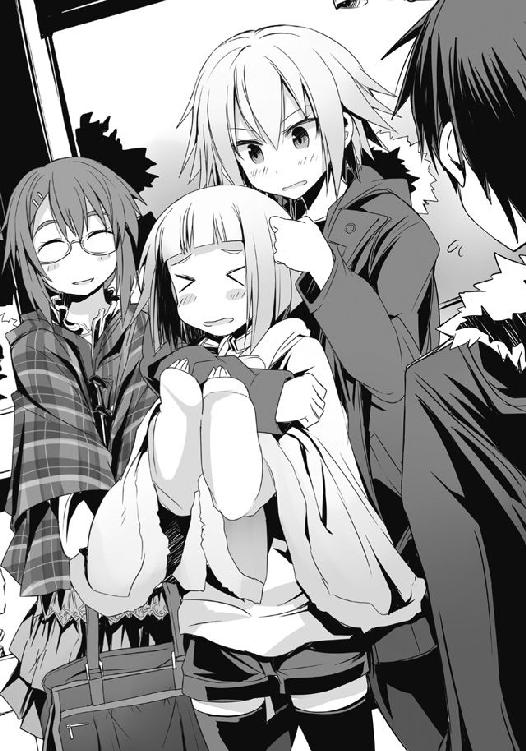

| ベン・トー 09 おかずたっぷり！ 具だくさん！ 香り豊かな欧風カレー弁当すぺしゃる３０５円 | |
| アサウラ | |
| 集英社 (2013) | |

ベン・トー ９
おかずたっぷり！ 具だくさん！ 香り豊かな欧風カレー弁当すぺしゃる３０５円
アサウラ
この本は縦書きでレイアウトされています。
また、ご覧になる機種により、表示の差が認められることがあります。
主要登場人物
佐藤 洋（さとう・よう）
烏田高校一年。体力とバカには自信がある。ゲームはセガ派。
著莪 あやめ（しゃが・あやめ）
丸富大学付属高校一年。佐藤洋と同じ生年月日の従姉。イタリア人の母を持つハーフ。ゲームはセガ派。
槍水 仙（やりずい・せん）
烏田高校二年。ハーフプライサー同好会会長。二つ名は《氷結の魔女》。
槍水 茉莉花（やりずい・まりか）
槍水仙の妹、10歳。姉と一緒に暮らしていた時は共に寝ることが多かった、子犬のような少女。
白粉 花（おしろい・はな）
烏田高校一年。小説執筆が趣味な女の子。実は一部ネットでは名が知られた存在だったりする。
禊萩 真希乃（みそはぎ・まきの）
中学三年生。存在感がやや薄い。運動が得意な娘。一部では有名な狼であり、二つ名は《ギリー・ドゥー》。
白梅 梅（しらうめ・うめ）
烏田高校一年でありながら生徒会会長を担う。白粉をとても大事に想っている。暴力的な一面を見せることも。
秋鹿 雅（あきじか・まさ）
元ＨＰ部所属の狼。二つ名は《大厄の闘牛士》。古くは《ウルヴァー》という名で呼ばれていた。現在は東北の大学に通っている。
刈穂 司（かりほ・つかさ）
ある種の情報屋としての側面を持つ、美声の狼。二つ名は《東北のカナリア》。
響 鉄平（ひびき・てっぺい）
東北の大学に通う、最も最強に近いとされる狼。二つ名は《サラマンダー》。
大顎（おお・あご）
東北の地に住む狼。争奪戦時にはカゴを両手に持ってトリッキーな技を使う。長い三つ編みにロングスカートがトレードマーク。実は祖母から教わった編み物が趣味だったりする......が、それを知る者は誰もいない。
内本 宏明（うちもと・ひろあき）
烏田高校一年のドＭ。最近出番が少ないのはある種の放置プレイと認識しており、毎日が刺激的だと考えている。
イラスト／柴乃櫂人
――数週間前。東北のとあるスーパー、半値印証時刻。
「今回は炒飯の具材に救われたが......ははっ、お前の腕、この半年だか一年だかでイイ具合に仕上がったじゃないか。その力は、オレでもヤベェ」
赤いコートを纏い、赤毛をツンツンに尖らせたやけに人目を引く男――響鉄平こと《サラマンダー》は半額の『焼きラーメン＆炒飯弁当』を手に、笑った。
その彼と共に半額シールの貼られた『豪華海苔弁当』を陳列棚から獲った男――秋鹿雅はフンッと鼻で笑った。
「どうかな。お前を相手に勝率が八割を超えてようやくだと、俺は思う」
「なぁに、あの金城優でさえオレから逃げて、勝つ。しかしお前は真っ正面からだ、それでどっこいどっこい。十分な実力に達しているさ」
「......金城......か」
秋鹿はかつての後輩の名を聞き、思わず弁当を持っていた手に力が入ってしまう。パリリと容器が音を立てたので、彼は慌てて力を抜いた。
「気張るな気張るな。ただでさえ老けた顔がさらに老けるぞ。......昔の確執なんざ、いい加減忘れちまえよ。争奪戦は楽しくやるもんだ。いつまでも縛られているのは良くないぜ」
秋鹿はかけていた赤いサングラスを外し、革コートの胸ポケットに引っかける。
「当然だ。......だからこそ、年明けには全てが始まってしまったあの地にて、ケリをつける。そこで一年前の惰弱なる己を、一年前に為さねばならなかったことを......あの後悔を、槍水仙を倒すことで消してみせる。そして、その暁には金城をも......。それが、俺の義務だ」
まじめクンめ、と鉄平は笑い、床に落ちていた自分の丸いレンズのサングラスを拾い上げた。
「年明けか。ってことは、先にオレが最強の名をいただいちまうかもしれないぜ？」
鉄平はすでに大学の課題を終えており、クリスマス前には首都圏へ向けて南下するのだという。当然、暴れん坊のサンタクロースなどとふざけた名前で呼ばれるこの男のことだ。途中で名うての狼たちと拳を交えた後、かの地において《魔導士》と当たるつもりでいるのだろう。
己の強さを試すがために、戦いの快楽を貪るがために。
「その時はオレを倒すか、秋鹿？ ......相性ってのを考えりゃ、その方がお前さんからすると楽っちゃ楽だな。それで気が晴れるかは知らねぇが」
秋鹿は思わずフン、と鼻で笑ってしまう。
相変わらず、この男は子供のようなシンプルな物の考え方をする。鉄平には、秋鹿がまったく別の目的のために金城優と槍水仙を打倒しようとしているとは少しも考えていないのだろう。
後輩に負けたことを悔い続ける男、そして最強になることに固執する狼......といった見方しかしていない。
鉄平にとっての目的である〝最強超え〟は、秋鹿にとっては単なる手段に過ぎないのだが......。
しかし秋鹿は、こういう男を嫌いではなかった。だからこそこの一年、友のように、ライバルのように、そして毎晩のように戦い、己を鍛え上げる敵としてきた。
「お前が最強になるのなら、それでいい。だが......果たしてお前で勝てるのか、サラマンダー。金城はおろか、槍水にも。......あの子を超えるのは楽なことじゃないぞ」
約一年前、当時は秋鹿も所属していたＨＰ部の冬合宿......あの時《腰巾着》と呼ばれていた少女は、猛者揃いのＨＰ部メンバーの前で本物の魔女となった。
過酷な環境の中、並み居る狼を退け、仲間を振り切り、そして......二日連続の月桂冠奪取という偉業を成し遂げたのだ。
彼女が二日目に獲ったのが、勝利の意を内包する弁当であったことも、今思い出してみれば何やら因縁めいたものがある。
そう、あの二日間において、彼女――《氷結の魔女》は絶対の勝者だったのだ。
もしあの時自分が弁当を手にすることができていたら......たとえ出来ぬとしてもその後に槍水を打ち破ることができていたのなら......。今も秋鹿の胸に焦げ付くこの後悔はなかったはずだ。
己の失態を挽回するために、またあの地のスーパーからやり直す。去年同様に訪れるであろう槍水を打倒することによって......。
「夏に当たったよ。......勝てるね、ただし、うまく当たればだけどな。んじゃまぁ、先に行くぜ。さっきからこの炒飯の海老がオレを誘惑してくる。腹が減ってやべぇんだ」
鉄平はそう言って手にした弁当の蓋を指で弾いた。
本来ならその弁当の目玉具材であろう海老の身は、どういうわけか炒飯の中に埋もれかかっていた。それでも意識して目を凝らせば、その大きな身を確認できる。海老好きにはたまらないのだろう。
それにギリギリまで気づけなかった己の失態に、秋鹿は眉間に皺を寄せて首を振った。
「あぁ、先に行け。......実際、お前でもいいんだ。あの子たちに勝てるのなら......」
鉄平がレジへと向かっていく呑気な足音は、店内の軽快なＢＧＭの中によく響く。
秋鹿はそれを天井の白色灯を見上げながら聞いていた。
二人の闘いに巻き込まれ、冷たい床に伏した二〇匹もの狼たちの呻き声と共に――。
需要と供給、これら二つは商売における絶対の要素である。
これら二つの要素が寄り添う流通バランスのクロスポイント......その前後に於いて必ず発生するかすかな、ずれ。
その僅かな領域に生きる者たちがいる。
己の資金、生活、そして誇りを懸けてカオスと化す極狭領域を狩り場とする者たち。
――人は彼らを《狼》と呼んだ。
１章 東北のカナリア
「それを見届けるために来たんだ。行くさ」
刈穂司
雪が多い。言葉としてはありきたりだが、今年の雪の量はそんな生優しいものではない。東北の地に住む『彼』といえども、さすがに驚くほどの量が毎日のように降り続いている。
昨年も酷かったがね、と、バスの隣に座っている初老の男性は笑っていた。
「昨年......確かに酷かったですよね。だから僕は来なかった。しかし、来るべきだったんだ」
『彼』が独り言のように口にすると、初老の男性はもちろん、前に座っていた子供もまた何かに引っ張られるようにして『彼』の顔を見てきた。しかし、すぐに不思議そうな顔をする。
現在目指している町を一応地元と呼べる程度には近隣......そんな場所に『彼』は住んでいるのだが、いかんせんそうであるが故に去年はしくじってしまった。
ついに《女帝》すら打倒し、最強の狼の称号を得た魔導士率いるＨＰ部が来訪していたというのに、猛吹雪のせいで行くに行けなかったのだ。
家からやや遠いが、冬であっても十分通える距離......そうであるが故に、町に宿を取らなかったのが痛恨のミスとなった。
たまたま『彼』が赴かなかった時に限って、のちに伝説になった争奪戦が行われたのだ。
それまでは《腰巾着》などと呼ばれていた槍水仙が、ついに魔導士に肩を並べたとさえ言われる二日間の戦い。『彼』ともあろう者があれに参戦できず、その一大事件を見逃してしまったのは大きな失態だった。何せそれこそが、全国にその名を轟かせるＨＰ部が離散した切っ掛けだと、したり顔で語る者もいるほどの事件なのだ。
『彼』はこちらを見る者たちに気づかないふりをして、白く曇っていた窓をこする。氷のように冷たいその曇りを拭っても、見えるのは白一色。時折風に揺れている赤いポールが見え、ゆっくりと後ろへと流れていくので、バスはちゃんと道路を走っているのだと認識させられた。
この状況......全てが昨年と酷似していた。だからこそ、今年こそは、と『彼』はあえてコストを度外視し、ＨＰ部......いや、ＨＰ同好会の来襲に合わせて宿を取ったのだ。
何より昨年末、槍水仙と共に肩を並べていたあの〝厄災〟の名を持つ男――元ＨＰ部の猛者、秋鹿雅が現れるのは間違いないとサラマンダーからの情報もある。復讐のために、そして新たな一歩のために、今一度氷結の魔女の前にあの男が立つのだ。
かつて秋鹿が育てた魔導士、その魔導士が育てた魔女......そして、魔導士はおろか魔女にすら打ち破られた秋鹿......その彼のリベンジマッチ。何と因果な戦いだろう。しかし、面白い。
今日明日が、今後の〝最強超え〟の嚆矢となりうる夜になるのだ。魔女を倒した後、秋鹿は魔導士を倒しに行く......それは確実だろう。
語り部を自称する『彼』としてはこれに立ち会わないわけにはいかなかった。名うての多くが首都近郊に寄り集まるが故だが、《毛玉》と呼ばれる情報屋ばかりがこの世界で幅をきかせているのは面白くない。古くは騎士と呼ばれた狼たちの半額弁当争奪戦......。その神聖なる戦いは単なる情報として伝えるだけではあまりに味気ない。その戦いは物語であり、即ち叙事詩として歌い継がれるべきものである。少なくとも、『彼』はそう考えている。
だから自分が見届けるのだ。この半額弁当を求めし英傑たちの物語を。その全てを体感し、その時その場にいるからこそわかる感情や機微を含めて詠いたい。
バスが止まる。『彼』は鞄を手に席を立った。
「あんちゃん、何か随分いい声してるけど......アナウンサーとかやったりするんかい？」
「まさか。僕は......ただの狼ですよ。少し変わり種ですけどね」
中性的な声に不思議そうな顔をする乗客を車内に残し、『彼』はバスを降りる。除雪はしてあるのだろうが、降り立った瞬間、ボフッと軽い音と共に足首までが雪に沈んだ。
そっと走りだすバスに背を向け、叩きつけるような雪粒の中、『彼』は一面の銀世界に己の足跡を刻み行く。
......この足跡とてそう時を待たずして消えていくのだろう。それはいい。ただ、〝最強〟の系譜に連なる者たちの足跡だけは埋もれさせはしない。
かつて狼が騎士と呼ばれた時代には多くいた語り部にして詠い手......。その数少ない生き残りとして、『彼』にはそうすることができる技能、そして義務があるのだから。
『彼』の名は刈穂司。東北の地に住みし文士にして名の知れた詠い手。狼たちの物語を紡ぐその美声は、鳥の囀りがごとく聞く者の心をとらえ、魅了する。
人は彼を――《東北のカナリア》と呼んだ。
○
――五分、という時間がある。一日の二八八分の一にして、意識せずにボーッとしているだけで痕跡すら残さずに消えていく、短い時間......。しかしてそれは時として永遠にも近い時間となり得るものだったりする。例えば僕、佐藤洋がまだ中学生という青き時代を送っていた頃......あの時ほど五分という時間の中に永遠を感じたことはなかった。
ある日、我が校にハルミという大学生――教育実習生がやってくると聞かされた。教師のようであって教師でない、いまだ社会に出たことがないけれど成人しているという矛盾......さらに教師と生徒という禁断の関係よりは低い難易度の上、一カ月で強制的にやってくるであろう別れはお互いに割り切った関係でいられるという淡い期待もあり、口にこそしなかったが、これから出会うハルミ先生との一カ月だけのラブロマンスを男子の誰もが夢想していたのは間違いなかった。思春期真っ盛り、性への興味がスタートダッシュ中でいろんなものが先走っていたりする中学生としては当然のことであろう。
もちろんそんな甘い話、そうそううまくいくはずがないのは当然だとしても......現実というのはあまりに非情だった。誰もが胸を弾ませて月曜日の全校集会に向かうと、夢に描いた若くて綺麗で、それでいて爆裂ボディを持つハルミ先生の姿はどこにもない。何故だ？ と男子たちは体育館中を見回すのだけれど、いつもと違うのは、教頭の薄毛がそろそろ笑えないレベルになってきたのと、男子諸氏の大敵である、女生徒のスカートの丈を可能な限り長くせんとする生徒指導の鬼ババア、山口先生が以前より確実に太っていたぐらいである。
何だ、諸事情から来なくなったのか......そう思った矢先、校長がハルミ先生の名を呼んだのだ。アレ？ と僕もまた顔を上げると、ステージの上に爽やかなイケメンがいた。そう、ハルミは晴海であり、晴美でもなければ春美でもなく......っていうか女ですらなくて男だったのだ。
少女漫画から抜け出てきたかのようなイケメンの登場は、僕らの夢想が全て逆転することを意味していた。昔から子供が好きで、教師に憧れ、みんなと青春の一ページを云々とお決まりの綺麗事を語る晴海の爽やかな笑顔に、男子は誰もが脅威を感じずにはいられなかったはずだ。
全校集会後、僕らのクラスは誰かが招集をかけることもなく教室の片隅に緊急的に集結し、奴は真性のロリコン野郎で女子生徒を喰いに来た犯罪者だとする議決を得る。さらに一カ月という限定された期間は後腐れなくていいという思惑もあるに違いないと僕が言うと、全員が頷いた。この時点で〝さてはコイツら、自分と同じ妄想を抱いていたか〟と誰しもが勘づいたが、それには触れず、〝ロリコンは殺せ！〟というフレーズと共にこれからの一カ月間、晴海の魔の手からクラスの女子を守り抜こうと意志を確認し合ったのだった。
無論、教室の片隅だったので話し合いの内容は思いっきり女子に聞かれていたのだけれど、そんなことは関係なかった。広部さんからの「......うざっ」の一言すら僕らにはポジティブに受け止められた。嫌われたとしても彼女らを守り通すのだと、あえて泥を被りて正義を貫くダークヒーローあらんとした。自らの幸せではなく、彼女らの幸せと純潔を守ること、それこそが為すべきことに他ならないと心に定めたのだ。――男ってのは、そういうものなのである。
つい数十分前までは爆裂ボディ教育実習生ハルミとのラブロマンスを妄想していた男たちは過去を振り切り、勇ましく一致団結したのだ。――男ってのは、そういうものなのである。
教室にやってきた晴海への「恋愛対象はやっぱり未成年なんですか？」の質問により、僕らは、『パールハーバー』と名付けられた奇襲的かつ致命的になりうる先制の一手を打ったが、彼は「どうかな」と見事な微笑みで鮮やかにかわしてみせ、かなりの手練れであることを示し、男子一同を震え上がらせた。まずは一撃、と構えていた僕らに晴海のカウンターは凄まじい効果を発揮した。当初予定していた次の攻撃を続けることが出来ず、彼の自己紹介で特技はリフティングだとかいうくだらない話を全員が静聴してしまったほどだ。
口舌の争いでは人生経験豊富かつ、事前の戦闘準備をしてきたであろう晴海に分があるとして、僕らは即座に次の対応を迫られた。しかしながらあまりに緊急の事態......一時的な措置として僕らは晴海の近くに同志の男子を常に配置し、女子との交流を阻害するという合理的かつ無難な手段に打って出た。これには昔からの因果で女子に不人気真っ盛りの石岡君がかなりの戦果を残したことを、幼馴染みの僕が彼の誉れとして語っておこう。
このシンプルにして完璧なる作戦、誰の目から見ても勝利は確実であり、革命家でお馴染みの三沢君に至ってはある日、妙なデザインのダルマを小脇に抱えて登校するほどであった。無言のまま持ってきて窓際に飾りだしたので、その意味を理解するまで、奴は怪しげな宗教でも始めたんじゃないかと数日間噂になったのはいい思い出である。
しかしながら現実ってのはわからない。この僕らの作戦はものの見事に成功したのだけれど......しかし、同時にある意味では失敗したのだった。......監視目的で何かと近くにいるようにしていたら......男子一同が晴海と異様に仲良くなってしまったのだ。
サッカー選手を目指していたのに若くして膝を壊して自暴自棄になった過去や、それを立ち直らせてくれた先生を尊敬し、自分もまた教師になろうと決意した経緯、そして小学校からの幼馴染みにして将来教師になって落ち着いたら結婚しようと約束しあった年上の彼女のことなど......晴海先生はいろんなことを包み隠さず僕らに語ってくれた。他学年、他クラスの男子さえも彼に魅了され、そして多くの女子もまた心を惹きつけられた。
当然思春期真っ盛りの中学生、女子生徒たちは晴海先生にラブレターを書いたり、告白したりと、いろいろとアプローチしたようだったが、当然心に決めた女がいる晴海先生にそんな付け焼き刃の恋心など通じるわけがない。僕らでさえ、あの先生が教え子に手を出すようなことはないと信じていたので、女生徒を引き留めるようなこともせず、哀れみを持って彼女らを眺めるに止めていたのだった。別に振られる女生徒を見て哀れんでいたのではなく、自分の想いは届かないとわかっているのに、それでもなお告白せずにはいられない彼女らの乙女心というものに、僕らは切なさを覚えていたのだ。
本当に素晴らしい先生だった。年が近いせいもあって、先生というよりは頼りになる親戚のお兄さんみたいな感じだったと思う。彼と接しているとどこか自分ももっとまじめに、もっとしっかりしなきゃいけない......そんな考えを持つようにさえなっていった。
......だから、ふざけていたら誤って窓ガラスを割ってしまい、一人で体育館と更衣室の掃除を命じられていた石岡君が鼻息を荒くして「今日体育があったのはうちの学年だけ......つまり同級生の誰かのに違いない！」と言って、女子更衣室のゴミ箱から伝線した黒ストッキングを僕らのもとに持ってきた時は何とも言えない哀れみを覚えたものだ。
......ま、それはそれとして......僕らにとって女性用ストッキングというのは神秘のアイテムであり、溢れ出る好奇心に突き動かされるままにそれを男子更衣室へ運び、そのこの世ならざる手触りを確かめつつも果たして誰のものであるのかを数名の男子で探求したりした。――男ってのは、そういうものなのだ。仕方がないのだ、本能なのだ。
朝はストッキング装着で、帰りには素足だった女生徒......それがはっきりしない限り手触りの確認以上の行為にはさすがに......いや、違う、晴海先生と一緒にいて清い心になっていた僕らはそれ以上の行為を断固拒否し、ゲス過ぎる石岡君を非難すると共にその諸悪の根源である黒い塊となったストッキングを男子更衣室のゴミ箱に封印して学校を去ったのだった。何せ、もうすぐ晴海先生との別れの日だったのだ。そんな邪なことで僕らは悦んではいられない。
そう、楽しい時間というのは短く感じるもの。晴海先生との一カ月はあっというまだった。......別れの朝、全校集会が始まる前から僕らはみんな涙を堪えていたっけ。
いつもは全校集会のメインたる校長先生の話は前説に過ぎない。晴海先生が登壇した時、すでに肩を震わせている女子生徒も少なくなかった。
晴海先生は、あまりに短い一カ月だったと、そして僕らと共に刻んだ思い出を蕩々と語る。時折嗚咽を漏らしながら、頬を濡らしながら、カッコイイ顔をぐちゃぐちゃにしながら......最後に、本当にありがとうと一際大声で言い、そして、必ず立派な教師になってこの学校に三度戻ってくることを僕らに約束したのだった。
僕らはもちろん、他学年の生徒や教師陣にさえ涙を浮かべる者は大勢いた。いつも気丈でいた広部さんでさえ、目尻に光るものを湛えていたのを僕は見逃してはいない。
別れという名の感動が、体育館を包んでいた。悲しみはある、しかしそれだけではないどこか心地よさのある別れ。この一カ月で、僕らは授業では決して教えられることのない大切な何かを確かに学んだのだった。
これにて涙、涙、涙の全校集会は終わる......はずだった。空調にそよぐ薄毛を押さえつけながら、教頭が鼻声で「先生方、何かありますかな？」などと口にしなければ......。
では五分だけ、と言って手を挙げたのはかの山口先生だった。きっと今の感動的な晴海先生との別れを胸に、生徒一同のさらなる成長を期待する云々、とか当たり前のことを言うんだろうな、とか僕はボケッと考えていたのだが、何やら様子がおかしい。涙で視界が歪んでいるせいか、山口先生の手からダークなオーラが揺らいでいるようにすら見えた。
で、登壇した鬼ババア......山口先生はまるで裁判所から飛び出してきた弁護団が掲げる〝勝訴〟の文字がごとく、伝線した黒いストッキングを両手で高々と掲げたのだった。
――これが男子更衣室にあった!! 決戦前の戦国武将がごとくそう言い放ち、その凄まじい迫力と対照的にその手から垂れ下がるストッキングの爪先が空調の風に頼りなさげに揺れる。
感動に震えていた全校生徒はビクリと固まり、僕と石岡君と幾人かの男子だけはそれまでとは違う意味で震え、そして頬を伝わる雫は涙から脂汗に取って代わった。
――これが男子更衣室にあった、何故か!? ――どうやって使用済みのこれを手に入れたのかっ!? ――これで一体何をしたのかっ!? ――今、この学校の風紀は乱れている!!
その演説の凄まじさは、そのうちに「立てよ国民よ！」とか「アンギャー!!」とか言いだしかねない怒濤の勢いであり、その手負いの獣を思わせる迫力で山口先生は全校生徒にまくしたて、数十秒前までの感動をものの見事に一掃してみせた。
一体何がそこまで彼女を駆り立てたのか。全校生徒の青春の一ページにして晴海先生の人生の重要な一日を破壊してまで訴えたかったのは一体何だったのか。生徒指導としての義務か、それとも女としての本能か、単なる更年期障害か......真実はいまだ謎のままである。
では五分だけ。最初に山口先生が口にしたその言葉はどこまでも空しかった。五分というにはあまりに長く、そのわずかな時間の中に永遠にも似た長さを僕ら――主に石岡君とかだけど――は感じたのだった。最後の方とかさっきまで号泣していた晴海先生も、舞台横で爪の間に挟まっていたゴミを無表情に取ったりしていたっけ。
話は戻るのだけれど、今......そう、僕が置かれているこの状況もまたそれに似ていた。ただし、もっとポジティブだ。
一月三日。いわゆる正月の三が日の最終日であり、大体の家庭では今日ぐらいまではゆっくりと過ごすのだろうがアクティブな我が佐藤家ではそうはいかない。親父は拉致でもされたかのように忽然と家族の前から姿を消して呑みに行き、母に至っては昨年から肉体を現実に置き去りにしてネットにダイブしたっきり消息を絶っている有様だ。無論、そんな状況の我が家に雑煮やおせちがあるわけもなく、僕はいつもの手段に打って出るしかなかった。
そう、どん兵衛だ。空腹時にお湯を投入してからの五分というのはまさに地獄のように長く、時が止まっているんじゃないかとすら錯覚をするほどであり、あの山口先生の咆吼を懐かしく思ったりもする。しかもそれがただのどん兵衛じゃないとなれば尚更だろう。実は僕の目の前に置かれているのは、お正月限定のおみくじ付きの年明けうどん仕様のどん兵衛なのだ！ この年明けうどんは〇九年にうどんに関してだけは比類無きアグレッシブさを発揮するうどん県こと香川県が提唱し、韓流のゴリ押しに迫る勢いで世間に浸透させようと躍起になっているものであり、公式ロゴマークなんかも出来ていて、日本の新しい風習......になればいいな、と思われているものだ。要はうどんに何かしらの赤い具材を添えておめでたい紅白を表そうぜってことらしい。このどん兵衛も当然しっかりとこれを守り、何と『梅うどん』仕様である。
「......よしっ、ようやく五分だ......!!」
僕は実家の居間で一人、ベロリとどん兵衛の蓋を開けた。立ち昇る昆布出汁風味の湯気の中、まず箸を麺に差し入れ、軽くほぐしつつスープの味が均一になるようにかき混ぜる。すると〝寿〟の文字が書かれた二枚のカマボコが顔を出したので、それを麺の上に飾るようにして置き、そして最後の仕上げとしてあめ玉のようにパッケージングされている本物の梅干し丸ごと一つをそっと中心に供えた。
薄い色合いの昆布出汁を漂う刻みネギに、ふんわりした溶き卵、麺の上には寿カマボコにとろろ昆布、そして年明けうどんにして梅うどんの象徴である梅干し。通常の大きなお揚げが載ったどん兵衛とはひと味もふた味も違うお正月仕様のどん兵衛......しかしてその味は......。
僕は一度箸先で梅干しを出汁に沈めてから、その汁を啜る。普段の醤油ベースのそれとは違う、関西のお店で食べるような上品な昆布出汁ベースの汁は......まろやかに、あっさりと、しかし風味豊か。所詮インスタントだと思って油断していると腰を抜かしかねないレベルだ。
出汁で先陣を切って口や喉を潤した後は、当然、麺に行く。これはいつものどん兵衛と同じの安心感のある味。食べるに甘く、旨味が濃い。
さて......ここで沈めておいた梅干しを探し、軽く齧ってみるとしよう。
――うっ、すっぺぇ！ 正月ボケした僕の目を覚まさせる真っ赤なそれは、その見た目同様に味も鮮烈かつ刺激的だ。やや塩気が強く、酸味も凄い。旨味にも繋がるけれど、揚げた代物である以上どうしても感じられてしまう揚げ麺のまどろっこしさを一発で吹っ飛ばしてくれる。
「待てよ、このまま舐めるようにして齧るのもいいけど、実を解して汁に混ぜてみたら......」
ふとした思いつきに、汁に映る自分がしたり顔になる。麺の下に沈めた梅干しを箸先でよく潰し、そして軽くかき混ぜる。梅の欠片が漂うそれを口にしてみれば......やはりな、正解だ。味がひと味もふた味も変わった。さっぱり感が強調され、僕の食欲がさらなる勢いを増す。
......しかし何だな、若干梅干しが強くて昆布出汁の風味を抑えてしまった。アレだ、半分ぐらいまでは昆布出汁の巧みさを楽しんでから、梅を潰すべきだったかもしれない。そうした方が二つの味を楽しめるだろう。......うん、次からはそうしてみよう。
僕は汁を最後の一滴まで飲み干すと、容器を処理し、洗い物を済ませた。そしてお湯を沸かしたガスの元栓などをチェックした後......一階の隅にある母の部屋をそーっとノック。
「それじゃ僕、そろそろ部活の合宿に行ってくるけど......あの例の......」
――え？ オトコの声!? ――私たちのネネちゃんに彼氏!? ――しかも正月からって、まさか同棲!? ――未成年で!? 犯罪！ 犯罪だよ!!
「ちょっ、み、みんな落ち着いてよ、そんなわけないじゃん！ もぅ、お兄ちゃん!? ネネがシュウエイシャンで冒険している間は話しかけないでっていつも言ってるじゃん！」
――え？ お兄さんいたの!? ――私たちのネネちゃんは妹キャラ!? ――呼ばれてぇ！ 僕もネネちゃんにお兄ちゃんって呼ばれてぇ！
扉の向こうから聞こえてきた複数人のボイスチャットと、自分は妹であると主張するかわいらしい母の声。地を這うようなテンションの僕は思わず床を見下ろしたところ、スッと、床と扉の隙間からお札が顔を出す。昨年のうちに約束していた、合宿費用だ。
僕はその数枚のお札を手にしてさっさとその場から離れた。
自称一四歳の母に、新たに妹設定が加わってしまったことを出来るだけ僕は意識しないようにした。今日からＨＰ同好会の合宿......夏と同じく北へと向かって二泊三日を過ごすのだ。......こんなテンションでいたらダメだ。
何より......今回の合宿は本当の意味でハーレム状態なのだから！ まぁ簡単に言えば年明けに著莪がイタリアへ行ったっきりなので、夏より多少自由になるというだけなのだけれど、身内の人間がいないというだけで、どこか解放されたような気分になるのは誰もがわかるところかと思う。身内は身内でいいとして、他は他とした方が......ほら、ね？ いろいろと......ね？
僕はコートを羽織ると、昨日のうちに荷物をまとめておいたバッグを担ぎ、靴を履いて玄関の姿見に己を映す。ファーフードが付いたやや生地の厚い黒のモッズコート、ジーンズ、トレッキングシューズという出立ちだ。なお、この靴はＨＰ同好会で雪山へ合宿に行くという話をしたら、何を思ったのか、著莪が年末に買ってくれた代物だったりする。
コートはボタンを上までしっかり留めるとハイネックになるのでそれで首回りを覆い、北国って以上にちょっと槍水先輩を意識した今回のコーディネートの最終チェック。
......うん、よし。肌つやも良し、髪型も大丈夫だ。さらにクリスマス以降は著莪家にいることが多かったため、イタリア製のやたら良い香りのコンディショナーによって髪の毛は僕の大好きな匂いに......あんまりなってないな。先輩に久しぶりに会うのだから少しでもいい印象を......と思って気を使ってみたのだけれど、ダメっぽい。
著莪だと一晩中髪に鼻先を突っ込んでいたくなるような、そんな良い匂いがするんだけど、僕のはちょっとイマイチだ。髪の量が違うせいか、それとも普段から使っていないからかな？
「まぁ大丈夫か。良い匂いはしなくとも臭くはないだろう。......うん！ 何せもう、ね！」
昨年のクリスマス......あの夜、確実に僕と先輩の距離は縮まったと思う。
二人っきりだったら確実に最後まで......いや、少なくとも告白しちゃうぐらいまではいっていたはず。雪まで降ってロマンチックだったし、何より先輩は僕にあんな笑顔を見せてくれて......どう考えてもフラグがビンビンにおっ立っているとしか考えられない。
あの時の部室は大勢がいた上に、帰り際に先輩を家まで送った際にも横に著莪がいたから何もなかったけれど......今やもうね、アレだよ、これから彼女と再会するとだな......あけましておめでとう→キス→ホテルの流れになる可能性が極めて高い。
よしっ、と気合いを入れた僕は、母のかわいらしい笑い声を聞きながら家を出る。いまだ静まり返っている早朝の町。僕は真新しい靴でアスファルトを蹴った。
この駅ですね、と先ほど合流した白粉花が言うと、僕らは鞄を手に座席を立った。
僕ら二人を乗せた電車がホームに進入。いまだ朝っぱらとはいえ、参拝のために出てきたらしい大勢の人々と共に、田舎なのに何だか妙に活気を感じる土地へと降り立った。
ホームを一月の冷たい風が吹き抜け、白粉の外套がバササと靡き、彼女の後ろにまとめられた尻尾のような髪も揺れる。その外套は、最初ダッフルコートかと思ったけれど、よく見るとそれはフード付きでトグルボタン仕様のポンチョだと知れた。
「西口から出てすぐだから......そっちだ。行こう、白粉。ちょっと遅れちゃってる」
電車のダイヤが乱れており、先輩との待ち合わせ時刻から既に二〇分近く経っているのだ。
僕らが急ぎ足で駅を出ると、辺りは人でごった返していた。神社の大きな鳥居に続く参道の両端に無数の屋台が並び、それはまさにお祭りといった感じである。
なんでもこの神社、勝負事の神様を祀っているとかで、受験生に人気だというが......若者だけではなく、ワンカップが似合いそうなギャンブラーの姿もよく目に付いた。
「凄い人だな、ここ。先輩、見つけられるといいんだけど......」
僕らは人混みをかき分けるようにして鳥居を抜け、待ち合わせ場所を目指すのだけれど......多くの参拝客のせいで、なかなかうまく進めやしない。人混みは得意だという白粉のように、自然に人の間を通り抜けては行けず、置いていかれそうになる。必死にその背中を追い掛けた。
そんな彼女を後ろから見ていると余計に感じるのだけれど、何だか今日の白粉はそのチェックのポンチョのせいか、どこかファンタジー世界の住人のようにも見える。小柄なことに加え、ポンチョの下も控えめのフリルに、そっと添えられたようなチュールレースが付いた落ち着いた色合いのワンピース、生地が厚めのパンスト、踵の低いブーツといった具合だから、余計にそのイメージを後押しした。
そんなだからかわからないが、ぶっちゃけ......かわいい。厚着のおかげなのか、いつものおどおどした感じもあまりなく、それ以上に......何だ、ドロドロとした感じがないのがいい。
「ん？ 白粉、佐藤！ こっちだ、遅いぞ」
雑踏の中でも通る凜としたその声......それは紛れもなく僕のマイスウィートハニーのボイスに他ならない。人混みをかき分けていくと、見えてきたのは甘酒の屋台。その横に活けられた一輪の花がごとく、僕らに笑顔を向けて立っている人。――槍水先輩だ。
湯気の立つ紙コップを持つ彼女は、いつものより厚手でファーの付いた、冬仕様のモッズコート。結構ゴツイ感じのデザインなので、また男物なのかもしれない。
近づきつつも僕は、コートの前を開けていた先輩のボディを舐めるように......ゲフンゲフン、男の務めとして軽く流し見る。柔らかくも暖かそうな大きめサイズのセーターに、大きなバックルで留めたデニムのショートパンツ。そこから伸びる黒ストッキングに包まれた健康美を感じさせる御御足が何とも眩しい。ストッキングの張り具合......ただの薄い布の表面に現れる濃淡のグラデーションがその両足を見事に彩っていて、視線が引っ張られる。......やはりストッキングは履かれてこそ美しい。単体じゃ空調に揺らいだりして何か哀れだものね。
僕らは新年の挨拶をし、そして見つめ合った。肩口までの髪をあえて尖らせ、ワイルドにまとめているくせに、その表情だけは柔らかな槍水先輩。いつもは鋭い眼差しも、今は和やかだ。どこかホッとしているようですらある。......これはアレだな、約一〇日ぶりに僕の顔を見ることが出来て、彼女の乙女心が疼いているに違いない。
「お待たせしてしまったようですね。さぁ、今すぐ行きましょう」
ホテルへ！ と、思わず大声で続けそうになるが、それは先輩からのデコピンが押し止めた。
「いきなり何を言っているんだ、お前は。普通、謝るのが先だろう」
甘酒が入っていた紙コップをゴミ箱へ捨てると、彼女は腕を組んで頬を膨らませた。
謝る？ と、僕が尋ねると先輩ではない別の人物が遅刻の件だと教えてくれる。
「さっきまで、ずっとお姉ちゃん、背伸びして一人でそわそわしていたんですよ〜」
「よ、余計なことは言わなくていい、茉莉花！」
顔を赤らめた先輩は、彼女の背後に立っていた妹――槍水茉莉花の頭に慌ててグリグリと拳を押しつけた。茉莉花はそのサラサラした肩口までの髪を揺らしながら、うーっ、と唸る。

うーん、僕の顔を見られて嬉しいってのは間違いないようだけど、微妙にニュアンスが違うようだ。......おかしいな？ まさか僕一人だけテンション上がって勘違いしてるとか？ そんなわけは......ハハッ、まさか。ありえないね。
「もういい。さっさとお参りをすませよう。遅くなってしまう」
僕らは先輩に促され、参拝の列へ。四人で横一列に並ぶと茉莉花がふと白粉を上から下まで眺め、お揃いですね、とニッコリと笑った。彼女は白いモコモコのボアポンチョを羽織っており、デザインこそ違えど、トグルボタンが付いていて確かに白粉とお揃いと言えなくもない。
肩口で整えられた子供特有の細く、微風にさえサラリと揺れる艶やかな髪。著莪があげたチョーカーっぽい犬用の首輪、ポンチョの下の柔らかな白いパーカ、そして姉に合わせたのか、黒のショートパンツに生地がやや厚めの黒のニーソックス、そして踵の低いショートブーツという組み合わせ。確か小学四年生で一〇歳のはずなのだけれど、ショートパンツとニーソックスの間にわずか四センチほどだけ顔を出す張りのある肌が凄まじく男の視線を誘う。ソックスの絞りが作る〝ぷにっと感〟を強調するかのようだ。そしてそれを含むあえての四センチ、その微妙過ぎる露出......しかもパンツもソックスも黒にすることで、肌が眩しいほどに白く見えるという構成は素足よりもずっと性的に魅せている。全身をすっぽり覆って肌の露出がほとんどない白粉とは方向性が根本的に違うのだけれど......まぁそこは個性の違いか。
白粉がちょっと困ったように、でも嬉しそうに、ほんのり頬を赤らめてはにかんでいた。
「あ、お姉ちゃんとセンパイも色違いのお揃いですね」
「ん、そういえば......そうだな。少し似ているな。今日はツーペアか」
先輩がクスリと笑うと、何となくペア同士で並んだ方がいい、ということになり、白粉、茉莉花、先輩、そして僕の並びに変える。だから何だってわけじゃないんだけど、並び直した後は自然と全員がそれぞれ四人の顔を見回し、笑い合った。
「賽銭箱まではもう暫くあるな。......どれ、今のうちに今回の合宿について触れておこうか」
先輩曰く、今回僕らが赴くのは夏の強化合宿よりもさらにいくらか北上した土地。夏の時は『花火ちらし寿司』を目当てとしていたが、今回はそうではなく、豪雪地帯、さらには正月という特殊な環境下における半値印証時刻はもちろん、弁当の内容含めた変動を身をもって体感することなんだそうな。そしてその前に、この勝負事の神様を祀る神社に参拝し、今年の半額弁当争奪戦における勝利を祈る、というわけらしい。
「あの辺りのは地元食材を使ったいい弁当が出る。特に......昨年の二日目の夜に食べた弁当は格別だったな。ほら、バスが事故を起こして大変だったと以前話したやつだ。私が初めて二晩連続で月桂冠を手にしたからというのもあるが、あれは本当に見事な風味で、今でも忘れられない。......正月らしくないのに正月らしい、当たり前のようで不思議な弁当だった。多分今年も出るだろう。是非お前たちにも味わってもらいたい」
先輩は瞼を閉じ、少し何かを考えるような顔をする。そしてそんな姉を茉莉花がどこか心配げな顔で見上げているのだけれど......何だろう？
「とはいえ、元々この冬の合宿は半分以上遊び目的だ。正月だからな、現れるのは大抵その地元の狼の一部のみ。......まぁ、今回は特に茉莉花もいるし、気楽に行こう」
「そういえば、茉莉花が来るのはちょっと意外でした。一応半額弁当狙いの合宿なのに」
茉莉花がちょっと困ったような顔をして僕の顔、そして姉の顔を見上げた。何か言いたそうだけれど、言えない......そんなふうに見えてしまう。
茉莉花が口を開きそうになるものの、列が動く。白粉と茉莉花の二列だけ少し早いようだ。先に行ってしまい、小柄な二人の姿はほとんど見えなくなってしまった。
「私も合宿だからと言ったんだが、聞かなくてな。どうしても自分も行くんだと我が儘言いだして。......きっと、秋にお前たちと行った旅行がよっぽど楽しかったんだろう」
そう言われると悪い気はしないけれど、それなら茉莉花はあんな顔をするだろうか。
我が儘を言ったせいで先輩に怒られたとか......それとも何かもっと別の......？
ハッ、まさか、秋の旅行で僕がやらかした一件......その、続きを彼女は求めてやってきたとは考えられないだろうか!? あそこまでやっちまった以上は、あとはもう最後までヤっちまうしかない気はするけど......そ、それでもあの子が求めるなら僕は......僕は......。
僕は視線を足下に落とす。するとまだ真新しい己の靴が目に入り......そして、地球の裏側にいる著莪の声が聞こえた気がした。――ロリはやめとけ、と。
......うん、まったくもってその通りだな。茉莉花はまだ一〇歳。せめて......あと一、二年は待つべきだ。うむ。だから、今は槍水先輩の方に集中を......。
「ほら、前、行ったぞ佐藤。遅れるな」
意識を切り替えるために、僕は年末年始のことを話題にして喋っていると、ようやく賽銭箱が見えてくる。大きな神社はシートが敷き詰められたエリアにお金を投げ入れるけれど、ここは一般的な神社のそれだ。僕の投げた小銭が木製の賽銭箱に当たり、小気味良い音がした。
勝負事の神様......今年も半額弁当争奪戦に勝てますように。あとカッコイイ二つ名を僕にください。僕と僕の好きな人たちがみんな無病息災で幸せに過ごせますように。昨年大変な目に遭われた方々にはこれからその分の笑顔を、そして昨年も笑顔だった人たちには変わらぬ幸せを。セガが今一度新たなハードを世に送り出し、世界のゲーム業界を掌握しますように。我が家の『トイレッツ』導入計画が頓挫しませんように。......えーっと他には......あぁ、僕の人生がハーレムエンドになって勝ち組になれますように！ よしっ、こんなもんだろう!!
五〇円の賽銭にしてはちょっと欲張りすぎたかな？ でも神様なら、ね？
最後に一礼して瞼を開くと、隣の槍水先輩はいまだ手を合わせたままだった。すぐ終わるだろうと思っていたのだけれど......なかなか長いな。
ちょっと周りの目が痛くなってきた時、ようやく先輩も一礼をして、賽銭箱前から退いた。
「結構長かったですけど、何お願いしたんです？」
「ん？ まぁ折角だからな、例えばうまい半額弁当が食べられるようにっていうのは当然だが、あとは......まぁいろいろだ。今年はみんなで笑っていられるように、とかな」
「何です、それ。それじゃまるで去年は......」
僕は笑いながら言うものの、その続きは槍水先輩の横顔が押し止める。どこか辛い過去を思い出すような憂いを帯びた横顔で......それ以上僕に冗談めかしたことを言わせなかった。
少し歩くと白粉たちが絵馬を購入し、二人してペンを走らせているのを見つけた。僕と先輩はそーっと後ろから近づき、二人がどんなことを書いているのかを覗き込むのだけれど......。
〝みんな幸せに、楽しい一年になりますように〟という茉莉花はいいだろう。問題はもう一方だ。〝心震える熱き漢たちのハードな生き様を今年も楽しめますように〟という眼鏡装着の白粉の方は、もはや祈る先を間違えているとしか思えない。神とは対極の側にいる存在に祈った方が早いだろう。しかもコイツ、さらっと、マッチョボディなウサギとか描いてやがる......。
「そのウサギっぽいマッチョ、なに？」
「あ、これはですね！ 友達のアオちゃ......あ、でも実際に会ったのはこの前の冬の同人誌即売会なんですけどね！ ネットの友達で、その彼女が描く愛らしいキャラでして！」
嬉々として答える白粉だが......何だ、コイツは。一体何を神社に奉納しようというのか。元々絵馬は神様の乗り物である馬が高価であるがために、その代わりとして絵に描いた馬を奉納したのが始まりとされているが......神様も馬の代わりにマッチョなウサギがやってきたら困惑するにも程がある。よっぽど特殊な趣味をお持ちでない限り「何と愛らしいマッチョじゃ。良い、願いを叶えてしんぜよう」とはならんだろうし、そんな神様のいる神社はちょっと嫌だ。
白粉はペンを走らせながらも年末に行われたという同人誌即売会がどれほど素晴らしく、日頃ため込んだ邪気を発散することができたか云々と、延々語りだす。......あぁ、何か今日の白粉が妙にかわいかったのは、そこで邪悪なるものを使い果たしてきたからか。
白粉の話に純粋無垢な茉莉花が興味を持ち始めたので、とりあえず過ちが起こる前に僕は白粉の後ろ髪を引っ張っておく。今年一発目の「あぅ！」だった。
●
安宿だった。刈穂にしてみれば観光に来ているわけではないので、風と雪が凌げ、横になれるのならどこでもいいのだ。実際その宿はまさにその類であり、気合いはあるが金はない国内外のスキーヤーが泊まりに来る民宿で、飯も出ない。
そんな宿だからこそ、刈穂のような軽装の客は珍しいのだろう。玄関に上がって名を告げると、カウンター席に座っていた老人が不思議そうな顔をした。
......何か？ 鳥の囀りにも似た女性的な声で刈穂が言うと、老人は慌てて取り繕った。
「いやいや、ちょっと珍しかったんでね。二人も、こう、軽装な人だもんで」
二人？ と、刈穂は予想外の言葉に眉根を寄せ、老人が指先をトントンと叩く宿泊帳に目を落とせば、三泊宿泊予定の文字と共に、そこには見覚えのある名があった。
彼が？ 思わず刈穂が漏らすと、老人が玄関の片隅に視線を送る。それに倣うとそこには異様にして見知った男の姿。
「......奇遇ってやつだね、秋鹿。実は君たちの戦いのために僕も宿を取ったんだ」
玄関の片隅で、気配を消しながら革靴を拭いていた男。その姿はいつ見ても異様だが、事この場所、この季節になるとそれは際立った。
適当に伸ばされ、野良犬の毛のようにくすみ、ゆるくウェーブする黒い長髪。スパニッシュ系を思わせる彫りの深い顔。そして穿き古したジーンズに黒いシャツ、それらを覆う革のロングコート。その胸ポケットには赤いサングラス。
真冬の北国とは思えないほど軽装だ。革物は風を通さないとはいえ、如何せんここは極寒と言っても差し支えないのない地域。コート一枚羽織ったところで凌げる寒さではないはずだ。
「詠いに来たか、カナリア。だが、まだ金銭を賭してまで現れるべき時ではないと思うがな」
いわゆるデスボイスというのか、刈穂とはまったく逆の、耳障りな声だった。
「しかし、魔女を打倒した後......始めるんだろう？ ついに、〝最強超え〟を。ならばその物語の始まりを自らの目に収めておきたいと思うのは当然じゃないかな」
「サラマンダーから聞いたか。相変わらず口の軽い奴だ。......そうだ、最強の枕詞、国外に持ち出させるわけにはいかない。国内に止めておくべきだろう。そうでなくては、次の秩序が生まれるまでにどれほど半値印証時刻の治安が乱れてしまうことかわかったものじゃない」
秋鹿が何を言わんとしているのかは、刈穂にもわかった。今までは最強の魔導士こと、金城優を頂点として、実力によるある種のヒエラルキーが形成されていた。その頂点は常に次の時代の者へと受け継がれ続けており、金城の前は女帝が有し、古くは伝説となった《アーサー》と呼ばれる者が活躍していた時代にまで遡ることができる。
その明確な〝最強〟の冠を有する者が常に在り続けたが故にスーパーでは日々戦いが行われ続けてもなお、治安と呼べるものが存在した。強い奴と戦いたければ、最強のもとへ行け。彼はもちろん、その者の周りには自然と強者が集っている......そう、言われ続けたものだ。
だが、もし、最強の冠が突如として喪失したら......果たしてどうなるのか。
話でしか刈穂は知らないが、アーサーが現れる前の混沌とした時代が再び訪れるに違いなかった。それはまさに群雄割拠。戦国時代さながらに、腕利きの者たちが名乗りを上げ、全国のスーパーを駆けずり回り、名の知れた狼たちは互いに引き寄せあい、ぶつかり、そしてひとときの勝利の味を口にした者が、我こそは最強なりと全国各地で雄叫びを上げるのだ。
「本質は半額弁当という美味なる物を口にせんとする愚か者たちの戦い。最強もクソもない。だが、それだけじゃないのもまた、俺たちにとっては周知の事実。半値印証時刻、そして半額弁当には......全てがある。男が人生の全てを賭ける価値が。だからこそ......」
「......詭弁だね。言葉はもっともらしい。でも、君はそれほど半額弁当の世界を守ろうとはしていない。はるか昔にあったとされる半額弁当を求めしバカたちの戦国時代......いいじゃないか。面白い。今はむしろ静かすぎるんだ。君はただ――」
革靴を拭いていた布をはたくと、秋鹿は立ち上がり、脇に置いていたアンティーク調の革張りトランクケースを持ち上げた。
「カナリア、俺はただの復讐者だと？」
「今、あえて魔導士ではなく、魔女から相手にしようとしているのがその証拠。後輩である、彼の最強の狼に負け、その彼が育て上げた少女にすらものの見事に負けた。それも同じＨＰ部であった頃......そう、君の敗北の歴史は、ある意味で丁度一年前の今、この土地から始まった。だから、生真面目で愚直で、プライドの高い君は......。違うかい？」
そのままでは誇れる理由ではない、それ故に秩序云々と口にしたのだろう。もしかしたら本当にそんな気持ちがあるのかもしれないが、そのために、と言えば嘘は濃くなるはずだった。
刈穂こと東北のカナリアは、毛玉とは違い、ただ情報を伝達するだけのようなことはしない。そこに独自の解釈を入れる。聞き手にもそれを好む者と好まざる者がいるが、少なくとも刈穂は必要なことだと思っているし、それが楽しかった。
秋鹿は肩をすくめると、刈穂に背を向け、宿の奥へと向かっていく。
「ふん、否定はしない。〝我〟を貫くことこそ、狼の神髄。後輩の後塵を拝したままではいられない。だからこそ......そう、だからこそ氷結の魔女を討ち滅ぼし、その後に魔導士を叩く」
我を貫くが故に、彼の革コートは季節を問わない。有名な話だ。自分のアイデンティティを快適さ云々よりも優先させる。そういう生き方を貫くがこそ、彼の強さが生まれるのだろう。
刈穂の学生時代、季節、気温、天候、全てを無視して年がら年中同じウィンドウブレーカーを羽織り続けている小太りのクラスメイトがいたが......きっと、あの彼もまた己のアイデンティティを貫いていたのだと秋鹿を知った今ならわかる。いつもクラスの隅っこにいる地味な奴だったが、意外と孤高を楽しむニヒルな奴だったのかもしれない。
「しかし勝てるのかい？ 魔導士はもちろん、あの魔女に」
そういえばサラマンダーからの話の中に、魔女が育てている者には《変態》だか《カペルスウェイト》だかいう如何様にも姿を変えるおかしな狼の存在があった。広く見れば秋鹿の後輩にも当たるはずだが、彼らは互いに逆のスタンスを取っている。
変幻自在の狼と、あえて己を貫かんとする狼......。ぶつかればどうなるのか。
「当然だ。何より今の槍水は油断している。この一年、目立たずに技を磨いてきた俺が狙っているとも知らず、奴は遊び気分でスーパーに現れることだろう。そこを叩く。他愛もないさ」
なるほど。刈穂は素直に感心した。少なくとも以前までのＨＰ部の冬合宿は夏よりもずっと緩いものであり、半分以上お遊びのイベントだと聞いていた。元ＨＰ部の秋鹿は、一年前の雪辱を果たさんというだけで今日を選んだのではなく、確実に勝てるタイミングを狙ってきたのもしれない。
どちらにせよ、現状で一手、秋鹿が上をいっているのは間違いなかった。
「確かに勝てるかもしれないね。丁寧なご高説ありがとう、いろいろ納得できたよ」
余計なことを言ったな、と言い残し、秋鹿は宿の奥へ。刈穂はその背を見送りながら、若い人の話はわからんといった様子の老人に再び声をかけ、宿泊の際の注意と共に鍵を受け取った。
まだ夜までかなり時間があるというのに、刈穂の胸は高鳴る。半値印証時刻が楽しみでならない。秋鹿が言ったように本来は半額弁当を奪い合うというだけのもの、しかしてそこにはそれだけではない何かがある。人を魅了する何かが。
刈穂はついつい笑顔を浮かべてしまう自分を戒めつつ、今宵からの寝床になる部屋の扉を開けた。半裸になって革コートを拭いている秋鹿がいた。相部屋だった。
「......奇遇ってやつか」
革はメンテナンスが大事なんだと、どうでもいいことを秋鹿は説明し、かつ革製品の良さについて教えてくれる。何かが間違っている、刈穂はそう思わざるを得なかった。
○
神社を後にした僕らは電車に揺られ続けた。途中で乗り換えて、ボックスシートの車両になった時、窓からの景色が明らかに白く染まっていくのがわかった。
不思議な眺めだった。ずっと見ていると同じような景色が続いているように感じるのに、ちょっと窓から目を離すだけで、まったく違う景色に変わっている。トンネルを抜けると雪国だという古い小説もあったが、それは、なるほど、的を射ているのかもしれない。
トンネルという強制的な景色の遮断。それを抜けた先には見知らぬ北の土地......トンネルに入る前よりもどこか雪が多くなっているように感じるはずだ。
気がつくと電車の外はチラチラと大粒の雪が舞う、北国へ。僕たちはお昼として途中のキヨスクで購入した熱いお茶とお握りで腹ごしらえしながら、見慣れぬ景色に見惚れていた。
今回は夏の時のような『お粥弁当』の争奪レースがない――というより三が日なのでそういうものは作られていないらしい――ので、ＨＰ同好会としては珍しく、僕らはお握りとは別に、間食まで買っていた。『ソイカラ』という大豆のお菓子だ。くどすぎないチーズ味で、軽やかな食感がいい。お菓子としてはもちろん、酒のツマミにもなりそうな味。
しかし僕が気に入ったのは味よりも、別のところにあった。どんな特殊技術を使ったのかわからないが、ぷっくりと膨らんだ豆の房の形をしたスナックの中に、また別の二粒の小さいスナックが入っており、振るとカラカラと音がする。......これがいい！
振るとカラカラと音......そう、セガ派の人ならもうおわかりだろう。これはもはやＭＤである。何故かよくわからないが、振ると音がするＭＤ......誰もが経験したかと思うのだけれど、子供の頃、何故音がするのかと大人に尋ねると『中にこびとさんが住んでいるんだよ』とか『妖精さんが中で遊んでいるのさ』とロマンチックな答えが返ってくる、アレだ。
ソイカラから聞こえるそのカラカラという音は、きっとセガ派の人たちにノスタルジーを感じさせてくれるに違いない。メガドライバーの親父が大喜びしそうだ。
軽やかなその音を聞きながら、そして正面に座る槍水先輩の組まれた足――それもショートパンツに吸い込まれる、上になった足の太ももの尻側のライン――をチラ見しつつ、僕らを乗せた電車は走り行く。......今日の先輩のストッキングはランガードが見えないところから考えるに、ミニスカートやショートパンツなどに合わせるためのオールスルータイプなのだろう。気をつかっているのが伺える。ランガードは見えたら見えたでちょっとエロくて得した気分になるが、こういうふうに気をつかっているのも、僕は好きである。
雪のせいで徐行運転になっているのか、電車の揺れは穏やかで、暖房は効き過ぎなぐらいで......眠気を誘う。茉莉花は早々に先輩の肩にもたれながら眠り、僕たち三人もまた、のどかで、まったりした時間を過ごした。
夏の時のような慌ただしさはないし、強敵と戦う予定もないのでピリリとした緊張感もない。何より、僕と先輩の距離が縮まっているせいか、無言でも、喋っていても、どこか落ち着く。
ソイカラの小さな袋に手を差し入れた時に、先輩の手と触れ合い、お互いに微笑んだりした時などこのまま彼女と結婚して、茉莉花みたいな娘を持てたら......とか、ちょっといろいろ飛躍した妄想をしてしまうほどだ。
嫌な気分なんてこれっぽっちもなくて、このままずっと電車が走り続ければいいのに......そんなことすら考えてしまう。......白粉も、今回は同人誌即売会で邪悪なるものを発散したおかげか、おとなしいのも良かった。普段からこんなならいいのに......。
そんな僕の淡い願いを聞いてくれたのか、電車はやや遅延して目的地の駅に到着した。
「うっ！ さ、寒い......結構寒いよ、お姉ちゃん......」
寝ていたせいだろう、と先輩は笑いながら、茉莉花の後に続いてホームに降り立つが......その瞬間、小さく呻いた。僕と白粉もホームに降りるのだが......本当に寒い。暖房の効きすぎた車内から吹き晒しのホーム......その温度差は三〇度はあろうかというもの。暖かさにたるんでいた肌が強ばり、背筋にブルリとくる。鼻から出る息すら白くなる。
「それほど風がないからまだいいが、日中でこれか。去年よりキツイな。早くロッジへ行こう」
凍りついたホームを、僕らはちょこちょことヒヨコ歩きで踏破し、駅を抜ける。
......太陽も青空も見えず、均一に薄い灰色に染まる空。建物は大きいが人が少ない駅を出て最初に目に入ったのはそれだった。数台のタクシーが並んでこそいたが、それ以外は全てが雪に沈んだように白く塗り潰され、音も、思い出したように吹く風の声以外全てが遠い。降り積もった雪が音を吸い込んでいるのだろう。人の気配もまったく感じられなかった。まるで僕ら以外に誰もいないんじゃないか、そんなことすらイメージさせるほどに。
タクシーを使うほどの距離でもないというので、僕たちは先輩を先頭にして田舎町を進んでいく。道路脇に壁のようにそそり立つ雪山に茉莉花が驚いていた。
早朝に除雪されてはいるのだろうが、今の時間――昼過ぎで足首近くまでがふんわりとした雪に埋まる。そんな道はポフポフとどこか綿の上を歩くようで、何だか頼りなかった。
「パウダースノーだな。スキーをするにはいいのだろうが......気をつけろ、茉莉花、白粉、佐藤。一見すると何ともなさそうだが、その下にはたまにアイスバーンがあって、その上にこういう雪が積もると余計に......おっと」
言っているそばから先輩と手を繋いでいた茉莉花が滑った。先輩は素早く抱きかかえる。
「つまり、こういうふうに滑るということだ。だから......ひゃっ！」
先輩が一歩踏み出した途端、今度は先輩がものの見事にすっ転ぶ。妙にかわいらしい声と共に、漫画のように両足が宙に浮き、背中から地面に落ち――そうになったのを無数のゲームで鍛えた僕の反射神経が対応する。
僕は手にしていた鞄を捨て、後ろから彼女を抱きしめるようにして......一緒にすっ転んだ。
ふんわりした雪の下、本当に鉄板のように硬いアイスバーンが辺り一帯を占めていたらしい。
......見事に滑った。先輩を胸の上に載せるようにして、僕らは薄い灰色の空を眺め、そして笑った。白粉も、茉莉花も一緒になって笑う。
「もうお姉ちゃんったら〜。はい、手」
さっきまで自分が転びそうになっていた茉莉花が笑いながら手を差し出すと、槍水先輩がそれを掴み、一気に引っ張った。茉莉花もまたそれで転び、先輩の胸に顔を埋める。う〜っ！ と、顔をそのままに茉莉花が怒るように唸り、先輩はまた、笑う。
「油断大敵だな、茉莉花。......あ、すまんな、佐藤」
仰向けになったまま先輩は見上げるようにして僕の顔を見ようとしたのだろうが、見えはしないだろう。ただ、先輩のセットされた髪が僕の首もとをくすぐり......そして、いつもの香水が薫った。甘ったるくはない、すっきりとした花の香り。カルバンクラインのエタニティ。それが冷たい空気に混じるとたまらなく鼻をくすぐる。
「結局助けられませんでしたけどね」
「なに、おかげで尻は打たなかった。佐藤は、どこか打ってないか？」
大丈夫......そう言おうとした瞬間だった。今年はまだなかった魔の気配を感じ取り、寒さとは違う震えを覚える。
「尻......雪積もる町の事件......転ぶ、サト......サイトウ刑事が尻を打ち......それを現地の刑事が心配して......念のため見せろと、そこで露になる開発済みの卑猥なア......なっ!?」
槍水姉妹を抱いて倒れたまま、僕は手刀で素早く白粉の足を払う。取り出しつつあった白粉の眼鏡ケースと手帳が空を舞い、白粉が茉莉花の上......つまりは僕と先輩の上にダイブ。グフゥ、と下敷きになった三人が呻いた。
「......は、はははは......これで全員転んだな。同点だ」
槍水先輩が苦笑するように言うと、なんとなくまたみんなで笑った。
「あらあら、大丈夫かい？」
その声に、僕らは全員がビクリっと全身が硬直。見やれば......雪道だというのにカートを押す老婆が微笑みながらこちらを見ていた。
僕らは一斉に立ち上がると、白粉の眼鏡と手帳を拾い、全員が顔を赤くして逃げるようにしてその場を離れる。尋常ではないレベルで......恥ずかしい。よくよく考えてみると駅のすぐ近くの道路脇だから人が通るのも当然といえば当然なのだけれど、さっきまで誰もいないとしか思えなかったのに......まったく、田舎の婆さんの気配の消し方は並じゃねぇ。忍びの者か。
その後僕たちはその恥ずかしさを鎮めるために、黙々と歩き、町から少し離れた場所にある、やや広めの間隔でロッジが立ち並ぶ一角に出た。途中で聞いたこともない、０時には閉まるというカルチャーショックバリバリのコンビニに寄ってちょっとしたお菓子やら何やらを購入してから、管理事務所に寄り、諸注意の書かれたパンフレットと鍵を受け取って、僕らはいよいよ二日間の宿となる少しこぢんまりとしたロッジへ。
「......しかし、いらん恥をかいたな」
二重扉になっている玄関で、上着に付いた雪を払いながら槍水先輩がボソリと言うので、僕たちは無言のまま頷いた。
「そういえば今回もロッジなんですね？ 何か贅沢だなぁ」
「少し遠いにしても、夏と同じで淡雪のロッジにしようかと思ったんだが......電話したらすでに予約が一杯でな。結局去年使ったのと同じ場所にした。不満か？」
「いえ、全然。......全然いいですよ......」
ぬぅ、いかんいかん。顔に心の闇が滲み出る。さっき厚い服越しとはいえ、先輩の体を感じたからだろうか。......夜への期待度が上がって仕方がない。......もうしばらくおとなしくしていれば......今宵は楽しいことになるはずだった。
「あぁ、言い忘れていたが、明日は淡雪えりかと禊萩真希乃が顔を見せにこちらへ来るそうだ。ただ淡雪の方は家の手伝いが忙しいらしくて、ちょっと難しいかもとは言っていたが」
あ、禊萩さんって《ギリー・ドゥー》って人だよね、と茉莉花がピョコンっと跳ねた。
......ん、待てよ。ということは、うまくすればこのロッジに小、中、高校生が勢揃いするってわけか。まさに選り取り見取り......いや、顔を見せに来るってのは挨拶程度か？ うーん......。
「あ、先輩。折角ですし、何だったらもう、明日泊まっていってもらったらどうです？」
僕は努めて平静を装いつつ、さらりと、さもちょっとした思いつきという感じで靴を脱ぎながらそう提案してみる。おっ、と先輩が声を漏らした。
「それもそうだな。佐藤の言う通り、折角だ、それもいい。どうせ明日の争奪戦の後は泊まって帰るだけなんだ。一晩中遊んだりするのも、冬休みっぽくていいな」
口の端が吊り上がってしまうものの、僕はそれを顔を伏せて隠しておいた。
......別に先輩一人じゃ満足できないというわけじゃない。ハンバーグプレートと一緒だ。メインはハンバーグであっても、そこに目玉焼きやエビフライ、ウィンナーがあれば男の子は嬉しいに決まっている。つまりは、そういうことである。浮気性とかそういうのじゃないのだ。
先輩がメールを送っているのを尻目に、下心を悟らせないため、僕は茉莉花たちと一緒に一足先に玄関から中へ上がり、早速ロッジの内部を点検することに。
茉莉花がロッジに似つかわしくない、電気コタツやカードやボートゲームが大量に詰まった棚を見つけてはしゃいだりしてる隙に、僕はさりげなく風呂場のチェック。水抜きされているというので、元栓を緩めながら観察してみると......ふむふむ、脱衣所があり、それを抜けるとちょい大きめの湯船と洗い場か。夏のそれに比べるとやや小振りだが、悪くない。大きめの磨りガラスの窓も突入するのに使えるな。何より、風呂場の扉は簡単な鍵はかかるが、脱衣所までは僕の侵攻を防ぐものが何もないのが......いい。
脱衣所で、そこに眠るお宝をどうこうするのも悪くないが、それではただの変態だ。やはりここはこの風呂場の鍵を強行突破し「あ、すみません！ 鍵が開いていたからつい間違って！ ......でも、もういいですよね、一緒に入っても」とか一気にまくし立てるように述べ、日常にありがちな風景を演出しつつピッキングツール片手に湯船にダイブしてしまえば......もう、どうとでもなるというものだ。何だったらその場で「これから手品を始めるよ、ほらごらん......おっきくなっちゃった！」とか、この世における最底辺の一発ギャグでもぶちかませばきっと和やかなムードになるのは確実だ。
問題は夏の時のような白梅の妨害工作の可能性だが......しかし、この風呂のサイズからするに槍水姉妹及び白粉の三人が一緒だと若干狭いだろう。白粉が入っていないのなら、お目こぼしをいただけるかもしれないし、何より、この辺りは結構電波の入りも悪い。町に着いてからの僕のスマホは電波状況がずっと一本か二本である。動画の通信はキツイだろう。
「あれ？ 佐藤さん、どうしたんですか。そんな暗いところで仁王立ちして」
廊下から顔を覗かせた白粉に言われ、僕は脱衣所の暗闇の中で腰に手をあててほくそ笑んでいる自分に気がついた。何でもない、と言って僕は居間の方に向かうのだけれど......その途中、僕は半年ぶりに憎々しいヤツを見つけた。......部屋だ。三部屋あり、しかもそのどれにもちゃんとした鍵付きときている。
とりあえず一つを覗いてみる。大きなコタツがあったことからもわかるように、どうやらここは和風テイストらしい。その部屋は入り口から一段高くなって畳が敷いてあった。部屋の片隅には布団が三セット畳んで置かれていて......ははーん、さては僕一人だけ別の部屋になるパターンだな？ ――何故ロッジなのに部屋なんてものがあるのか!? いっそのこと全部壁などない、ウォークスルーな仕様にならないものか!? どうして大人たちは健全な青少年の性生活を阻害したがるのか!? かつての山口先生ばりに怒りの雄叫びを上げそうになるが、それは押しとどめた。さすがに今声に出したところで、聞いているのは先輩たちだけだ。何の意味もないどころか、僕がロッジから追い出されかねない。
そうなるぐらいなら平静を装いつつ、深夜にトイレに起きて、戻る場所を間違えたフリをするという手段に打って出た方がいいだろう。さも寝ぼけた顔をしながらピッキングツールでジャコジャコやって解錠した後、槍水先輩、いや、きっと一緒に寝ているであろう槍水姉妹の布団に......うん、そうだな、その温もりを欠片も漏らさず味わうために予め服を脱ぎ捨て、全裸になってから突入だな......。
ほほぅ、妄想だけで捕縛されかねない犯罪臭がしてきやがった。――だが、それがいい!!
やっぱね、いい加減パンチラだなんだで騒ぐのはおこちゃまのやること。僕ぐらいになるとむしろ自らが脱いで突入するぐらいの野獣性、いや真性犯罪者クラスのものでなければ――
「おかしい、鍵をかけていたはず。なのに、何故この男は......。布団の中で驚愕するサト、サイトウ刑事だったが、そんなものはお構いなしに、全裸の男が迫る。全身を覆う硬い体毛といい、股間にそそり立つ尋常ではない巨大なそれといい、まさに野獣。驚きと恐怖のあまり声も出せずにいるサイトウ刑事の布団の中に、その男が挿入、あっ違う、侵入し、いやっ！ 挿入するがごとく荒々しく侵入!! それ自体がもはやレ......あぅ!!」
「何おぞましい妄想してんだよ!! 即売会でその闇の力を発散したんじゃないのかっ!?」
いつの間にやら僕の背後に立っていた白粉の後ろ髪を引っ張る。眼鏡を装備、片側の唇の端だけを吊り上げ、ほくそ笑みながら言葉を発しているその様は、その服装と相まって、見る者にＲＰＧの主人公一行を罠にはめる魔女か妖怪の類を連想させた。
一度引っ張ったものの、まだ続きを口にしようとしたのでもう二、三度引っ張っておく。
「あっあぅっ！ す、すみません......つい、アイディアが浮かんできてしまって！ で、でもですね？ このケダモノっ、やめろ！ あぁアニモァー、アニモァーって悲鳴を上げる佐藤さんにえげつないぐらいブットイのを激しく出し入れするわけですよ!? 素敵だと思いま」
せん！ と言う声と共にもう一度引っ張る。
「まったく。そんな犯罪的な妄想はするな。警察に突き出すぞ」
......とりあえず自分のことは棚に置いておく。男ってのは、そういう......
「......ほぅ？ 犯罪的な妄想で、警察を、突いて、出すとな？ 即ち犯罪者の妄想の果てにサイトウ刑事は突かれて中に出――ふぐぅふぐぅ!!」
後ろ髪では間に合わないと判断した僕は反射的に白粉の頬を掴み、タコ唇にして言葉を防いだ。ケダモノか、コイツは。綺麗な朝の白粉がもう懐かしいぞ。
とりあえず白粉のせいで裸の突入は相手に凄まじい恐怖を与えることが想像できたので、突入するさいは着衣で行こう。別に彼女らを傷つけるのが目的じゃあない、一緒に幸せになろうって話なのだから。挿入、違う、侵入後に布団の中でごく当たり前のように脱ぎ捨てればいいのだ。そしてそれから彼女らの柔らかな体を全身に感じれば......。
「どうした、二人とも。何か珍しいものでもあったか？」
居間から先輩の声。僕と白粉は名を呼ばれた犬のように彼女のもとへ向かう。すでに居間では先輩がストーブの電源を入れ、茉莉花が電気コタツを稼働させていた。茉莉花はすぐに半身をそこに収め、くつろぎモードへ。道中、元気にしているように見えたが、結構、寒かったのかもしれない。彼女は、あったかくな〜い、と不満を述べる。
「すぐに暖かくなるだろう。それよりこのストーブなかなか火が......お、点いた」
ジーッという不安になる音を立ててから、ようやくストーブが動きだす。それを確認した槍水先輩は満足げに頷くと、まだ上着を着たままコタツにその美脚を納め......ん？ 何だ、あの、今の先輩の足は!?
白粉もコタツに入り、僕もまたコタツに入ろうとしたが、その前にどうしても確認しなければならないことがあった。先輩の対面に腰を下ろした僕は、そっとコタツの布団をまくり、中を覗き込んだ。電気コタツの赤い光の中、三人の女の子の足が......うむ、スカートなのが白粉だけなのが残念だが、なかなかにいい景色だ。日本の絶景百選には絶対コタツの中の光景を入れるべきだと、僕は確信した。
「な......何をやってるんだ、佐藤」
「え？ あ、いえ、すみません！ ちょっと......先輩の足が気になったもので」
思わずストレートに言うと、赤い光の中、先輩の両足が内股にキュッと締まるのが見えた。
別にいやらしい意味で僕は言ったのではない。本当に気になったのだ。今までまったく気がつかなかったのだけれど、先輩、黒いストッキングを穿いているのに......さらに黒い靴下まで穿いていたのだ。少し控えめなルーズソックスみたいに、ちょいだぶつくサイズのそれは......本来の組み合わせとしては間違いないかもしれないが......合わさることで何とも形容がしがたくも、僕の心を鋭く突くフェティシズムを生んでいた。
「お姉ちゃん、冷え性だからね〜。お母さんも同じことしてたけど」
「茉莉花、お前もすぐそうなるんだぞ。うちの家系はみんなそうなんだから」
え〜、という茉莉花に、先輩はコタツの下で足先を伸ばしてツンツンとちょっかいを出す。
僕もさすがにいつまでも覗いていると訴えられかねないので、おとなしくコタツに入る。と、いきなり茉莉花の脚が絡んできた。彼女の顔を見やれば、さも何もしてませんという顔をして、そっぽを向いているのが逆にわざとらしくて、何だかかわいらしくてたまらない。僕も足先でやり返していると、何やら気がついたらしい槍水先輩のそれも絡んでくる。さらにそこにソ〜ッと白粉も探り探りで足を伸ばしてきたので、槍水姉妹の足にすぐさま巻き込まれた。
......しんしんと大粒の雪が降る東北の地。まだ暖まりきらない着いたばかりのロッジで、僕たち四人はコタツの下でゴソゴソと妙な攻防戦を繰り広げる。
全員がチラチラとお互いの顔を見やりながら、お互いに何でもないような顔をして。それは何が勝ちで何が負けなのかもわからない戦い。どこまでも無意味なようで、でも何だか楽しくて、互いに感じる足先の感覚が気持ち良くて......不思議と、やめられないおかしな遊びだった。
●
気まずい時間が流れていた。寝る以外に何も出来ないであろう狭い部屋で、刈穂は、革コートの手入れを終えた秋鹿と二人っきりである。どうしていいかわからなかった。
狼の多くは基本的にスーパーの店内でしか交流を持たない。無論、中にはその後に一緒に食事を摂る場合もあるが、それもまた争奪戦の延長線上であり、それ以外での接触は意外なほど少ない。そのためスーパーでは馴染み同士の狼であれ、大学、高校など、同じ学校に通っていてもプライベートでは一切交流を持たないがためにお互いに名すら知らないという場合も多い。
それが今や、どうだ。強制的にコミュニケーションを強要される環境である。秋鹿は何を思っているのかわからないが、脇に置いたトランクケースに片腕を乗せ、壁にもたれて座っているばかりだ。赤いサングラスをかけたせいで表情さえ読み取れない。
だから刈穂も――さして中身があるわけではないが――荷を解くに解けず、その鞄に頭を乗せ、畳の上で横になり、仮眠を取る以外に何もしようがなかった。
秋鹿の立ち上がる気配に瞼を開くと、部屋の明かりがついており、日が暮れたのがわかった。
「そろそろ行くのかい？」
刈穂はすでに夜になっていたことにやや驚いたが、それを隠しつつ、平然として言った。
それとなく腕時計を確認する。この地域で狼が集まりやすいスーパーは二店......というより、それ以外は半値印証時刻が存在しないか、この時期は閉まっているため、その二店を除くと、あとはもうギリー・ドゥーが縄張りとしている地域に足を伸ばす必要がある。
果たしてこの男がどちらに行くのか。時刻は一八時半。いささか早い。ということはここから遠い方の店だろうか。
「あぁ。お前も来るか、カナリア。魔女の敗北が見られるはずだ」
秋鹿はトランクケースを一度開き、その中から何やら取り出すと革コートの懐へしまい込み、サングラスを外して胸ポケットに引っかけた。
「それを見届けるために来たんだ。行くさ。ただ、二店あるだろう。確実に魔女が来ると？」
「確率は二分の一だ、賭けるには悪くない。たとえ出くわさなくとも明日がある」
秋鹿は不敵に笑った。それを見ていて刈穂も納得した。別に今夜当たる必要はないのだ。
例年通りならば彼女らは二泊する、そして向かうであろう店は二店。適当に行って、出くわせば御の字、出くわさなくとも翌晩もう一度同じ店に行けばほぼ確実に出くわす道理だ。
「何よりあの素直な槍水のことだ。どうせ去年と同じスケジュールを組むだろう」
秋鹿がそう言うのなら、ほぼ間違いなくぶつかるのだろう。それを確信しつつ刈穂は行き方を考える。確かここからは数キロあったはず。雪や寒さを考えるとバスを使わなければまず無理な距離だ。田舎の本数の少ないバス、雪道ということを考えると余裕を持たせるためにも確かに今から動かないと二〇時半からの半値印証時刻に間に合わないかもしれない。
刈穂は秋鹿と共に宿を出る。相変わらず空は雲が覆っていて星は見えなかったが、雪はやんでいた。月すら顔を出していないが、それでも外は明るい。雪明かりだ。
「僕が知る限りだと、今の時期《天上の蜘蛛》と《大顎》の二人もこの辺りにいるはずだ。出くわすかはわからないけど、君の復讐には障害になったりするのかな」
秋鹿はフンと鼻で笑っただけだった。女帝を打ち倒し、最強の名を手にした後輩を倒そうという男である。確かにあの二人に手間取っているようでは話にならないだろう。
この男、大顎、天上の蜘蛛、氷結の魔女......そしてその後輩。全員が全員、今宵同じスーパーに集うわけではないにせよ、きっと幾人かはぶつかる。それを思うと刈穂の胸は高鳴った。うまい半額弁当を喰らうために命を懸け、凍てつく地へも足を運ぶ狼たちの物語。かつては騎士とも呼ばれし強者たちが紡ぐそれは、刈穂にとって最高のエンターテインメントである。
恐らく彼の毛玉もそうなのだろうが、彼らの戦いに魅せられるが故に、弁当奪取の割合は低い。どうしても一心に弁当を求めきれないところがある。だが、刈穂はそれでもいいと思っていた。パンのみに生きるにあらず......物を喰うだけで人は満たされるわけではないのだ。弁当だけではなく、そこにまつわる物語......それが刈穂にとって最高のご馳走なのだ。
風。壁のように道路脇に積み上げられた雪山から舞い上がる粉雪が吹き付けてくる。さらさらとしつつも顔に当たると冷たさと相まって酷く痛い。秋鹿は気にした様子はなかったが、それでも寒さだけは耐え難いのか、革手袋をはめたその手で革コートの襟を立て、身を縮めた。
そんな秋鹿の背を刈穂は見つめる。この男が最強の名を手にすることが出来るのか否か。いや、誰が最強の名を受け継ぐのか。今宵はその試金石となるに違いない。そんな戦いを目の当たりにした時、自分はどんな詩を詠うのか。それを考えると刈穂は寒さとは違う震えを覚えた。
○
当初の予定では宿――ロッジに到着してからは半値印証時刻まで自由行動となっていた。槍水先輩によれば昨年は複数グループに分かれ、近所のスキー場に繰り出したり、市長がどこぞと癒着して作られたと噂の図書館や変わった植物や虫の見られる温室もある複合型施設を見学に行ったりしたそうだが......今年はそうはならなかった。コタツ下での謎の攻防戦がどういう経緯か、いつの間にか靴下の脱がし合いになった後、何となくそのままロッジにあった『人生ゲーム』を日が暮れるまで遊んで僕ら四人は時を過ごしたのだった。
......どうでもいいのだけれど、長く履いていた靴下が脱げた時の解放感はたまらないものがあるのに反論の余地はないかと思う。......で、だ。コタツの下で茉莉花に器用に靴下を脱がされたその足で、僕は先輩のストッキングに包まれた足からソックスを脱がすことに成功したのだけれど......何か、形容のしがたい興奮がそこにはあったことを後世のために記しておこうと思う。見えぬ所での遣り取り故に感覚は研ぎ澄まされ、その状態で普段触ることができない先輩の美脚を......こう、ね。あえて失敗したフリをして、足先で彼女の太ももの辺りまでを撫で回したりと......ゲフンゲフン。ストッキングのあの感触越しに伝わる張り、そして素足ならではの温もり体験もありで......素晴らしい時間を送らせていただいた。......まぁその直後に白粉の足にやたらと股間を狙われて感傷に浸る暇もなかったわけだけれど。
「そういや、茉莉花も参戦するんですか？」
コートを羽織りながら僕は、コタツから出ようとして気合いを入れている先輩に尋ねてみる。
コタツはぬるま湯のようなもの。いくらロッジ内をストーブで温めているとはいえ、一度入るとなかなか抜け出せないのだ。
「獲れはしないだろうし、怪我をさせるのもな。だから近くで見ているように......っと」
先輩がようやくコタツから抜け出すと、玄関から姉を呼ぶ元気な茉莉花の声が聞こえたので、彼女はコートを羽織りながら向かった。後ろから見る先輩の足は、やはりいい。黒ストッキングに大きめの黒ソックス......そしてそれがいつものゴツイブーツにスッと収まっていく様も、何だかエロい。靴紐をギュッと縛る時など何の特殊プレイかと思った。
外に出てみるととっぷりと日が暮れ、寒さは増していたが雪はやんでいた。
......雪が降っていないと、何だか寒さが余計に際立つように感じられるのは何故だろう？
「車内でも話したが、この近隣で目指すスーパーは二軒。今日向かう方は近いが、もう一方のはさすがに遠いからバスを使う。本当なら部の先輩が後輩を引き連れて二手に分散するんだが、今回道案内出来るのは私だけだし、一緒にな。人数分の弁当の奪取は難しいかもしれないが、それも含めてお前たちの経験にしてほしい」
茉莉花が何かを探るような顔で、手を握る姉の顔を見上げた。
「その......バスを使っていくお店って、去年事故を起こしたっていう、アレ？」
「そうだ。二一時が半値印証時刻だが、結構な距離があって少し時間がかかる。吹雪となれば尚更だ。だから明日は今日よりも早めに出ないといけない。今日のは、歩いてすぐだ」
先輩が言うように、歩くこと一〇分と少し。僕たちは一軒のスーパーの前に辿り着く。出入り口を除いて、四方を雪の防護壁で固めたような広い駐車場を有するそこは思いのほか大型店だ。
店は二階建てで、上の階には衣類や書店等のお店が入っているらしい。それらが入る集合店として考えると逆に手狭な印象だが、それでも田舎ではこういう店が人々の生活において重要だったりするのだろう。広い駐車場があるのも単に地価が安いという理由だけではあるまい。
靴についた雪を払ってから、僕らは自動ドアを抜ける。まだ三が日ということで、店内には雅な琴の音が流れ、割引き中の鏡餅の陳列が視界に飛び込んでくる。
鉄平こと、かのサラマンダーも言っていたが、スーパーに無駄はないらしい。正月ムードが過ぎ去る前に、その種の商品を売り切ってしまう算段なのだろう。
背後で自動ドアが閉まると、一瞬の間を置いてから温かい空気が僕らを包んだ。ようやくほっとして、僕は立てていたコートの襟のボタンを外し......そして、ゾクリと背筋を震わせた。隣の白粉もビクッと肩を震わせ、茉莉花は一歩後ろに下がり、雪払い用の玄関マットをズサリと動かしてしまう。唯一微動だにしなかったのは槍水先輩だけだ。
さすが先輩だ、そう思って視線を彼女に向けるのだが、そこで僕は息を呑む。槍水先輩はやや顎を引き、恐ろしいほどの鋭さを宿した目で、一点を貫くように見やっていた。
先輩の視線の先、そして僕らをおののかせた圧倒的なまでの殺気の発信源......それは、レジや荷造り台の後ろの通路、その向こうに立つ一人の男。今し方入店してきたばかりと見えて彼の革靴にはまだ雪がついていた。
この店は僕らが入店したエントランスとは別に、もう一箇所入り口があったようだ。男の後ろにはそれが見て取れる。自動ドアの向こうを時折車が行き交うのが見えるため、もしかしたら向こうは大きな通りに面しているメインのエントランスであり、駐車場があった僕らの側は実は裏口だったのかもしれない。くぐってきた自動ドアが大型のものだったので、気がつかなかったが......これもまた田舎特有のものだろう。
......行くぞ。槍水先輩はそう口にすると店内外周の青果コーナーへ足を踏み出す。向こうの男――長身痩躯でロングコートを羽織ったその男も同じように、反対の店内外周にあるドリンクコーナーへと足を向けた。
「や、槍水先輩、今のは......？」
長身痩躯のロングコート、そして手袋を装着した姿......それは僕に一人の知り合いを連想させた。......魔導士だ。顔こそよく見えなかったが、彼が発揮した殺気にも似た凄まじい威圧感はまさにそのもので、一瞬、彼がそこにいるかのようにさえ感じたほどだった。
カマボコや栗きんとん、お多福豆などの正月用の加工品が並ぶ冷蔵エリアを眺める先輩は眉間に皺を寄せ、忌々しいと言わんばかりの口調で呟く。
「彼は、私の......いや、お前たちの先輩に当たる人物だ。秋鹿雅、〝厄災〟や〝殺戮者〟という呼ばれ方もするが、その二つ名は――」
やぁ、久しいね。僕が鮮魚コーナーを回った時、ふと中性的な声がどこからか聞こえてきた。それはまるで人間の耳が最も聞きやすい音程に調節されたかのような声。言葉に鈍りもなく、発音も美しく、クセがないのに一度聞いたら忘れられないような個性があった。
「そして初めまして、その後輩にして飼われし犬の諸君......おや？ その子は......あぁ、ひょっとして魔女の妹かい？ その少し怯えた目、小動物のような気配......なんともかわいらしい。腰巾着時代の君を思い出すよ。いつだったか、自慢げに話していたのが頷ける」
突如として聞こえてきた声に自分のことを言われ、茉莉花は不安げに姉の顔を見上げた。
「放っておけ。ただのうるさい鳥だ。......行くぞ、みんな。まずは弁当の下見だ」
先輩は白粉と茉莉花を連れて再び歩み始め、僕もまたそれに倣おうとしたのだが......かすかに、僕にだけ聞こえるような声量でそいつはある名を呼んだ。これがかの変態か、と。
「それともサラマンダーが付けたカペルスウェイトとでも呼ぶべきかな？」
声はどうやら近くの島棚越しに聞こえてくるようだ。僕は歩み行く先輩を一瞥した後、声の主を探すために島棚の間へと行き先を変えた。
カペ、何だ？ そっちは知らない名だ。っていうか......何でこんな遠方で僕を変態と......？
ここは地元ではないのだ。二階堂が嫌がらせのために僕を変態と呼んでからすでに半年が経ち、地味に地元では広がりつつあるが......こんな東北の地にまでその名が広がっているとなると......割とビッグな問題である。
「僕の名前は刈穂司。東北のカナリアなどと呼ばれているが、まぁ、好きに呼んでくれ。狼たちが紡ぐ物語の詠い手さ。住処が鉄平とも近くてね。君のことは、彼から聞いているよ。ネット越しだけど、クリスマスのことも、昨年末にじっくりとね」
「毛玉みたいなもんか。鉄平とも近いってことはあのアフロとも仲が良かったり......」
奴はクソだ、と、即座にその声は否定した。過去に何かあったのか同族嫌悪なのか知らないが、僕としてはどうでも良かった。一番知りたかったことはもうわかった。毛玉から鉄平、そしてそこから刈穂だかいうこの声の主に変態の名がダイレクトに伝わったのだろう。各地のスーパーで徐々に伝播したのでないならば、彼にそれは違うのだと懇切丁寧かつ執拗に説明することで不名誉な名が広がることを止められるはずだ。
まずはその首根っこを押さえなくては......そう、思った時だ。店内の空気が一変し、僕の足を固める。それまでは店内の暖かな空気、そしてあのコートの男が放つ敵意によって認識できなかった店内の緊張感が凄まじいレベルで跳ね上がる。それはまさに半値印証時刻寸前の、腹の虫のいななきを彷彿とさせる。
スマホを見ると現在二〇時一五分。ここは半からのはず......正月ということでズレが生じたか。すでに半額神が現れているとすれば......まずい、まだ弁当の下見も終わっていない！
僕は慌てて踵を返して店内最奥にある総菜・弁当コーナーへ急ぐ。見えてきたのは平台タイプの陳列棚によって構成された、比較的こぢんまりとしたその一角と......そして先輩と秋鹿なる人物がすれ違う様子だった。半額神は、いまだ、いない。
秋鹿と槍水先輩は共に足を止めることなく、目を合わせることもなく、すれ違う。映像で見たらありきたりなものだろうが、その二人の間の空気は尋常ではない。半額神が降臨する前でありながら店全体を包む緊張感をこの二人はすれ違うだけで作り出しているのだ。
茉莉花はその有様に怯えて白粉に抱きつき、抱きつかれた白粉は途中の島棚に身を寄せて様子を窺うばかりで、弁当コーナーに近づくことが出来ないでいた。
僕は歩みを止めることなく、店内外周を舐めるようにして弁当・総菜コーナーへ向かう。
先輩はすれ違ったのだ。つまりは、そうするのが正しい相手への対処法、怯える必要はないはずだ。だから僕も、圧倒されそうになる雰囲気の中に飛び込もうと決めた。
総菜・弁当コーナーを一瞥してきたコートの男が迫る。ラテン系を思わせる彫りの深い顔に若干クセのある黒の長髪、長身痩躯に革のロングコートと革手袋と革靴がやけに似合う。遠目には三十路近くかと思ったが、近くで見やればかなり若いのが知れた。
全体的にクセのあるその風貌は最初に感じた魔導士の印象を薄れさせ、どこか西部劇を僕に連想させる。......互いにコートの裾をはためかせ、すれ違った次の瞬間、一気に腰から古くさいリボルバーを抜いてこちらを狙ってきそうな印象である。
僕は緊張をもってその男とすれ違う。すれ違いざま、フンと、受け取り方に困る男の鼻笑い。バカにしているようでも、生意気だな、と言っているようでもあったが、それにも僕は応じずに弁当コーナーを目指す。
かぁこいい、と惚けたような白粉の声が聞こえてきたが、当然、それも僕は無視した。
昨年、槍水先輩がこの店で戦った時は、弁当が一個しか残っておらず、店側もなかなか半額にしなかったとかで相当な心理戦が繰り広げられたらしい。本来は八時半のそれが九時を回ってもまだ三割引きのままだったというのだから、凄まじい忍耐力が必要だったことだろう。
ただ、今年は違う。現在残されし弁当は四つもあった！ しかもその四つとも普段ではなかなか見ることすら叶わないようなやたらに豪華なラインナップだ。
『焼きかに飯弁当』、『鯛飯弁当』、そして『鯛の兜煮弁当』が二つ。なお、鯛飯は刺身を用いるタイプのそれではなく、ご飯にほぐした身が載るタイプのものである。
この中でやはり目を引くのは梨割りになった鯛の頭一匹分がまるまる入っている兜煮だろう。そのインパクトは凄まじいものがある。......まぁ、それをおいしそうと取るかちょっと生々しいと取るかは人それぞれだろうけれど。
ただ、その見た目のインパクトやメニュー内容だけがこれら弁当の全てではない。遊び半分とはいえ、部が代々あえてこの店に足を伸ばす理由がその弁当コーナーを見てようやく知れた。
弁当コーナーには店員さんの手作りポップがあり、それは次のように書かれていたのだ。
『本日、当店のお弁当のご飯は土鍋を使って炊いています』
......意味がわかるだろうか？ 土鍋炊きのご飯である。全自動の炊飯器と比べるとどうしても手間がかかってしまうもの。しかしその調理法はお米を最大限に美味しく炊き上げる調理法である以上に、僕たち日本人の心を魅了してやまない。食材のせいなのか、それともそのご飯のせいか、若干お値段が張っているものの、それも当然だと納得出来る。
......となれば兜煮が僕の意識を引っ張るものの......ここはやはりご飯もので行きたいところ。これはもう鯛飯しかねぇ!! もちろんかに飯だっていい。けれど、お正月である。お正月といったらやっぱり『めでたい』ってんで鯛だろう。関西の方には睨み鯛という風習とかもあるらしいしね！ ......あ、でもそうなると先輩と被っちゃいそうだな、うーん。
僕は先ほどまでの秋鹿との邂逅などすぐに忘れ、目撃した弁当に興奮しつつ先輩のもとへ。彼女は店内外周の片隅である飲料水のコーナーに軽く腕を組んで佇んでいたので、その横に同じようにして並び、鯛飯だと僕は恐る恐る呟く。先輩は『焼きかに飯弁当』だと応じた。
「あれ？ てっきり先輩も鯛を狙うのかとばかり。正月の鯛ってアレですよね、睨み鯛とかっていう風習の。先輩ってそういう季節ものは逃さないイメージが......」
「鯛は昨年の月桂冠で口にしたからな。それに睨み鯛は普通三が日には手をつけないんだぞ。地域や家にもよるが、焼いた鯛を毎回膳に飾り、そして三が日が終わるとその身を茶漬けとかにして食べる、というわけだ」
「......悪くならないんですか、それ」
「昔は今と違って暖房なんてなかったし、持ったんだろう。それに身が締まってうまくなる、とも言われている。半額弁当と同じような論理だな」
言いながら先輩は、手を繋いでやってきた白粉と茉莉花を見やる。組まれていた先輩の腕は自然と解かれ、妹の手を取った。茉莉花も、ぎゅっとしがみつくように姉の手を握る。
「僕は鯛飯、先輩はかに、白粉は？」
「それじゃああたしは兜煮を狙ってみようかと」
「総菜コーナーにお稲荷さんやお握りもあったな。私のを分けてやるから、茉莉花は無理をせずに争奪戦後にそれらを奪取しろ、いいな」
先輩の言葉に茉莉花は小さく頷くと、それより、というように不安げな顔で姉を見上げた。
「さっきの人って......誰？」
「昔、話したかな。秋鹿雅という私の先輩だ。......元ＨＰ部の一人で、金城先輩をはじめ、後輩は皆とても世話になった。あんな風貌だが、面倒見のいい人だ。世話好きといってもいい。入部したばかりの頃、私はあの人から電子レンジの正しい使い方を教えてもらったり......そう、昔は釣り好きでもないのに《ウルヴァー》などと呼ばれていたな。そんな人だった......。かつて、私が叩き伏した相手でもある」
先輩は瞼を伏せると、それ以上の質問を拒否するかのように重々しく言った。
不安げな茉莉花が、見ていてかわいそうになるほど、姉の手をギュッと握る。
「......やっぱり、強いの？」
「かなりな。柔軟性も高く、経験も豊富だ。白粉や佐藤も無理に当たろうとするな、潰されるぞ。特に佐藤だ、お前が狙う弁当は一つしかない。もし奴が同じ弁当を狙っていたら即座に狙いを変えるぐらいの覚悟をしておいた方がいい。......しかし、東北の大学に進学したとは聞いていたが、この時期、実家に帰らずにこの店に出てきたということは......狙いは私だろうな。佐藤たちは自分の戦いに集中しろ。他の狼への注意を怠るな」
「さっき、姿を見せず話しかけてきた東北のカナリアって奴ですね」
「いや、アレは毛玉と同じで、さほど障害にはなりはしないだろう。声が良く、うまいこと言うだけだ。......佐藤、秋鹿先輩の気に当てられて感覚が鈍っているんじゃないのか？ もう一体、店内には面倒なのがいるぞ」
瞼を閉じて己の空腹を意識、感覚を鋭敏化させ、肌で店内の空間を感じ取る。食品売り場のエリアは結構広い。店内ＢＧＭ、レジ、店員、エスカレーターの駆動音......一般客はさすがに正月か、この時間、ゼロだ。ただし、僕ら以外に九匹いる狼の気配。入店時はまったく気がつかなかったのに、そんなにいたか。でも、やはり一際目立つのは秋鹿だ。その存在感は尋常ではない。それに惑わされないように意識して他の狼を探ると......いた。秋鹿や先輩の存在に怯えも興奮もせず、静かに佇んでいる気配。確か、これはどこかで......？
「大顎だ。半年前に真希乃と一緒に戦ったはずじゃなかったか？」
あぁ！ いたいた、そういえば！ 確かダブルのカゴ使いだ。スゲー冷静沈着な感じの女性だったけれど......確か《ナックラヴィー》の毒の前に為す術なくやられていたような......。
「アイツは確かこの近隣が縄張りだ。真希乃の活躍のせいでイマイチ目立たないが、かなりの使い手と言っていい。......注意をしておいて間違いはない。今日は間食をしてしまっているし、私たちを含めれば今回は一二匹が四つの弁当を争う計算になる。......楽じゃないぞ」
脅しをかけるつもりはないのだろうが、重い先輩の言葉で否が応にも緊張や焦りが生じる。でも......今宵は横に先輩がいる。最近は一緒に店に出ることがあまりなかった氷結の魔女が、側にいる。そう考えると気持ちは一気に楽になるのだから不思議なものだった。
半値印証時刻はまだ先だということもあり、先輩は合宿の今後の予定について軽く話してくれる。明日はバスで二〇分ほどのところにあるスーパー。それまではスキー場に行くも良し、のんびりするも良しだ、と先輩は語るが......まぁ、多分、後者になるんだろうなぁ。白粉や先輩はどう考えてもインドア派だろうし、茉莉花も姉と別れて山に行きたいと言いだすことはなさそうだし。一人でスキーやスノボを楽しめるほど僕はスポーツマンじゃない。せめて著莪がいれば一緒に行ったのだろうけれど......。
そんなことを考えていると、ふと、もしかしたら僕らの緊張を解くために、無理してそういう話をしてくれたのかもしれないと僕はようやく気がついた。先輩は先輩で秋鹿雅という男と戦うために気を集中しないといけないのに......悪いことをしてしまったな。
不意に空気が張った。先ほどの秋鹿との接触と違い、今度はお馴染みの緊張感......半額神が降臨したのだ。僕らはそれとなく弁当コーナーが見える常温のアルコールコーナーに移動する。聞いたこともないような多種多様な日本酒が揃っていて、この辺りの地域ではいいお米が取れることを窺わせた。......お米の産地のスーパー、そこで作られた土鍋のご飯......それを思うと僕の腹の虫がニヤリと笑い、徐々に騒ぎだすのを感じる。
「みんな、よく見ておけ。あれがベテランの半額神だ」
先輩の声に弁当コーナーへ視線を移すと、そこにいたのは意外にも女性......というか、おばあちゃんである。細身で小柄で、皺だらけなのだけど、その背筋は十代のように真っ直ぐに伸び、歩みに老いは微塵もない。彼女は指さし点検をするかのように、あっさりと、しかし尋常ではない速度で半額シールを舞わせた。オーケストラの指揮者を思わせる荘厳なジジ様の動きとは対照的だが、しかし、極められし業はその趣が違えど変わらずに美しい。
驚いたことに半額神はシールを取り出してから一度も足を止めることなく、最後まで商品を指さし点検しているだけのようにして貼っていく。総菜も、弁当も、全てが流れるようにシールを貼り終えるとスタッフルームへ続く扉へと向かっていった。
「月桂冠はなしですね。あたし、てっきり、出るかと思ってました」
「出てもおかしくはないが、数が多かったのかもな。月桂冠を複数枚張るというのはあまりないことだ。......さぁ、行くぞ」
「......お姉ちゃん、あんまり、無理しないでね」
何かを怖がるような茉莉花の言葉に、先輩は鋭くしていた表情を一瞬きょとんとさせ、それからニッコリ笑って妹の頭に手を置いた。
「らしくないな、茉莉花。いつも言っているだろう、お姉ちゃんは強いんだ。応援していてくれ。うまい弁当を獲って、帰ってくる」
......うん、と萎れるように、茉莉花は応じる。何だか今日の茉莉花は時折こんなふうに元気がなくなるように思うのだけれど、何でだろう？ ......あー、ダメだな、余所事ばかりが頭を占める。今考えるべきことは茉莉花ではなく、弁当のことだけだ。
半額神が店内に向かって一礼。踵を返し、扉の奥に消え......扉が音を立てて、閉まる。
土鍋のご飯！ 僕は胸の内で叫び、床を蹴った。腹の虫の加護に即座にブーストがかかり、僕は先輩たちを抜き去る。カルバンクラインの香りをかすかに感じつつ、弁当コーナー前へ。
速攻奪取は意外といけるか？ ――いやッ、やはりッ、ダメだよな！
「前はやられたが、今回はっ!!」
パーマの男が横合いからタックルで仕掛けてくる。前？ と、一瞬頭に浮かんだ疑問、それが刹那の遅れを生んでしまった。こうなると弁当コーナー前にて手を伸ばしても奪取は不可能、横合いから来るパーマに対処しないといけない......しかし、間に合わない。そう判断し、僕は防御体勢を取ると同時に軽く空中へ飛ぶ。わざと弾き飛ばされてダメージを減らすのだ。
タックル、来る。それほどの衝撃ではない。だが、それもそのはずだ。このパーマ野郎、タックルしながら片手で弁当を狙っていやがる！ タックルはフェイク......速攻の奪取狙いだ！
完全に僕の隙をついた挙動......しかしパーマの思惑は直後に到着した魔女の業の前に砕かれる。一瞬ダンッと凄まじい音を立てて槍水先輩が床すれすれを滑空するようにしてパーマに急接近。彼の腰に両掌を添えるよう置く。彼女のブーツが床を捉えた瞬間――バゴンッとスーパーではあり得ない轟音を立ててパーマが先輩の頭上をぶっ飛んだ。
それはまさに魔法。僕のようにやや離れた場所から全体を見ていなければ何が起こったのかわからないだろう。陳列棚に手を伸ばしていたパーマに、先輩が両手で掌底を放った。何故それで先輩の頭上をパーマが飛ぶのか。物理的に考えてあり得ない光景だが、理由は簡単だ。
先輩の掌底で突き飛ばされたパーマは、陳列棚の下部に叩きつけられ、その反動で彼女の頭上に跳ね上がったのだ。それしかないといえばそれしかなく、当たり前といえばそうだろう。ただそれが一瞬にして行われると......わけがわからない。しかもバウンドして宙に浮かぶということは、先輩は恐らく水平ではなく、やや下方に向けて掌底を放ったのだ。自分の奪取の邪魔にならないように計算して、そして反動で浮き上がるほどのパワーを込めて。茉莉花の心配なんて杞憂に過ぎない、そう思わせるほどの見事な一撃。氷結の魔女の名は、伊達じゃない。
先輩、陳列棚前に到着。何気に彼女の後ろには白粉がさも当たり前のように密着している。一気に二連続奪取も可能な光景だが、さすがにそこまで甘くはないようだ。
二人の上空からロングスカートと長い三つ編みをはためかせて飛びかかる影。両手にカゴ。大顎だ。彼女は片方のカゴを弁当に手を伸ばそうとしていた先輩に投げつける。
先輩は右手を弁当へ、左手でカゴを受けようとするが、カゴはまるで意志を持っているかのようにそれをかわし、彼女の右腕を叩いた。カゴの攻撃は変幻自在、扱いにくさはあるがその特殊極まる形状は使い手以外には予測のつかない動きをする......かつて《オルトロス》がそんなことを言っていたのを思い出す。特殊な材質、無数に空いた穴、そして可動する持ち手、それらを全て熟知していなければ先輩といえども動きを読み切れないのだ。
ひるんだ先輩にカゴを上から被せるようにして攻撃を仕掛ける大顎だったが、それはアッパーで弾き飛ばされる。冷静だった大顎の表情にわずかに苦味が混じった。
先輩は腰を落とすと着地寸前の大顎に向かって掌底を放った。入る......が、大顎は一度尻餅をつきつつ一度後転しただけで平然と構える。左右の手に、カゴ。どうやら後ろに飛んで衝撃を弱めたようだが......それと同時に投げつけた方のカゴを回収したようだ。やはり名が知られた二つ名持ちは、並じゃない。
僕が再び床を蹴りつけた時、ふと、先輩の背後にいた白粉がいなくなっていることに気がついた。その次の瞬間、六匹の狼が先輩たちを包み込み、一気に乱戦を形成する。それに揉まれるのを嫌って白粉は一旦下がったようだ。
僕は床を蹴って乱戦に突入する。接近していた僕に意識を向けていた大柄の狼が拳を放ってくるがそれは軽く避け、その男の肩に飛び乗り、天井へ飛ぶ。身を捻り、足から着地。
下を見る。乱戦の外周を移動しつつ入り込む隙を窺っている白粉、姉の活躍を何とか見ようとして背伸びしている茉莉花。そして、乱戦にゆっくりと歩んでくる秋鹿。カナリアらしき姿がないところを見るとすでに乱戦のどこかにいるのだろう。
その乱戦では大顎と先輩が正面切ってやり合っている。大顎はそのスタイル故にかなりの間合いを自分のものとしていた。それが弁当陳列棚全体をカバーしているが、しかし、両手にカゴを持っているので彼女自身も奪取出来ないというよくわからない状況である。カゴを一つ捨てればその瞬間に槍水先輩が弁当を奪取する......それは傍から見ているだけでもわかるのだから、当の本人は重々承知のはず。恐らくこれから何かを仕掛ける気だろう。
僕は大顎に狙いを決め、天井を蹴る。重力を味方とし、加速する。乱戦が迫る。
「金城から教えられなかったか？ その技には欠点があると」
高速落下する僕の耳元に、死神を思わせる耳障りな声。革とオイルの匂い。気がつくと、飛びかかってきた秋鹿の靴底が僕の腹を捉えていた。
革靴が喰い込んでくる。跳び蹴り、だがただのそれじゃない。直撃したと同時に、秋鹿はそのつま先をこちらの上着に引っかけるようにして、捻った。
重力に引かれて落下していた僕と、横から飛びかかってきた秋鹿......この二人が一塊になると必然的に僕が下になり、まるで靴底が僕の腹にくっついたかのような秋鹿が上になる。
当然......このまま落下すれば、奴に、潰される。
秋鹿の足を掴むも、空中である以上ふんばりが効かず引き離せない。膝の裏に手刀を放とうにも秋鹿は上になった瞬間に股を閉じてしゃがむような体勢を取り、それもさせてはくれない。
狼たちの顔が仰向けに落下する僕の視界に入る。床が近い。ヤバイ。だが、どうにもできない。僕は覚悟を決め、腹に力を入れるしかなかった。
秋鹿!! 先輩の雄叫びのような声。秋鹿が僕の腹の上から飛び上がる。その瞬間僕の体はさらなる加速を与えられ、床に叩きつけられた。そんな僕の目前を先輩の、居合抜きのような横薙ぎの手刀が恐ろしいほどの速度で空振った。
僕は背中から床に落ち、呼吸が一瞬止まったがそんなことを気にしていられる場合ではない。そこは乱戦の中央なのだ。僕は慌てて立ち上がろうと身を翻して手をつくも、その手は大顎のつま先によって弾かれ、再び床に体をぶつける。そして無数の足が僕を攻撃してくる。蹴り、踏み、捻られる。頭と首を守りつつ、何とか乱戦の外へ逃げようとするのだがうまくいかない。まるで重しをつけて泥沼に沈められたかのような絶望感......。そんな時、僕の髪は誰かに掴まれ、引っ張られる。経験したことがない痛みに、僕は声を上げた。
「素晴らしい一戦の邪魔だよ、君は」
カナリアの声。そう認識したと同時に、自分に迫るあの無数の足がなくなっていることに気がついた。乱戦の外に引っ張り出されたのだ。
助けられた、そう思って僕は閉じていた瞼を開き、指についた僕の抜け毛を払うカナリアを見上げた......の、だけど......。
え？ と、思わず声が出た。その中性的で美しい声......だが、それを発していたのは......どう贔屓目に見ても三〇代半ばのオッサンで......っていうか、さっき僕が踏み台にした大柄の狼だった。何が凄いって、ビックリするぐらい特徴がない、彼の凄まじいモブ感だ。
「あの二人の戦いの邪魔はしないでくれ。君がいると魔女が本気になれないよ」
その印象的な声は一度聞いたら忘れない素晴らしさ。その反面、見た目の印象のなさが凄い。
僕は床に伏したまま呆気にとられていると、乱戦の中から声が聞こえてくる。先輩と秋鹿だ。
「ふんっ、残念だな。私の狙いは『焼きかに飯弁当』だぞ」
「なに？ 槍水......お前、俺が甲殻アレルギーだと知って......!?」
「あぁ、そういえばそうだったか。しかしあなたに合わせて腹の虫に嘘をつけるほど私は器用でも姑息でもない。残念だったな。鯛飯は去年、ここの月桂冠で食べたんだ」
秋鹿の大きな舌打ちが聞こえた瞬間、乱戦が崩れた。人混みから二匹の狼が水平に、総菜・弁当コーナーを挟む鮮魚コーナーと精肉コーナーそれぞれに向けてぶっ飛ばされ、人垣を散らせたのだ。そして現れたのは背中合わせに掌底を放ち合っている先輩と秋鹿の姿。まるでコンビのように見事に揃った二人の姿は、驚嘆すると同時に見惚れるような美しさがあった。
圧倒的なまでの実力。その印象を見る者全てに植え付けるに十分な光景である。
「これはお見事。今や敵同士であれ、体はかつての仲間を覚えているんだね」
面白い、とやっぱりどう見てもモブでしかありえない外見のカナリアが言った。
その凄まじい掌底に狼たちが威圧される中、大顎が先輩に向かった。どうやら彼女もかに飯狙いか。大顎に引っ張られるように、そして半ば特攻で残りの狼は秋鹿に飛びかかっていく。
「今夜はここまでのようだね。狙いが違えば、それまでだ。僕も行くとするよ」
カナリアもまた先輩に向かって駆けだす。犬が走るものを反射的に追い掛けるように、僕の体もまた意識するより先にカナリアの背を追った。
妙な場になっていた。先輩と秋鹿の狙いがある程度判明したことで乱戦が二つに分かれたのだ。鯛飯か兜煮狙いの秋鹿と狼二匹、かに飯狙いの先輩を襲う大顎、カナリア。あとは、小動物のように細かく目を動かして場全体を観察し、飛び入る隙を狙う白粉がいるだけである。
弁当陳列棚に腰を密着させるようにして戦う先輩に対し、一度乱戦外に退避した大顎が鮮魚コーナーから続く陳列棚を舐めるように、横合いから接近......そこで凄まじい動きを見せる。
カゴによる長いリーチを最大限に使った先輩狙いの乱打。しかもカゴの縁を握ってのそれは先輩の間合いを完全に上回っていて、さすがの魔女とて受け続けるしかない。しかもその防御すら、ヘタをすれば喰らいつかれる。
対オルトロス戦で幾度となく経験したが、カゴは扱いにくいが使いこなせれば凄まじい武器となる。受けることも叩くことも、それらのリーチを伸ばすことも容易であり、かつ、あの巨大な口のようなその形状はヘタにその中に頭や手足を差し込もうものなら、その瞬間にカゴを捻られ、搦め捕られることだろう。そうなれば後はカゴ使いのされるがままだ。先輩はそれを十分に警戒し、迫り来るカゴの縁だけを拳で叩いて弾いているが、押され気味だった。
お姉ちゃん！ という茉莉花の悲痛な声。先輩はそれに大丈夫だと微笑んで言った。
それが大顎の癪に障ったのか、彼女はその淡々とした顔に苛立ちを混ぜ、それまでの乱撃をやめ、大技を放つ。乱打を続けていた二つのカゴが一つの顎となり、上下から先輩を挟み込むような同時攻撃に変化。それはまさに大顎。巨大な獣の牙が先輩を飲み込まんと迫る。
「それを待っていた！」
先輩が左足を持ち上げると下方から迫ったカゴの縁に靴底を叩きつけるようにして乗せ、頭上からの攻撃は振りかぶった両手の拳を合わせるようにして左右の肘でカゴの縁を受け止める。そして残された右足で大顎を蹴りつけようとする......のだが、大顎の噛み合わせが予想以上の圧力だったのか、先輩の表情が苦悶に歪み、バランスが崩れて一度浮き上がった右足が即座にダンっと音を立てて床に戻された。
その瞬間、軽快なタンッという音が店内に響く。そして僕は秋鹿が作る乱戦に飛び込む寸前なのに、思わずそちらに目を奪われ、呆気にとられた。――ここで、白粉が動いたのだ。
白粉はかなりの速度で飛び込んだ。大顎と先輩が作る、〝輪〟の中へ。
何故今動く？ 何故かに飯狙いの戦いへ？ それら二つの疑問が僕の頭に思い浮かんだ時には、白粉は答えをその場の全員に明かしていた。
白粉は身を縮こまらせ、陳列棚の上にダイブするかのように二人の女性が作る〝輪〟の中に突入。驚く先輩の目前で、大顎の胸を蹴るようにして横方向――先輩の側へ方向転換。それでも彼女の身はすでに陳列棚の真上に飛び出しており、このままでは残された弁当や棚の飾りを巻き込んでの大惨事になるのは目に見えていた。
先輩も大顎もその顔が驚きではなく、危機感のそれになる。半額弁当の恵みを与えられる者として、それは絶対に許されないことだ。......無論、白粉もそれはわかっている。全ては彼女の計算の内、恐らく先輩が大顎のあの一撃を待っていたように、彼女はそれに加えて先輩がどう攻略するのかも予想し、待っていたのだろう。そして自分に注意が向けられていないことを彼女の能力で感じ、全てをその一瞬に賭けてきたのだ。
白粉はもう一つの〝輪〟をそこで使った。槍水先輩が上からカゴを左右の肘で受けるために作った両腕の〝輪〟。そこに自分の腕を差し込み、先輩を軸にして横方向へ飛んでいた己の体の行く先をさらに転換する。
空中で、陳列棚の上で、まるで空を己が意志で飛び回る〝何か〟のように望む方向へ。
陳列棚や店内の壁に向かっていたはずの白粉の体は、今や陳列棚から通路へ向かうベクトルを得ていた。それが何を意味するのか、考えるまでもない。
陳列棚上への落下の可能性が消え、同時にその位置からの脱出を意味し、そして......誰一人として警戒していない陳列棚側からの半額弁当奪取。あり得ない、そう言う全員の視線をその小さな体に受けながら、白粉は空中から弁当に手を伸ばし、これを掴む。そして先輩の腕に差し込んでいた己の腕を抜くと、必然的に白粉の体は乱戦の上空を飛び抜ける。そして、弁当に衝撃を与えないように両手でしっかりと、しかし柔らかく包み込み、そのヒラヒラとした服をはためかせながら、一度として地に足を付けることなく......白粉花はものの見事に『鯛の兜煮弁当』を奪取した。
「なっ、なんて技を......！」
カナリアがその白粉の姿に立ち止まる。後ろを走っていた僕の眼前に大きな背が唐突に迫ってきたので、その肩を踏み台にして高く飛び、秋鹿へ跳び蹴り。僕も、負けてられないっ！
空中に飛び上がった時、先輩の手が弁当陳列棚に向かうのが見えた。白粉のせいでバランスを崩していたようだが、そのまま何とか獲ろうというのだろう。だが、大顎がそうはさせまいと先輩の頭上に慌ててカゴを被せようとしてくる。
その瞬間、槍水先輩の手を伸ばす向きが変わる。弁当奪取は、フェイクだ。
先輩の手は陳列棚の縁へ。そこに掌底を放った。当然床に固定されているそれは微動だにしないが、反動で先輩の体が陳列棚から離れる。カゴを肩に喰らいつつ、彼女はそこから隙だらけの大顎の懐に入り込んだ。そして、掌底。ドンッと凄まじい音と共にそれが大顎の鳩尾に叩き込まれ、長い三つ編みやロングスカートが風圧で引き千切れんばかりに彼女はぶっ飛ぶ。
「以前よりも腹の虫の加護を強めていたな。なかなかだ」
槍水先輩は踵を返す。そして、悠々と『焼きかに飯弁当』を掴み獲ったのだった。
残された弁当は二つ。鯛飯ともう一つの兜煮。これで僕が奪取できれば......今夜は最高だ。
僕の跳び蹴りは秋鹿の頭狙いだった。白粉、そして先輩が弁当を奪取したのが気にくわないのか、彼は苦々しい顔で、陳列棚に腰を密着させるようにして狼二匹の攻撃を捌いており、今なら天井まで飛び上がっての一撃もいけそうな気はしたが......さすがに先ほどやられた恐怖は拭いきれない。何より〝その技には欠点がある〟と言われて再び行うバカさ加減はさすがに持ち合わせてはいなかった。
秋鹿は狼からの拳を手で受け止め、『鯛飯弁当』に飛びかかったもう一匹の狼の顎をつま先で真上に蹴り上げて意識を飛ばす。どう考えても彼は死に体。チャンスだった。
僕の靴底に肉を叩く感触。しかし、秋鹿ではない。奴に拳を放っていたもう一匹の狼のものだ。放った拳を秋鹿に掴まれ、そのまま投げ飛ばすようにして僕の蹴りに当ててきた。
跳び蹴りを喰らった狼がぶっ飛んでいくのを視界の隅で捉えつつ、僕は着地する。その位置は秋鹿の間合い。秋鹿も僕も素早く構える。場に立っている狼は計三匹。僕、秋鹿、カナリア。
カナリアはまだ呆然としているので今は無視出来る。ならば......二人の前に二つの弁当だ。
僕は拳に力を入れつつ、叫んだ。――鯛飯!! と。
その瞬間秋鹿の拳が僕の頬を捉えたが、同時に用意していたこちらの拳を秋鹿の顎先にぶち当てた。クロスカウンター。
さっき鯛飯を狙った狼を蹴り飛ばしたので、予想はしていたが......さすがの腕前だ。わかっていても相打ちに持っていくのが精一杯だった。攻撃も長い手足をうまく使っていて、その細身からは考えられないぐらいに重い。
......だが、勝てる。腹の虫を暴走させていたサラマンダーの攻撃に比べれば、受けきれる！
かすむ視界の中、僕は互いによろけ、数歩離れた相手を見やる。
お互いに相手を見据えながら、乱れていた呼吸を鎮める。奴の風貌もあいまって、陳列棚を横手に立つ僕らは、まるでこれから早撃ちの決闘をするかのようだった。
荒野に舞う乾いた風なんてない。地面を転がっていく枯れ草の固まりもない。けれど、二人の間を埋めるピリピリとする緊張感だけは拳銃を抜く前のそれと変わらない。
何を思ったのか、秋鹿はコートの懐に手を差し込んだ。......まさか本当に銃でも出す気か？
「佐藤、無理はするな！ 兜煮を獲れ！」
弁当を手にしている先輩がそう声を張った。だが、そうもできないだろう。
「望む弁当がすでに獲られたのならまだしも、今の状況であえて狙いを変える理由がどこにあるんですか。仮にそれで腹が膨れても、僕はきっと満足なんかできない！」
秋鹿がニヤリと不敵に笑い、そして懐からその手を抜いた。......何か、持っている？
「伊達にＨＰ部にいる訳じゃなさそうだ。いいだろう、俺も少しばかり本気を出すぞ」
秋鹿の手に握られていたのは赤い布のカバーの掛けられた文庫本のようなもの。
「そんなものをスーパーで使おうってのか？ それで......」
「どうやら何も聞いていないようだな。俺の技も、俺の名も。これをスーパーで使わずして......どこで使うというのだ!?」
まるで魔法を見ているかのようだった。文庫本のようだったそれが、突如として巨大化していく。二倍になり、さらにそれが四倍になり......そして、それは真の姿を見せる。
まさか、と僕は我が目を疑った。
秋鹿の手から下がるもの、それは巨大な――。
「エコ、バッグ......だとっ......!?」
そう、僕の目の前に広げられたそれは確かにエコバッグだ！
日常的にハードに使われることを想定してか、丈夫な生地を用いられた真っ赤な、それ。また彼が手にしているのは一般的に想像するエコバッグよりもずっと大きく、長い大根や長ネギはもちろん、カボチャのようなカサのある代物まですっぽりと納めてしまいそうなサイズだ。
そのエコバッグ、そして秋鹿の雰囲気は僕に、ある外国の伝統競技を思わせた。
「《大厄の闘牛士》......それが、彼の名だ」
横から聞こえたカナリアの言葉はまさに僕の想像が正しかったことを教えてくれる。長身痩躯の彫りの深い顔をした男が、胸を張り、堂々たる姿で、真っ赤で巨大なエコバッグを持っていた。かすかに揺れるそれは、まるで僕を誘っているかのようだった。
......目の前の男がただエコバッグを出した。それだけなのに、僕は思わず一歩下がりそうになるほどに威圧される。大顎のようなカゴ使いならば、ジョニーはもちろんオルトロスという強敵と幾度も戦った経験が自信となって僕を支えてくれる。だが、エコバッグだと？ あの薄い布のバッグで、一体何をしようというのだ。相手の行動が一切想像できない。やはり闘牛士のように、それで誘って、突っ込んできたところをひらりとかわすつもりか？ だが、それだけであそこまでの自信をあの男は発するというのか？
「素晴らしい一戦になりそうだね。雌雄を決する、というところだ。......そんな二人に敗者のための弁当なんて、必要ないだろう」
やれやれ、というようにカナリアが言うと......僕らの間を通って弁当コーナーへ。
「相変わらず、口がうまい」
秋鹿が下卑たように笑い、カナリアも彼に笑顔を向けた。そしてカナリアはあえて僕らに見えるように片手を挙げ、それを兜煮弁当へ。
正直、阻止したい。だが、今それを阻止すれば......確実に負けるのはわかっていた。阻止した瞬間に秋鹿が来るだろうし、たとえ来なかったとしても......僕の中の何かがそこで負ける。立っているだけで威圧される強敵を前に、負けた時のことを考えていて勝てるわけがない。
胸の中のもやもやを、僕は『鯛飯弁当』を横目で見やりつつ、それを想うことで打ち消した。鯛飯はもちろん、色鮮やかな煮物や、お正月らしい紅白のかまぼこに、昆布巻き。普段なら卵焼きがある場所に置かれたのは伊達巻きだった。これも季節感があっていい。しかしあえて普段と変わらないほうれん草のゴマ和えだって魅力では負けていない。
「悪いね、これも僕の技なんだ」
カナリアは苦笑するように言って平然と兜煮を獲ると、すぐさまその場から離れた。
......これで、もう、負けは絶対に許されない。勝者には弁当を、敗者には......。
「来ないなら、こちらから行くぞ」
秋鹿が、コートとエコバッグを揺らして間合いを詰めてくる。想像と違う、受けじゃない！
秋鹿がエコバッグを投げつけるようにして僕の視界を赤で染める。まるで血の海に落ちたかのようなその光景に思わず防御を取りながら一歩下がった。そこに、エコバッグごと切り裂く頭上から唐竹割りの手刀。相手の長身を考慮し、やや上向きに防御していたおかげでかろうじて腕で受けられたが、予想外の一撃に、僕は思わず膝をついてしまう。
他愛ない、そう秋鹿の呟きが聞こえた次の瞬間、闇が僕の視界を覆った。そして脇腹に衝撃が来る。秋鹿からの膝蹴り。ダメージ自体はさほどではないが......これは、ヤバイぞ。
自分の状況がようやくわかった。僕は、エコバッグを頭に被せられているのだ。しかも秋鹿が襟を掴むようにして僕の首元に来ていた持ち手を引き、捻り、僕の喉を絞め始める。
視界、呼吸、行動、そられらを一度に封じられた。
その状態の僕に膝蹴りが連続して撃ち込まれる。......これは、拷問か処刑だ。
「知っているか？ 〝マタドール〟とは〝殺戮者〟の意味を持つ。その意味をとくと知れ」
初撃を喰らい、二発目と三発目は防御。だが、四発目で崩れる。酸欠で力が抜けた。このままでは堕ちる。そう思った時、一か八か、僕は残っていた体力全てを使い、カウンターを狙う。
ガードをやめ、あえて喰らう。その瞬間、僕は全身のバネを使い秋鹿の腹に下から上への拳を叩き込み、かつ、そこから床を蹴って拳をねじ込むようにして彼の体ごと飛んだ。
空中に昇った時、頭を包み、首を絞めていたエコバッグが外れる。目が眩みそうな白色灯の光が戻ってきた。
「くっ......いいぞ、そうでなくてはっ！」
空中で静止した一瞬、僕は秋鹿に蹴りつけられ、床に急速落下。一方の秋鹿は僕を踏み台にして飛び上がっていて、天井に着する。
「褒美に見せてやろう。俺が金城に伝えた技の......真骨頂を！」
秋鹿がググッと体を縮こまらせ、禍々しい目つきで僕を見下ろす。天井からの一撃をかましてくるつもりなのだ。先ほど欠点があると述べた、あの技を。
僕はすぐさま立ち上がり、足に力を入れつつすぐにこちらも飛び上がれる状態で構える。あの技の欠点は使っていた僕自身わかっている。天井を蹴ってからでは方向転換や速度の調節が出来ないことだ。だから決まればデカいが、かわされやすく、タイミングを合わせられた横からの攻撃には弱い。意識が常に向かい合うタイマン状態では使いにくい技だ。
「佐藤、お前の実力では秋鹿は打破できない！ やめろ!!」
打破出来なければ、どうすればいい？ 先輩の声に僕はそんなことを思った。弁当に飛びつけばわずかに可能性はあるかもしれない。ただ距離的に微妙だ。手が容器を撫でた瞬間に上空から秋鹿が来るだろう。ならば、迎え撃つしかない。諦めて逃げるのは問題外だ。
何より......あんなふうに誘われて、断れるかっ！
ドンッと秋鹿が天井を蹴り、空気を切り裂くような速度で僕を狙う。その瞬間に合わせ、こちらは一歩足を踏み出してから飛び上がる。その一歩によって落下する秋鹿を斜め下から迎撃できるはずだった。
互いに接近し、秋鹿のあの革の匂いが漂ってきそうな距離になった時に、僕は彼の背にタイミングを合わせて拳を放つ。だが、それは空振った。秋鹿の落下が空中で止まったのだ。
「エコ......バッグ......!?」
天井を蹴っての動力降下中、秋鹿は頭から進行していた。しかし僕が飛び上がった瞬間、上昇の際に空気抵抗にならないよう折りたたまれていたエコバッグを展開。その持ち手を両手に掴んで広げ、空気を包み込むように――そう、パラシュートのように広げてエアブレーキをかけやがったのだ。それにより僕の拳は空振り、そして......。
「終わりだ」
簡単な物理だった。落下する細長い物体――人体の進行方向側に急激な抵抗をかけた場合、それまで得ていた運動エネルギーにより、ブレーキポイントを軸として自然と回転が生まれる。方向は違えど、さっきの白粉と同じだ。
秋鹿が僕に放ってきたのは、それを使っての縦の回転蹴り。鉄棒の大車輪のようなそれは落下のエネルギーを回転力に変え、無防備だった僕の顎先に直撃する。
強烈な一撃。世界が回り、そして、ぶっ飛んだ。
天井と床が見え、そして視界の隅に島棚が見える。直後驚く先輩の顔、そして誰かの細い両手が僕を受け止めようとしたのが感触でわかった。しかし、止まらない。僕を助けようとしてくれた誰か――茉莉花を突き飛ばして床に落ち、跳ね、そして転がった。
体は......まだ、動く。僕はすぐさま手を、そして膝をついて顔を上げた。顎に喰らったせいで世界はまだ歪むが、それでも、尻餅をついている茉莉花、憤怒を隠そうともしない槍水先輩、そして半額弁当に手を伸ばす秋鹿の姿を見ることが出来た。飛びかかっても間に合わない。そう思っていても僕の足は床を蹴った。三半規管はいまだ立ち直らず、まるでトランポリンの上を駆けているようだったが、それでも構わず、揺れる視界だけを頼りに僕は秋鹿に追いすがった。
「君の負けだ、カペルスウェイト。あれを顎に喰らって即座に持ち直したのは見事だけどね」
癪に障るカナリアの声がどこからか聞こえてくるも、それでも秋鹿を狙った。彼が、弁当を持ち上げるその瞬間まで。
......僕の攻撃が届くまで、あと、一メートルの距離だった。
「エコバッグなしで、あの技は完全にはなりえない。覚えておくといい」
秋鹿はエコバッグを揺らしながら、膝をつく僕の横を通り過ぎていった。
何もなくなった弁当の陳列棚を見、それから僕は秋鹿の背を見やる。半値印証時刻前のように、槍水先輩の横を通り過ぎると、不意に何かを思い出したように彼は足を止めた。
「明日は向こうの店だろう、槍水？ 今こそかつての敗北、雪がせてもらおう」
「望むところだ。私の大切なものを傷つけた報い、とくと知れ」
「......昔の俺だと思っていると、痛い目を見る。所詮腰巾着はエコバッグを上回れない」
「すでに幾度も打ち破られた過去を忘れたか？ 成長したのは自分だけだと思うな。私とお前の距離は何も変わっていないさ」
どうかな、と笑うように言って秋鹿は止めていた足を動かし、レジへと向かっていく。
「逃げるなよ、〝また〟......いや、〝もう〟か。俺が、終わりにしてやる」
先輩の眉間に皺が寄り、そして全身の毛が逆立つような殺気を放つ。静かな店内、上滑りする明るいＢＧＭとのギャップが、彼女のおぞましいほどの気迫を際立てた。
しかしそれも数秒。先輩は頭を振ると、ため息一つでいつもの彼女へと戻り、尻餅をついたままでいた妹に手を差し出した。
「まだ総菜は残っている。他の連中が気を失っている間に行け、茉莉花。佐藤も......な」
......はい、と、僕と茉莉花は力なく頷くしかなかった。
僕と茉莉花はそれぞれ総菜コーナーから玉子の太巻きとお稲荷さん、そしてインスタントのコーナーから定番のどん兵衛と、同じく日清の『ふわふわ卵の春雨スープ』を購入した。
これからロッジへ戻るのかと思ったのだけれど、先輩曰く、どうもこのスーパー、一階の隅にある休憩所で食べることが出来るらしい。普段は奥さんから赤ん坊を任されたお父さんやら兄弟やらが待機していたり、近所の人の憩いの場になっていたりするそうな。
荷造り台脇のポットからお湯を貰い、電子レンジでそれぞれの弁当を温めてから向かうと、意外とちゃんとした作りで驚いた。通路や販売エリアからはパーティションで仕切られている上、三人で座れる丸テーブルが五つに、壁際にいくつかのボックスチェアが並んでいる。さらには自動販売機はもちろん、弁当容器も難なく納められる大きなゴミ箱もあり、なるほど、確かに店側の配慮が伺える。
先輩は椅子を一つ追加すると、早速温めたばかりの弁当をテーブルに置く。僕らもそれに倣い、今夜のメニューを置いて席についた。部室のそれと比べるとテーブルのサイズはかなり小さいけれど、これはこれで何だか賑やかでいい。
「昨年聞いた話だと、やはりこの辺りは人口密度がそれほど高くないらしくてな。飲食店も少なく、ここでご近所さんと昼食を摂ったりする人も少なくないらしい」
先輩はこういった地方のスーパーの近隣住人との付き合い方を話すのだけれど......本当はもっと僕らには訊きたいことがあった。多分白粉も、茉莉花に至っては間違いないだろう。さっきから姉の話に耳を傾けながらも、どこかうずうずして、たまに僕に助けを求めるような視線を向けてくるのだ。
隣に座っていた僕は小さく頷いて彼女の頭を撫でる。かわいらしい目が僕をちらりと見、安心したようにかすかに細められた。
こういう機微を察せられるか否かがモテるかどうかの違いなのだろうな。夜になると僕のベッドの前に抱いてほしい女性の行列が出来るようになるのもそう遠くはないだろう。
「あの、お姉ちゃん......センパイが、ホラ、何か......その......」
茉莉花が姉のコートの裾を摘んでちょいちょいと引っ張り、話を僕に回してくる。あとお願いします、と彼女が表情で語る。わかっている、茉莉花。僕だって同じ気持ちなんだから。
あぁ、任せておけ、と僕は靴先で茉莉花の足をトンとつついた。
「なるほど、勉強になります。それよりそろそろどん兵衛も出来ますし、飯にしましょう」
さすがに目の前に頃合いのどん兵衛、温めた弁当があるとなれば喰わずにはいられない。たとえどんな面白可笑しい話であってもそれを......アレ？ 何故だろう、茉莉花がガックリと肩を落としている。どうしたんだ、茉莉花もお腹が空いてやばかったんだろうに？
何故か茉莉花に、コツンッとテーブルの下で足を蹴られた。
「ん？ あぁ、それもそうだな。私としたことが......。よし、それじゃ夕餉にしよう」
四人で唱える、いただきます。各々が今宵の夕餉の蓋を開いて、その湯気を解き放つ。その中で一際強く香るのは白粉の兜煮だ。甘じょっぱい醤油で煮付けられた鯛の頭。添えられているのは良い色合いに煮込まれた長ネギだ。
これには不満げだった茉莉花の表情すら、初めてエロビデオを見た男子小学生のようになる。......それがどんな顔かは......多くを語るまい。
全員の目が集まる中、白粉は少し緊張した面持ちでその鯛の頭に箸を伸ばす。恐る恐るという感じに箸先をエラの近くの身に当て、つんつんやると......ほろりと身が！
「うわぁ、いい色合い。かといって煮込みすぎてもなくて......うわぁ」
白粉が言うなり、その小さな口でパクっと鯛の身を食べると、その唇がまるで酸っぱいものでも食べたようにすぼめられる。旨さが染みる、そんな感じなんだろう。
ん〜、という白粉の声が上がり、そして箸が素早く白いご飯へ。......アレ、何か入ってる？
「あっ、白粉さんのご飯、お焦げがあるんですね〜いいなぁ〜」
お焦げ!? そうか、土鍋炊きのご飯だからお焦げが出来ている可能性は十分にあった!! しかもよく見ればしっかりと濃いきつね色のそれじゃないかっ!!
「あ......お焦げ、香ばしくて......鯛の味に負けてない」
僕はたまらず下唇を噛んだ。無性においしそうだってのもそうだけれど、それ以上にそれを気づくことが出来なかったのが悔しい！ 白いご飯にお焦げがあるってことは......鯛飯の方にだってあるに決まっているのだ。もし、それを読み取ることが出来ていれば......僕は大厄の闘牛士にあそこまで後れを取ることもなかったはずだ。まだ、もっと、さらに、戦えたはずだ。
己の未熟さを悔やむがごとく、腹の虫が鳴った。何せ......僕のは太巻き。当然お焦げなんてどう探したって出てこないだろう。
「あたし、お焦げって好きなんです。お爺ちゃんの道場だと門下生の人たちとよく大きなお鍋でご飯炊いたりして、それで......。うわぁ、何だろう、これ。お焦げもそうだけど、ご飯自体が凄くおいしい」
「米どころも近いし、良い米を使っているんだろうな」
小さな子供のようにはしゃぐ白粉に、まるで母親のような微笑みで先輩は言った。そしてそれを聞いて少し自分の太巻きに自信が持てた気がして、僕も己の夕餉に手を伸ばす。先ほど数秒程度だけ温めたので、ほんのりと温かい太巻き。玉子焼きと一緒に桜田麩が入っていてほんのり甘い。......ふむふむ、なるほど、確かにご飯の味が濃いような気がする。寿司酢が、ではなく、ご飯そのものの味がしっかりしている印象である。
白粉に負けていられないな、と、何だかよくわからないことを言って先輩は今一度『焼きかに飯弁当』の蓋を開けた。一度開けようとしたものの、どうやら白粉の兜煮の匂いに意識を持っていかれて蓋をまた降ろしてしまっていたようだ。
今一度その封印を解かれたそれからは、何とも香ばしい匂い!! 僕と茉莉花は「おぉ！」と声がハモった。焼きかに飯......しかも土鍋の援護が入ってのそれだ。この匂いも頷ける。
しかもこの弁当はそれだけじゃない。鯛飯の方と同じく、紅白のかまぼこ、伊達巻き、昆布巻き、お多福豆などのお正月らしくも強力なバックアップがいる。ここ数年、まともなおせち料理を食べていない僕からすると何とも羨ましくなる構成だ。もちろんほうれん草のゴマ和えもいいし、里芋、椎茸、ニンジン、コンニャクの煮物だっていい。しかもこの煮物、比較的淡泊な味になりやすいメインのかに飯の風味を損わないように、薄味で煮込んだ感じだ。もしかしたらニンジンの赤と里芋の白で紅白を表現する狙いがあるのかもしれない。
先輩の箸がメインのかに飯へ伸びる。かに飯は弁当容器の約半分を占めていて、この手の弁当にしてはかなり大盛りだろう。表面はかにの解し身が占め、豪華さの演出として縦割りにされたズワイガニの足がさらに三本。網で焼いたのが想像出来る焦げ目が付いていて、あの蓋を開けた時の香ばしさはこれの力が大きかったのかもしれない。
しかもこの弁当にはヘナった三つ葉こそ添えられているが、それ以外のものがご飯の上にない。あの存在意義がわからないグリーンピースはなく、玉子や海苔でかにの量を誤魔化すようなこともしていないのだ。色合いよりも食べ手の気持ち、そしてストレートな表現によって豪華さを飾ることなく伝えてくる、そんな見事なかに飯だった。
「おっ？ 何だ、このかに飯、炊き込みご飯のかに飯か。嬉しい誤算だな」
......なん......だと......？ 僕と茉莉花は思わず首を伸ばすようにして先輩の箸先を見るのだが......本当だ。てっきりご飯か酢飯の上にかにの身を敷き詰めただけのものかと思ったら......ほんのり出汁の色に染まったかにの身が、下のご飯にも一杯だ。じゃあ何か？ かにの身と一緒にご飯を土鍋で炊き上げ、それを弁当容器に詰めたその上に、さらにかにの身を敷き詰め、足を三本載せたというのか!? そ、そんな贅沢三昧しても許されるのか!? いくら定価設定がちょい高めになっていたからって、さすがにお国が黙っていないレベルじゃないのか!? 昔の日本なら非国民と蔑まれて石を投げられたって文句言えないレベルだぞ!?
先輩は大きく掬うようにしてパクッと一口。白粉のように口をすぼめて旨さがしみ入ってくる感じではなく、身を委ねるように彼女は瞼を閉じ、天井を見上げるように脱力した。
「......私の持論だが、かにはやはり生や鍋よりも、殻ごと焼いたのがベストだな。エビやかになどの甲殻類の風味はその殻に詰まっているといっても過言ではない。......このかに飯は、そんな私の持論を裏付けてくれる、そんな味だな」
当然そんな話をされた日にゃ、僕と茉莉花は尻尾を振って味見のチャンスを待つしかない。瞼を開いた先輩はクスリと笑い、茉莉花に一口、そして続けて僕に一口......。
――これは......かに、だ。ご飯についている風味は昆布出汁だろうか、とにかくほんのりと甘く出汁の風味があるが、それより何より凄まじいのは香ばしいかにの味!! これは焼いた甲羅で出汁を取ったかな？ さらにふっくらとしたご飯に混ぜられているかにの身は柔らかにご飯と混ざり合い、上に載っていたかにの身の方は焼かれたことで水分が薄れ、少し硬いが味は濃い。つまり二種の食感が口の中で混在......いや、競演していた。かにが有する贅沢さ、それをたった一口でこんなにも感じるものなのか。しかも僕が食べさせてもらった箇所にはお焦げも入っていて......あれだな、お焦げもある種の調味料や食材の一つなんだな。
食べさせてもらった僕と茉莉花は先ほどの先輩と同じように、かにの味に当てられ、天井を見上げるようにして脱力する。もう何て言うか、ご飯を食べているのか、かにを食べているのかよくわからなくなってくるレベルだった。
「うまいですね、これ！ ......でも、こんなにかにの身使って大丈夫なんですかね？ どう考えても赤字な気が......」
白粉も一口もらい、彼女が脱力しているのを尻目に僕は訊いてみた。
「正月だから、だろうな」
「あぁ、お正月だからあえて赤字覚悟で......」
「違うぞ、佐藤。正月だからではあるが、赤字覚悟ではない。前にも言ったと思うが、スーパーの弁当の利点は生鮮食品部門で仕入れた物を活用できるという点だ。卸値価格だし、売れ残った食材も再活用することが出来る。例えばこの伊達巻きもおせち用に仕入れた既製品を利用したものだろう。賞味期限に関係なく、三日になっても在庫が多かったからだと思う」
正月になる前までが正月商品の主戦時期であり、正月になった今はどちらかと言えば戦後処理に近い......それ故に、ということだろう。
「ということは、即ち、かにもそうだと......？」
「普通、スーパーが扱う物は冷凍ものが大半だ。だが年末年始にはすぐに食べられるように解凍した上で売られる物も多い。この弁当はその残りを最大限に活用したんじゃないだろうか」
僕は思わずどん兵衛の麺を啜りながら唸る。『スーパーに無駄はない』......その言葉の意味する深さを今一度実感した気がした。売れ残りと言えば何となく聞こえは悪い。だが、この弁当の豪華さを前にすればその印象は一瞬にして消え失せるだろう。ただただ豪華で、立派な弁当だ。その転換の仕方、何だか生命を自由に操る神の所業のようで......。
ひょっとして半額神の名にはそういった意味も込められていたりとか......？
一年近くスーパーで戦ってきたけれど、戦い方はまだしも、この世界の成り立ちとかって僕はあんまり知らないんだなぁ。狼だって、かつては騎士とか呼ばれていたらしいし。
その真に意味するところ、変化した理由......。それに......ＨＰ部のメンバーが離散した理由も。烏頭が、自分と槍水の二人が切っ掛けだったと言ってたけれど......それ以上のことは何も知らない。僕はきっと、まだまだなんだ。
「んー、うまいな。この煮物、塩気よりも出汁の風味で食べさせる。食材の味がしっかりしつつも角がなくなっていて、かに飯を邪魔しない。......ん？ どうした、佐藤、どん兵衛を持ったまま固まって。伸びるぞ？」
ムッ！ それはいかん！ ずぞぞぞぉぉお〜！ と僕は凄まじい勢いで麺を啜り、太巻きを口に運ぶ。口内に残る出汁でご飯粒がほどけ、躍った。
「......その太巻きが、切られていなければ良かったのに......あぅ！」
鯛の頭をほじほじしつつ、悔しそうに呟く白粉の後ろ髪を引っ張る。飯時にまでねじ込んでくるあたり、コイツの闇のエネルギーはすでにマックスか。
茉莉花がそんな僕らを見て、可愛らしく笑う。
「そういえば白粉さん、私、全然知らなかったんですけど......白粉さんって、凄いんですね。まるで背中に翼でも生えているんじゃないかって見ていて思っちゃいました」
......きっとそれはコウモリのような、心の色そのままの黒い翼に違いないんだろうな......。
言われた白粉は箸を口にしたまま「へっ!?」と素っ頓狂な声を上げ、急に顔を赤らめておろおろとする。まるで純粋無垢な少女が生まれて初めて告白を受けたみたいで何だか可愛らしいのだけれど......まぁ、一皮剥けば化け物が現れるシステムである。
ただ、確かに今宵の白粉は凄まじかった。何せ槍水先輩より先に弁当を奪取したのだ。しかもあんな陳列棚の奥からという聞いたこともない手法で、だ。
もし今日、月桂冠が出ていたら......果たしてどういう結末になっていたのか......。考えると同じＨＰ同好会のメンバーだというのに、冷や汗が出そうになる。
「白粉は最近、たまにああいう技を見せるぞ。ここぞというタイミングに、場の状況に合わせてな」
さらっと言う槍水先輩に、茉莉花は「へぇ〜」と感心し、僕は「えっ!?」と驚いた。
「えぁっと......ホントに、たまになんですけどね。槍水先輩のような、凄く強い人とかがいたりした場合とかって、乱戦であっても主導権を握る人が明確だったりするので、結構やりやすいっていうか、場の流れが読みやすいっていうか......あっ、な、なんかこんなこと言って生意気ですね、すみません」
僕は今度こそ冷や汗を背に流した。白粉は卑下して言っているが、その言葉を吟味すると白粉は大物相手にこそその真価を発揮する......そういうことになる。そしてふと思いつくのが......果たして白粉をあのサラマンダーに当てたらどうなるのか、ということだ。サラマンダーのあの凄まじいパワーでの攻撃や耐久力でもってしてもヘタをすれば白粉には叶わないのではないか。そして、もしかしたら魔導士さえ、彼女の俊敏性、観察眼、そして柔軟性においては打倒されかねないのではないか。無論、槍水先輩すら......。
「白粉の今後の課題は日常的な争奪戦における勝率の底上げ、だな。実力が拮抗した者が複数いる場ではやはり揉まれてしくじる場合が多いのはちょっと辛いだろう」
ですね、と、白粉は恥ずかしげに言うと、それを誤魔化すように僕や茉莉花に自分の弁当を差し向けてくれる。摘ませてもらうと......うん、うまい。小難しいこととか一気にどうでも良くなる旨さだ。口の中で身が溶けるように解れると、こちらの気持ちも解れていく。
僕らは互いの食事を味見し合い、笑いながら、夕餉の時間を楽しんだ。......まぁ、主に僕と茉莉花が先輩と白粉の弁当に箸を伸ばすばかりだった気がしたけど。
しかしながら夕餉が終盤になって驚くのは鯛の兜煮のポテンシャルだろう。食べるところなんてそう多くないと思っていたのだけれど、ほじればほじっただけ身が出てくるのだ。そろそろみんな食べ終わったな、と思っても白粉だけはまだホジホジしてはパクパクしていた。
自分だけ食べ終わっていないことに焦って小刻みに箸を動かしている白粉は傍から見ていると本当にリスやハムスターの食事風景のようで......何か、かわいらしくも、面白い。僕らが笑うと白粉は顔を赤らめて上目遣いでチラチラと見てくるのだが、それもまた小動物のようだ。
「そういえば、昨年先輩が獲った弁当は兜煮だったんですか？ それとも鯛飯の方？」
白粉が焦るのを見ているのも面白いが、ちょっとかわいそうなので、先輩に話を振ってみる。落ち着いて喰え、というのが暗に伝わったようで、白粉の動きが幾分おとなしくなった。
「鯛飯の方だ。弁当の構成は少し違うが、見た限りだと今年のと同じ手法で作られたものだろう。......うまかったぞ、爽やかで」
爽やか？ と、僕と白粉は顔を見合わせたが、先輩がそれを語る前に茉莉花が口を開く。
「それって......ＨＰ部の他のメンバーや、秋鹿って人と戦って......」
先輩はテーブルの下で足を組み替えると、頬杖をついて僕らではない、どこか遠くを見るような目をし、そして......「あぁ」と漏らすように言った。
「全員じゃないが、いた。一緒になって三割引きの弁当を前に身を焦がした。そして、いざ争奪戦が始まった時、私たちは腹の虫の加護をかつてないレベルにまで引き出し、そして、全力でぶつかった。部員同士はさすがにやり合うことはなかったが、それでも誰が最初に弁当に達するかは戦い以外の何物でもなかったな。邪魔はしない、しかし手助けもしない。......全員がそのたった一つの、奇跡のような月桂冠が欲しかったんだ」
「それで、先輩が一番最初に手を伸ばした......と」
「......そうだ。当時の私は他のメンバーに比べるとまだ名が売れてなかったし、他の狼からマークが外れやすかったんだと思う。それで、かな」
「それじゃ、秋鹿って人、それを恨んでお姉ちゃんのことを......？」
「まさか。そんなバカな人じゃない。その夜は褒めてもらえたしな。......その後、部を抜けたあの人を幾度か倒したから、それでだろう。リベンジだ。一匹の狼として、自分の後輩に負けたままではいられない。そういう人だ。驚くほどマメで、シンプルで、己のスタイルにこだわって......それ故に、強かった」
「それでも、やっぱりお姉ちゃんの方が強かったんだね」
そうだぞ、と先輩は微笑んで茉莉花の頭を少し乱暴に撫でた。
「だとしても強敵には違いない。何よりあのエコバッグ......以前愛用していたものとは違い、サイズが一回り以上大きくなっている」
「あれは驚きましたけど......サイズってそんなに重要ですか？」
「当然、重要だ。サイズが足りないと、どうしても大根やキャベツなどの大きなものが入らなくなってしまうし、当然そうなると重量に対する布の強度も考慮に――」
「あの、先輩......そうじゃなくて......争奪戦における話で......」
「あぁ、そうか。そうだ、サイズも重要だ。大は小を兼ねるというように、出来ることは飛躍的に拡大するだろう。......ただ、あれを扱いこなすにはかなりの修練が必要だ。あの空中機動の際に見せたように、空気抵抗をもろに受けるからカゴとは似て非なる存在と言っていい」
「即ち、扱いが難しいと」
「そうだ、佐藤。空気抵抗だけじゃないが、たとえ以前のそれと同じように見えてもその差異は我々が考える以上に使い手には負荷となるはずだ。......簡単には、持ち変えられないだろう」
わかる気がした。例えば昔のゲームソフトが、最新のゲーム機で当時の雰囲気そのままにプレイ出来るとしても......やはり何か違う。精神的なものもあるのだろうが、それ以上に過去のハードで技を極めたプレイヤーであればその操作感に戸惑いを覚えるのは間違いない。たとえ完全再現と謳われていてもコントローラが違えばもはや別物。そうでなくても極めるというのは言葉や意識では表現できないレベルのところに達することだから、当時のマシン性能の問題で発生するわずかなラグでさえ体は理解し、自らのものとする。だからかつては凄腕のプレイヤーであっても、エミュレート的に再現されたゲームでは――特に対戦格闘のそれにおいては――極端なレベルの低下を招くこともあると聞く。
「......ほぅ？ 大きくなると抵抗が増して難しいとな？ 即ちサト......サイトウさんの拡張レベルを引き上げる必要があるわけで......ほほぅ？」
かつて白粉花という少女であった物の怪が、鯛の脂でぬめらせた唇を吊り上げ、ニチャリと笑った。僕はコートの中にあったポケットティッシュから一枚抜き取ると、その物の怪の唇を乱暴にこすって言葉を封じた。ふぐぎゅぶうぐぐぎゅあうぐ......と、おかしないななきが聞こえるも、僕は気にしない。物の怪の言葉など僕にはわからないのだ。
......ティッシュ越しに感じる、ふにゅふにゅとした、やたらと柔らかで触り心地の良い奴の唇の感触が何だか生意気で、ちょっとムカツク。
「一年か。長いようで、早かったな。あの人にとっては逆なのかもしれないが......」
「......勝てるの？ お姉ちゃん」
先輩は席を立ち、茉莉花、そして僕たちを見やって微笑んだ。
「私が負けると思っているのか？」
僕と茉莉花は首を振る。ろくに話を聞いていなかった白粉は、僕がティッシュ越しにその唇を摘み、無理やり首を振らせてやった。
先輩は満足気に頷くと、白粉の食事も終わったと見て、弁当容器を片づけ始める。丁度店内のＢＧＭも『蛍の光』に切り替わり、閉店を僕らに告げていた。
店を出る前に明日の朝食等を買い込むというので一度売り場に戻ると、いまだに幾人かの狼は倒れたままだったが......誰もそれについて触れないのが凄いな......。
死屍累々とした店内の中、シリアルと牛乳に加え、ソイジョイも買い込んでみる。ドラッグストアならともかく、スーパーでは珍しいぐらいに品揃えが豊富だったのがちょっと嬉しい。
各々好みのソイジョイをチョイス。レジを通り、そして入ってきた時と同じ自動ドアから外に出る。底冷えする空気の中へ。
ブルリと一様に全員が震えると、何だか気恥ずかしくて、面白くて、思わずみんなで顔を見合わせて笑ってしまった。
「あ、雪......また降ってきちゃいましたね」
白粉に言われ、空を見上げてみるとフンワリとした雪の粒がまばらに、踊るように、ゆらゆらと揺れて降っていた。足下にはうっすらと、綿飴のような雪が層を作っていて、茉莉花がちょっと走るとしぶきのように散る。柔らかに、不自然なほどゆっくりと。
それが面白いのか、それともさっきの争奪戦で白粉の技をマネしたいのか......茉莉花は白粉の腕にぶら下がるようにしながら二人で、広い駐車場内でグルグルと回り出す。僕と先輩はそれを眺めながら......まぁ、一〇〇パーセント転ぶだろうな、とか考えていた。
「そういえば......クリスマスの日にも、こんな雪が降っていたな」
隣に立つ先輩が、降り来る雪の粒を掌で捕まえて、ボソリと呟いた。
「もうちょい粒が小さくて、重いのでしたけどね」
「そうだな。それに、こう雪が多くてはあの時のようなありがたみはない、か。......あれは、綺麗だったな。忘れられない」
クスリと笑う先輩は雪の粒を握りしめた手を顔に持っていき、少しばかり気まずそうに、わざとらしく、頬を指先で掻く。そして、クリスマスか、と思い出すようにまたボソリと言う。
チラリと先輩の顔を見やれば、一瞬視線が合うものの、彼女の黒水晶のように透き通りながらも深みのある瞳はすぐに雪面に向けられてしまう。
「いろいろと賑やか過ぎて、あの時は言えなかったんだが......その、今更だが......佐藤。あの夜、来てくれて......ありがとう。正直言うと、本当に嬉しかった」
思わず僕は「え？ あ、いえ、そんな」とか言ってしまうものの......それ以上どう応えていいかわからず、コートのポケットに手を突っ込んで思わず硬直してしまう。
何でもそうだけれど、改まってこんなことを言われてしまうと......どうしていいかわからないものだ。著莪とかならこんな時に改まったりしないで、その時その時で言うだろうし、喧嘩した後で謝る時はもっと......こう、密着している時で......その、物理的に......だから、その......えぇい、どうしろというのだ!?
いっそのこと、著莪の時と同じようにベッドとかにでも連れ込んで......うん、身内以外だとただの犯罪だな。でも肌を触れ合わせていると言葉は少なくともそれ以上の何かが伝わり合うような気がして......だから、その......。
クソッ！ 今朝からずっとこのシチュエーションは考えていたのに、いざこうなった途端にあばばばば状態になるとか、僕はどんだけヘタレなんだ!? チクショウ!!
頬を掻いていた先輩の手が下ろされ、冷たいのか、握ったり開いたりするのを横目で見る。
夏の合宿の時、先輩はさも当たり前だと言うように僕に手を差し出してくれた。女の子と手を繋いで歩くなんて、僕の人生には数えるほどしかなくて、どうしていいのかがわからない困惑と気恥ずかしさと......そして、嬉しさが僕の胸を占めていた。......先輩からしたら犬にリードをつけて歩く程度のことだったのかもしれないけれど。......けれど、だ。
あの時は......夏だったし、僕が緊張していたせいもあって、手が段々と汗ばんできてしまって......先輩に嫌がられるんじゃないかって怖くなって、僕の方から手を放してしまったっけ。
今思い出してももったいないって気持ちと、自分でも驚くほどに臆病だったことにいろいろと思うところがあったりなかったり。
細くて、柔らかくて、温かくて、出来ることならずっと握っていたくなるような......そんな先輩の手。狼として無数の強者をねじ伏せてきたとは到底思えないようなそれが、懐かしい。......いや、ちょっとその、何だ。素直に言えば......恋しいというのが一番適切かもしれない。
僕はそっとポケットから手を抜く。彼我の手の距離、約二〇センチ。ちょっと手を伸ばせば十分に握れる距離。けれどその距離がとても遠くに感じる。
......違うかな。うん、違うな。遠いんじゃない、距離じゃないんだ。
ちょっと......怖いんだ。先輩が手を振り払うとは考えられないけれど、その後に、彼女がどんなことを想うのか、それを考えると躊躇わずにはいられない。
手を握るってのは、意味もなくすることじゃない。親子や兄弟のように、単に離れないためにすることはある。けれど、僕らはそうじゃない。だから、意味がある。気持ちがある。それを......相手に伝えることなのだ。それが、怖い......。
僕はそこで、アレ？ と、自分の思考の矛盾に気づく。
うまく言葉では伝えられないから、いっそ......とか考えていたのに......自分の気持ちを伝えてしまうのが怖くて躊躇するって......何だ、これ。
何だか苦笑してしまいそうになった僕は視線を落とす。雪を薄く被った自分の靴が見える。著莪に買ってもらった、靴。そう、著莪相手なら喧嘩している間だって、手を伸ばすことが怖くて出来ないってことはなかった。......それとこれって、どういう差なのだろう。著莪と先輩......僕にとってその二人の違いって、何なんだろう？
もちろん身内かそうじゃないかっていう違いはあるけれど......でも、そうじゃない気もする。何て言うか、その、お互いの信頼感......とか？ でも、僕は......。
その時、佐藤、と先輩に呼びかけられ、僕はビクッとして裏返った声で応じる。
「その、いろいろと迷惑をかける......とは、思うんだ。......それでも、お前に頼みがある。......付き合ってほしい」
僕は驚きのあまりに彼女の顔を凝視する。先輩はかすかに顔を赤らめ、少し不安げな、でも何かを覚悟した目で、僕を見ていた。その黒水晶のような瞳で、僕だけを......。
手を握るかどうかで悩んでいた僕は自分が情けなくなる。女性にこんな台詞を言わせてしまって......こういうのは男から言うべきことだ。今までずっとそう思っていたのに、何で僕は......!! クリスマスの夜からずっとわかっていたのに......お互いに、わかりきっていたのに！
僕は己の中にあった躊躇いをかなぐり捨て、先輩の手を取る。その手はあまりに冷たくて、かわいそうになるぐらいだ。だから僕は......その手を両手で包むように、握りしめた。
「もちろんです、先輩、付き合います。むしろ僕の方こそ、お願いします！」
このままこの場――スーパーの駐車場で押し倒し、この地の雪を全て溶かしかねないぐらいに愛を紡がんとする勢いで、僕はそう言った。
僕の溢れ出す男の魅力に驚いたのか、先輩は一瞬きょとんとするものの、すぐに微笑む。
「明日な」
「えぇ、明日から！ いえ今夜からでも！」
なぁにまどろっこしいことを言いやがるんだ、先輩！ もう時刻は夜、監視者のいない合宿先ですぞ！ 愛し合う二人にとって夜なんてのはもう、アレだ、お天道様からの『さっさとやっちまいな！』という合体命令にほかならないってもんだぜ！ それを明日だなんて......先輩も臆病だな。フフッ、しかしそんな恥ずかしがる女性も僕は嫌いじゃないぜ？
「明日からで十分だ。さっきいろいろスケジュールを考えてみたんだ」
スケジュール！ 先輩はアレか、Ａ型気質なんだな、きっと。何事も予定立ててからじゃないとダメなタイプか。何も考えずに獣のように激しくお互いを求め合うのはお嫌いですか。ま、まぁそれはそれでいいよね。一つ一つのステップを丁寧に昇り、二人の思い出を作っていこう。
「ところでこの手は何だ、佐藤？」
先輩は何故か不思議そうな顔をして僕が握った手を見下ろした。きっと、照れ隠しだろう。ただ、改めて〝何だ？〟と訊かれると......やっぱりちょっと困る。
「いえ、二人の気持ちを一つにというか......えっと、何ですかね......？」
わけのわからないことを言ってしまったが、先輩は、佐藤の手は温かいな、と握り返しながら笑ってくれる。それを見た瞬間......本当にこの場に押し倒して力の限り抱きしめたくなる。
「ともかく明日だ。大厄の闘牛士......あの人を倒すには最大限に腹を空かせておく必要がある。楽な戦いには決してならないだろう」
「なるほど、だから僕と肉体を酷使することによって腹の虫を活性化させるわけですね。任せておいてください！」
おいおい、先輩もなかなかハードなことをおっしゃる。秋鹿とのファイトの前に僕とプレイか。なるほど、確かに今夜力の限り楽しんでしまうと明日の半値印証時刻まではちょっと遠すぎるわけだな、うん。......待て、ってことは、明るい中で僕らは愛を紡ぐわけか......!!
先輩がギュッと今一度強く、僕の手を握ってくる。
「よしっそれじゃ、明日はみんなでスキーに行くぞ！」
「はいっ!! いっぱい楽しいプレイをしましょう!! えっ!?」
「「うわぁ〜っとぁ〜！」」
手を握り、見つめ合う僕らから数十メートル先で、茉莉花たちのか細い声。先輩はハッとした顔をそちらに向ける。
「イテテ〜、転んじゃった〜」
「茉莉花、大丈夫か!? あと白粉も！」
先輩は僕の手を投げ捨てるようにして払うと、雪の上に倒れている二人のもとへ駆けていく。
一人残った僕は先輩の感触がかすかに残る手を握りしめ、そして涙を堪えるために厚い雲が覆う空を見上げた。
「何だ茉莉花、鼻が......ほら。風邪引くんじゃないぞ」
茉莉花が先輩に雪を払われ、ティッシュを鼻に当てられるとチーンっとやる。
「白粉も無事か？ よし、それじゃ体を冷やさないためにも早くお風呂に入って温まろう」
......まだだ、まだ終わりじゃない!! 捨てる神あれば拾う神ありだ。
そうだ！ ここでの告白はもういい！ そんな甘っちょろいガキみたいなことで満足していられるほど僕はウブじゃない！ 愛だの恋だのなんてまどろっこしい！ 即ち帰宅して湯に浸かる槍水姉妹のもとへ全裸の僕が浅ましくも勇ましく乱入してそこからめくるめく姉妹ど――
「すぐ近くにいい温泉があるんだ。安いのに施設も立派なんだぞ」
ニッコリと微笑み、妹と手を繋いで歩きだす槍水先輩を見て僕は思った。
ははーん、さてはもうダメなパターンだな？ ......と。
○
安宿に戻ってくると、そこを出た時とはかなり趣が変わってしまったことに刈穂は気がついた。玄関からでは姿こそ見えないが、外国の男たちが酒を酌み交わす声はもちろん、酔っぱらいが唄う異国の歌が聞こえてくる有様だ。
宿主の老夫婦は慣れているのか気にした様子もなく、刈穂と秋鹿が台所の電子レンジとお茶を淹れるのにポットを使わせてもらうことをお願いすると、快く応じてくれる。
秋鹿は濡れた髪そのままに電子レンジへ弁当を投入。そして回り始める戦利品を凄まじい眼力で凝視する姿は異様なことこの上なかった。
「目が悪くなるとか言われない？」
「昔からこうだったんだ。視力は下がっていない。日本製の電子レンジを甘く見ないことだ」
何より頑張って手に入れた勝利の一味の入った半額弁当、いくらそれが至高の代物であったとしてもヘタな温め方をしてはその魅力が死にかねない、だからだ、と彼は弁当を見つめたまま続けて語ってくれる。
刈穂にも覚えがある。電子レンジに入れてボタンを押すだけでは素人だ。どの位置に置き、どのくらい温めるのが適切か......実際のところそれを完全にマスターするにはかなりの切磋が必要となる。わかりやすい例でいえば総菜だ。透明なパックに入っている揚げ物の場合、大抵は輪ゴムで蓋を閉められていることが多い。しかしながらそれをそのまま温めてしまうと熱により柔らかくなったパックが輪ゴムの力によってぐにゃぐにゃに歪められ、えらいことになってしまうだろう。弁当の場合でも同様の現象は起こるし、時としてもっと悲惨な状況にもなりかねない。尋常ではない温度に達したマカロニサラダが容器すらをも溶かしてしまったり、蓋が歪んで剥きだしになったご飯が乾燥してしまうことなどよくある話だ。かといって弱めでやってしまっては生温いという状態もありえる。
今宵の秋鹿の弁当はご飯がメインだからこそ、細心の注意を払っているのだろう。
刈穂の弁当も秋鹿に温めてもらった代わりに、二人分のお茶を淹れ、部屋へと運んだ。
......そして、狭い部屋での男二人の夕餉が幕を開ける。
刈穂が獲った弁当――兜煮の丁寧な仕事は見事の一言だった。鯛そのものの味わいに加え、マメな下拵え、テッパンの甘い醤油ベースの汁......。これはおかずにもなるだろうが、それにも増して日本酒でもあれば最高だろう。ぬる燗、いや、熱燗をちびりちびりとやりながら、箸先で身をほじっていれば一晩中でも楽しめそうだ。
この辺りは米どころが近く、有名な酒蔵が何軒もある。それを思い出すと刈穂は少しだけ惜しい気がしてしまった。しかしそれは贅沢、何より一緒に喰っている秋鹿はやや老けて見えるが、まだ一九のはずだ。酒は控えるのが大人としての筋だろう。
「......この長ネギもいいな」
鯛の頭と一緒に煮込まれていた長ネギのことである。臭み消しだとばかり思っていたが、これがまたうまいのだ。地元産らしいやたらと太い長ネギはいい色合いに煮込まれており、上手に箸で持たないと崩れてしまいそうだった。中心部はトロトロとしていて、火傷しそうなぐらい熱い。それを口に入れれば、柔らかでありながら、ギュッとした食感で楽しませ、長ネギの豊かな甘みで口内を占めてくる。そこには鯛と煮汁の味わいが当然のように同居しているのだから、気を抜いているとその味に身悶えしてしまう。
その様子に秋鹿が「......温め過ぎたか？」と心配して訊いてきてくれるが、「うますぎるのさ」と刈穂は笑って応えると、向こうも微笑んだ。まだ十代ということを思い出させるような......そんな笑顔だった。
卓越なる味わいの兜煮に刈穂はしばし没頭するも、この弁当を獲れたのは秋鹿のおかげであることも思い出し、彼にも摘ませる。すると当然、向こうからも鯛飯を差し出されるので遠慮なく刈穂は箸を差し込んだ。
その鯛飯は......鮮やかだった。昆布出汁によるものか、ほんのりと色づいたご飯。その上には少量の黒ゴマ、そして鯛の身がたっぷりだ。桜田麩のように粉末に近いほどではなく、あくまで鮭フレーク程度の荒い解し方なのが嬉しい。
そしてここで鮮やかだと思わせるのが、鯛飯の上全体に均等に散らされた三つ葉と......目を凝らさねばわからないような、粒状と言ってもいいであろう、柚子の皮だ。
刈穂は一頻り眺めてから、万感の思いで口に入れた。ふっくらと炊き上がっているご飯。温くなく、熱すぎず、絶妙の温度。咀嚼すれば歯にゴマの感触。噛む――香ばしさが、弾ける。それは昆布と鯛の出汁で味付けされた優しい味わいのお米にピッタリで、刈穂の食欲をさらに増進させる。そこへダメ押しに......主役たる鯛だ。
どうやら味付けは塩と昆布出汁程度にして極力抑え、素材を活かしているようだ。それもあってか、鯛という名高さとは裏腹に、そのほろほろとした身はまるで他の食材を際立てるように、舌の奥の方からじんわりと甘みと旨味を滲ませてくれる。
それは幼い頃、冬の寒さに震える自分の手を握ってくれる母を刈穂に思い出させた。最初はお互いに冷たい手。けれど、握られたその手、そして触れ合う肌はゆっくりと、滲むように温かさを与えてくれる......そんな、味わいである。
主張し過ぎないあっさりと、ふんわりとした印象の鯛飯......だが最後の最後に三つ葉と柚子が、来た。緑の爽やかさ、そして柑橘系の吹き抜けるような風味が、まるで綿雪のような鯛飯の味を、最後にスッと締めるのだ。
ただただ素材の旨味だけを引き立てる味付けに、緑と柑橘系の爽やかさでもって余韻を拭い去る工夫――それが、この鯛飯の正体だ。
どれだけ食べても飽きが来ない、その、主張し過ぎない主役の見事さに刈穂は思わず唸った。
何とも感慨深い、そう刈穂は感じながら、名残惜しさを堪えて鯛飯の弁当を秋鹿へと返す。兜煮の弁当を返してもらう際、お互いに何となくはにかむように微笑んだ。
二人は己の弁当を堪能し、同時に箸を置くと熱いお茶を口に運び、一息つく。
「うまかった。......これで月桂冠ではないとは。昨年の槍水め、どれだけの弁当だったんだ」
秋鹿はエコバッグを丁寧に畳むと、また革張りのトランクケースへとしまう。
「何だ、去年はまだ仲違いしていなかっただろう？ 食べさせてもらわなかったのかい？」
「一人二人ならともかく、それなりの人数がいる中、弁当を獲れたのは槍水一人。さすがに年長者の俺が味見をさせてもらうわけにはいかないだろう。アイツの分がなくなる」
随分と優しい殺戮者だ、刈穂は内心苦笑した。そういえば彼の古い名はウルヴァーだったか。
「それに......向こうは知らんが、少なくとも俺の方は仲違いしたつもりはないさ」
どういうことだ？ 仲違いしたがために、彼の有名なＨＰ部は離散したはずじゃ......。そう刈穂は尋ねるも秋鹿はまた、トランクケースに腕を置き、壁に寄りかかって遠くを見やるばかりで、何も応えてはくれはしなかった。
廊下から宿主の「お風呂空いてますよ〜」という声が聞こえ、刈穂は腰を上げた。恐らく家庭用の浴室に毛が生えた程度のものだろうが、戦闘で傷ついた体を癒したかったし、何より、この声を封じるような重い空気はカナリアには苦しい。もったいぶるのは好きだが、もったいぶられるのは好きじゃなかった。
東北のカナリア、そう刈穂の正式な二つ名を秋鹿は呼んだ。
「同室になったのも何かの縁だ。......お前の力、利用させてもらうぞ」
「......どういうことだい？」
「明日さ。明日......槍水との決着を付ける。それの、後のことさ」
秋鹿はそこで言葉を切り、眠るように瞼を閉じた。それで何も訊くな、というメッセージは受け取った。昼間のようにいろいろ説明はしてくれないらしい。
廊下に出た刈穂は、ふと、先ほどの秋鹿の微笑みを思い出す。風貌と違い、彼は思いのほか濁りのない瞳をしていた気がしたが......果たしてそれがどういう意味を持つのか。東北のカナリアにはわからなかった。しかし、明日にはそれが明らかになるのだろう。
想像以上の満足感ある夕餉と明日の夜への期待で、彼の胸は躍った。
２章 腰巾着
「ふぁい......ふぇんぱい......」
槍水茉莉花
耳をすませば、凍結防止のために、わずかに開けている水道の蛇口からポタタ......と水が垂れる音が聞こえる。それ以外には何も聞こえず、強いて言えば時折吹く風の音。それらだけが暗闇の世界を占めていた。普通、木々のざわめきでも聞こえそうなものだが、雪が載った枝葉は風ではなかなか揺れず、揺れたとしても綿のような雪がその音を吸い取ってしまうのだろう。
だから、その暗闇はどこまでも暗く、深かった。それを一度意識してしまうと、震えるような孤独に苛まれずにはいられない。人肌恋しくなるのは当然だ。......と、いうことで！
暗闇の中、僕は瞼を開き、手探りでコンセントから充電中であるはずのスマホを探り当てる。コードを取り外し、画面を見やれば......時刻は深夜一時半。草木も眠るとされる時刻にはいささか早いが、僕が動きだすには丁度良い頃合いだろう。
争奪戦の後、温泉に浸かり、雪でキンキンに冷やしておいたポカリスウェットをみんなで飲んだのが一〇時半。そこから明日の予定を話し、歯を磨いたり......そして――何気にこのロッジに光ファイバーが通っていたこともあり――お約束である就寝前の白粉ＰＣ経由で白梅様からの女尊男卑なありがたいお言葉を頂戴した後、男女別れて部屋に入ったのが一一時半。......即ち、今から二時間前だ。布団の中で雑談したりする時間はあっただろうが、それでも朝早い出発で疲れがたまっているに違いなく、あっというまに眠りにつくのが道理というもの。つまり先輩たちが眠ってから二時間弱......これが何を意味するか、おわかりだろうか？ ......そう、彼女たちは今、ノンレム睡眠の最中だということだ!!
通常人間は夢を見る浅い眠りのレム睡眠と、深い眠りのノンレム睡眠とを九〇分周期で繰り返す。レム睡眠は脳が活動していて眼球も動いたりする状態のため、目覚めやすく、すぐに頭が活発に働く。......逆を言えば、ノンレム睡眠の時は脳も休息しているため、目覚めにくく、仮に起きたとしてもしばらくは頭がボーっとしてしまうわけだ。
つまり、僕が彼女らの部屋に侵入するには今がベストだということ!!
僕の計画はこうだ。トイレに起きて、部屋に戻ろうとしたものの寝ぼけていた僕は誤って先輩たちの部屋へ。恐らくかかっているであろう鍵は偶然にも手元にあったピッキングツールで解錠、まず先に白粉を布団ごとコロコロと丸めて部屋の隅に追いやり、その後一緒に寝ているであろう槍水姉妹の布団の中に全裸で......あ、いや、全裸はまずいんだったな、うん。とりあえず着衣のまま潜り込んで......あとは場の流れで......クックックッ......。
何かの間違いで先輩たちが目覚めたとしてもどうせノンレム睡眠の最中、ポヤ〜としている間に逃げるも良し、適当に言いくるめてしまうも良し......何より僕は寝ぼけて部屋を間違えただけだと脱ぎ捨てた服を着ながら強く主張すれば十分に無罪を勝ち取れるはずだ。
どうだ、この完璧な計画、我ながら惚れ惚れするぜ!!
さぁいざ行かん、いまだ見ぬ桃源郷、槍水姉妹の布団の中へ！
僕は布団から抜け出ると、微妙にロッジ内の室温が下がっているのを感じる。安全のために寝る前に暖房を切ったが、これ、朝になると結構冷えそうだな。......うん、茉莉花が風邪をひいたら困るから僕が肉布団で温めようと思って、という理由も使えるな。善意を装った嘘は、嘘だと察することが出来ても強く追及し辛いところがあるし......。
ピーガガガガ〜！ 静寂を一刀両断するようなスマホの着信音が鳴り響く。しまった、マナーモードにしておくのをすっかり忘れて......え？ 着信？ こんな時間に？
『チャオ。あ、佐藤、やっぱ起きてた？』
......著莪だ。微妙な音質の悪さから、それがイタリアにある著莪ママの実家の電話を使った国際電話だというのを僕に認識させる。
「な、何だよ、やっぱって。そっちは夕飯前かもしんないけど、もう日本は夜中の一時だぞ」
僕は自分が邪な計画を発動させようとしていたことを悟られまいと、必死になって平静を装う。すると、意外と湿っぽい声が返ってくる。
『......ごめん、佐藤の声が......どうしても聞きたくなっちゃって』
「最後に会ったの......まだ三日前だぞ。ついこの間だろうが」
『あ、それもそっか。あはは......あっ。ち、違うの、遠い異国の地で、孤独に苛まれて、それで......どうしても佐藤の声が......』
「一回諦めて笑った後に、良い案が思いついたから取り繕うってのは無理あるんじゃない？」
『うん、アタシも言ってて無理あるなぁって思った』
あっはっはっはっと、地球の裏側にいる著莪と僕は一緒に笑った。
『あ、何か声作ってたから爺ちゃんが変な顔してこっち見てる』
「ちゃんと誤解、解いておいてよ。......っていうかさ、異国も何も年に三回はそっちに行っているんだから、今更だろ。著莪は見た目もほとんどそっち寄りなんだし」
『そうでもないよ？ こっちにいるとやっぱ浮いてる感じがするし。あと、何かよくアメリカ人に間違われるんだよねぇ』
「あー、それ、わかる。著莪ってヨーロッパってより、そっちっぽい感じがする」
『だからさぁ、町歩いててナンパされる時とか、無理して英語使ってくる奴が多くってさ〜。お互いに微妙にヘタクソな英会話して、途中でわけわかんなくなる時が結構あったりするんだ。それはそれで面白いけどね』
「そういうの気をつけろよ。遊び半分でついていったりしたら大変なことになるんだからな」
『あ、なに、妬いちゃう感じ？』
ニヤニヤっとした顔をしているであろう著莪の声。それに「あ、いや」と慌てて弁明しようとするものの......よくよく考えると妬くというよりは......。
「心配なだけだよ。......ほら、やっぱ外国はいつどこで武装テロリストが出てくるかわからないし。スーツケースサイズの核爆弾を巡ってのバトルがそこかしこで起こっているんだから」
映画でよくある話だから、きっと外国では日常茶飯事のはず！ 物知りだなぁ、僕は!!
『......佐藤はもうちょい日本から出た方がいいと思うよ。次は一緒にまたこっち来なよ』
「そっち行くと、また著莪の後を追いかけないといけないからな......」
著莪はトライリンガルのリタの影響で日本語、イタリア語、英語の三つはある程度使いこなせた。文字の読み書きは日本語以外はダメっぽいけど、喋るのはそれなりである。しかし僕はといえば英語はともかく、イタリア語はボディランゲージとアイコンタクトをフル活用してギリギリで意思疎通が出来るレベルなので、何年か前に向こうに行った時など、もう二四時間ずっと著莪とくっついていないと不安で不安で仕方なかったっけ。
外国でトラブッた時は何が何でもまず日本大使館に逃げ込め、後はどうにでもなる、という親父からのアドバイスは何の安心にも繋がらなかったし......。
あ、でも親父からのアドバイスといえば、イタリアでセガはスィ〜ガッと調子こいた英語発音にしないと、非常に卑猥な言葉になるという豆知識は結構役に立ったっけなぁ。
ともかく、そんなだからどこに行くにも著莪にくっついていこうとするのだけれど、彼女にとってはそれが面白いらしく、隙をついては姿を消し、一人になって不安がる僕を遠くから見て笑っていたりと......まぁ、いろいろ大変なのだ。
『それがいいんじゃん。不安でおろおろしている佐藤のトコにアタシが出ていくと、もう迷子の犬がやっと飼い主を〝見つけたぁ〜〟みたいな感じで駆け寄ってくるのがかわいくてさぁ』
ププッとか、笑いを堪えてますと言わんばかりの声で、著莪は言った。
「......嫌だから、それ」
『ん〜、でも最近、佐藤とちゃんとした旅行ってあんま行ってないしなぁ。どっか行きたいってのは思うよね。春休みに入ったら二人でバイク乗ってさ、どこかに旅行してもいいかもね』
あ、それいいなぁ。うららかな春の空気を切り裂くようにバイクで走り、特に観光地でもないような場所に行って、無駄に時間を使うという贅沢を――。
『なぁんてね。仙たちの寝込みを襲おうとしているタイミングでする話でもないか』
まったくだな、と僕と著莪は二人で笑......っておいっ。
「ぼぼぼぼぼおぼくがそんあそんなことするわかえけないいじゃないかばばばばあば」
『落ち着け、佐藤。アタシの知らない言語を巧みに使いこなすんじゃない』
「は、ははっ！ そそんな悪いことす、するわけないだろ、この爽やかでイケメンの僕が！」
『あ、そう？ てっきりアタシは、仙たちが寝て、ノンレム睡眠に入ったタイミングで寝込みを襲うつもりなんじゃないかと思ってたけど』
......何故コイツは的確に僕の心を読んでいるのだろう。
「そ、そんなわけないだろ。それに先輩たちは別の部屋だし、鍵もあるし......」
『佐藤が本気になったら多少の鍵なら突破すんじゃん。ほら、親父さんの道具箱に入ってたピッキングツール、昔遊び半分で練習してたら結構うまくなってたでしょ？』
......著莪め、そこまで読み切っていやがるとは......。
僕は何とか誤魔化し切ろうと必死に言い訳を続けていると、面倒になったのか、著莪もそれ以上こちらの計画について触れなくなる。何とはなしにこの場所の雪の量や、今日あったこと、そしてプレゼントの靴について喋っていると、それじゃそろそろ、と彼女に切り出された。
......たとえこれから大人の階段を一心不乱に駆け上らんとする壮大な計画を前にしているとはいえ、こうして楽しく喋っている最中に終わりを切り出されるというのは......何となく、ちょっと寂しいものがある。もう少し喋っていたいな、とそう、思うのだ。
......春休みの旅行は少しまじめに考えてみよう、と僕は思った。
「うん、とにかく、靴ありがとってことで。普段のだったら完全にアウトだったよ」
『あははっ、いいっていいって。......んじゃまぁ、とりあえずここら辺で。......あ。......ねぇ佐藤、最後に一つだけ言わせてくれない？』
いきなりシリアスな声になった著莪に、緩んでいた僕の顔が一瞬にして素に戻る。何か重大なことを言われる、そんな予感がし......。
『ロリはやめとけ』
そして、笑い声が聞こえた後、電話は一方的に切れた。......僕はしばし切れた電話を見やってしまった。なんやねん、この僕がロリ――茉莉花に手を出すとでも思っているのかね。まったく、そんなわけないだろうが。......もう一、二年は待つって何度も言っているだろうに。ただ、向こうから激しくセガまれた時にはやぶさかではないがね！
ふぅ、と僕はスマホを置いて一息入れる。身内と喋ると性的かつ邪な気持ちがどうしても薄れてしまうもの。僕は今一度己の中の欲望を精神統一で高め、それから部屋を出る。
ピッキングツールを片手に握りしめ、さぁ、いざ行かん！ 今からが本当の夜の始まりだ！
廊下に一歩踏み出した瞬間、ドクン、と僕の心臓や肌が何かを感じ、全身に鳥肌が立った。
......兆し、というものがある。これから何が起こるのかを察することであり、広く言えば第六感的なものもそれに当たるのかもしれない。これからのことについて予感し、それが当たる、というのは実は様々かつ微量な情報を五感が読み取っており、それらを無意識レベルで総合的に計算した結果今後どうなるのかを予測したものが第六感として把握される、という説もある。
例えば、だ。何年前だったか忘れたけれど、年明けまであと数十分という時刻、当時、僕が自宅の居間でさして面白くもないテレビ番組を一人でダラダラと見ていた時のこと。親父は長風呂、母は自室でネトゲという日本のどこにでもある当たり前の風景の中......ふと、僕の意識が部屋の棚に引っ張られた。まるでそこに知らない人が立ってこっちを見ているような、そんな感じで......その棚の場所が異様に気になるのだ。
うちの家系は霊感などという大層な能力を有する血筋ではないので、単なる気のせいだ、そう思おうと僕は必死になっていたが、どうしても棚が気になる。その棚は数日前に親父がどこぞから持ってきた木材で、汗だくになって父子で作った壁一面を覆うような巨大な代物であり、そこには以前まで押し入れにしまっていた古いゲームの資料集や、はがき職人をしていた親父の数々の戦歴が掲載されている無数のゲーム雑誌をぎっちりと詰め込んで飾ってあった。
だから、ははーん、さてはゲームを愛し続けた結果ついに本にすら魂が宿ったな、ゆくゆくは美少女に変身してエロいことさせてくれるに違いない、とかポジティブに考えようとしていたのだけれど、類い希なる知能を持つ僕は気づいてしまった。
......棚を作ったあの木材、果たしてどこから親父は持ってきたのだ？
ある日、ゲリラ豪雨が僕らの地元を襲った時、世界的人気キャラクター『ソニック・ザ・ヘッジホック』の新しいＴシャツを世間に見せびらかすために散歩に出ていた親父が半裸で帰ってきたことがあった。おろしたてのＴシャツを濡らしたくない、ということでゴミ捨て場からレジ袋を探し出し、それにＴシャツを入れ、「これで濡れねぇ！」と一人納得し、警官を引き連れての帰宅で家族の頬を濡らす、実用主義者なあの人のことだから、もしかして死人が出た建物の廃材とかをタダで貰って持ってきたんじゃないのか。......十分に、ありえる話だ。
恐怖に苛まれた僕は、出来るだけ棚を見ないようにテレビに集中した。年末年始特有の慌ただしいだけでさほど面白くない生放送で必死に笑おうとするけれど、あまりにも難易度が高すぎて、気がつくと僕は居間で体育座りをして震えていたっけ。
そこに親父が現れる。一二月だというのにブリーフ一丁で、そのさほど役に立った例のない無駄な筋肉質な体を晒しながらオロナミンＣを飲む姿が僕にはとても神々しく見えたのを今でも覚えている。あの時ほど親父の存在がありがたく、そして心強かったことはない。
僕はすぐさま棚に感じる異様さについて説明し、木材の出所を問いただした。しかし木材は近所のホームセンターで買ったものだったし、異様さについても『ははーん、さては俺の愛の力で本に魂が宿ったな。行く行くは美少女になって世界を股にかけた大冒険が始まるに違いないぜ！』と純度一〇〇パーセントのバカ発言をして笑い......その五分後ぐらいには僕と並んで体育座りしながら震えていたっけ。やっぱ一度気になると怖いらしい。なお、真冬にブリーフ一丁で体育座りして震えている筋肉質のオッサンの姿もそれなりに怖いものがあった。
僕ら父子はビクビクしながらも、無事に年明けを迎えたので、とりあえずＤＣの『シーマン』を立ち上げ、彼らに新年の挨拶をしようとした......その時だった。
パキッ、ピキッというラップ音までもがいよいよ聞こえた始めたのだ。その発生源は、そう、棚だ。僕と親父は反射的にそちらを見やり......そして、度肝を抜かれた。
棚が、ゆっくりと崩壊しつつあったのだ。横は大人が両手を広げたよりも幅があり、高さは天井に達するほどの、ハンドメイドだからこそ為せる部屋ギリギリの限界サイズの棚が......僕らの丸一日がかりの努力の結晶が......パキッピキッバキバキと音を立てて崩れようとしていたのだ。そりゃそんだけでかい棚なのに両端以外に支える柱も何もない上、見た目以上に重いゲーム雑誌を詰め込んでいればある意味では当然の結果だったのだろうけれど......日曜大工なんてろくにしたことのない佐藤家の人間はこの瞬間までそれに気づくことはなかったのだ。
さては意識できないレベルで、さっきからずっと棚の軋む音がかすかに聞こえていたのだろう。それが兆しとなって僕の意識を引っ張っていたのだ、なるほどね、と僕は他人事のように思っていたが、親父はそうはいかない。お金では決して賄えない読者投稿コーナーでの輝かしい戦歴の記された本がクシャクシャになるかもしれないのだ。
親父は必死だった。目にも止まらぬ速度でマイク付きコントローラを投げ捨て、棚の前に立ち塞がり、壊れた箇所――重さによって割れ始めた棚を両手で押さえた。
――お前も早く押さえろコノヤロウ!! と、どこかの野獣かアントニオ猪木のモノマネみたいな声を上げる親父に突き動かされ、僕もまた棚を押さえた。その結果、父子が必死になって崩壊を喰い止めんと立ち向かうっていう、感動的なシーンに見えなくもないけど多分無理、何故なら親父がブリーフ一丁だから、などという、えらい状況に陥ったのだった。
そしてまたこの棚が尋常ではないレベルで重いのなんの。少年ジャンプとかと違ってカラーページが多いゲーム雑誌の重量はハンパない。僕の体が一瞬で悲鳴を上げ、筋肉隆々の親父ですら苦悶の表情を浮かべるレベルだ。せめてバーベルのような形であったのなら何とでもなったのだろうが......棚である。支えづらいことこの上なかった。思わず悲鳴が上がるほどだ。
その声があまりにも大きかったのか、自室で異世界に旅立っている母のもとにまで届いたらしく、やたらとおかしな会話が聞こえてきて僕らの体力をさらに削っていく。
――ネネちゃん、今なんか男の人の声が聞こえなかった!? ――え？ い、いやぁ、気のせいじゃない？ ――まさか私たちのネネちゃんに男の影が!? ――そんな、違うよ、全然違うよ！ 単なるビデオ、そう、ちょっと横のテレビで映画を見てたの！
どうやらあまりの悲鳴に、母が思わず自室の扉を開けたものの、ネット仲間への対応のせいで部屋を出るに出られず、四苦八苦しているらしかった。普段はネトゲ中の母に干渉してはならない、自室の近くでは静かに、扉越しに聞こえるような音は出さない、扉が開いている時は隠密行動を基本とし、その存在の全てを秘匿とせよ、というどこかの暗殺組織みたいな鉄の掟が我が家にはあったのだけれど、僕も親父もそれどころではなかった。
――ぬおぉぉ!! オラッ、どうした洋、もっと気合い入れろ!! ――む、無理だよ！ これ、もう......！ ――諦めんな！ 腰だ、重要なのは腰なんだ、もっとうまく腰を使え!! ――や、やってみる、おりゃあぁ!! ――ちょっ、ネネさん、どんなビデオ見てるんですか!? ――ひょ、ひょっとしてホモビ、ホモビッスか!? ――ち、違うの、これはその......！ ――ネネちゃん、腐ってた！ 私たちのネネちゃんが腐ってた!?
『あけましておめでとう』
――クソがあぁあ！ 汗で手が滑りやがる、もうヌルヌルだぁ!! ――父さん、もうダメだよ、あっ、またそこも......くそっ！ 限界だ、限界だよ!! ――諦めたら逝っちまうぞ!? まだ大丈夫だ、どうにでもなる!! ――遅かれ早かれダメだって、だったらこんなことして踏ん張っても......。――父子もの!? ――父子丼!? ネネさん、それ腐ってるってレベルじゃないッスよ!? ――ネネちゃん腐りきってた！ 私たちのネネちゃんが発酵してた!? ――違う、ホントにこれ、違うの！ みんな、信じて!!
『今日から一月だ』
――クソッ、こっちも限界だ！ も、もうダメなのか......もう......俺のこの筋力でもってしても！ ――でも諦めてもきっと、大丈夫だよ。またやり直せるよ......。――洋......我が息子よ......。そうだな、また一から......あっ、クッ！ き、来やがった、限界だ!! うおぉおおおおおおぉおぉおぉ!! ――と、父さん、うわああぁああぁぁぁあぁ！ ――めちゃくちゃハード!? ――親子丼ガチムチハードコア!? ――私たちのネネちゃんいろいろ終わってた！ 年明け一発目がそれとか!! ――......み、みんな......違うの......本当に......。
『気分も新たに付き合っていこうじゃないの』
必死に棚へ立ち向かう僕とブリーフ一丁の父、そしてネット越しにキャラを守ろうとする母と何かを勘違いしたネトゲ仲間、テレビの中で一人平然と正月の挨拶を続けるシーマン......。全国には多くの家々があれど、この日、この瞬間だけは、我が家が世界で一番カオスだった。
まっ、ともかく兆しというものは実在していて、今、また僕も様々微量な情報を無意識レベルで読み取り、これから何が起ころうとしているのかを第六感的に感じ取っていた。
誰かに見られている。白粉ではない。奴が持つヌメッとした邪悪な感じはなく、もっと硬く、鋭い視線。狙撃銃で頭に狙いをつけられているかのような......このままではやられる、だが動いてもやられる、そういう絶望的なまでの危機感を僕は覚え、出来る限り相手を刺激しないように、恐る恐る静かに辺りを見回した。
暗闇の廊下。居間へと繋がる扉が開いており、そこについている豆電球の明かりのおかげでかろうじて自分の手足は見えるのだが......その中に、不自然な光源があった。
真っ直ぐな廊下の先の居間、豆電球の光の下に赤いＬＥＤのような......そしてそのすぐ脇にはボンヤリとかすかな光を発している四角い物体が......。
僕がそれを認識した瞬間、それは光を放った。いや、光を増して、見知った顔が現れた。
『トイレですか、佐藤君』
ブービー・トラップ・オン・白梅梅......だと!? 僕は反射的にハイッ！ と体操選手のような返事と動きで飛び退り、廊下の冷たいフローリングの上で正座した。
『そんな遠いところにいないで、こちらにいらっしゃいませんか。コタツに入って、ゆっくりお話しいたしましょう』
その声に導かれるように、背筋に冷や汗をかきながら居間に行ってみれば......状況が知れた。コタツの上に置かれた、白梅の映るノートＰＣが廊下に向けてセッティングされていたのだ。
ロッジにはキッチンがくっついた広い居間があり、そこから玄関まで通じる直線の廊下。その廊下の両脇に各部屋や風呂、洗面所、トイレ、押し入れといった造りになっている。即ち、居間から廊下を見ていれば室内の動きの全ては把握可能であり......つまり、テレビ電話をオンラインの状態でそこに置いておくことで......完璧な監視態勢を......クッ、クソがあぁぁぁぁ!!
......当然叫びは胸の内にしまいこみ、僕はいそいそとＰＣ上の白梅と対するようにコタツに入る。どうも向こうのＰＣはベッド脇に置かれているようだ。シルクと思しきパジャマ姿の白梅がベッドの上で半身を起こし、顔をこちらに向けている姿が映っていた。
モニターの中、スタンド照明をつけただけの薄暗い中で、彼女の長い黒髪の艶と肉食獣のような黒い瞳がやけに目立つ。......あぁなるほど、すぐに僕が気がつかなかったのは向こうも暗かったせいで、モニターが黒くなってたわけか。で、僕に気づいた白梅が今照明を点けた、と。
『佐藤君、何故こちらに......コタツに入られたのですか？』
ベッドで横になっていたせいか、やや乱れている髪を手で押さえつけながら、白梅は言った。
「え？ だって、白梅がそうしたらって......」
白梅が何を言いだしたのかわからず、困惑しながら応えてみると、しばし彼女は無言のまま僕をカメラ越しに見つめてくる。僕も何となく見つめ返していると......あることに気がついた。
――白梅の奴、ノーブラじゃないのか......？ 彼女はベッドの上で半身を起こし、腰のところに掛け布団をかけている状態である。それはいい。問題はシルクのパジャマ、というところだ。この柔らかく滑らかな素材が現在表現しているかすかな胸元の皺というか、ツンとした感じ......。向こうのカメラというか、多分白粉と同じようなカメラ付きのノートＰＣが横合いから彼女を捉えているからこそわかるその微妙な具合が、僕の男としての本能を掻き立てた。
スタンドの照明だけなので向こうの画面は基本暗いが、シルクの上質な艶が彼女の体のラインを浮かび上がらせている。それ以外は闇に落ちているからこそ余計に強調され、そのツンとした胸元の先端が......その、何だ......ほ、ほほぅ？
しかしながらノーブラで、シルクのパジャマ、そして横からのアングルという合わせ技はこれほどまでにエロさを強調するものなのか。それに知り合いのエロほどエロいものはないという理論を合わせると、これはなかなかのものである。白梅の揉むのに手頃そうな、形の良いそれがくっきり現れているのに、本人はいまだそれに気づかずクールぶった表情でいるとか......。
おっ！ おいおい、白梅の奴、ひょっとして僕を誘っているんじゃないのか？ 軽く腕を組みやがったぞ！ お、お前っ、そんなことしたら余計に胸が強調されて、その柔らかな形が！ 先端が！ 今まで以上にはっきりしちゃって、エロいフィギュアみたいなことになっ――
『......なるほど、ではトイレのために起きたというわけではない、と認めるわけですね』
え!? と、胸の先端部を凝視していた僕は慌てて彼女の恐ろしげな目を見やった。
『トイレに起きたのに、行きたい様子はなく、ゆっくり話しましょうと言った私の言葉に従ってコタツへ来る。では、何を目的として佐藤君は部屋を出てきたんですかね、こんな夜中に』
もちろん君と楽しいトークをするためさ、と爽やかボイスで言うのも悪くないが、そうなると本当に朝まで付き合わされるだろう。白梅のおっぱいとお別れするのは辛いが、僕は、実は結構我慢していたんだよね、とサラッと言ってコタツを抜けて、作戦を立て直そうとした......のだけれど......立つに立てなかった。立ってしまっているが故に。
いやいやいや、こんなちょっとウィットに富んだアメリカンジョークみたいなことを述べている場合ではない。白梅のおっぱいのせいで、もうギンギンでございますよ。そりゃ普段毎日のように顔を合わせている生徒会長様がそのノーブラのおっぱいを見せつけていたらそうなるのが当たり前、いや、ならないのは失礼ってものだろう。ちょっと先走るぐらいで適当だ。
しかもマズイことに今の僕は下はスウェット、上は長袖シャツにパーカであって、下半身を隠せる類のものがない......。こんな状態で立ち上がろうものなら、コタツの高さ的にいっても白梅の方のモニター一杯に僕のエベレストが聳え立つことは確実だ。そうなれば当然そこに山があるからと、白梅が警察に通報するのは時間の問題であり、間違っても「３Ｄ映像ではないのが残念です」と冗談めかして言ってくれたりはしないだろう。
......これは、まずいな。身動きが取れない。朝まで白梅のおっぱいを眺めるのも悪くないと頭のどこかで思うものの、所詮それはモニター越し。何百万画素であろうと手触りや温もりを楽しむことはできないのだ。それならまだ白粉のまな板の方が......いや、あれはいいや。何かもう奴は僕の中のエロの対象から除外されて、危険生物のジャンルにカテゴライズされている。
と、ともかく僕はこの場を脱し、トイレに行かなくてはいけないのだ！
『佐藤君、何故そこでうつ伏せになるんですか？』
僕の類い希なる頭脳が導き出した結果が、これだ。コタツに入ったまま、後ろに倒れつつも身を捻ってうつ伏せになり、そこから立ち上がれば......白梅には僕のケツしか見えないわけだ。後はトイレに入って一旦落ち着いてから部屋に戻り、作戦を立て直そう。あぁ、そうだ。こうなったらアレだな、一度部屋まで戻って、窓から外へ出て......うん、よし、それだ。
う〜〜、トイレトイレ。そう往年の漫画のような台詞を吐きながら、白梅から疑われないためにも、前屈みになどならずに背筋をピンと伸ばし、ケツをキュッと締め上げるようにして立ち上がった。横や前から見たらさぞ雄大な光景が広がっていることは間違いないだろう。
僕がそんなことを思っていたその瞬間だった。ガチャッと女子部屋の扉が開いたのだ。そしてソーッと顔を出してきょろきょろと見回すのは......茉莉花だ。彼女は僕を見つけると......って、ヤバイ！ 二つの意味で立ち上がっていた僕は即座にその場に再びうつ伏せになる。
「あ、やっぱりセンパイ、起きてたんですね。......あ、白梅さんも」
茉莉花はトテトテと尻尾と垂れ耳フードを揺らしてやってくる。彼女が着ているパジャマはあせびちゃんのそれに似た、動物の着ぐるみタイプ。ただ、中に綿が入ってたりするやけに質が良いというか作り込んであるあせびちゃんのと違って、単に厚くてモコモコとした生地のダラッと着るタイプである。白い垂れ耳の犬がモチーフのようだった。
「声が聞こえたので、もしかしてっと思って」
そう言って茉莉花は笑いながら僕に密着するようにして隣に座り、コタツに入った。僕もばれないようにと体を素早く翻して、コタツに入る。勘の良い人間ならその瞬間に気づくだろうが、茉莉花にはわからなかったようだ。
密着しているせいもあって隣に座っている大きな白い犬......というか、茉莉花が温かい。そして温泉とリンスの香りが彼女の細い髪から漂い、僕の鼻を惹きつけた。
『茉莉花さん、槍水先輩と寝ていらっしゃったんじゃないんですか？』
「お姉ちゃん、何か白粉さんと私を間違えちゃったみたいで」
それを聞いた白梅は、何だか微妙な顔をした後、苦笑した。
「それにしてもセンパイと白梅さん、凄く仲がいいんですね。こんな時間にもお話ししてるなんて......ひょっとして......？」
茉莉花は顎を引き、上目遣いで僕とモニター越しの白梅を小憎らしくもかわいらしく、チラチラと見てくる。僕と白梅は思わず顔を見合わせた。確かに状況からすると、旅行先でありながら相手が気になってテレビ電話で遅くまで長話をしているっていうラブラブな恋人によくある状況に見えなくもない。
『違いますよ、茉莉花さん。佐藤君とはそういう関係ではありません。......こうして彼と話していたのは......その、たまたまです』
さすがに一〇歳の少女に、あなたの姉と白粉に手を出さないように見張っていた、とは言い辛かったのか、白梅はやや困った様子で言葉を濁した。彼女はその気まずさに腕を組んだままちょっと胸を張るように背を伸ばしたので......その何だ、僕のエベレストがより豪壮な状態に。
茉莉花は「ホントですかぁ〜？」とまだ疑う。まぁたまたまで深夜にテレビ電話もないわな。
白梅はホントです、と念を押し、僕もとりあえず頷いておく。そう、少なくとも今は......ね、そうだろう梅？ と心の中でニヒルな感じに語りかけたら、めっちゃおぞましい目で睨まれた。アレか、彼女にも僕の心の動きを読み取る能力でもあるのか。
さすがにそうなると茉莉花も「そっか」という感じに納得し、僕の方に体重を預けてくる。大きな犬の横に立っていると、頭を撫でてほしい時にそういうふうにしてくるので、茉莉花もそうかと思い、半分無意識に彼女の頭を撫でる。風を触っているようなサラサラとした髪の毛の感触が気持ち良い。茉莉花も目を細めてどこか満足げだった。
「そういえば茉莉花は、ずっと起きていたの？」
「うん。ちょっと明るいうちに寝過ぎちゃったみたいで、あんまり眠くなくて」
てへっと笑う彼女はとてもかわいくて、思わず見ている僕の頬も緩んでしまう。
......何気に視界の端に入った白梅も、何か僕と同じ顔をしていたものの、向こうも僕に気がつくとキッと強い眼光で睨みつけてきた。
「やっぱり仲いいんじゃないですか〜」
茉莉花がこちらに寄りかかりながら笑い、僕と白梅はまた顔を見合わせて困惑するばかりだ。
『佐藤君とは......そうですね。仲は悪くないですが、良くもないです。そういう関係です。というより無関係です』
どういう関係だよ、と僕が言うと茉莉花はまた笑った。なんだか僕と白梅が彼女の手玉に取られ、おちょくられているような感じがする......。相手は小学生なのに......。
「それに白梅さん、さっきお話しした時よりもずっと色っぽいっていうか、セクシーじゃないですか。それって、やっぱりセンパイに......」
頭を撫でていた僕の手に思わずグッと力が入り、それに反応して茉莉花が言葉を切って、不思議そうな顔をする。そして、モニターの向こうの白梅が一瞬意味がわからないという顔をした後、ふと、自分の胸元に視線を落とし、しばしの沈黙。そして、次の瞬間に慌てて掛け布団を抱き寄せ、今まで見たことがないぐらいに顔を赤らめて......あ、ヤバイ、なんか、かわいい。
そう僕が思った瞬間、モニターが真っ暗になった。向こうがノートＰＣを閉じたか、カメラをオフにしたのだろう。がさごそと音は聞こえるので、回線が切れたわけじゃなさそうだ。
......白梅なら、僕＝虫みたいなもの、という扱いでそういうのを気にしないのかと少し思ったが、それは違ったらしい。単に気を抜いていたか。さすがに就寝時に男とテレビ電話で話すというのは初めてなので、ついうっかり、という感じだろうか。
......何だ、白梅の奴。そういう顔も出来るのか。たまにあんな顔を見せてくれるなら......内本君じゃなくても、何だか好きになってしまいそうだ。
茉莉花が「言っちゃマズかったですか」と見上げるようにして視線で訊いてくるので僕は......その、結構微妙な顔をして見つめ返した。
しばらくするとモニターが復活。先ほどとほとんど同じように、ベッドの上で上半身を起こしている白梅が映っているものの......明らかに胸元の皺の感じが変わっていた。
......チッ、ブラを装着してしまったか。残念だ。ただ、平静な顔をしているものの、明らかにまだ頬に赤みが残っている白梅が何だか珍しくて面白い。茉莉花がいなかったら、ここで日頃の鬱憤を晴らすために思いっきりセクハラトークでおちょくってやるところだ。
白梅と僕はしばし無言のまま見つめ合い、お互いにどう出るべきか、そして相手がどう出てくるかで探り合った。そのノーブラトークを引っ張るか、流すか......果たしてどうするか。
と、そんな読み合いをしていると、またあのガチャという音が。
見やれば......今度ソーッと顔を出してきたのは槍水先輩だ。
「茉莉花......どこだ？ トイレか......？」
寒いのか怖いのか、それとも単に寝ぼけているのか、か細い、弱々しい先輩の声だった。
こっちこっちと茉莉花が手を振ると、先輩がトテトテと居間へとやってくる。
起毛のパジャマに、カーディガンを羽織った彼女は......当然といえば当然ながら、シュンとしたおとなしい髪型。それに合わせたかのようにノンレム睡眠からの目覚めということもあってか、目元がトロンとしていて......何だか普段とは別人のようだ。いつものキリッとした格好良さは微塵もないが、代わりに思わず抱きしめてあげたくなるような柔らかさがあった。
まぁ僕が今抱きしめようものなら白梅が警察に通報し、僕のエベレストが悲しみの涙に濡れ......。待てよ、この雪だ。いくら通報したとしても、警官がこのロッジに突入するまでには結構な時間がかかるのではないか......？ 即ち、逮捕されるを良しとすれば若さ溢れる僕ならその短時間で十分に......いや、ダメに決まってるだろ！ 危ない!! 何さらっと犯罪に手を染めようとしているんだ、僕は!!
......まったく、槍水姉妹はナチュラルに僕に性犯罪を促してくるから油断が出来ないぜ。
先輩は茉莉花の後ろまで来ると彼女を一度抱き上げ、ぺたんとその場でヒヨコ座りして、その膝の上に妹を乗せた。そして寝ぼけ眼のままで僕を見てくる。
「佐藤......寒い」
抱けという意味か!? もう僕の方は準備万端、すでに抜刀しているようなもの！ ......が、当然そうじゃなく、コタツを少し先輩の方に引っ張れという意味らしいのが何となく彼女の目を見ているとわかる。伊達に一年近く一緒にいるわけではない。僕はコタツに入ったまま手前にそれを引っ張り、先輩と茉莉花もコタツ布団をかけられるようにした。
先ほどの茉莉花のように、先輩が僕と密着した状態で横にいるのだけれど......何か、茉莉花と似ているのに微妙に何か違う、いい匂いが先輩からして......たまらない。
「佐藤と茉莉花は何をしていたんだ。白梅と......電話、じゃなくて、その......あぁ、そう、テレビ電話を繋いで......もう夜だ......ぞ」
何をしていた、と問われてもやっぱりさっきの茉莉花の時と同じで、僕と白梅は困ってしまう。適当に二人して曖昧なことを言っていると、先輩がこっくりこっくりと船を漕ぎだした。
「あれ？ お姉ちゃん、寝ちゃった？」
「どうだろ......あ、ダメっぽい」
先輩の体がグラっと一気に倒れるように僕の方に寄りかかってくる。反射的に彼女の細い肩に腕を回すと、先輩の頭が僕の首もとにきて、サラサラの髪が僕の頬を撫でた。
掴む肩、首に当てられる頭、うずうずするようなたまらない香り......。そして僕に寄りかかる彼女の重さも温かさも、そして安らかな寝息も......僕を性犯罪者へと誘ってくる!!
僕の心の中で善と悪が激しい攻防を繰り広げるのをよそに、白梅はモニターの中で苦笑した。
『これは、もう......ダメみたいですね。おかしなことをしないよう、朝までお話ししましょうか。ね、佐藤君。いいですよね？』
「な、なんで......そうなるの？」
チラリ、と白梅はきょとんとしている茉莉花の方を見やる。
『このままでは槍水先輩に佐藤君が何か......その、イタズラしないとも限りませんし、運ぶにも、その際に女性の部屋に佐藤君が入るなんてありえません。茉莉花さん一人でお姉さんを運ぶのは無理でしょう？』
......クッ、クソッ！ この種のパターンではお決まりのことが封じられたかっ！ 抱き上げる際に誤って尻を揉むのは当然、布団に降ろす際につんのめったフリをして胸という最高のクッションに顔を――以下略！ とにかくそういうラッキーエロスという名の免罪符付きの楽しみすら僕から取り上げようというのか！
「えっとぉ......そうなんですか、センパイ？」
『そうです、茉莉花さん。佐藤君は危険です。危ない人なんです』
白梅は先ほどのかわいらしい赤らめた顔などなかったかのように、サラリと言ってのけた。
『コーヒーを淹れてきます。私が見ていないからといって、佐藤君、おかしなことをすると後で怒りますよ。映像は全て録画してありますからね』
あちら側の映像も録画していないのだろうか、是非とも欲しいな、と僕が思っていると、彼女は腰まで掛けていた布団を捲り、ベッドから降りて画面から消える。一瞬だけ見えたケツがまたエロい！ 腰のラインはもちろん、下着のラインまでクッキリと浮かぶシルクのパジャマは最高だ。これを開発した人に、エロ分野における多大な貢献をした者にのみ特別に与えられる『佐藤洋特別栄誉賞』を進呈したくなる。ちなみに副賞として僕のお勧めエロ本が付いてくるので、世間の皆様は是非ともこの勲章を目指してエロの研究に邁進していただきたい。
「しっかし......何だかなぁ」
僕の計画は明らかに頓挫した。けれど......ある意味では成功していると言えなくもない。槍水先輩の肩を抱き、彼女の体温をいっぱいに感じてはいるのだ。それに朝までこうして彼女の体を抱き寄せていられるのなら......悪くない。きっと夜は短く感じられるだろう。
僕は著莪相手にいつもしているように、ほとんど無意識に先輩の髪にキスするように顔を近づけた。先輩の香りで、胸が満たされ......た、瞬間に僕と茉莉花は座ったまま飛び上がった。
ギュィ――ンッ、ガチャチャチャチャチャ!! ......カチャッ。
そんな背筋が凍りつくようなけたたましい音が突如として鳴り響いたのだ。まるで電動ノコギリで金属の板でも切りつけたようなその音は......僕の部屋の方からだ。
僕と茉莉花が反射的にそちらを見やれば......暗闇の中に蠢く小柄な影。......パジャマに半纏を羽織った白粉花だ!!
「安物のピッキング・ガンはさすがにうるさい......。あ、そうだ、パワーレベルを弱にすれば音も多少は......っていうか、アレ？ 鍵、逆にかかっちゃった......？ あっ、そうか、男性はこういう場合部屋に鍵をかけないものなんですねぇ......なるほどなるほど......」
暗闇の中、僕の部屋の前にいる化け物がニチャリという笑みを浮かべたのがかすかに見えた。
後ろ髪はまとめられていないものの、いつもの眼鏡を装着し、電動ドリルのような機械を右手に、左手にはネタ帳とペン、そして首からはカメラをぶら下げている邪悪なる白粉の姿。槍水先輩の拘束が解けたことで活動を始めた、というわけか。......こいつこそまさに危ない人である。これが許されるなら世界の九割以上の犯罪者が無罪放免だ。
「んぅ......今の、何の音だ、佐藤......」
先輩が目をこすりながら、再び目を覚ますと......んーっと腕を上げて伸びをする。顔を見やれば先ほどと違って幾分目つきがしっかりしていて......あ、これは......。
「どうした佐藤。何だ、私の肩なんか抱いて。......あ、ひょっとして眠っていたのか、私は」
先輩は間近で笑いながらそんなことを言って、すまなかったな、とニッコリと微笑む。
......そんな顔をされては、さすがにこれ以上エロいことなんてできやしない。
僕は落胆を悟られないよう、そっと彼女の肩から手を放した。
「アレ？ 佐藤さん、何故そちらに......。あれ、先輩に茉莉花ちゃんも？」
......気のせいか、一瞬白粉の奴が悪い顔でチッと舌打ちしたように見えた。彼女はピッキングガンを懐にしまって、眼鏡を外しながら居間へとやってくる。それに合わせたように、モニターの向こうで湯気の上がるマグカップを手にした白梅もまたベッドの上に戻ってきた。
「......ん？ 何だ、お前たち。結局全員起きてきてしまったのか。合宿で興奮して眠れないのか？ まったくもう、仕方のない奴らだ。子供じゃないんだぞ」
まるで他人事のように先輩が言い、クスリと笑った。
●
バサリと、鳥が羽ばたく音がした。それも鈍く、大きい。翼の巻き起こす風が寝ていた刈穂の顔を叩く。まどろみの中で、刈穂はその鳥がどれほど大きいのかを無意識に考えていた。
布団の上で刈穂が瞼を開くと、そこには想像以上のものが舞っていた。秋鹿雅。彼が自分の一畳ほどの布団の上で舞っていたのだ。
ジーンズだけを穿き、無駄を可能な限り削ぎ落としたようなその上半身に、うっすらと汗の粒を浮かべながら赤いエコバッグという名の片翼で、男が舞っている。
早朝の安宿の一室で何をしているのだと、頭の片隅で刈穂は思うものの、しかしそれよりも目の前の光景に彼の意識は囚われてしまう。まるで布団の上が舞台のようだ。秋鹿が飛び上がると体を捻るようにして拳を、蹴りを繰り出して音もなく着地する。いくら布団の上とはいえ、長身の男が飛び跳ねているのに音がしないというのはさすがに異様だ。
秋鹿の異様な演舞を可能としているのは、もちろんエコバッグの存在である。彼が手にする大きく赤いエコバッグで落下速度にブレーキをかけ、着地の衝撃を消しているのだ。
スーパーのカゴには無限の可能性があると謳われるが、エコバッグも同様なのだと、刈穂は思う。何より形状がほぼ決まっているカゴに比べて、エコバッグにはそれこそ無限のバリエーションがあり、己が最も扱いやすい形状、サイズ、材質をチョイス出来る利点がある。
刈穂は思う。腹の虫の加護がほぼ働かぬ早朝の段階でこれほどまでに使えるのなら......本当に彼はかつて後塵を拝した後輩、最強の魔導士に復讐を果たすことも可能なのではないか。
演舞を終えた秋鹿に、お見事、と刈穂は声をかけた。
「すまん、起こしてしまったか。さすがにこの部屋ではエコバッグの音までは消せないな」
「なに、良いものを見せてもらったよ。君を語る上でいいネタになる」
汗を拭き、昨夜に買っておいたポカリスウェットを口にする秋鹿は、別に毎日するわけではない、と語る。単に大きな勝負がある日は何となく体を動かさずにはいられないそうだ。
体が疼くのだろうと刈穂は思うものの、もしかしたら単に不安に苛まれているからではないか、とも思う。昨夜の夕餉以来、何とはなしに、この男がどういう人間なのかが見えてきている気はしたから、そう思ったのかもしれない。
異邦人を思わせる老け顔、しわがれた声、雪国であっても革コートに革靴。普段手にしているのは革張りのトランクケース、戦場ではエコバッグ......それが大厄の闘牛士。初対面の者は三〇前後と見るだろうが、彼はまだ一九歳だ。瞳の奥にだけその若さの輝きを宿すが、彫りの深い顔のせいもあってそれが見えづらい。
そう見せようとしているのか、そうなってしまっているのかはわからないが、それは見た目だけに限らないのではないか......そう刈穂は思うのだ。
そんなことを考えていると、ふと、刈穂は自分がこの男を気に入り始めているのだと気がついた。詩の中に出すキャラクターとして、だ。個性的な風貌と技、昨夜の兜煮のように掘れば掘っただけ何かが出てきそうな期待感、最強に上りつめたかつての後輩を打ち倒さんとする明確な目的......そしてそれを為し得るに十分な実力。刈穂の詩のメインに据えるに適う男だ。そんな男と偶然にも同じ部屋に寝泊まりし、最強への道を駆け上り始めるその最初の関門――氷結の魔女との戦いを見届けんとするシチュエーションもなかなかにいい。
「果たして大厄の闘牛士と氷結の魔女......勝つのはどちらか、か」
「俺が、必ず勝つ。......勝たねばならない」
ひとっ風呂浴びに行くのか、秋鹿は半裸のままでタオルを手にして部屋を出ていく。
閉まり行く扉に滑り込ませるようにして、彼は言葉を残した。
「スーパーに絶望も失望もあってはならない。あそこには希望だけがあればいい」
そうだね、と刈穂は何故そんなことをいきなり言いだしたのかと疑問に思いながら、頷いた。その意味がわかる時が来たら、詩にこの言葉を混ぜよう。そう思い彼は心のメモに書き記した。
○
ピンポーン、と音がして、僕は目を覚ました。自分がどこにいるのかを意識するものの......よくわからない。体を起こしてみると健やかな寝顔を見せる、モニター越しの白梅様の御姿が。
どうやら昨夜あのまま僕らは居間で寝てしまったらしい。みんなでホットミルクを作り、それを飲みながら五人でダラダラとどうでもいい話をして、カードゲームして......その辺りからあんまり記憶がないな。確か、途中で先輩が部屋から掛け布団だけ持ってきてそれで......。
「えーっと、確か最初に白粉が寝落ちして、その後に茉莉花と先輩が......最後は......」
首を伸ばして見てみると、対面に槍水先輩が丸くなって寝ているのが見えた。下半身はコタツの中、上は頭だけ出して掛け布団を被っているものの......不自然な盛り上がり具合だ。そして白粉と茉莉花の姿がないところを見ると......。
僕はコタツを抜け出ると、そーっと先輩の被っている布団を捲ってみる。茉莉花と白粉が先輩にヘッドロックされた状態で抱かれていた。茉莉花の方は腕を差し込んでガードし、かわいらしい寝顔をしているが白粉の方は......まぁ、触れないでおこう。
壁の時計を見やり、朝の八時か......とか思っていた、その時だ。ふと、重大な可能性に僕は気がついた。今、先輩たちは無防備の極みである。しかも小うるさい監視者である白梅までも寝落ちしている上、ＰＣモニターのカメラはさっき僕が眠っていた場所に向けられ......即ち、先輩たちを捉えていないのだ!!
これが何を意味するか......おわかりだろうか。僕がこのまま寝ぼけていたということで先輩の布団に潜り込もうが、この場で裸になり、彼女らの寝顔を跨いでマイケル・ジャクソンの『スリラー』を踊って最後にポォー！ と叫ぶことも自由なのだ!!
無論、合わせ技で『スリラー』をやりきった後に裸のままで先輩たちの布団に突入するも良しッ、ポォー！ の代わりに彼女らを跨いだ上でジョジョ立ちするも良しッ!!
......ほぅ、咄嗟の思いつきながら先輩たちの前で全裸のジョジョ立ちはなかなかいいアイディアだ。そそられるものがある。己の持てる輝きを全て、力強くも美しく、何よりも激しく主張する行為じゃないか。......あぁ、何故だろう......手が自然とパーカのファスナーに......。
ピンポーン。ピンポーン。......チッ、何だうるさいな。僕が今、真の自由を手に入れんとしているのに......。こんなロッジに朝っぱらから誰が何の用だってんだ。
放っておこうと思ったものの、またチャイムを鳴らされると先輩たちはもちろん、白梅も起きてしまうんじゃないかという可能性に思い当たり、僕はファスナーを降ろしていた手を止めた。
僕は音もなく床を蹴り、居間を出、やたらと冷えているフローリングの廊下を駆け抜けた。
二重扉になっている玄関の一つ目を抜け、そこに並ぶ靴を履かずにロッジにあったサンダルを履くと、覗き窓から相手を見ることもせず、二つ目の扉を勢いよく開ける。覗いている間にまたチャイムを押されたら面倒だ。先輩たちの眠りを妨げさせるわけにはいかない。
扉を開けると身を切るような冷たい空気がロッジに流れ込み、見知った顔を僕は見つけた。
「あ、お久しぶり......です、佐藤さん」
ショートブーツにピッチリとしたタイトなジーンズ、ファーフードの付いた白のスリムダウンコートに黒のタートルネックシャツ。そして、黒髪ボブに赤フレームの眼鏡の奥にはちょっと不安げな瞳。細い体に年齢の割に長身......この辺りでは知らぬ者のない名うて、ギリー・ドゥーこと禊萩真希乃だった。......あ、そういえば今日こっちに来るような話だったっけ？
「あ、すみません。ちょっと......朝、早かったですね。えっと、何でしたら......その、あたし、少し出直してきますね」
相変わらず真希乃は不安げというか、ビクビクしているような雰囲気だ。僕と目をほとんど合わせず、視線を左右に泳がすばかり。いつぞや、彼女と一対一で殴り合った時など、僕を射すくめるような面構えだったのに。
全部の扉を開け放ったまま玄関まで来てしまったせいか、居間の方から茉莉花の「......さむぃ〜」という声が聞こえてきた。
......真希乃が来て、そして茉莉花が目覚めてしまった以上は......さすがにもう無理だな。全裸ジョジョ立ちの夢は明日に賭けるか。一旦真希乃を追い出して、目覚めかかった彼女らの前でジョジョ立ちも一興かもしれないが、さすがにリスキー過ぎるか......。
「大丈夫だよ、そろそろ起きるとこだったと思うから。それより中に入って。寒いだろ」
真希乃を促すものの、彼女は困ったような顔で愛想笑いを浮かべるばかりで躊躇っていた。
ホント謙虚なんだか何なんだか。僕はポリポリと頭を掻く。......ん？ 髪がえらい逆立ってるな。これならスタンド使用中の広瀬康一のマネをするのに丁度良い。あ、ドラゴンボールもいいな......先輩たちを跨いでかめはめ波とか夢のようだ。無論全裸で。エンジョイプレイ。
僕はそんなことを考えながらも、いい加減自分が寒かったこともあって、真希乃の背に手を回し彼女を玄関の中に入れた。
いまだに躊躇いがちな真希乃がショートブーツを脱ぐと......ふと、あることに気がつく。
「あれ？ ひょっとして、背伸びたりした？」
真希乃は相変わらず眉を八の字にしたままで微笑み、人差し指と親指を自分の顔の前に。
『ちょっとだけ』という意味らしい。しかし、その二本の指が作る隙間は一センチほどもある。
それが正確なのかわからないが......でも、僕がすぐにわかるぐらいに伸びたのは間違いないだろう。最後に会ったのが丸富の文化祭だから成長期とはいえ、かなりの伸びだ。中学生でこれなら、高校卒業時には一七〇を超えそうだな。
......しかしながら、いつぞや鉄平がセクハラしたように、身長ばっか伸びて胸は全然だ。タートルネックシャツは生地が少し厚めだが、それでも作りがタイトなので体に密着し、ラインがモロに出ている。長身で細く、手足も長い彼女はモデルのように凄くスタイリッシュで綺麗なのだけれど、もう少し膨らんでもいいのに、と思って......おっと、いかんいかん、いくら何でも会って早々に中学生の胸元を凝視するのはマナー違反というものか。変に興奮してまたこの東北の地にエベレストを築き上げるのも......。
「なん......だと......!?」
自分の股間に視線を落とした僕は驚愕した。何が驚愕って......そこに！ すでに!! エベレストがギンギンに聳え立っていたのだ!!
あぁ、そうか、朝か。世界的に見ても朝にはよくある風景であって、その......えっと......ぼ、僕に罪はない!! 故意じゃない、故意じゃないんだ!!
「あ、そ、その......だ、大丈夫です。見てませんから、あんまり......その」
真希乃はほんのり頬を染めると、そう優しく、僕を気遣いながら言ってくれる。
そりゃそうだわな。いきなり玄関の扉が開いたと同時にギンギンにお立ちになられた男が現れたら、そりゃ困るし、目を逸らすし、可能であれば一旦その場を離れようとするわ。中に踏み込むのに躊躇わないわけがない。怖すぎる。
真希乃にとってこの状況は......例えるなら家の中に入れよと微笑みながら弾薬装填済みの銃を突きつけられているのとさほど変わらない恐怖だろう。僕だって嫌だもの。それで屋内に誘われるとかガチで怖いわ。ヤられないわけがない。
僕は無言のまま前屈みになり、股間を手で隠すしかなかった。......何か、凄く、哀れだ。
「ご、ごめん、気がつかなかった......。そ、そういえば、初めて会った時も......こんな感じだったっけ。えっと、あの時は全開だったけど......」
川で僕の海パンが流されたのを真希乃とえりかが拾ってくれた時の話だ。あの時はモロに彼女に......そう、一糸纏わぬ生まれたままの僕を見られてしまっていたっけ。
「あ、でもあの時は、その、今と違って眼鏡なかったので、全然その見てないっていうか、見たといえば見たんですけど......その......」
先ほどと同じように眉を八の字にして、真希乃は困ったような顔のままで微笑むと、人差し指と親指を顔の前に出す。まぁ、ちょっとだけ見えた、という意味だろう。......いや、待てよ。
僕は驚愕の可能性に思い当たり、思わず股間を隠していた手をはずしてしまう。真希乃がまた困ったように顔を背けた。
落ち着いて考えると、さっきの真希乃は自分の身長を二本の指でちょっとだけ伸びた、というふうに表現した。もしそれが実際に伸びたサイズを表現していたとしたら......どうだろう？
そう。夏の合宿で僕の股間を見た彼女は、それを『これぐらいしかなかった』というふうに表現していると受け取れないだろうか。夏とはいえ、避暑地。冷たい水の流れる川の中......どうしても僕のバイエルンはポークビッツへとおいしさそのままに凝縮されるのは当然の結果であり、その......男の沽券が!? もしかして半年もの間、真希乃は僕をあの程度の男だと思っていたのか!? だとしたら汚名返上、名誉挽回のためにもこの状況は好都合、僕のエベレストに登頂してみないかい？ と言わんばかりに見せつけ、さらに体で実際に感じさせてどのくらいのものなのかを教えてあげるのが男、否、雄としての当然の――。
「あれ、佐藤さんが......いない......？ はっ!? まさか一人、トイレでハッスルタイム!?」
カササササと巨大な虫が素早く動くような音がしたかと思ったら、トイレの方でギュイ―ン、ガチャチャチャチャチャ!! と凄まじい音が......。
「......ぬぅ？ 鍵が......。もう一回......ヨシッ！ ......アレ？ いない」
――今の、何の音です？ ――ん〜......あぁ、もうこんな時間か。そろそろ起きないとな。
居間の方から目を覚ました女性陣の声が聞こえた時、僕のエベレストは白粉の邪悪さにおののき、まるで魔法のように縮み上がる。......気のせいか、真希乃がチラリとそれを見やり、ホッとしたように、僕には見えた。
「......信じてほしいんだ。アレはね、違うんだよ、わかるかな、わかるよね。違うんだよ、全然違うんだよ。僕には、そういういやらしい思惑とかは一切なかったんだ。ただ、ただね？」
「ん......？ これは、少し、大きいな」
「そう、今槍水先輩が言ったように、少し大きくなってしまっただけなんだ。ちなみに僕が本気になったらあの程度じゃ済まないよ？ フフッ......って、そうじゃない！」
何サラッと怒濤の追撃セクハラかましてんだ僕は！ 真希乃がまた困った笑顔を浮かべているじゃないか！
僕は額に浮き出る脂汗を手で拭うと、声を荒らげてしまったせいでこちらを見やる先輩と茉莉花、そして白粉に顔を向け、何でもない、というように手ぶりで示した。
そうか、と、素直な先輩と茉莉花は再びレンタルのスキー靴選びに戻ってくれる。
二日目の今日は、夜の対大厄の闘牛士戦に備え、スキーで体を動かすことになっていた。僕らが泊まっているロッジはスキー場と提携しているようで、宿泊者の人数分だけ貰えるスキー靴とウェアのレンタル料割引サービス券が地味に助かる。
真希乃は昨夜先輩からその旨連絡を受けていたらしく、ウェアと靴は持参、スキー板はスキー場に預けてあるのだという。如何にも地元の子らしかった。
そして一応スノボとスキーの双方を選べたものの、途中で一度だけチェンジも出来るということで、取りあえず最初はスキーを僕らは選択。後で飽きたらスノボにチェンジするつもりだったので、ウェアはスノボのそれにした。垣根はなくなりつつあるにせよ、男物のスキーウェアはスポーツとしてのデザインが強い気がして、にわかな僕にはちょっと抵抗があった。
「......それで、その、何が少し大きいんですか？」
ボンボンのついたニット帽を被る白粉が、そっと眼鏡を掛けながら訊いてくる。僕はその彼女の手を押しとどめてケースの中に眼鏡をしまわせた。
誤魔化すために、初代ＭＤのコントローラのことだと彼女に告げる。
その形状は後のＭＤ２から標準搭載となった六ボタンパッドを経て、ゲーム史上最高峰と謳われるＳＳのパッドへと昇華した。その芸術的とも言える進化の系譜の出発点、初代ＭＤのコントローラは......デカイ。そりゃもう、最近の子供に触らせたら首を捻る代物だろう。
外国で設計されたから外国人の手のサイズに合わせて作ってある、という都市伝説すら存在するぐらいなのだけれど、当然のことながらこれは嘘である。これは外国での大ヒット、そして日本人離れした卓越なるデザインセンスなどから生まれた根も葉もない噂だ。そのスタイリッシュかつ男の子の心を擽る形状と黒というシックな色、そして誇らしげに飾られた黄金の16‐ＢＩＴのデカデカとした文字、デカイわりに中には基板一枚だけで振るとカラカラと音が鳴るという誰も意図していない遊び心が紛れ込んだ本体の仕様......末年とはいえ昭和の日本にはあまりにも刺激的だったが故に、そう考えてしまうのも仕方のないことだろう。
では何故件のコントローラはあそこまでデカイのか？ この疑問に対し、佐藤家には明確な理由が口伝により代々受け継がれている。それを今こそ世界に向けて語ろう。
それは、偶然が生み出した奇跡だった。ＭＤより前の時代のセガには倉庫がなかったという逸話からもわかるように、当時、あの会社は割と......その、何だ、結構ファンキーだった。
コントローラはデザイン会社から上がってきたものを、実質的に二人の人間が、（サイズ等は）これでいいだろう、と判断したとされている。
そして偶然が生んだ奇跡と先ほど述べた理由が、この二人......実は昭和という時代にあって、揃いも揃って一八〇センチを超える長身だった。つまり、当時の平均身長を一〇センチ以上上回る二人の手のサイズに丁度良かったからあのサイズになったのである。
当然、さすがのセガといえども、社内から〝デカくね？〟という指摘が入ったらしいが、〝海外ではデカイ方がしっくりくる〟と割とテキトーな言い訳をしていたら、聞いた方はそれを真に受けてしまい、結局社長からのＧＯサインも出て、量産されるに至ったのだ。
こうなって頭を抱えたのは日本の一般ユーザーと子供たちである。
しかしながら彼らは諦めなかった。軍服に体を合わせろという精神論そのままに、親父をはじめとした当時のセガ信者たちは、そのサイズはもちろん、やけに特定の方向に入力されたがる十字キーの仕様に悪態をつきながらも、様々な工夫、努力、最終的に『これぞ我がコントローラ』と自己洗脳を施し、後に小型化されてもなお「最初のが使いやすい」と言い張る強靱なメガドライバーへの進化を果たしたのだった。
彼らを支えたのはセガへの愛と、そして最後まで信じ続けた〝人間工学に基づいたデザインである〟とする謳い文句だった。だが、当然先述のような理由で出来た代物である事実を鑑みるに......彼らの奮闘は、愛、そして信じることの大切さを我々に教えてくれる。
「つまり、まとめると、愛、そして信じることは素晴らしいんだ。わかったな、白粉」
淀みのない僕のセガトークを聞いた白粉は、さすがの彼女と言えども愛想笑いを浮かべて微妙に頷くばかりだった。どうやらまだまだ教育が足りないらしい。セガ信者ならここで目から涙は流さなくとも、改めてＭＤコントローラを触りたくてうずうずするはずである。
「佐藤、白粉、お前たちは靴選び終わったのか？ それなら早く行くぞ」
おっと、セガトークに熱中し過ぎたようだ。僕と白粉は慌てて適当なのをチョイス。
慣れないそれらの装備品を身につけると、僕らは貸し出しコーナーと更衣室を備えた小屋を出る。そしていよいよゲレンデ─白銀の世界へ。
関東周辺ではほぼ見られない、本格的なスノーリゾートであるそこは......やたらと外国人が多いせいもあって、本気で海外にいるような錯覚を生む。国特有の文化色が出にくいスキー・スノボウェアを全員が纏っているせいもあるだろう。ボーっとしていると、そこが日本であることを忘れてしまいそうだ。地表の半分以上を木々が占めている高い山々と、昨日の灰色空が嘘のような青空のコントラストも外国っぽさを煽る。
上に向かうにはリフトを複数台乗り継いだり、頂上に行くにはゴンドラを使用しないといけなかったりするような雪山は僕も久しぶりだったけれど、槍水姉妹と白粉に至っては初めてらしい。彼女らは複数のスピーカーから垂れ流されるラジオ――そのスキー場専属ＤＪの語り――が、エコーがかかって聞こえる中......その大きな雪山をしばし眺めていた。
「よしっ、それじゃ、早速リフトで上まで行くとしよう」
先輩が茉莉花の分までスキー板を持ち、そのままリフトへと向かおうとするのだけれど......雪面を眺めながらすでに板を取り付けていた僕と真希乃は「え？」と声を出してしまう。
ファー付きの白いスキーウェアを着た先輩は、ん？ と不思議そうな顔をして振り返る。
「あ、いえ......まぁ、その......いえ、何でもないです」
そうか、と言って先輩は再びリフトへ向かって歩いていき、二人分のストックを持った茉莉花が慣れないスキー靴でぎこちなくついていく。茉莉花のウェアは完全にスノボのそれで、ダボッとしたデザインもあって、後ろ姿が妙にかわいい。大きめのニット帽も似合っていた。
僕と赤いスキーウェアを着た真希乃は一度顔を見合わせた後、とりあえず板を付けたまま二人についていく。白いスノボウェアの白粉は辺りをきょろきょろと見回した後、僕ら同様に板を取り付けて、ついてきた。
「ん、何だ、お前たち。待て、そんなに......速くは......」
当然、斜面を下らないにしても、スキー靴での徒歩と、スキー板で滑走するのとでは速さが違い過ぎて、僕らは二人を簡単に追い抜いてしまった。
スキー場は大きく、小屋からリフトまでは途中に飲食店やらレスキュー隊の詰め所、どう考えても救助に行けそうもないデブのセントバーナードが中で寝ている囲い、板を一時的に立て掛けておくための台等があり、結構な距離がある。
普通に考えて板を付け、雪面を蹴るようにして滑っていった方が楽だった。
「あの、先輩......ひょっとしてスキーって経験なかったりします？」
板を降ろした先輩が、一瞬「うっ」となると、ほんのり頬を赤らめて視線を落とした。
「......ま、まともな経験は......ない」
だ、だから迷惑かけると昨日言っただろう！ そ、それに中学生の時に一応学校で山には来ている！ と、必死に彼女は弁明した。
要約すると、一応、以前にもやったことはあるが、ほとんど初心者講習だけで終わり、それ以降はサッパリ。八の字で滑り、曲がったり止まったりは出来るし、リフトにも一人で乗れる、というレベルらしい。茉莉花に至ってはまったくの初めてだそうだ。
麓に近い方はリフトに乗っても比較的なだらかな斜面で滑れるとはいえ、茉莉花をいきなり上に連れていくのはちょっと怖いものがあった。それでとりあえず先輩の記憶を呼び覚ますためにもということで、麓で真希乃と僕で簡単な初心者講習をしてから、ということに。
白粉は何度か経験があるそうで、放っておいても大丈夫そうだ。白梅がかなりうまく、昔、彼女に教えてもらったんだとか。
ちなみに僕や著莪は幼い頃『セガスキー スーパーＧ』という体感型アーケードゲームをしこたまやってさまざまな経験を積んでいるので、スキーはそれなりに出来たりする。......まぁ、ゲームと現実のギャップを埋めるのに昔、いろいろあったんだけど......それはまた別のお話。
「とりあえず、板をつけて移動する場合は、こう......逆八の字みたいな感じで、片足で雪面を蹴ってもう片方で滑るっていうか、スケートみたいな感じです」
板を装着した槍水姉妹を前にして僕がやってみせ、そう説明する。そして実際にやってもらったところ......二人がマジメな顔でダバダバダバと板を揺らしながら足踏みを繰り返すものだから、僕はもちろん、さすがに真希乃と白粉も笑ってしまった。
そんな感じで初心者講習は始まり、コケ方、止まり方、板を付けての歩き方、斜面の登り方、自力で斜面を登り、そこからＳ字を描いて降りてくる......といったことを簡単にやり、それからようやくリフトへと向かった。普段、スポーツ全般は苦手だという先輩は腰が引けた感じの滑り方だが、本人はそれなりにうまくいっていると思っているのが、ちょっと微笑ましい。
意外だったのは茉莉花だろうか。真希乃がお手本を見せるとそれと同じことがすぐに出来た。八の字での滑り方だから当然かもしれないけれど、先輩のようにビクビクする感じがないのは子供特有の怖いもの知らず故なのかもしれない。
リフトは二人乗りタイプ。先輩は最初僕と乗ろうとしてくれたものの、茉莉花が真希乃とはまだ朝に会ったばかりということで、真希乃と先輩、僕と茉莉花、そして白粉は......何故か、後ろにいた知らない外国人の仲間だとスタッフに思われたらしく、妙にガタイのいい白人男性と一緒に乗ることに。多分珍しいからとジロジロ見ていたせいだろう。
......ちょっと心配だな......その外国人が。
僕は茉莉花の肩を抱くようにして一緒にリフトに乗り、安全バーを降ろす。そして足が雪面から離れると、ようやく茉莉花はホッと一息ついた。
「さすがにちょっと、怖いです、これ。結構高い位置まで来るんですね。それにちょっと頼りない造りっていうか......」
雪の上だし、落ちても死なないよ、と僕は冗談半分に笑いかけると、茉莉花もまた笑い返してくれる。ただ、手はストックと安全バーを固く握ったまま離そうとはしないけれど。
「まっ、茉莉花......大丈夫か？」
僕らの前のリフトに乗る先輩は何とか後ろを振り返ろうとするものの、怖いらしく、動きが固い。安全バーと真希乃の腕に自分の腕を巻き付け、ガッチリと......よし、次は先輩と乗ろう。
垂れ流される音楽やかすかな風の音、そしてリフトのワイヤーがきしむ音に僕たちは耳を傾けた。見下ろせば白、見上げれば青。空の端に黒みがかったグレーの雲もあるが、あれがこっちに来るのはまだ先のことだろう。
ただ、それでも念のため、スーパーには少し余裕を持って行った方が良さそうだな。今宵、先輩が秋鹿と対決するスーパーはロッジからはもちろん、このスキー場からも遠いのだ。
宿泊しているロッジの近くからこのスキー場まではそれなりの本数の専用バスが出ていたのだけれど、田舎の路線バスは少ないから、都合良く移動はできないだろう。
そんなことを考えていると、リフトの降り場が間近になってくる。先輩が降りた直後に尻餅をつくアクシデントがあったものの、真希乃とリフトスタッフの手に助けられ、何とかセーフ。茉莉花は思いがけずストックが雪面に突き刺さり、前につんのめって転びそうになるものの、それは僕が彼女を抱き上げてクリア。そして......白粉は何故か乗るときにはつけていなかった眼鏡をかけ、下品な笑みを浮かべて降りてきたので、アウトだ。
野太い声で「バ〜イ」と言う白人男性とそのガタイのいい仲間に、白粉が「バ〜イ、ジョ〜ン」と酷い顔で手を振って見送っていた。
「白粉、お前、リフト乗っている間に何していたんだ......？」
「え？ 何のことです？ あたしはただ、ジョンさんの愉快なアメリカンジョークを交えた自己紹介に相づちを打っていただけで、強いて言えば、そのウェアという厚い布の向こうにある彼のプリプリとした弾けんばかりの肉体を想像しつつ、彼にサトウさんを如何にして襲わせると一番性的興奮が高まるのかと――あぅ!!」
白粉の後ろ髪を引っ張りつつ、僕は思う。コイツは世界で戦える、と。
●
刈穂は待ち合わせ場所にしていた古びた食堂を見つけ、暖簾をくぐる。肌を刺すような冷たい空気から、ホッとするような温かで、湿った空気、そして具体的に何のかはわからないが、やけにうまそうな匂いが彼を迎える。ニュースを垂れ流す、壁に掛けられた薄型の液晶テレビだけが少しばかり違和感を覚える店内だった。
カウンター席が五、テーブル席は三つだけの狭い店だ。この場所を指定した男はすぐに見つかった。隅のテーブル席に一人座り、真っ昼間だというのにめざしを肴に日本酒をやっていた。
刈穂はカウンター席に座る三人ほどの初老の客たちを見やる。彼らもまた瓶ビールを小さなグラスに注いで定食らしきものを食べているのを見ると、そういう店なのだろう。
刈穂はテーブル席に着くと、少し悩んでからイワシのフライ（四尾）と、熱いお茶を頼んだ。
「闘牛士の様子はどうだい？ 同じ宿らしいじゃないか」
対面の、ガリガリに痩せた男がか細い声で言った。サラリとした黒髪長髪で左目を隠し、大きな右目だけで刈穂を見てくる。どこか肉食獣を思わせる禍々しさを持つが、それにしては力強さやしなやかさがなく、代わりに不気味さを色濃く漂わせている。それに勘づくとその瞳は、獣ではなく、虫のように見えた。
天井に張り付き獲物を狙う、その姿から人は彼を天上の蜘蛛と呼んでいた。彼がその技を有していなければ、恐らくは蟷螂などと呼ばれていたのかもしれない。
耳が早いな、と蜘蛛が食べていためざしを見やりながら言う。うまそうなめざしだった。
「蜘蛛には目が一六あるのさ。様々なことがよく見える。......ギリー・ドゥーもこっちに来ているらしいぜ？ 同じスーパーに出るかはわからねぇけど」
前々から噂には聞いていたが、この男はやはり独自に何かしらの情報網を持っているのだろう。その存在が刈穂ですら掴めないのだから、《ガブリエル・ラチェット》ほどに組織化されてはいないだろうが、確実に何かを有しているのは間違いない。
偉そうに言っているが、もしかしたら単に、複数の狼かそれに類する者たちと情報の共有化を図っているだけかもしれない。
「......へぇ、それは面白いね。是非出てきてもらいたいものだ」
ギリー・ドゥー。あの少女が果たして自分の縄張りに近いというだけで、出張ってくるものだろうか。恐らく、魔女と交流があったはずだから、その関係で現れたのだろう。
面白い。最強超えを狙う闘牛士と、サラマンダーとは別の意味で最強に近い魔女、そしてこの辺りでは最強を誇るギリー・ドゥー......この三者がぶつかって何も起きないわけはない。
自分がそれを目撃し、そして詠う。その歌声はいずれ関東にいる毛玉のもとにも届くだろう。あの語り部ですらない、ただの狼たちの話を聞いて回るだけの情報屋は歯がゆい気持ちになるのは間違いないはずだ。それを思うと、刈穂は思わず笑った。
「お前は声はいいが、見た目も性格も相変わらずだ。......イワシが来たぜ。よくそんな重いものが喰えるな、勝負は今夜だろう」
「だからいいのさ。イワシにはサバを超えるＤＨＡが含まれているんだ。頭が冴える。今宵の勝負は一瞬たりとも見逃せないからね。それにご飯はさすがに控えるよ」
ここのイワシのフライは少々変わり種のようだ。フライの脇に、刻んだ大葉と叩いた梅肉があり、これをつけて食べるらしい。一緒に出された熱い茶で口を湿らせてから、刈穂は早速口にしてみる。ザクッとした揚げ立てならではの食感の衣、一方その中の身はふっくら柔らか。
そう思った直後、キュッと目を閉じる。突かれるような酸味に、口内の唾液が吹き出る。梅。その強烈な味がイワシのかすかな生臭みとフライの重さを一掃し、食べたそばから次の一口が恋しくなる。この酸味......ポン酢やレモン汁と比べると、最後まで衣がダメにならずに食べられる。なかなか面白い。
「食べるかい、蜘蛛。たまには脂っ気のあるものを食べた方が体にはいい。君は痩せすぎだ。闘牛士や魔導士のように余計な脂肪を捨てたというわけじゃなく、ただ痩せているだけだ」
「人には人の、蜘蛛には蜘蛛の生き方がある。絶対的な正解ってもんはない、そいつにはそいつの正解がある」
そう言った蜘蛛だったが、イワシは食べるらしい。一尾持っていくと、ザクッと小気味よい咀嚼音を聞かせてくれた。梅が効いたのか、彼はその大きな目を細める。
「それで？ わざわざオレに連絡してきた意味は......何だ？」
「それなんだけどね......君が今宵の舞台とするスーパーを僕らに合わせてくれないか？」
ピクッと、虫が獲物を見つけた時のように、蜘蛛は動きを止めた。それを見ながら刈穂は今宵闘牛士たちが当たる店舗名を述べる。
「あの店だったらあの弁当が出るはずだ。正月らしからぬ、しかし正月故の、あの素晴らしき弁当が。そして去年は闘牛士も、魔導士さえも手に入れられず、氷結の魔女だけが食したあの勝利の意を内包する弁当......これほどまでに彼の戦いに相応しい弁当はないだろう」
「お前の悪いくせだ。毛玉はただひたすらに情報を集めるが、お前はそこに主観と脚色を加える。そして、場合によっちゃ今回のように、事前に自ら手を加えようとする」
「それじゃ、断るかい？」
蜘蛛は鼻で笑うと、ぬる燗をもう一本頼み、またイワシフライに箸を伸ばした。
「状況は知っている、言われなくとも乗るさ。半年前はほとんどぶつかっていない魔女の後輩たちも気になるしな。あぁ、いいぜ。闘牛士の最強超えの最初の一歩、盛り上げてやる。......ただし、オレが勝つ可能性を忘れるな。その時、お前はアイツの一年がかりの野望を面白半分に叩き潰したことになるんだ」
肝に銘じておくよ、そう刈穂は微笑んだ。所詮は虫、勘は鈍いのだろう。刈穂はほくそ笑みそうになるのを梅肉たっぷりつけたフライを齧ることで誤魔化した。
蜘蛛は、単に刈穂が名うてのメンツを一店舗に集めて、それを面白可笑しく眺めるのが目的だと思っているのだろう。ある意味ではそれもあるが、正確には違う。刈穂の目的は、闘牛士と魔女の対決を見たいのだ。そのためには、彼女の周りにいる後輩連中がいささか邪魔であり、これを排除せねば秋鹿の真っ当な勝負――先ほど蜘蛛が述べたように最強超えの第一歩は難しいものになる。ＨＰ部は身内同士では争わない。そうなると共闘こそしないにしても、彼らはそれ以外の者の手に獲物が落ちるのは自然と阻止するように動くだろう。
つまり、蜘蛛、そして恐らくは来るであろう大顎には、変態ことカペルスウェイトとあの少女に当たってほしいのだ。ただ、そこまで指示をするのは過剰というものだし、言ったところで思惑通りに事が運ぶわけもない。それでも秋鹿一人に魔女の一団が集中する可能性はかなり低くなるはずである。乱戦が基本となる争奪戦の場を、さらに乱す。そうすることで、ある程度の平等さを作り出すのだ。
当初はここまで秋鹿に肩入れするつもりはなかったが、昨夜の戦いで魔女の後輩がすでにかなりの腕前に達しているのを目の当たりにしてしまった以上、フェアな状況とするにはこうでもしないといけない......そう思う。しかしそれと同時に、やはり自分は秋鹿を気に入っているのだと今一度思う。たいした会話こそしていないが、一昼夜共にしたのだ、親しみがないわけではないし、何より彼の無骨そうな顔の奥の、少年のように澄んだ瞳が忘れられない。
最強を誇る後輩を超えんとして、ひたむきに一年切磋し、己の技を磨いてきた。それを意識すると、彼こそ、自分が詠う物語の主人公に相応しい男なのかもしれない、そう思えてもくる。
生まれ持った天賦の才を有していたとしか思えない魔導士と違い、凋落を経てもなお這い登ろうとするあの男には、一人の人間として応援したい気持ちすらあると言っていい。
再び齧りついたイワシの身が喉を通ると、刈穂は己が微笑んでいるのに気がついた。
自嘲もあるが......大厄の闘牛士、氷結の魔女、ギリー・ドゥー、天上の蜘蛛、大顎、カペルスウェイト、魔女の後輩の少女......最後はともかく、名うてがここまで揃うとなれば腹の虫を別にしても夜が待ち遠しくてたまらない。どんな結末になろうとも素晴らしい夜になる。
「今夜は、荒れるか」
店主がテレビの天気予報を見ながら呟いた言葉に、刈穂も、そして蜘蛛もまた静かに頷いた。
出来ることはやった。これで後は、争奪戦を一瞬たりとも見逃すことなく、全てを体験すること......それこそが今宵の刈穂の戦いだった。
○
あんなに青かった空が、いつの間にか昨日のような薄暗い色に染まってきていた。
スキー場は山脈の一端にあるのだけれど、最初はリフトなどから遥か先の山々まで見えていたのに、お昼を過ぎた辺りから徐々に白く靄がかかったようになっている。どうやら、そう見える辺りは雪が降っているらしく、それがどんどんこちらに近づいてきていた。
今でもチラチラと雪が降っているが、本格的に降り始めるのは時間の問題だろう。
山の中腹で、そんな光景を見ていると槍水先輩が僕の隣に滑り降りてくる。かけていたゴーグルを首まで下げると、どこかもじもじと申し訳なさそうな顔をした。
「佐藤、すまないが、そろそろ休みたい。......足が少し、痛くなってきた」
「あっ、はい。慣れないスキー靴じゃそうなるのも当然ですね。朝からトイレ以外休みなく滑ってたんですし、一旦みんなで降りますか」
「あ、いや、私のことはいいから、みんなと続けてくれ。一人で降りられる」
「あ〜......いや、その、アレです。折角ですし、僕もそろそろスノーボードの方に切り替えようかと思ってたんで、どのみち、ほら、降りる必要ありますからね」
正直、朝と比べたらだいぶましになったとはいえ、槍水先輩を一人で降ろすのはちょっと抵抗があった。まともに滑れるようになった時に、ものは試しということで上の方までリフトを乗り継いでいった時のことだ。
先輩が先頭で、その次に茉莉花が中級コースを左右に切り返しながら滑っていたのだけれど......まさか二人して何の躊躇いもなく森林に突っ込んでいくとは思わなかった......。
茉莉花は信頼する姉の背を疑いもなく追い掛けていたそうだけれど、先輩は速度が出過ぎて怖くて止められなかったんだとか。......木々の間に突入する方が絶対怖いと思うんだけど......。
見ている方からすると、そこにコースがあるのかな？ と思うぐらい、槍水姉妹は当たり前に突っ込んでいくもんだからたまらない。真希乃が感づかなかったら、二人が出てくるのを上にいた僕らは黙ってずーっと待っていたことだろう。
運良く先輩が木の枝に引っかかり、その先輩の背中に茉莉花がぶつかって止まったから良かったものの、その森林の先に行くと、コースから外れるどころか、山脈の谷間に落ちる可能性もあったというのだから、危ないところだった。年に何人かは落ちてレスキューが出るらしい。
......ちなみに二人のピンチをいち早く察した真希乃が、一直線に急斜面を滑っていった時は、女の子相手とはいえ、ちょっと負けた気がしたってのもあったりなかったり。だからってわけじゃないけど、先輩を一人では降ろしたくない気持ちが今の僕にはあった。
......一人で滑るヘタな女の子はナンパされやすいから、というのが一番の理由だけどさ。
「......優しいな、佐藤は」
先輩は口元をゴーグルで隠しながら、少し照れたように、そう言ってくれた。
僕は上からゆったりとしたＳ字を描いて降りてくる茉莉花、白粉、そして最後に全員を見守っている真希乃の三人が到着するのを待って、降りる旨を告げた。白粉もさすがに慣れないスキーで疲れていたらしいので、丁度良かった。
僕と真希乃で他のみんなを挟むようにして麓のロッジ――ベースキャンプ前まで降りてくると、何やら子供たちが集まっているのを見つける。どうやら、この季節のイベントの一つとして犬ぞりを体験出来るようだった。ベースキャンプの周りを一周させてくれるらしい。
てっきり、朝に見かけたデブのセントバーナードが引っ張るのかと思えば、そうじゃなく、ちゃんとしたシベリアン・ハスキー四匹が引っ張ってくれるのだという。
「折角だ、茉莉花、乗ってきたらどうだ。今ならそんなに並んでいないぞ」
休むというより、すでに引き上げる気らしい槍水先輩は、スキー靴を緩めながら言った。
「え〜、でも......ちょっと、その......恥ずかしいっていうか」
まぁ、子供が乗って楽しむってのより、子供が乗っている姿を見て親が楽しむ、というタイプの催しのようだから、当然だろう。けれど、コントロールは後ろに乗るスタッフがやるとはいえ、なかなか出来ない経験だ、乗らないのはもったいない。
そこで僕は一計を案じる。小学生までの子が二名まで、というものだったので、半ば強引に白粉を小学生として偽り、茉莉花と一緒に乗せてみた。白粉が懐に忍ばせていたデジカメで二人を撮る。最初は恥ずかしがっていた茉莉花だったけれど、犬がソリを引っ張りだすとすぐに笑顔になり、良い写真が何枚も撮れた。ベースキャンプの裏へ行ってしまい、姿が見えなくなると僕や先輩はそれを再生して笑い合う......のだけれど、再生しているうちに何故か僕がキリッとした顔でフランクフルトにかぶりついている画像が出てきて......エイシャオラァ！ と一息にカメラを破壊したくなる。あの野郎、保存しっぱなしだったな......。
「ん？ 今のは、いつの写真だ？」
「え、あ、......さ、さぁ......いつのでしょうねぇ......？」
多分すでにバックアップされているだろうとはいえ、とりあえずいつぞやの写真を消し去っていると、フンフンっと、変な息が。下を見やると、いつの間にかあのセントバーナードが首からカゴを提げて、僕の股間の辺りの匂いを嗅いでいた。
どうやら、犬ぞりを見ている人、待っている人に対するサービスとして飴玉を配っているらしい。リードを持っているお姉さんに促され、大きな飴玉を一つずつ貰う。僕のは苺味だ。
一旦データを削除するのをやめて、そのワンコを撮影したりしていると、茉莉花と白粉が雪まみれになって帰ってきた。どうやら犬が蹴り上げた雪が二人に思いっきりかかっていたらしく......先輩共々僕らは大笑いし、その二人の姿を何枚も撮影。白粉は苦笑し、茉莉花は頬を膨らませて写っていたが、感想を聞くと二人とも結構楽しんではいたようだ。
「面白い催しだったな。......さて、私は中でコーヒーでも飲むが......お前たちはどうする？」
白粉はもう十分遊んだとして、先輩と一緒にレンタル品を返し、真希乃も「もうすぐ吹雪きそうですし」と、今日は終わりにする気らしい。
先輩が僕を見てくる。建前とはいえ、先輩にスノボをすると言ってしまっていたので......どうしようかな。雪も降っているし、ということでやっぱやめたって言おうかな。
そう考えていると、キョロキョロ皆の顔を見回していた茉莉花がビッと手を挙げる。
「センパイがスノーボードするなら、私も......してみたい、かも......」
意外な申し出に、槍水先輩が少し慌てるが、本人がちょっとだけだから、と珍しく抵抗した。
「......そうか？ それじゃ......佐藤、すまないが、頼んでもいいか？」
まぁそういうことなら、と僕が頷くと茉莉花が腕に飛びついてくる。
「よろしくお願いします、センパイ！」
雲の色が濃くなっていく中、僕らはベースキャンプか併設されているホテル内でお茶をするという先輩たちと別れ、レンタル品をスキーからスノボへ変更した。
「へぇー、スノーボードの方の靴は、結構歩きやすいんですね」
先ほど犬ぞりで走った平地の部分で、僕は茉莉花に簡単なスノボの講習を行う。一度やってみるだけで、すぐに身につけるあたり......やはり、というか何というか、先輩と違って茉莉花はスポーツのセンスがあるようだ。
「じゃ、ちょっと早いと思うけど、上に行ってみようか。もうすぐ暗くなっちゃいそうだし」
現在一五時ちょい過ぎ。僕らのリフト券は一七時で終了となっているが、この時期は日の入りは一六時半かそこらなので、ゆっくりしていると薄暗くなってしまうだろう。
慣れないのに暗い斜面はさすがに怖いはず。だったらいっそ上に行って、そこからゆっくり時間をかけて降りてきた方が楽しめるはずだ。
「あ、そうですね。それじゃ......」
その時、強く、冷たい風が吹き付けてきた。空を見上げると日の入りとは関係なく暗くなってきていて、少し天候が崩れそうな兆しが見て取れた。
――吹雪きそうだな。雪はいいけど風はなぁ。リフト止まんなきゃいいけど。――今のうちに上に行こうぜ。途中のリフトで折り返して、んで、止まった時は下までって感じで。――いっそゴンドラ使うか。――そうすっか、あれ、風が出るとすぐ止まるもんなぁ。
僕らの周りを雪面を蹴っていくスノーボーダーたち。それに顔を向けていた茉莉花は、何かを思い出したように「あっ」と声を出す。
「あの......センパイ、私たちもゴンドラ......乗りません？」
あぁ、そういえばリフトに先輩と一緒に乗ることばかりを考えていて、ゴンドラの存在をすっかり忘れていた。......まぁ、結局リフトも最後までずっと茉莉花とだったんだけど。
「ゴンドラかぁ。確か頂上まで一気に行けたけど......初心者コースはないよなぁ」
普通、スキー場は上に行けば行くほど急になるので、大抵は上級者コースばかりになるものだ。多分無理だろうと思いながら、僕と茉莉花は近くにあったゲレンデマップを見やった。
「あ、でも、この一番端っこのパノラマコースって、中級者向けってありますよ。これなら大丈夫ですよ、きっと」
不思議と懇願するような顔で茉莉花は僕を見上げてくるのだけれど......そんなに、ゴンドラに乗りたいのだろうか？ それともスノボ......いや、僕と二人でいるのが楽しみ......とか？
「それもそっか。多分この天気じゃ景色も何もないと思うけど......行ってみる？」
はいっ、と茉莉花はピョンと跳ねた。
茉莉花なら最悪僕が担いで降りてくればいいだけの話だ。昔、著莪の板の金具が壊れた時、彼女をおぶって降りてきたこともあったし、大丈夫だろう。
スノボの靴は、スキーのそれと違って歩きやすいので、僕らは板を担いでゴンドラベースへ向かい、列に並んだ。あれ、六人乗りなんですね......と、呟くように茉莉花が言ってちょっとションボリ気味である。
この子は、何だ、そんなに僕と密室で二人っきりになりたかったのだろうか？ 密室で男女二人......本人がそれを望んでいると自然と山頂ベースに着くまでの十数分は決して公には口に出来ない夢のような時間が展開されるわけだけど......。
そんなことを考えていると、一体何の縁なのか、あのジョンとかいう白人男性らの集団と共にギチギチに詰め込まれてゴンドラが発車。客が少ない時などはもう少し余裕を持って乗せてくれるのだと、ジョンたちのグループが英語で喋る。
ウェア越しにでも大木のような手足をしているのが見て取れる白人のマッチョ四人に囲まれているせいか、茉莉花はさすがに居心地が悪そうで、ゴーグルで目元を隠しながら、結局最後までゴンドラの隅で、僕の体にギュッと抱きついていた。
僕らが頂上に着いた時、辺りはすでに雲の中だ。てっきりゴンドラの窓が曇っているのかと思ってたけれど、そうじゃなかったらしい。......何より気温がヤバイ。マイナス何度なのか知らないが、露出している顔や首元の肌がひりつきやがる。山頂のせいか、それとも風が強くなったのか、砂のような、氷の粒が打ちつけてくるのも結構辛い。
ゴンドラベースから離れ、各コースへの分岐点前にあったベンチに腰掛けながら板を取り付けていると、先ほどのマッチョ四人が僕らのもとへやってきた。
「ハハッ、寒いね。こういう時こそ筋肉が物を言うんだよ、体を温めるエンジンさ！」
唯一日本語が出来るらしいジョンが言うと、続けて他の人が茉莉花に向かって「Please play my pocket monster,if the next time!」などと言いだす。周りが爆笑し、ジョンだけが慌ててそいつをぶん殴り、頭を下げてくる。「あ、わ、私、セガ派なので......」と、某ゲームの名称だとして彼の言葉を聞き取ったらしい茉莉花は、おどおどしながら返答したのだけれど......これ、英語とイタリア語のスラングをちょっと知っていると、かなり酷い会話である。
ジョンたちが逃げるように去っていった後、茉莉花は僕を不思議そうな顔で見てきた。
「あの、今、私、何かおかしかった......ですか？」
茉莉花がそんなことを聞いてくるぐらい、僕は変な顔をしていたのかもしれない。
さすがに今の会話の内容を説明するのは一〇歳には早すぎる......っていうか、女の子に真顔で解説する話でもない。僕は大丈夫だと言って微笑み、ベンチを立った。
「天気、崩れちゃったね。山の天候は変わりやすいけれど、朝の青空が嘘みたいだ」
「本当ですね。最初は、セガのロゴみたいな、爽やかな色だったのに」
さっきのセガ派発言といい、サラッとセガ・ブルーを会話に混ぜてくることといい......僕は彼女の成長を如実に感じ、嬉しくなる。
セガのロゴの青は、ある時を境に変更されている......というより、実はロゴを意匠登録した際の色と違う色を当初からずっと誤って使い続けていたのだが、ＭＤの後期あたりでそれに気がついた人がおり、急遽本来のカラーに戻したのだという割とヘビーな裏話を彼女に喋りながら、僕らはゆっくりとパノラマコースへと向かっていった。茉莉花の滑りは、不慣れな感じはしたけど、ゆっくりなら十分下までいけそうだ。雪質は大勢が滑り固める下と違って、滑り心地が良いし、気温が低いせいで重くもない。慣らしながら行けば、大丈夫だろう。
あ、あの......センパイ！ と、先に滑らせていた茉莉花から声をかけられ、僕はトラブルかもしれないと思い、慌てて彼女の所まで滑り降りた。
「あ、あの......本当はゴンドラの中で話そうと思ってたんですけど......さっきの人がいて話せなくて......その......」
茉莉花は白い雪面に視線を落とすようにして、そんなことを言う。
彼女のもじもじとした感じはどことなく告白のそれを思わせるけれど、でも、どこかネガティブな雰囲気があった。何が、と言われるとわからない。けれど、告白のようなものとは違う、何か言いにくそうなことを言おうとしている......そんな兆しを僕は感じた。こういう時は、大抵社会の窓が大変見晴らしの良い状態になっているのを知らせようとしている場合だ。
僕はさりげなく己の股間に手をやるが......うーん、大丈夫っぽいな。
スキー場のアナウンスが入る。風が出てきたので一時ゴンドラと中腹より上のリフトを停止するとのこと。......ちょっと、まずいかな？
「茉莉花、ここでゆっくりしちゃうとちょっとヤバそうだから、まず下まで行っちゃおうよ」
「そ、そうですね。......でも下まで行くと......あっ、そうだ、中腹のリフトの所に休憩所がありましたよね。あそこで......いいですか？」
僕が頷くと、茉莉花はどこか急ぐように滑りだす。ちょっと体は硬いけれど、うまいものでスルスルと滑っていく。たま〜に雪面が見えていないのか、ちょっとした凸凹でバランスを崩して転んだりするぐらいである。
普通なら倒れた彼女に手を出し......違う！ 最悪だろ、それ！ えっと......手を差し出し、えへへっとかでも笑い合うべきなのだろうけれど、天候がそれを許してくれない。尻餅をついている彼女を抱き起こすと、一言二言喋ってまたすぐに滑る......という感じだ。
太陽が隠れ始めたのに加え、雪と風が酷くなってきていた。辺りが徐々に白銀の世界から灰色のそれになりつつあり、視認できる距離もどんどん短くなっていく。
世界のどこかにはとても綺麗な海があり、空と海との境界線が曖昧に見える場所があるのだそうだが、今、この山も空との境界線を失いつつあった。全てが、白に染まっていく。
パノラマコースというスキー場の一番端のコースは、本来ならば遠くの街や山々を見渡しながら行くコースなのだろうけれど......何も見えないっていうね......。
やっぱりちょっと失敗したかもしれないなぁ。
天気に加え、予想以上に茉莉花が滑れるので、ちょっと余計なことを考えていると、見失いそうだ。
茉莉花がある程度滑り終わってから、僕がそれに追いつき、追いついたらまた茉莉花が......というふうに滑っていくのだけれど、たまに姿が見えなくなる時がやはりあった。このコースを滑っているのは僕らが最後のようで、他人と見間違えるようなことはないけれど、それでも見えなくなるとちょっと不安である。
不意に僕のスマホが震えた。両手の手袋を抜き取り、出てみると......槍水先輩。
『佐藤か？ すまん、茉莉花の携帯だと電波が通じないみたいだ。天気が悪くなってきているが、そっちは大丈夫か？』
スマホの画面を見てみると、確かに僕のでも電波状況は一本だけ。かなり悪い。
「はい、茉莉花のスノボ、うまいもんですよ。今、ゴンドラで上まで来ちゃってて、ゆっくり降りてきてます。とりあえず中腹の休憩所で休む予定です」
『そうか。それならいいんだが、気をつけてな。悪いが、頼むぞ』
はい、了解です。僕がそう言おうとした瞬間、茉莉花の甲高い悲鳴が聞こえる。僕は即座に電話を切り、手袋をはめる間も惜しんで滑りだす。
視界がどんどん悪くなっていた。やむなく僕は声のした方向と、彼女のものと思しき板の滑った跡を辿っていく。
すると、視界の隅に何か赤い棒のようなものが見えた気がして、ふとを顔を横に向ける。
その瞬間、僕の全身を浮遊感が包んだ。地面が抜けたような感触というよりは......まるでジャンプ台から飛んだかのような......。
振り返り、事が知れた。一列に並ぶ赤い棒、そしてそれらを繋ぐ赤いネットがあった。
ただ、そのネットは雪と風でほとんど倒れ、その上にさらに雪が積もっていやがった。その形状はもはやジャンプ台。嘘だろ、と、声にならない声が漏れる。
板の下を見やれば、白濁したような世界にかすかに黒。それが何かを考えるまでもなかった。雪の積もった木々だ。それが見えたことで、自分はかなりの高さから落ちているのだと知れた。山と山の境目が生み出す谷間......その中に、茉莉花と思しき何かが転がり落ちた跡を見つける。
悲鳴を噛み殺し、僕は空気抵抗で板が上に行きたがるのを押さえる。この高さで頭から落ちるのはヤバ過ぎる。
木々が迫る。身を小さく、そして露出している顔を手でガードする。
異様に長く感じられた滞空時間の後、その衝撃は訪れた。
●
ベースキャンプに併設されているホテル内に、少し良さげなラウンジを見つけたので、そこで槍水仙は白粉、真希乃の二人とコーヒーを飲んでいた。
スキー場が巨大なこともあり、ラウンジがいくつもあったが、ベースキャンプの方では私服だと少し抵抗があった。板を外しただけの客が来る場所は椅子が雪で濡れている場合もある。
それに三階のそこは、山の方に向けて大きく窓が取られているので、見晴らしも良かった。
窓際の席に座った槍水は、子供連れを見つける度に妹と佐藤ではないか、と思うものの、それを口にはしない。白粉は先ほどから何事かメモ帳にペンを走らせているし、一緒にいて嫌な感じはしないものの、真希乃とはまだそれほど親しい間柄でもないので、そういうのを話すにはちょっと恥ずかしい。
言葉数もそれほど多くなく、穏やかに微笑むばかりで、まるでそこにいないようにも感じる。自分たちとはちょっと違う種......それこそ、犬でも座っているような印象を槍水は覚えていた。
佐藤がいてくれたら話し相手になってもらえるのに。槍水がそんなことを思っていると、店内にアナウンスが入る。強風のため、麓から中腹へのリフトも一時運行停止、天候が回復次第再開するものの見通し立たず、一七時以降のナイター券を購入されている方は払い戻しに応じる、ただし一日券の方は......とのことだった。槍水にとってはどうでも良かったが、天候が悪化したのだけはちょっと気になる。
佐藤がいるとはいえ、茉莉花はそれほど体が丈夫な方ではない。また、初めてのスノーボードで転んで怪我でもしていないだろうか......そればかりが気になった。
窓から見える山の景色も、不安を煽る。山の頂上付近は完全に白濁に飲まれ、中腹以降も見通しが悪く、日の入りを前にしてすでにライトが点灯され、日中は明るい雰囲気を作っていたスキー場のラジオも、今は天気予報のそれに切り替わっていた。その淡々とした喋り口調は聞いていて不安になる。さっきの佐藤の電話の切り方もちょっと心配だった。
夜までは吹雪く、とのことだった。槍水は頭の中でスーパーまでの移動時間を計算していると、ふと、携帯が鳴る。佐藤からだ。
「ん、私だ。佐藤、どうした？ 休憩所に到着し......」
ようやく連絡が来たことで、声がやや跳ねた。しかし、槍水は電話の向こうの佐藤の荒い呼吸に、言葉が止まる。
『......すみません、先輩。落ちました』
「お、落ちた？ 落ちたって、どこに？」
その声に、ピクッと犬が匂いを嗅ぎつけたように真希乃が顔を上げ、細めていた目を見開く。
『パノラマコースから外れて、山間の谷に。茉莉花は無事です、さっきまで気を失っていましたけど、今はしっかりしています。怪我もないです。スキー場のレスキューに連絡をお願いします、すみません。向こうに事情を話したら連絡ください。今、風を凌げる場所を......』
槍水は佐藤の声を聞いている内に、どんどん血の気が引いていくのがわかった。その様子を見ている真希乃はどこかへ電話をかけ、白粉からペンを借り、何かのメモを取っていた。
バッテリーが心許ないということで、佐藤は用件を述べるだけ述べると電話を切った。
槍水はしばらく携帯を耳に当てたまま、どうしていいかわからず、固まってしまう。自分の鼓動の音だけがうるさいほどに鳴って、槍水の耳を塞いだ。
「あ、あの、槍水先輩、えぁっと、禊萩さんが......その......」
「今、えりかに電話してます。こういう時は、やっぱり、詳しいから」
それから槍水は何をどうしたのか、よくわからない。淡雪えりかに連絡したという真希乃は、白粉のメモ帳に彼女から聞いた手順を書き写し、それに沿って行動したような気がしたが、どこか夢の中にいるようで、現実味がなかった。途中、自分は泣いていたかもしれない、と、レスキュー隊の詰め所にたどり着いてから白粉にハンカチで目元を拭われて気がついた。
淡雪えりかからの指示はシンプルだった。簡単に言えば、まずレスキュー隊に報告してその指示に従い、そのあと遭難した人の家族に連絡......とのこと。
遭難、という言葉が槍水の胸に酷く重くのしかかる。
さほど広くはないレスキュー隊の詰め所は、真希乃が事情を話すと途端に騒がしくなった。
地図を見ながら赤い服を着た男たちが口々に言葉を発する。
――あそこから落ちたとなると、結構マズいな。――去年も一人落ちてる、けれどあの時は日中だったし、何より途中で引っかかってたから上から引っ張り上げられたけど......。――あの辺りは木が多くて普通のスノーモービルじゃまともに走れないぞ。――上から人を降ろすしかないな。足で行く。ただ、どちらにせよこの天気じゃ動けない。――怪我がないってんなら、夜明けを待つべきだろう。今のままじゃ二次遭難の恐れだってある。
日は落ち、すでに外はスキー場のライトだけが頼りの夜の世界になっていた。しかし、そのナイター設備も中腹までである。茉莉花たちが落ちたとするポイントはそれより上であり、さらには人の手が入っていない、原生林のままのエリアだった。
きっと二人は厳しい寒さに凍えているに違いない。自分だけこんな暖かい場所にいて何をしているんだ。槍水は自分が情けなく、涙があふれてきそうだった。詰め所の中のテレビではニュースが流れ、天候は悪化の一途を辿ると、人の気など知らずに明るく述べていた。
レスキュー隊の中で、最も高齢に見える、柳という名前のタグを付けた白髪の男が槍水に佐藤の携帯の番号を知らせるように言ってくる。顔の皺から想像する年の割に、腰は曲がっておらず、言葉も周りの者と違い、ほとんど標準語だった。何より声の張りが年齢を感じさせない。
柳はすぐに備え付けの電話から佐藤に掛け、何事か話し終えると、その白い短髪を掻きながら座っている槍水の前にやってくる。
「......随分しっかりしたガキだな。おい、アンタ彼女さんか？ 今、話したけど、とりあえず今のままじゃ俺らでも助けに行けねぇんだわ。向こうとも話したけど、ビバークして天候の回復を待つそうだ。んで、行けると判断したら自力である程度まで下山してみるとよ」
ビバークの意味がわからず頷くに頷けないでいると、白粉が「野営のことですよ」と教えてくれるが、それで槍水の心が落ち着くわけもない。
「やけにちゃんと行動してるし、星が見えれば方角もわかるってんだから、たいしたもんだ。今時分のガキとは思えねぇ。まぁ、不安だろうが、コーヒーでも飲んでゆっくりしてろや」
そう言って柳は人数分のカップを用意し始める。
「あの、先輩。佐藤さんの親御さんに連絡......あ、でも番号ってわからない......ですよね。あ、そうだ、著莪さんに」
そうだな、と、白粉に促されて携帯を取り出して、その時になって初めて、自分の手を隣に座る真希乃がそっと握っていたのだと知れた。
「えりかも、後でこっちに来るそうです。だから、大丈夫......です」
そう言ってニッコリと笑ってくれる。その言葉、表情、そして手......。
今年から高校生だという少女のその姿に、槍水は勇気と、安心と、そしてちょっとばかりの恥ずかしさを覚える。
そうだ、自分が一番年長者だ、動揺していてはいけないのだ、と今一度己に言い聞かせた。
自分の両親にも電話したかったが、それよりはまず佐藤の家族だ。著莪に連絡すれば伝えてくれるだろう。トゥルルル、トゥルルル......と、やけに長いコール音を聞いていて、ふと、思い出す。そういえば著莪は海外にいると聞いたような......。
『チャオ〜。あれ？ 珍しいね、仙？ ......うん、アタシ。あけましておめでとう』
何も知らないのだから当然、明るい声が返ってきた。向こうはまだ午前中で、今昼食を親戚らと作っていたとのこと。そんな最中に今の状況を伝えるのはさすがに心苦しかった。
「著莪、落ち着いて聞いてくれ。実は......」
槍水は一息入れ、そして、現状を語った。著莪は事の重大性をわかっていないのか......それとも、わかりたくないのか......曖昧な返事と相づちを打つばかりだった。
「大丈夫だとレスキューの人が言っているが......いや、多分、大丈夫だ。ただ念のために佐藤の家族にも連絡をしておいてほしい」
『うーん、別にいいんじゃない、しなくても』
槍水は意外過ぎる言葉に、思わず携帯を落としそうになった。
「い、いいわけないだろう。割と、その......危ない状況なんだぞ。こっちはかなり寒いし、雪も風も凄くて......それに夜はこれからなんだ。夜明け前とかもっと寒くなるんだぞ」
安心させようと思っていたのに、一切不安がらない著莪に対し、槍水はあまり考えないようにしていたことをつい口に出してしまった。自分の不安を一切共感してくれない著莪はおかしい......いや、身内であるはずの佐藤の身を案じない著莪が薄情に思えて仕方なかったのだ。
妹の茉莉花はもちろん、佐藤の身も自分は心底不安に思っているのに、著莪は......。
『別に怪我とかしてないってんでしょ？ なら大丈夫だよ。佐藤が国内で遭難して死ぬってなると、冬の富士登山でもしてない限りはまぁ、持つっしょ。一晩ぐらい余裕で生き残るって』
うちはみんな爺さんに鍛えられてるから、と、彼女は笑う。
「さ、佐藤は確かに、そ、そうかもしれないが......茉莉花もいるんだぞ。私のかわいい妹は、体がそんなに強くないし、寒い中で一晩となると......。それに茉莉花の面倒もきっと佐藤は見てくれるだろうから、それで無理をしたりして、だから、その......」
槍水はもはや意地になってそんなことを言う。何とか不安を共有してほしくて仕方なかった。
あー......、とさすがの著莪も何か思うところがあるようで、明るかった声のトーンを落とす。
『そうだね。......確かに、茉莉花は危ないかもしれない』
「そ、そうだろう!? うん、そうだ、茉莉花もいるから不安なんだ。こんな寒い夜に、外にいるだけでも心配だ。佐藤も一人ならともかくとしても――」
ようやく著莪を打ち負かしたような気がして、槍水はちょっと満足であり、何となく胸を張った。ただ、威張ることじゃないとすぐに思い至り、頭を振る。
『いいや、そうじゃなくてさ。茉莉花が危ないかもしれないなぁって思ってさ。仙の言う通り、早めに救出してあげた方がいいかもね。......あ、そうだ、多分海外からでも使えると思うんだけど、アタシの方で佐藤の位置確認してみようか？ まだ佐藤のスマホが生きてるならＧＰＳが使えるはずだしね。後でメールする。そんじゃ』
一方的に電話は切られた。最後、よくわからないことを言っていたが、とりあえず向こうもこちらの状況を理解してくれたようなので、良しとする。途中から著莪を不安がらせようとしていた自分の気持ちが説明できないが、槍水はもうそこは置いておくことにした。
ただ、著莪と喋ったせいか、本当に佐藤がいるなら大丈夫なんだろう、と思えてきて、心はかなり楽になったのはどういう理由からなのか、槍水にはよくわからない。著莪が佐藤のことで嘘をついたり、間違ったことを語ったりしないとわかっているからかもしれない。
「著莪さんは、その、何て言ってました？」
白粉が訊いてきたので、掻い摘んで著莪が言っていたことをまとめて伝えていると、湯気の上がるマグカップを両手に持った柳が怪訝な顔をしてこちらを見ているのに気がついた。
槍水、そして白粉と真希乃も見返すと、彼は口を開く。
「シャガって......まさか、花の著莪と同じ字を書くのか？」
槍水にはシャガというのが花の名前だということもわからず困惑する。代わりに白粉はそうですと述べ、佐藤の祖父や従姉がその苗字なのだと説明しながら、空中に字を書いてみせた。
すると柳が目を見開き、そして、声を出して笑った。それなら、大丈夫だ、と。
○
僕らが落ちたポイントは何とも面倒なエリアだったようだ。木々が多く、かといって雪が積もっていないかといえばそうではない。ふかふかの雪が驚くような厚みで積もっており、普通に歩こうとすれば腰近くまで埋まってしまう。
この谷のようなエリアを形作っている両脇の山々から、雪崩が来るのだろう。その際、木々の幹に当たり、砕かれ、それでふんわりとした空気を含む雪質になっているのだ。
ただ、助かるのは、その木々のおかげで雪はともかく、風はかなり防げた。
僕は失神していた茉莉花を回収し、そして槍水先輩とレスキュー隊に電話した後、すぐにビバークのためのかまくら製作に入る。他の木々に支えられるようになっていた倒木を見つけたので、根本近くの幹を屋根とするように、その下に二〜三人が入れるような穴蔵を掘った。
表面の雪質はふんわりとしているが、やはりある程度掘ると多少押し固められているので、たいした補強をしなくても崩れることはなさそうである。
冷たい風ほど山頂から地表を滑り降りてくるので、出入り口は麓の方に向けて作り、最後に二人のスノボを扉代わりとした。これでほぼ風は凌げ、中と外では体感温度は雲泥の差になる。
僕はスノボの板を倒れないようにしっかりと立ててから、手に被せていたニット帽を頭に被り直す。手袋は、コース上のどこかに落としてきたので、仕方がなかった。
「佐藤さん、手、大丈夫ですか」
穴蔵の中でようやく僕が腰を落ち着けると、茉莉花は携帯のライトを点けた。
その携帯を置き、茉莉花は自分も手袋を外し、その小さな手で僕の両手を包み込んでくれる。はぁ、とかけてくれる彼女の吐息が......何とも温かくてくすぐったい。大丈夫だよ、と告げるのだけれど、茉莉花はかわいそうなぐらい怯えたような顔をしてしまう。
「ごめんなさい......私のせいで......。地面があるように見えちゃって、それで......」
「あれはしょうがないよ、僕もわからなかったもの。っていうか、むしろごめん。こんなことになっちゃって。僕がもう少しちゃんとしていれば......」
茉莉花はそのサラリとした髪を揺らしながら、首を振った。そして、携帯の弱々しい明かりの中、彼女はその潤む瞳で僕を見つめてきて......アレだ、もうマジでキスする五秒前みたいな状況なのだけれど、今、このどさくさ紛れにした場合って東京都の条例とかに引っかからないものだろうか。あっ......でも、待てよ。よくよく考えてみればここは東北の地......しかも人里離れた山の上......。
果たして奴らが刺客を放ったとて、ここまで来られるものなのだろうか？ この吹雪の中、レスキュー隊ですら今は動けないというような、こんな環境の中を、だ。......否!! 来られるわけがない!! こんな中で来られるのは国内じゃ山岳救助隊か自衛隊、あとは在日米軍ぐらいなもの!! それらが東京都ごときの指示で行動を起こすとは思えぬ!! ならば、即ち、故に、ここは治外法権!! 何をしたって許される夢の国!! 爺さんの黄泉の国はもちろん、千葉にあるくせに東京を謳う治外法権にして夢の国と称する施設よりもヘヴンに近いエリアなのだ!!
茉莉花の手を今度は逆に僕が包むようにして握る。強く握ったら壊れてしまいそうな、冷たい手。握られると温かく感じたのに、握るとこんなにも冷たいのか。
......うーん、邪な気分が薄れる......。僕は彼女が外していた手袋をつけさせた。
「寒くない？」
「......少し、寒い......かな」
あのジョンとかいう男の言葉じゃないが、人体は筋肉で発熱し、脂肪で保温するものだ。その両方が少ないであろう茉莉花は僕よりも寒さが堪えるはずだ。僕は茉莉花をそっと抱き寄せ......いや、別にいやらしい意味じゃなくてだな、少しでも密着することで外気に晒される面積をできるだけ少なくして体温を下げないように......って、僕は誰に言い訳しているんだ!?
「セッ、センパイ......あの、ちょっと、待ってください。......まだ、心の準備が......」
茉莉花もやはり勘違いしたのか、僕の胸に手を当て、抱かれるを良しとしない。
「ち、違う、違うんだよ。単にくっつていた方が寒くないから......って、心の準備？」
茉莉花はモジモジとして、視線を僕から逸らした。
「は、はい......その、こういうのって......あの、どこまで脱ぐんですか？」
「......脱ぐ？」
「え、あ、はい......あの、こういう時って、裸で......その......体を......んぅ」
携帯のライトでもわかるぐらい、顔を赤らめた彼女はもじもじした後、全てを誤魔化すように僕の胸に顔を押しつけるようにして抱きついてきた。
......この子は、どうやら、僕よりもヘヴンの扉を開けたがっているようだ......。一〇歳か......さすがに青い果実というには青すぎる気がするなぁ。もう少し時を経てからの方が......し、しかし、そうしている間にそこらの男に持っていかれるぐらいなら、いっそ今か!?
僕の頭の中で悪魔が囁きまくるのだけれど......ただ、僕は理性ある紳士......。どっかのロリコンとは違うのだ!! 鋼鉄のような意志でもって、その誘惑をはね除ける!!
「いや、茉莉花、それ、嘘らしいよ。裸で抱き合ってもくっついていない部分から体温が逃げていくから逆に危ないみたい」
さすがに二人の命を危険に晒してまで、エロを追求する必要はない。......うん、僕はお楽しみは最後に取っておく主義だ。青い果実より、甘みを増した頃合いの物を美味しく頂きたい。
「え？ そう、なんですか......？」
......何で、この子はここでちょっと残念そうな顔をするかな......。
茉莉花は恥ずかしげな表情でまた僕の顔を見て、再び胸に顔を押しつけてくる。
「それじゃ、その......服を着たまま抱き合う感じですか？」
そうだね、と、僕が言うと、茉莉花は少しでも密着しようと体を寄せてくるのだけれど、横に並んで座って、上半身を曲げて抱き合っているような感じなので、短時間ならともかく、朝までとなるとちょっと辛いなコレ。......とか僕が思っていたら......。
「もうちょっと......ちゃんとした方がいいです......よね？」
僕がわけもわからず頷くと、彼女は大胆にも胡座を掻いている僕の腰を跨ぐようにして、抱きついて......いやいや！ 服越しつったって、これ、まずくないか!? こんなポージングの写真をネットにアップしようものなら「これ、入っているよね？」とか感想がつく代物であって、その、えっと、宇宙の膨張速度がその星々の距離ががががあばばばばばばばば。
「何か、ラッコっていうか......赤ちゃんみたいな感じですね」
そう僕の首筋を擽る妙に艶っぽい声と吐息が、僕の一般相対性理論の論理的展開を濁らせ......うっ、茉莉花の両足が僕の腰を締めてくる......。
「......すみません、ちょっと、寒くて」
無意識に彼女の腰を支えるように回していた腕を解き、茉莉花の額に手を当ててみる。
......ダメだな、手が冷たすぎて熱があるんだかないんだかわからない。
具合、悪い？ と尋ねてみると、彼女は一度頷きかけるものの、首を捻った。自分でもよくわからないのだ。......まずい、かな。エロいこととか考えている場合じゃないかもしれない。
しかし下山しようにも徒歩では雪が深すぎるし、辺りは雪が積もっているせいか、平地のように傾斜が緩くてスノボで滑ることも難しい。仮に滑れたとしても辺りは木々が多すぎる。どれも時間をかければ何とかなるが......天候がこれではキツ過ぎる。せめて雪か風、どちらかがなくならないことには......。
僕は密着していた茉莉花を離すと、着ていたウェアのファスナーを下ろす。茉莉花に着せようと思ったのだけれど、茉莉花がそれはダメだと僕の手を止めた。
「でも、このまま茉莉花がヤバくなったら......まずいだろ。先輩に申し訳も立たないし......」
「でもセンパイが......それじゃ死んじゃう......」
死にはしないと思うんだけどなぁ......と、僕はボヤいた。かまくらは我ながら良くできていて、サイズも最小限にしたこともあり、二人の体温によってすでに中の温度はマイナスを脱している感じはある。数時間なら、十分持つだろう。
時刻を確認するためにスマホを手にとると、タイミング良く電話がかかってくる。どうも著莪経由で僕らの位置情報が伝わったらしく、下山する際の方角とルートの指示だった。僕はそれを頭に刻み込むと、こちらの現状と茉莉花の様子を伝えておく。天候の回復はやはり夜になるらしく、現状ではどうしようもないが、何とか体温を下げないように気をつけろ、とのことだった。......何故か最後に僕の爺さんが元気かどうかを訊かれたんだけど、何故だろう？
......で、その後茉莉花とまた上着をかけるかけないで押し問答をしたあげく出した僕らの最終結論は......なんかエロいんだか何だかよくわからないところに行き着いたのだった。
「よっ......っと、お、本当に入った」
僕らの最終結論、それは......僕にガッチリ抱きついた茉莉花を上着の中へ、イン......である。茉莉花の体が小さいのと、あえてダボっと着られるように大きめのサイズを僕が選んでいたのが幸いした。結構パッツンパッツンでチャックが壊れそうなのだけれど、何とか入った。これにより、密着度はさらに増し、いくらウェア越しとはいえ、彼女の体をはっきりと感じられてしまい......東京都の動きが気になってきたな......。
茉莉花の腕が、張ったウェアと僕の背の間へちょっとずつぐにゅぐにゅと這うようにして差し込まれ、最後に力を入れて抱きしめてくれる。
「何だか、これだとずっとぎゅ〜ってされてるみたいですね、センパイ。......温かいです」
僕は苦笑しながら、ウェアの袖から腕を抜き、上着の中で彼女の背を抱きしめた。こんな状況なのに......不思議といい匂いがして、たまらない。
......気がつくと、耳には外の吹雪の音と、木々から雪が落ちるドササという音、そしてスノボの板の隙間から入り込む風の音だけしか聞こえなくなっていた。
寒くて、暖かくて、しちゃいけないことをしているようで......そんな気持ちが僕と茉莉花の口を封じていたのだと思う。しばらく黙ったまま相手の体の形と温もりを感じていた。
......人って、こんなにも温かいんだ。それが、寒いからこそよくわかる。
茉莉花が少し動いたのを機に、僕は口を開いた。何時間でも喋れるけれど、何時間でも黙っていても嫌な空気にならない著莪が相手ならともかく、罪悪感があるせいか知らないが、茉莉花とずっと黙ったままでいるのはまだどこか気まずかった。
「ごめんね、折角の旅行だったのに」
「いえ。それに、これ、合宿ですよ、センパイ。遊びじゃないんですから」
茉莉花が笑うように言って、僕はふと、今宵の半額弁当争奪戦のことを思い出す。秋鹿こと、大厄の闘牛士と槍水先輩が戦う約束をしていたはずだ。
......さすがにこんな状況じゃ、無理か。僕だけならともかく、先輩が茉莉花をほっぽり出してスーパーに行くのは考えにくかった。
「......あ〜、先輩に悪いことしちゃったな。戦いに水を差しちゃった」
「いえ、もしかしたら......これで良かったのかなって私、思っちゃいます」
どういうこと？ と僕が尋ねると、茉莉花はまたギュッと腕に力を入れて抱きついてきた。
「ずっとセンパイにお話ししようと思ってたことなんですけど......実は、その......私が来たのもそのせいで......えっと......」
うまく考えがまとまっていないらしい茉莉花の背を、僕は手でトントンと軽く叩く。
「お姉ちゃん、昔、出来るだけ普通を装おうとしてたんですけど......去年の今ぐらいから、ずっと暗かったんです。電話口で、泣いている時もありました」
意外な茉莉花の言葉に、僕の口からは思わず「え？」と声が漏れた。
「どうしたのって、いくら訊いても答えてくれなくて。......でも、それまでいつも話してくれていた部活のこと、急に話さなくなったんです。私から訊いても、いつも曖昧な返事で......」
......何となく、話が見えてきた僕は相づちを打ち、茉莉花の話を促す。
「思い出してみたら、最後に笑いながら部活の話を聞かせてくれたのがこの冬の合宿でした。一日目の夜に、たった一個しかお弁当が残っていないのに十数人も狼が集まったこと......。二日目に、バスが事故を起こしてもスーパーに向かったこと......。他の狼はもちろん、お姉ちゃんがいつも自分のことのように誇っていたＨＰ部の先輩たちがいる中で、二日連続で月桂冠を手に入れたこと......。そして、金城さんからも、いっぱい褒めてもらったこと......。それが、最後でした。その後は学校が始まってようやく腰巾着って呼ばれなくなったんだぞって言っていたぐらいで......センパイや白粉さんが入ってくるまで、全然......」
茉莉花はボソリボソリとした、しかしはっきりと聞こえる声で言葉を続ける。
「だから、思ったんです。きっと、この合宿で、何かがあったんだって。そして、もしかしたら、今年もお姉ちゃんを傷つける何かがあるんじゃないか......って」
「そっか。......それで、茉莉花は来たんだね。槍水先輩を、守るために」
彼女は僕の首にその額を押しつけるようにして、小さく、頷いた。
僕は今一度、彼女を強く抱きしめた。まだこんなに小さいのに、大切な人を守るために行動を起こしたのだと思うと、抱きしめずにはいられなかった。
部活の合宿だってのに無理やりついてきたのもそのためだ。......それに昨日、夕餉の最中にも、茉莉花は何か槍水先輩から聞き出そうとしているようでもあったっけ。いつもと同じだと思っていたのに、その実、彼女は去年何があったのかを調べようとしていたのだろう。
「昨日の夜、あの秋鹿先輩は何か知ってるんだって、もしかしたらお姉ちゃんが去年泣いていたのはあの人のせいなんじゃないかって、そう思って。......でも、スーパーでは私は何も出来ない。だから、センパイにお願いしたかったんです」
茉莉花は間近で、今まで見たことがないぐらい真っ直ぐな瞳で、僕を見据えた。
「お姉ちゃんを守って、って。助けてあげて......って」
消え入りそうな声で彼女は言うと、また気を失うように、弱々しく僕にその額を預けてくる。
女の子にそう言われたら、男が告げるべき言葉なんて、一つしか、僕は知らなかった。
「あぁ、任せておけ」
僕は出来るだけカッコをつけ、しっかりとした声で言ったものの......自分で言っていてクサくてたまらない。慌てて、つっても、こんな有様じゃどうしようもないけどね、と付け足した。
茉莉花はクスリと、笑ってくれる。
「......でも、もし、このことのせいでお姉ちゃんが秋鹿先輩とぶつからないんだったら......これはこれで、良かったのかもしれない、なんて思っちゃったりします」
茉莉花は愛らしい声で言うと、あ〜、と声を出した。
「何だか、センパイに全部話したら......お腹空いてきちゃいました。えへへ」
さっきまでの湿った言葉などなかったような、明るい声で、茉莉花は言った。対闘牛士戦のために、僕らはもちろん、結局真希乃も茉莉花も昼食を摂っていなかったのを思い出す。
カロリーメイトとかでも持っていたら良かったんですけどねぇ、と、茉莉花は苦笑いを浮かべた。登山とかする時なら最悪の状況に備えて軽くて嵩張らないで栄養価が高いカロリーメイトやソイジョイ、少量のチョコレートや飴を持つのは常識だけれど、さすがにスキーに行くだけでそういう装備は......あっ！
「そうだ、確か上着に飴があったはず！ 茉莉花がソリに乗ってる時に貰ったのが！」
あぁいうのって、貰ってすぐに食べないと大抵ポケットの肥やしになってしまうものだけれど......まさかそれが役に立つ時が来るとは！
僕は茉莉花を抱きしめていた腕を抜き、ウェアの袖に腕を通す......が、それだと飴を取り出すことは出来ても、ウェアが張りすぎて口元まで持っていけない。仕方なくウェアのチャックを外そうとするのだが......。
「あっ、私、やります。......開けると寒いから。ね、センパイ」
茉莉花は右手だけ僕の背から抜き、ウェアの下から手首を出して飴を受け取ると、今度はその手をウェアの中を通して僕らの顔の間へ出す。子供だからなのか、関節が妙に柔らかい。
「それじゃ......センパイ、あーん」
「あぁいや、茉莉花が食べなよ。僕は、大丈夫だから」
間近で自分があーんと口を開けていた茉莉花は、躊躇うように口を閉じ、そして視線を僕の顔から逸らした。そして、ちょっと顔を赤らめながら絞り出すように言う。
「......センパイが食べた後で、いいです。私......そういうの、嫌じゃないです、から」
食べた後ってなんやねん、飴は一個しか......と、著莪相手の時のように反射的に言いそうになるものの、茉莉花の言葉の真意に、はたと気づく。
「あの、茉莉花......別に、いいんだよ、茉莉花が一人で食べて」
「いえ、こういう状況で水や食料は平等に分け合わないとダメだって、本で読んだことあります。アニメでも、こういう時にズルするのは悪役だけです。だから」
この子はサラッと凄いことを言う......。飴一つを二人で分け合おうというのだ。......さすがに、それはいろいろとダメだろう。
僕は茉莉花に一人で食べてしまえと勧めるのだけれど、彼女は頑なにそれを良しとしない。そんなやりとりをしていると、ふと妙案にして人生において一度は言ってみたかったあの文句を僕は思い出す。そう、こういう時こそ、アレを言うべき時じゃないか！
「いいんだよ。僕はさっき、茉莉花が見ていない時にこっそり食べたから」
「え？ ......センパイ......それって......」
「だから、いいんだ。さぁ、お食べ」
そう！ これだよこれ！ 貧乏エピソードとかでお涙頂戴する時の常套手段!! 自己犠牲と優しい嘘!! 言った人の好感度が鰻登りでございますよ!! このエピソードを後で聞こうものなら槍水先輩やあの憎らしき白梅、そして広部さんでさえ「きゃっ優しい！ 結婚して！」とどっかの頭の足りないアバズレみたいになるのは間違いな......いや、そんなふうになる女性はちょっと嫌だな。っていうか、あの人たちの場合、そうなるのが想像できないし......。
ま、まぁ、好感度アップして女性陣からの見る目が今以上に良くなるのは間違いないだろう。
名言を聞いた茉莉花は躊躇いながら大きな飴玉を口に入れ、胸元へ持ってきていた腕をまた苦労して僕の背へと回すのだった。
僕もまた茉莉花を抱きしめながら、このエピソードを如何に人に語るかを考える。
嘘にならない程度の脚色は入れたいところだが、しかしそれより大きな問題としてこれを僕から語ると何だかいやらしくなる。となると茉莉花から極自然に先輩たちに話してもらわないといけないのだ。......大丈夫かな、ちゃんと僕の名台詞、覚えていてくれるかな。曖昧な感じになったり、単に飴を僕から貰ったってだけじゃ僕的においしくない。ただ優しいのではなく、さっきも言ったように自己犠牲と優しい嘘の合わせ技があるからこそ感動があるのだ。
茉莉花よ、ちゃんと僕が言った言葉......いいんだよ。僕はさっき、茉莉花が見ていない時にこっそり食べたから、とちゃんと大勢の人々にさりげなく伝えて......あ、ヤバイ。
僕は己の失態、そして日本語の難しさに気づく。大凡では間違っていない、それなのにたった一言入っているせいで、凄く......酷い話になっている!? な、何だよ、茉莉花が見ていない時にこっそり食べたって......。単純にさっき食べたからってしておけばいいところを、何、茉莉花に黙って密かに食べた、みたいな表現にしているんだ？ これじゃ予定していた感動エピソードの方向性が若干が変わってくるぞ......。そりゃ茉莉花も「え？」とか言うだろ。
......マズイ、かな。茉莉花が今の状況をそのまま誰かに伝えようものなら僕のマイナスイメージに繋がらないか？ さらっと聞けば案外気がつかないかもしれないけれど、著莪とかだったから確実に気づいて「うわぁ、佐藤、ひでぇ......」とか言いかねない!!
このままだと好感度アップのチャンスが、むしろ逆に......。くっ、まずい、それはまずい！
「あの、茉莉花......おいしい？」
「......はい、甘酸っぱくて、お腹空いているせいか、凄くおいしいです」
「そう、なんだ。......あの、さ。さっき......その、一〇分ぐらい前かな？ 僕が言ったの、実は、ちょっと違うんだ。茉莉花が見ていないところでコッソリって、嘘で、その、そんなふうにしては食べていないんだ。だから、あの部分は忘れて......ね？」
「はい、わかってました。嘘だって。......センパイ、優しいですから」
......うむ、さすがだ。良くできた子だ。僕は茉莉花をそっと抱き締める。
「あの......センパイ。それじゃ、その......嫌かもしれませんけど......その......半分こってことで......その。......はい」
そう言って、茉莉花はまるでキスをせがむかのように、瞼をそっと閉じ、僕にその潤む唇を向けてくる。携帯の照明でもはっきりと判るぐらいに顔を赤らめ、彼女の緊張を表すかのように僕の腰を締める足に力を入れて。
僕は思わず息と、唾を飲む。大きかった飴は小さくなっていて、彼女の唇にそっと挟まれているのだけれど......唇の先端より奥にあった。
......これ、まずいよね？
あの、茉莉花？ と、僕が言うも、彼女は「早く」とでも言うように顎をさらに上げてくる。こういうシーンは確かにアニメや漫画、映画やドラマでも見たことはあるけれど、雪山で遭難中ではなく、大抵はラブロマンスの果てだったり、最終回にようやくヒロインと結ばれる時のそれだったりするわけであって......その......えっと......え？ いいの、ホントに......？
僕は今一度息と唾を飲むと、茉莉花の背に回していた腕に思わず力が入る。僕の背に回されている茉莉花の腕や、腰を挟む足にも、同じように締める力が増した。
状況が状況......単なる間接キス......いやらしい意味はない......二人で生き残るための当然の判断......だから、問題はない。僕はどこか都合の良さを感じる言い分をそう己に言い聞かせ、茉莉花の唇に自分の顔を近づけた。
「......いい？」
「ふぁい......ふぇんぱい......」
声を相手の口に放り込むようにして呟き合い、そして、また少しの躊躇いの時間。
かまくらの外を吹きすさぶ雪風の音だけの世界に、僕らの鼓動の音が加わる。でも、茉莉花の唇を見つめていると、その雪風の音すら消え、鼓動だけになる。まるでこの狭いかまくらの中だけが、世界の全てであり、他には何も存在していないような......そんな感覚だった。
肌に感じていた寒さは薄れ、体が熱くなる。そのくせして手足からは血の気が失せ、冷たくなっている......そんな気がした。
どれだけの時間が過ぎたのかわからない。ただ、あまりに時間が経っていたのか、茉莉花が薄く瞼を開け、その奥にある瞳が僕を見る。その目、表情が、とても幼い少女であることを忘れさせるほどに婀娜っぽい。僕は、また、息と唾を飲み......そして、ようやく、覚悟を決めた。
僕は顔を傾け、唇の先に茉莉花の吐息を感じる距離まで近づける。すると、彼女が呼吸を止めたのがわかった。
「......触れちゃったら、ゴメン」
そう、言ってみるものの......考えれば考えるほど、日本で言うところのフレンチキスとは逆の、本来の意味でのフレンチキスでもしないと飴が取れないような気がする。でも......さすがにそれはまずいだろう。東京都とか関係なしに、僕自身、抵抗がある。茉莉花の性格や年齢を思うと、どう考えたって......その、今までに一度でも経験があるとは、思えないわけで......。
またしばし固まったあげく、出てきた結論は......舌先で飴を掬い取ることだった。......何だか逆にダメな方向に行ってしまった気がするのだけれど、一度決めた覚悟はもう覆せない。
舌をそっと、茉莉花の小さな唇の間に差し入れる。けれど、やっぱり触れないわけがなかった。かすかに、その唇にぴとりと触れてしまう。茉莉花の体がビクッと跳ねるように震える。それでまた、唇に触れる。そして僕の唇にもかすかに触れ、その柔らかさの跡を残していく。
茉莉花の靴の中から指を握ったようなギュギュッという音がかすかに聞こえ、その足が、さらにギュッと僕を締め付けてきた。
舌先が飴に触れる。何とかそれで、これ以上は......と、飴を自分の方へ引っ張り出そうとするのだけれど、時間を掛けすぎたせいか、茉莉花の唇のところで溶けていた飴が固まってしまい、くっついているようだった。
それを取ろうとすると、どうしても茉莉花に触れずにはいられない。
何度も何度も、ちょっとずつ、触れていく。それは彼女の唇を好き勝手に嬲っているような罪悪感を生んだ。心が重くなる......でも、鼓動は高鳴った。
悪いことをしているのだと思ってしまうが故に、思い切って動かせなくて、それがまた逆に時間をかけてしまう。また、何度も何度も、ぴとりぴとりと、ちょっとずつの、焦らすような、焦らされるような......そんな時間が続く。彼女の温かくて冷たい唇を感じる、時間。
我慢できなくなったのか、止まっていた茉莉花の吐息が漏れた。無理して止めていたせいで、茉莉花の息が少しばかり乱れている。
飴のせいだろうか......僕の口へ注がれたそれは、甘い吐息で作られた甘い声。
「......ふぇんぱい......」
お互いの吐息を混ぜ合わせるような中、僕はとにかく早く終わらせようと奮闘するのだけれど、焦れば焦るほどうまくいかない。
風音が消え、僕と茉莉花の鼓動と吐息、たまに湿り気のある触れ合いの音だけが、耳に残る。
飴がようやく動いて、自分の方に引き込めたと思ったものの、それは茉莉花が自分の舌で押し込んでくれたのだと......柔らかくて、唇以上の湿り気を舌先で覚えた瞬間に......わかった。
僕は自分の方に転がってきた飴玉を落とすまいとしてすすり上げ、口を閉じる。
彼女の吐息を吸いながら、最後の最後に、また、唇同士が触れ合い......それで、ようやく長い飴の受け渡しは終わったのだった。
顔を離し、飴が僕の口の中を転がった時、僕らはお互いの顔を朧気に見つめ合う。茉莉花が小さく息を飲んだ後、ギュッと僕を抱き締め、僕の首にその額を押しつけてきた。
思い切れば一瞬で終わる飴の受け渡し。それに僕らはどれだけの時間をかけたのだろう。わからないけれど、数秒程度ではなかったのは、間違いなかった。
何故だか全身が疲れていた。舌と唇しか動かしていないはずなのに。
「......センパイ、あの......今の......」
唇から零れるような、そんな声で茉莉花は囁く。
先ほどまでそれがここに触れていたのだと、己の閉じた唇の感触で今一度思う。怖くなるぐらいの、罪悪感と、そして、何だかわからない鼓動の高鳴りが胸と頭を占めていた。
「うーっと......何でも......ないです。ただの、普通の......間接............キス、ですよね」
〝間接〟の後の長い間が、その静寂が、やけに耳に残るように彼女は言った。
僕は何と応じるべきかわからず、ただ、彼女の背に回した腕にかすかに力を入れる。
口の中を転がる小さくなった苺味の飴玉が、やけに、甘ったるい。
●
「いや、ホンッ......トッ、昔はあの人に世話になったわけよ！」
コーヒーをまるでビールのようにゴクゴクと飲み、レスキュー隊の詰め所全体に響くような大声で喋り続ける柳に、槍水はさすがに辟易してきた。
昔、北海道の自衛隊にいたのだという柳は、若かりし頃に佐藤の祖父の訓練を受けた経験があるのだという。その際にいろいろと交流があったらしく、その彼の常識外れな行動や発言、そしてその有り余る体力と技術は化け物のようだった、という話を延々と続けているのだった。
果てにはその佐藤の祖父がよく話してくれたという、ベトナム戦争時代の話にまで至り......さすがに飽きが来ていた。そもそも話を聞いていると、まるで佐藤の祖父が戦時中のベトナムへ行って米軍と行動を共にしていたかのような内容がたまにあり、どうも、話が胡散臭い。
ただ、佐藤がたまにとんでもない嘘話を始めることがあるように、もしかしたらその祖父も同じようにとんでもない嘘話をして、それを柳が真に受けているだけなのかもしれない......そう思うと、何も言えず、ただ、時折相づちを打つしかなかった。
真希乃は槍水と同じように困ったような顔をしていたが、白粉だけは平然と柳の話についていけていた。いや、というよりは年寄りの扱いがうまいのかもしれない。同年代相手だとおどおどするのに、と槍水は柳の話よりも、白粉の様子に興味を向けていた。そして、ふと、自分があまり茉莉花や佐藤のことを不安に思わなくなってきていることに気がつく。柳が意図しているとは思えないが、真偽のわからない昔話に呆れていたせいかもしれない。
何だかそんな自分がバカみたいで、少し情けなくて、茉莉花と佐藤のことが心配で......槍水はコーヒーをぐびりと飲んで、深くため息を吐いた。
ふと、槍水たちの住む街の名が聞こえ、壁に掛けられているテレビを見やる。ニュースだ。どうもこの天気はこの地域だけではなく、首都圏の方にまで広がっているようだ。
画面の中では雨合羽を着たレポーターが骨の折れ曲がった傘とマイクを持って、どこかのビルの屋上から、必死にレポートを繰り返していた。
『ご覧いただけますでしょうか、この辺りも酷い風とみぞれが......。積雪はないとのことですが......アレ？ あの、光、何ですかね......？』
記者がふと指さした方向は見覚えのある街の風景だ。槍水が縄張りとしているスーパー、通う学校、そして彼女が住む学生アパートのある街。その風景の中で、一本、遠くの方で青白い光の柱が空へと伸びていた。その光景に加え、ロオォオオォオォォリイィィイィイィィイィ、という獣の雄叫びのような風の音がやけに不気味で、思わず背筋がゾクリとする。
光の柱へカメラがズームしていくと、何やら光の中に人影が見えた気がしたが、それを確認する直前に映像が途絶え、スタジオのキャスターたちが映し出される。回線が途切れた模様、映像が乱れたことを謝罪しますと彼らは述べ、ニュースはお正月旅行の特集へと切り替わった。
「......何だ、今のは」
槍水が眉間に皺を寄せていると、何やら外が騒がしくなってきた。窓を見やれば、荷台を引っ張っているＳＵＶのような車が小屋の前に停車。人が降りると、こちらへとやってくる。
扉を押し開けた人物はコートのフードを取る。するとまるでバネ仕掛けのような二本のツインテールがピョコンと現れた。そんな髪型の持ち主は気の強そうな瞳をしていて、実際の年齢よりもずっとしっかりとした大人のように見える。......淡雪えりかだ。
えりか！ と、真希乃が柳の独壇場から脱出出来ると見たのか、元気な声を上げた。
「どうも、失礼します。淡雪です。......あ、真希乃」
その登場にトークが邪魔された柳はやや不満げな顔をして、淡雪を迎え入れると、彼女に現状を説明した。顔見知りではないようだが、淡雪の名は柳も知っているようだった。
「やはり動けませんか。だと思いましたので、こういう時に頼りになる人を呼んでみました」
淡雪はニヤリと、どこか悪者のような顔で微笑むと外を見やった。
「え、えりか、まさか......あの人、呼んだの？」
真希乃が困惑したように言うと、淡雪はニッコリと笑う。どういうことかわからず槍水が白粉と顔を見合わせていると、誰かが、小屋の中に入ってくる。
一見すると普通の、しかしよく見ると明らかにおかしい。そんな、見覚えのある男だった。
○
茉莉花とのキ......間接的なキスから、どれだけ時間が経っただろう。僕の口の中にあった飴の甘さは消え、舌と唇に残る茉莉花の柔らかさと胸に抱く彼女の温もりだけが残っていた。
何だかアレ以来、気まずくって、どう声をかけたらいいかがわからない。
たまに、茉莉花が僕を、どこか夢心地という声で呼び、僕もそれに応じるけれど......それだけで茉莉花は特に何も言わなかった。まるで、こうして抱き合っているのに、それでも相手がどこにいるのかわからず、不安になっているかのような......そんな、声の掛け合い。
飴のやりとりの後、すぐに茉莉花の携帯が消灯して、暗くなっていたせいかもしれない。
......うーん、今のうちに、茉莉花にさっきのことは二人だけの内緒にしようと約束してもらうべきだろうか。今のままだと下山した直後、すぐにこの子は先輩たちに話しちゃいそうだ。
でも、内緒にするってのは、その理由があるわけで、即ちただの間接的なそれじゃなく、もう少し意味のあるものだった......と、遠回しに彼女とお互いに確認してしまうわけで、今のまだどこかしら曖昧な感じのある行為を許されざるものなのだと確定させてしまうわけで......。
昨夜もそうだったけれど......普段はアグレッシブなのに、いざこういう状況になると、何でこうなるかな......。我ながら自分が情けなくなる。
「......センパイ」
「......うん」
まどろむような甘い声。風の音と、彼女の体を感じるだけの時間。暗闇を占める沈黙はいつの間にか、嫌なものじゃなくなっていた。
雪山で、穴蔵で、二人っきりで、朝までこのまま。
それが嫌なことなのか、好ましいことなのかも、何だかわからなくなってきていた。
彼女になら『佐藤洋特別栄誉賞』を与えてもいいなと少し思うものの、エロ本は喜ばないだろうなぁ。ＳＳの一八禁のタイトルでも進呈しようか......そんなことを考えていた時だった。
トササ、と、また木々から雪が落ちる音が聞こえ、僕はいつの間にか閉じていた瞼を開く。眠っていたわけじゃないけれど、暗闇の中じゃ開けていてもあまり意味がな......ん？ 何だ？
トササ、とまたあの雪が落ちるような、軽やかな音が風の音と共に聞こえる。ただ、それが近くなったり遠くなったりしつつも、続いている。落雪は普通、一度にドバッといくものだ。
そう思っていた時、スノーボードの隙間からかすかに入っていた弱々しいかすかな雪の明かりが途切れ、そしてまた入ってくる。
思わず僕の体に緊張が走る。茉莉花がそれを感じ取り、顔を上げた。
「何か、いる。......多分」
僕はすぐさま茉莉花の背から腕を抜き、上着を開けて彼女と離れる。寒気を覚えた。茉莉花がどれだけ温かかったのか、包むつもりが彼女に包まれていたのかもしれない......そんなことを考えながらも、僕はかまくらの中で彼女を奥へやり、スノーボードの隙間から外を見やった。
相変わらずの夜の闇、幾分降雪は減った気はするものの、相変わらずの吹雪。雪明かりでボンヤリと地面の方が明るい、そんな世界で......明らかに何かが動いていた。
――東京都から放たれた刺客か!? まさか、ここまで来たってのか!?
「......あ、あの、センパイ、今、あの木の奥の方で......」
いつの間にか茉莉花も僕の隣で板の隙間から外を覗いていた。僕は彼女に「君は大丈夫......大丈夫だよ」と、安心させるように言ってやる。......そう、危ないのは僕だけであって、茉莉花はかわいそうな被害者という立場になるだけだ。
......クッ、まずいな。今手元には武器になるようなものが何もないぞ。東京からこの地へ来て、吹雪の中、雪山を駆け上がってきた彼奴の尋常ならざる移動能力を考えると、逃げるのもうまくない。となるとやはり......殺るしかない、ここで。
自らを守るために全身に緊張を走らせていると、ついにそいつは姿を見せた。予想外な、しかし、ある意味ではこの状況に凄く似合う......そんな、奴らだった。
「......狼......？」
そう、茉莉花が思わず呟いたように、僕らの目の前を......というより、かまくらの周りをウロウロしているのは二匹の狼らしき生き物だった。
ニホンオオカミはとっくの前に絶滅しているし、目の前にいるのは本で読んだそれよりも、どう見ても大きい。しかしツンと尖った大きな耳、キツネのような尻尾、どこか魔性を思わせる鋭い目、細い顔、密度の高いモコモコとした野生的な毛質、そしてそんな毛の下には余分な脂肪が一切ない美しく滑らかな痩躯......それらは確かに狼だ。ただし、海外種のだ。
東京都が放った刺客にしては、ちょいと......何ていうか、クールだ。アイツらが放つとしたらテレビで放映できないレベルの醜悪な化け物みたいな奴らだろう。
となると、あの、辺りの匂いを嗅ぎ回っている二匹は何だ？
「......た、食べに来たんでしょうか......？」
茉莉花が怯えるように言うと、二匹の狼が一斉にこちらを見る。その内の一匹は近づいてきて二枚のスノボの隙間からこちらを覗き込み、鼻先を差し込んでフンフンと匂いを嗅いできた。
湿り気のある健康そうな鼻先で、思わず僕は指先で触ってみる。狼はくすぐったそうに鼻を震わせて指から逃げると、長い舌で鼻の頭を一度舐め上げた。
うーん、ガブリと来ないところを見ると、食べる気はなさそうだな？
手についた狼の鼻汁をウェアにこすりつけていると、彼らは遠吠えを上げた。風の音にも負けない、いや、風と共にどこまでも響き渡るような、そんな声。
茉莉花が怯えるように僕の腰に抱きついてきた時、人の声と何かのエンジン音が......。
「クッソ、そっちか！ ......となると、よし、ここで角度はこっちだな!! カモン！」
......どこかで聞き覚えがある声だな？ 僕は外の様子を見ようと扉代わりのスノボの板を外す。茉莉花も恐る恐るついてきたので、二人で吹雪の中へ顔を出すと、そこに狼たちの姿はない。代わりにあったのは、光だった。木が倒れたことで出来たちょっとだけ開けた空間から、まるでスポットライトのようにして一筋の光が僕らを照らしていた。
暗闇の中から出た僕らにその光は強烈で、思わず手で目を覆う。しかし何とか目を凝らしていると、光の中に二匹の狼を従えた人型のシルエットが浮かび上がった。
「待たせたな!! 俺が来たからには、もう大丈夫だぞ、少年!!」
そう、その声、その言い方、それらを僕は......いや、僕らは、知っている！ かつて戦い、かつて肩を並べ、かつて自己犠牲の果てに僕を助けてくれた......あの!!
「き、企業戦士サラリ......え？」
思わず、声が詰まる。そう、あの声、言い回しは僕の知る中では一人しかいない。だが、目の前にいたそれは......僕の知らない、何かだった。
「久しいな、少年！」
目が慣れるに従い、その腰に手を当てて仁王立ちしているシルエットに徐々に色味がついてくる。それは目の覚めるような鮮烈な赤。そう......赤いのだ。全身が。
どこかで見たことがあるような、しかし見たことがないような、そんな......ヒーローコスチュームに全身を包んでいやがる......。
しかも何か、よく見ると風で引き千切られそうになっているスカーフや、プロテクターとかはついているのに、防寒装備が一切ないという凄まじく雪山にミスマッチした姿だった。
「フッ、驚くのも無理はない。このオーダーメイ......とある秘密組織によって作られた世界に一つだけの俺専用の変身スーツ......。これを纏うことによって俺のスピード、パワーは通常の一〇倍を超える。......そう、これこそが企業戦士サラリーマン・レッドの真の姿なのだ!!」
そう言って、何やら決めポーズを取るのだけれど......動けば動くほど、雪に埋まっていってるっていう......ね。しかもその埋まりつつある足が尋常じゃないぐらいに震えてるんだけど、それは触れないでおくべきだろうか。
「どうやら、あまりの格好良さに言葉もないようだな」
小型のヘルメットみたいなので顔を含め、頭全体をすっぽり覆っていて声は籠もっているものの、それでも間違いなくあの彼だと確信した。
「な、なんで、ここに......？」
「ある少女から助けを求められたのさ。知り合いが遭難している、お願い、助けてほしい、頼れるのは俺しかいないのだとな。......その遭難したのが君たちだとわかった時は驚いたぜ。まさに運命！ 丁度その時、夜の秘密パトロール（コスチュームを着て、密かに街中を徘徊する極めて平和的な行為）に出ようと、着替え......変身中だったことも、まさにな！」
カッコつけて言っているのだけれど、何か、僕と茉莉花はもう呆気にとられて何も言えない。すでに震えは膝だけではなく、彼の全身や声にまで及んでおり、両脇に座っていた狼たちが心配げに主人を見やっているほどだ。
「細かい説明は後だ。ともかく帰ろう！ 家族と大切な友人たちが君たちを待っているぜ！」
そう言って、決めポーズをやめてレッドは動きだすのだけれど、二歩目でズボッと腰近くまでハマり「オブチッ！」とかつての日本首相の名を叫んでいた。バツが悪そうに、チラりとこちらを見てくるので、僕と茉莉花は見ていないというように、横を向いた。
這い上がった彼が一旦ライトを切ると、ようやくその光源がスノーモービルのものだったのだと知れる。ただ、よくスキー場とかで見るようなそれとは違い、ボディはスタイリッシュに細く、全体的にコンパクト。しかし車でいうところの前輪に当たるスキー部や後方のキャタピラの部分は大きく、ワイルドな作りになっていた。
レッドはスーパー何とか零号機だと言っていたが、思いっきり車体にＹＡＭＡＨＡの文字があった。やはりそれにも触れないでおいた。僕は自分が大人になったのだと少し実感した。
どうも仕事とかで使うモデルではなく、スポーツ系に向いたスノーモービルらしい。この辺りの木立を突っ切るにはこれぐらいじゃないとキツイのさ、とレッドは得意げに笑う。
「これだと少女は俺の前に乗せるとしても......少年は、乗れないな。ロープはあるから......引っ張ってみるか。木に気をつけろよ、少年」
要はウェイクボードの雪上版をやろうってことなんだろうけれど、割と無茶なことを言いやがる。しかも周りは原生林......一歩間違えたら大怪我だ。
「あの、僕、実は手袋がなくて......」
「何故それを早く言わない。俺のを貸してやる。遠慮はいらないぜ？ フハハハハハ」
そう言って、彼がつけていた何か白いゴム手袋みたいなのを渡される。ちなみにレッドはその後、ちゃんとした分厚い防寒用手袋を装着し、さらには座席にさりげなく畳まれて置かれていた南極観測隊員が着ていそうなガチの防寒コートを羽織っていた。
また、二匹の狼は、当然のことながら狼ではなく、彼が飼っている狼犬なのだという。平和と自由という名前を聞いて、若干二匹の苦労が伺えた。
「さぁ行くぞ、少年!! 今こそ帰還の刻だ!! 帰ろう、ホームへ！」
そう言って企業戦士サラリーマンは二匹の犬と、そしてロープを掴んで引っ張られる僕を後ろに、原生林の中を疾走する。木々の密度が結構なものなので、それほど速度は出ていないようではあったが、左右への細かい切り返しなど、ほとんどスキーでコブのコースを滑っているかのような慌ただしさである。......引っ張られている僕はほとんど命がけで板をコントロールして木々をかわしていく。吹雪以上にマシンが後ろへ蹴り上げる雪のせいもあり、視界は悪く、一瞬でも気を抜くとヤバイ。
犬二匹はたまに雪にハマって遅れたりしたが、それでもかなりのもので、時折スノーモービルを追い抜くほどだ。やはり森を走るには獣こそがよく似合う。マシンでは、硬すぎるのだ。
茉莉花がたまに不安げに僕の方を見てくるのだけれど、それに手を振って応える余裕はなかった。雪、風、そして木々。全てを踏まえて板を操る。
そうして全身に汗が出るような滑走の果て、僕らはようやく原生林を抜けた。風の大半を受け止めていた木々がなくなるとより一層雪風が激しくなる。そんな中、マシンの速度が上がる。
僕の視界は、ほぼなかった。夜の闇と、雪が混ざり合う灰色の世界。その中に先を行くマシンの排気音と吹きすさぶ風、そして僕の両脇を走る二匹の犬の気配だけ。
マシンが唸り、さらに加速する。引っ張られる僕の手が痛い。その、マシンの排気音が突如として接近。急ブレーキでもかけたのかと、僕は慌てるが、排気音がほぼ直角のように上へ向かう。急激なヒルクライム――斜面を昇ったのだ。一瞬だけスノボの板がしなり、地面の角度が明らかに変わる。体が、重力から逃れるようにして上へ向かって引っ張り上げられる。
声が出、思わず手からロープが外れた。しかし僕の体はそれまでの慣性に従い、上昇を続け、そして、ついに板の下の地面が消える。僕の体は宙に放り出された。
不思議な浮遊感だった。視界は相変わらず灰色の世界。雪と闇。自分がどうなっているのかも、わからない。ただそれでも回転しそうになる体を、反射的に僕は制動し、板を下へ向ける。風が体を打つ。板の下に光の筋が見えた。僕同様に宙に浮くスノーモービル。しかし機体の重さからそれほど高くはジャンプしなかったのだろう。
その光の筋が激しく揺れる。着地したのだ。そう思った数瞬後、僕の体にも着地の衝撃。さすがに支えきれず、転倒する。新雪がふんわりと積もっていた雪面であったことが幸いして、痛みは驚くほどない。ゴーグルにこびりついた雪をこすり取りながら顔を上げると、赤く薄いプラスチック製の柵が一部めくれ上がっているのが見え、そこから平和と自由が白い息を吐きながら一生懸命に這い上がってくるのが見えた。......ということは......ここはもう、コース内か！
「少年！ 無事か!?」
僕は立ち上がると、スノーモービルに乗ったまま近づいてくるレッドに親指を立ててみせた。彼は、覆面越しとはいえ、はっきりとわかるほどに嬉しそうに頷いてくれた。
「よし、ここまで来ればもう着いたも同然。さぁ、最後の滑りだ！」
レッドが走りだすと、二匹の犬も僕を置いて走りだす。新雪でやたら埋まるので、若干初速が上がらずに出遅れたが、僕もまた滑走を始める。
しばしの時間の後、僕らの行く手に煌々とした明かりが見えてきた。麓のベースキャンプだ。近づいてくるにつれて、その前にレスキュー隊の人が数人と白粉、真希乃、そして、槍水先輩の姿が見えてくる。この吹雪の中、待っていてくれたのだろう。よく見ると、白粉と同じぐらいの小柄な女の子の姿もあった。
ベースキャンプの高い位置に取り付けられている時計の文字盤が見えてくる。すでに時刻は二三時を回っていて、僕らが遭難してから七時間近くが経過していたのだと知れた。
スノーモービルが速度を上げる。犬たちがそれに最後の踏ん張りとばかりについていく。僕もまた体勢を低くし、一直線にロッジへと向かった。ゴールは、もうすぐだった。
●
食べ終わった秋鹿の弁当容器と自分のインスタント麺の空き容器を袋にまとめ、ゴミ箱に放り込むと刈穂は何とも言えない気分に包まれた。
宿の部屋にかけられた時計を見やる。すでに日付が変わっていた。遅い夕餉だった。
「......これで一応は君の最強越えの第一歩は為されたわけか」
刈穂は、革のスーツケースに肘を置き、難しげな顔をして座っている秋鹿を見やった。そんな顔だが、彼の瞳の奥には安堵のようなものが見て取れるのは気のせいだろうか。
「そうだ。槍水は......いや、氷結の魔女は、俺から逃げた。即ち、そういうことだ」
柔よく剛を制すの言葉通りに、エコバッグによりカゴ使いの大顎を倒し、天上の蜘蛛すらはね除け、そして今宵たった一つだけ残っていた弁当――『ボリューム満点 餃子弁当』を手にした大厄の闘牛士。しかも、刈穂が知っている彼の最後の武器を使うことすらなく、だ。
達成感ならあっていいはずだ。だが、彼の瞳に浮かんでいるのは、やはり安堵だった。
「お前としては不満だろう、カナリア。だが、これが現実だ。氷結の魔女は、俺からもまた逃げたのだ。勝てぬ、としてな。所詮その程度の狼だ。......さぁ詠え、カナリア。ありのままに。あの子の臆病さと、未熟さを。そして、ぶつかる前に逃げざるを得なかった俺の強さを」
秋鹿は争奪戦が開始される直前まで、スーパーのエントランスで魔女を待ち続けていた。そして、争奪戦の後もまた、閉店の時間を過ぎてまで、彼は店の外で待ち続けていた。
しかし、結局彼女は現れず、こうして宿で夕餉を終えた。あの子は逃げたのだと口にして。......しかし、何故そこで瞳に安堵を浮かべるのか......？
会いたかったのか、会いたくなかったのか、戦いたかったのか、戦いたくなかったのか......。
秋鹿の行動、言動、表情......それら全てがちぐはぐだった。何かが噛み合っていない。
風呂に入ってくるよ。疑問とタオルを胸に抱き、刈穂は部屋と秋鹿の目から逃げた。
情報が足りない。真実が知りたい。刈穂にそんな衝動が湧き起こる。今のままでは詠うに詠えない。本当に逃げたのか？ あの吹雪のせいで来るに来られなかっただけではないのか？
「......だとしても、それでもなお、如何なる理由、困難があろうとも、戦いの野に駆けつけるのが本物だ、か」
昨年、魔導士が二日目の夜に残した言葉だとされている。あの事故を起こしたバスから脱出し、スーパーへたどり着いたＨＰ部の最後の一人が彼だったのだという。事故で怪我を負い、猛吹雪の中で遭難しながらも、ギリギリで辿り着いた時......そう言ったのだそうだ。
その言葉を借りるのなら、どんな理由とて言い訳には出来ないのだ。昨夜に約束し、そして本人たちもほぼ確実に訪れる予定であったスーパー......来られなかった理由などない。来なかったのだ。意図的に。即ち、逃げたのだ。そう判断しても差し支えはないはずだった。
だが、刈穂の胸の奥底にあるこのもやもやは何だ。すっきりしない。
刈穂は一人、閉じた部屋の扉を見やった。秋鹿雅、そして槍水仙、この二人の真意が何としても知りたかった。秋鹿は何を思って彼女を待ったのか、そして逃げたと詠わせたがるのは何故か。そして槍水は何故、来なかったのか。本当に逃げたのか、それとも何かどうにもならない理由が......。だとすれば、それは何だ？
刈穂はタオルの中に包んでいた携帯を取り出し、ある男へとかけた。蜘蛛だった。
こんな曖昧な結末など、認められない。こんな詩、誰が好むというのだ。たとえ結果は変わらなくとも、そこには納得できる理由が必要なのだ。
「頼みがある。お前の一六の目......その力を借りたい」
○
何だかおいしいところを一通り持っていかれた気がした。......いやね、レッドの演出にかける情熱はたいしたものだと思ったわけだよ、僕は。
レスキュー隊の詰め所の前に並ぶ先輩たちに、普通ならば一直線に向かうだろう。ただ、レッドは違う。彼はあえて少し距離のある位置にマシンを止め、上に羽織っていたコートで、いつの間にか茉莉花を包み、彼女をお姫様だっこして槍水先輩のもとへ連れていく......という、まさにヒーローのおいしいシーンをやってみせやがった。
頭で考えるとカッコイイけれど、実際には結構シュールな光景である。ただ先輩にはもう茉莉花しか見えていないので、感動の再会だったし、その二人の様子を眺めて震えながら頷いているレッドもご満悦だったので......当人たちにとってはそれでいいのかもしれないが......。
まぁ、当然のようにレスキュー隊の人たちや、真希乃、淡雪は苦笑いである。白粉だけは何かカメラでやったらめったらパシャパシャやっていた。
その後、レッドがロッジまで送ってくれるというので、僕と茉莉花のレンタル品を返却し――事故がスキー場の不備ということで延滞料や紛失した手袋の弁償がなかったのはありがたかった――、レスキュー隊の方の手続きを済ませると、僕らはギュウギュウ詰めの日産のＸトレイルに乗り込んだ。......ご丁寧に車まで赤である。正確にはバーニングレッドという色なのだ、とどっかのヒーローは得意げに語っていたが、ここまで拘っていると、何か怖いものがある。
「別にあの爺さんが俺の叔父だからってわけじゃないんだが、近隣の山で遭難者が出た時はボランティアとしてよく参加しているんだ。当然、男としては当然のことだろう？ フッ」
ヘルメットを取ると見事な真ん中分けになっていたレッドは、車を運転しながらニヒルに笑う。座席の先輩たちは苦笑い、そして、ラゲッジに犬二匹と共に詰め込まれた僕と白粉にはかろうじて声が聞こえる程度だったので、無反応である。
道路交通法違反だが、車で牽引しているスノーモービルが載った台車の方でもいいぞ、と言われて丁重に断った結果だった。
実は一度重要な会議をしくじって子会社に飛ばされ、さらにはそこで重要な仕事をすっぽかして大変なことになったものの、その時に知り合った刑事の実家が寺で、本社社長一族がそこの檀家だったこともあり、再び本社に戻ることが出来た上、昇進までしたのだと......要はミスを重ねまくった末にコネで誤魔化したってのをさもサクセスストーリーのようにレッドが語っていると、後部座席にいた淡雪がラゲッジの僕らを振り返る。
「後ろ、大丈夫ですか？」
「何とかね。それよりどういう経緯であの人来たの？ レスキューの人は動かなかったのに」
淡雪はどこか自嘲するような顔をして、いまだ延々と語り続けるレッドに聞こえないよう、小声で応じた。......何でも彼女が言うには、レッドは地元ではいろんな意味で有名な正義のヒーローなのだとか。困ったことがあれば力になる、と近隣の子供に言ってまわり、時には小学生と一緒に公園でヒーローごっこしたり、変な格好で街中を歩いていたり......時には学校で、最近変な人がいるから気をつけなさい、と彼の幼年期の恩師にさえ言われているんだそうな。
「それで、声をかけてみました。柳さんの親類だってのは知っていましたし、この辺を遊び場にして育った人ですから何とかしてくれるだろうと思いまして。レスキューは安全規定で動けない、でも、ボランティア、即ち一般人なら束縛するものはないですから。......若干面倒なことになるのはわかっていたんですが。悪い人じゃないので」
......悪い人じゃないにしても、全身赤い格好で駆けつける自称ヒーローに声をかけるとは......淡雪もなかなかの度胸を持っている。
若干の獣の匂いと共に、二〇分ほど。僕らがロッジに辿り着く頃には、風こそやや残っているものの、すでに雪はやみ、雲間にかすかに星が見えていた。
山の天気は変わりやすいからな、と、レッドは僕らと犬を下ろすと何やらラゲッジでゴソゴソとやり始める。僕らが乗っていた部分の下が、収納スペースになっていたようだ。
「そうだ。淡雪は今夜、どうする？ 泊まっていくか？ 茉莉花や佐藤を助けてくれた礼もしたい......と、言っても、何も出来ないんだが」
車を降りても茉莉花の手を離さない先輩は、そう言った。
「いえ、私は彼と一緒に戻ります。真希乃は......あ、荷物はロッジか。なら、うん、わかった。槍水さん、すみませんが、真希乃、お願いします」
いやいやこちらこそ......と、中学生と高校生の会話には聞こえないやりとりをしていると、ふと、僕の手を茉莉花が空いている方の手で掴んできた。
何か言いたげな顔をしていたので、僕は屈んで彼女の口元に耳を持っていく。
「センパイ......あの、かまくらの中のこと......お姉ちゃんたちには、内緒にしてもらってもいいですか？ 約束と......あの、飴のこと......」
......ほぅ？ それは願ってもない！ 僕は一も二もなく頷くと、茉莉花は顔を赤らめながらニッコリと、少し照れるように笑った。
「......それじゃ、二人だけのヒミツ......ですね」
可憐な花が咲くような、そんな顔。僕の目は自然と彼女の唇へと惹きつけられる。小さくて、柔らかで、潤んだ唇。子供らしいかわいげのあるそれが、やけに艶っぽく見えてしまう。
何故、茉莉花がそれを秘密にしようというのか、僕はあまり考えないようにして彼女の手を握り返す。余計なことを考えてしまうと、本当に......その、ダメだ。僕のポケットの中のモンスターが雪山の寒さを跳ね飛ばし、大暴れしかねない。
「そ、そういえば......晩飯、何かありましたっけ？」
僕が頭から余所事を追い出すように言うと、先輩が、「あっ」と、声を上げた。
「結局スーパーには行かなかったから、牛乳とお菓子の残りぐらいしかないな。どうする？ 近くのコンビニに......あー、０時で閉まるとあった気がしたな」
安心しろ！ と、レッドが段ボール箱を手に声を上げた。その段ボールには......日清の文字が!! カップヌードルだ!!
「こんなこともあろうかと備えは完璧だ！ 女性陣はロッジの中で待つといい。さぁ俺と少年は火をおこすぞ」
「ロッジの中に、キッチンが......え？」
「あえて外でやるのがアツいんだぞ、少年。いいから、準備だ、やり方は俺が教えてやる」
そう言ってレッドはラゲッジの下からキャンプ用と思しきケトルを三個、バーナー、網などを取り出す。そして、それを見やっていた白粉が......。
「ほぅ？ ......あえて外でヤるのがアツい......少年......いいから準備だ、ヤり方は俺が教えて......サト......サイトウ少年、初めての青か......あぅ！」
僕は茉莉花の手を放し、眼鏡装備の白粉の後ろ髪を引っ張ると同時に足払いをかけ、そのまま雪の上に転倒させた。
その後、雪まみれの白粉を含めた女性陣はロッジの中へ入り、僕とレッドは二人で雪を固めて風よけの囲いを作ると、ケトルでお湯を沸かし始める。すぐ近くに文明の利器があるのに、僕は全身赤いスーツに身を包んだオッサンと二人で何をしているのだろう。......犬でさえ、車中なのに......。しかも気温のせいでなかなか沸かないといったらない......。
ようやく沸いたのは、僕らが悪戦苦闘を初めてから三〇分以上が経った頃だった。
「でも、こういう道具、いつも車内に積んでいるんですか？」
「まぁな。夜の秘密パトロールの後、街の片隅でこうしてヌードルを啜るのさ。仕事を終えた後の一杯は、最高だぜ？ ......たまに警官が来てえらいことになるけどな」
......この人、本当に普段からこんなことやっているのか。凄いな、うちの親父と真っ正面から対決出来る数少ない逸材じゃないのか？
お湯をカップヌードルに注いだことをロッジの中に伝えると茉莉花以外のメンバーが出てくる。茉莉花はやっぱり熱があったらしく、中で食べるそうだ。真希乃が持っていってくれた。
折りたたみ椅子に座るレッドがちょと残念そうな顔をした。
「そうか、仕方ないな。外で食べるのがうまいのに」
「......ほぅ、やっぱり外で食べちまうのがうま――あぅ！」
眼鏡装備のままの白粉の所まで僕はわざわざ行って、後ろ髪を引っ張った。
レッドは各自にプラスチックフォークを渡すと、空を見上げる。釣られて見上げてみれば、雲間に星が見えた。辺りが薄暗いせいもあって、やけにその光は強く、はっきりと見える。
「お湯を入れてから今何分だ、佐藤？ もうそろそろか？」
先輩がロッジから持ってきた簡易椅子に座り、そわそわした様子で言う。お腹が空いているのだ。スマホを見やれば、頃合いである。
ケトルを乗せたバーナーを囲むようにして座る僕らは、互いを見やり、頷き合う。
――いただきます！ 声を上げ、シールで留めていた蓋を開ける。フォークを差し込み、麺や具をその背で中に押し込んで全体をかき回せば、濛々と大量の湯気が昇った。
フォークを回してあの独特の細くて平たい麺を巻き付け、一度上へ持ち上げる。小さな葱を付着させた麺の〝尾〟が伸びる。
それを数度上下させ、いよいよ口の中へ！ 熱々の麺を、唇を使ってフォークから解き放ち、いまだカップの汁に浸る〝尾〟を啜る。湯気に、気管に入り込もうとするスープに、思わずむせそうになりながらも、ズズッズズズっといく。
そう、これだ。口の中にはフォークで作った麺の塊を転がしながらも、最後に麺を啜りつつスープを口の中へ招き入れる......これがいいのだ。僕が思うに、恐らくフォークでこうして食べるとうまく感じるのは、精神的、即ちスタイリッシュな感じがするのと同時に、口内に入る麺と汁のバランスが最適なのだ。パスタのように完全にフォークに巻き付けては汁気は薄れ、箸で摘んで大半を啜っていてはこの口の中にある一塊の麺の食感を楽しめないはずである。
甘く、旨く、心地よい食感の麺......そして何年経っても、僕の好みが変わっても、変わらずうまいスープ......!! 半日ぶりの食料に、往年のうまさに、体が小躍りしそうだった。
喉を通り抜けると同時に、容器に口をつけてスープをいただく。その熱さに、アッチと、僕は思わず声が出た。
「焦るな、佐藤。火傷するぞ」
そう硬い声で注意してくれる槍水先輩だったが、彼女は両方の頬を膨らませ、まるでリスのようだ。それを見た淡雪と白粉、そしてレッドが笑う。先輩は何故笑われているのかわからないようで、きょとんとしていて、何ともかわいらしい。
僕も笑いそうになるが、僕まで笑ったら先輩が怒りそうな気がして、汁を飲むことで誤魔化した。熱い。醤油味......と聞くが、醤油というよりはもはや〝カップヌードルの味〟の、そのスープが唇、舌、喉を通り抜けていくのは、この寒さの中ではもはや快楽だ。思わず頬が緩み、寒さで硬くなっていた全身の緊張が解れ「っぁあ〜」と嬌声にも似た声を漏らさずにはいられない。声と共に体の中にあった悪いものが出ていくような感覚だった。
フォークで掬うようにしてあのエビを喰らう。豪華さを演出しつつも、カップヌードルとしての個性に欠かせないあの口に楽しい具材......食めばたった一つで口いっぱいに広がるエビの香りが相変わらず素晴らしい。それに続いてコロチャーへ。昔は〝謎肉〟と呼ばれるダイスミンチという肉が入っていて、無数の中毒者を世に作り出した具材の後継者だ。著莪は完全に謎肉派だが、僕はコロチャー派である。こちらは甘じょっぱい肉の味が濃くて、いい。
しかしながらこれらの具はフォークで食べていると、まさにこういう食べ方を推奨しているのだとはっきりと認識できる。いわゆる普通のラーメンなどの場合、具材は平べったくか、細長くするものである。これは箸で摘みやすくするためだが、カップヌードルの場合はコロチャーのように立体的というか、小さな塊という感じだ。イメージしてほしい。普通のラーメンをフォークで食べようとした場合、具材をどうやって食べることになるのか......安易ではないことはすぐにわかるはずだ。そしてその逆もまた......。
この具材のサイズは絶妙だ。大きすぎるとフォークから転がり落ちるし、小さければフォークの歯の隙間から落ちていく。しかし、カップヌードルの具はフォークの歯の隙間に身がはまって安定する......即ち、食べやすい！
甘みのある玉子を舌先で楽しみつつ、汁を飲み、そして湯気混じりの白い息を吐く。カップヌードルの魅力を再確認し、腹に温かなものを入れ......そこに至ってようやく僕は一息ついた。
佐藤、と、隣にいた先輩が、カップヌードルに目をやりながら口にする。
「......今日は、茉莉花が世話になった。何から何までお前に面倒を見てもらったと、さっきアイツから聞いた」
「い、いえ......世話なんて、何も......。当たり前のことをしただけです」
しちゃいけないことは、ガッツリしちゃった気はしますがね......と僕は胸の中で付け加えた。
視線を感じたので見やると、レッドが横目で僕を見、さりげなく親指を立てていた。よくやった、それでこそ俺の正義の心を受け継ぐ者だ......とでも言っているかのような目だった。
「えっと......むしろ、僕の監督不届きっていうか、すみません、もっとちゃんと見ていれば」
「あの天候だったし、誘ったのも茉莉花だと聞いている。しかも少し焦って降りようとしたのもあったようだし......。だから、迷惑かけた。ありがとう、佐藤。......何だろうな、お前には去年のクリスマスからずっと世話になっている気がする」
クスリと笑う先輩は僕の目を見つめてきてくれる。お礼を言われて、褒められて、見つめられて......何だか照れくさくて、嬉しいのだけれど......茉莉花とのあの行為が、先輩の言葉を罪悪感という名の刃に変える。......もし先輩があのことを知ったら、何と言うだろう。きっと今のような言葉を聞かせてはくれないだろうな......。
......よくよく考えてみると、先輩が茉莉花と別れて外で、僕の隣に座っているのはそのお礼を言うためだったのだろうか。だとしたら尚更......う、うーん。
僕はこのままお礼を言われ続けていると、罪悪感に耐えかねて全てを告白してしまいそうだったので、話を変えることにした。
「い、いえ......それより、今日、あの大厄の闘牛士との一戦......ダメになっちゃいましたね」
先輩はきょとんとした顔を僕に向けた後、どこか悲しげに微笑んだ。......いいんだ、と。
「因縁めいた一戦より、お前たちの安否の方がずっと私には大事だ。......そう、大事なんだ、私には......な」
まるで自分に言い聞かせるような言葉。黒水晶のような瞳に、悲しげな色が浮かぶ。まるで今にも泣きそうなそれを湯気で隠すように、彼女はカップヌードルを啜った。
――お姉ちゃんを守って......助けてあげて......。
僕は彼女の横顔を見ながら、あの暗闇の中で聞いた茉莉花の言葉を思い出していた。
ガチャリ、とロッジの扉が開く音がして、皆が一斉にそちらを見やる。カップヌードルと折りたたみの椅子を持った、茉莉花と真希乃だ。
「ん？ 何だ、茉莉花。外は寒いから......」
「いいのっ、お姉ちゃん。私と真希乃さんだけ仲間外れなんて、嫌だよ。みんなと食べたい」
茉莉花は赤い顔でトトトトと小走りにやってくると、僕と先輩の間に割り込むようにして椅子を置き、座った。
「まったく、仕方のない奴だな、お前は」
えへへ、と笑う茉莉花を、先輩は肩でこづく。すると茉莉花はそのまま倒れるように僕にもたれかかり、僕を見上げてくる。イタズラ心を潜めたような大きな瞳と見つめ合った時、何故だか恥ずかしくなって、逃げるようにカップヌードルを啜った。
......自分よりずっと年下の女の子に、何やっているんだか。
「あ、禊萩さんと白粉さん、眼鏡が〜」
茉莉花が言うと、偶然にも眼鏡組が並んで座り、二人して眼鏡を白くしていた。
みんな、笑った。
おいしいね。誰かが思わず呟いたその言葉に、僕らは微笑みながら頷く。
東北の地。雪の上、星の下。白い湯気を上げ、白い息を吐き、気心知れた仲間と火を囲んでフォークで食べるカップヌードル......。誰がどう考えたって、おいしくないわけがなかった。
こんな合宿も、悪くない。そう、槍水先輩は微笑みながら一人小さく呟いた。
３章 大厄の闘牛士
「......我が覇道の塵となれ」
秋鹿雅
名うての猛者を擁していたとされるＨＰ部。その歴史を遡れば狼がまだ騎士と呼ばれていた時代にまでその起源を辿ることが出来た。全国的に見ても極めて珍しい、歴史ある、由緒正しい半額弁当奪取のための部だった。
そこに『彼』もいたのだ。《ウルフズペイン》と称された烏頭みことという稀代の毒使いと共に、技の使い手として名を馳せた時期もあった。金城優という、後に最強の名を手にする男に先輩として慕われた時期もあった。そして、幾人かの後輩たちが彼を抜き去っていたこともまた......あった。全ては遠い昔のようにも、つい昨日のことのようにも感じられる。
そんな中のある時期の記憶が『彼』を捕らえて放さない。受験のためにと部室へ足を運ぶことが減りつつあった頃......それは金城が最強の名を手にし、槍水仙が腰巾着の名を捨て、烏頭から笑みが失せ、そしてＨＰ部が離散し、『彼』が後輩に叩き潰された、あの時期......。
そこには後悔しかない。タールのように重く、黒い、逃げ出したくなるような想いと記憶。
それを拭うための、この一年だった。かつて後輩の後塵を拝した未熟だった己を超え、かの最強さえも打破せんとする修業の日々。自らを鍛え、技を成長させ、エコバッグを大型のものに替えた。今ならば氷結の魔女はもちろん、魔導士にも勝てる......はずだ。
倒せると思えば思うほどに不安が募るのは、何故なのか......ついに行動を起こした今になってもなお、『彼』にはわからなかった。
だが、すでに目的の半分は為した。やるべきことの最低限はすでに果たしてはいる。仮に魔導士を倒せなくとも......これで......。
......誰かが自分を呼んでいた。それは若かりし頃の金城のようでも、槍水のようでもある。男の声にも女の声にも聞こえる。名を呼ぶのは......誰だ？
「悪いね、昨日は遅かったのに。......一つ訊かせてくれないか」
中性的な声で、自分の名を呼んでいたのは東北のカナリアこと刈穂だった。『彼』は布団から身を起こすと、時計を見やる。まだ、早朝だ。
「君は確か、宿は今夜の分も取っていたよね？ 一昨日宿泊帳を覗いた時に書いてあった」
「覗き見とは悪いクセだ。......そうだ、三泊分取った。槍水たちが日付をずらして来る可能性もあったから、念のための三泊だ。それがどうした？」
よく見ると刈穂は出かけようというのか、上着を羽織っていた。
「......いやなに、昨日は例年と違ってあの弁当が出なかった、というか売れてしまっていたようだし。それが心残りじゃないかと思って......いや、正直に言うと、僕は一口も食べたことがないんだ。つまり、わかるかな？」
俺に獲らせて味見しようという魂胆か。『彼』は苦笑しながら長い己の髪をかき上げた。
「あぁ、今夜もあのスーパーに行くさ。運が良ければあの弁当を喰らうことも出来るはずだ」
それを聞いて安心したよ、そう言葉と笑みを残して、刈穂は部屋を出ていった。
嫌な笑顔を浮かべる、と『彼』は何故か刈穂の顔に、不快感を覚える。
すでに眠気が失せていたこともあり、『彼』はこれからのことを思う。槍水仙はすでに打破したと言っていいだろう。サラマンダーが相手とて十分渡り合えるのは一部では知られている。......そう、全ての準備はすでに整っている。今回の件が噂として流れれば、実質的に己が本当の意味で最強に最も近いと称されるのは間違いないだろう。当然、氷結の魔女よりも、だ。
あとは......金城優を叩くだけ。彼がこの国、そしてスーパーから去ってしまう前に。
『彼』は布団から起き上がるとトランクケースからエコバッグを取り出し、広げた。
「待っていろ、金城。......今、行くぞ」
スーパーマーケットには全てがある。夢も希望も、人々の笑顔も、幸せも......。ただ、そこに絶望も失望も、哀しみも、必要ないのだ。
過去の敗北を拭い、してやれなかったことを果たすために、〝殺戮者〟は〝復讐者〟として、かつて己が育てた後輩を打ち倒すのを、今一度胸に誓う。
エコバッグを激しく振るい、空気を叩く。巨大な鳥が羽ばたいたような音がした。
『彼』の名は秋鹿雅。東北の大学に通う学生。
かつてはＨＰ部に所属し、猛威を振るいし狼の一匹。ウルヴァーの名で呼ばれし時期もあったが、その名を覚えている者は多くはない。今はその扱う得物にちなむ名を持つ、〝厄災〟にして〝殺戮者〟として恐れられし名うての狼。
人は『彼』を――《大厄の闘牛士》と呼んだ。
○
ピピピピピピピピピピピンポ─ン！
チャイムの高速連射......その不快感といったらない。どこのバカが連射していやがんだ？ こちとら昨日遭難しかかって疲れてるんだ。しかも折角先輩たちや真希乃がロッジの風呂を使ったってのに、あえて覗きもせず、夜這いもせず、おとなしく布団で寝ていたというのに......。
「クッソ、何時だ......？ まだ、朝の八時、いやもう九時にちか...........................え？」
僕はチャイムを鳴らした者へ感謝した。もしそれがなければどうなっていたのだろう......。
僕は寒さとは違う意味で全身に鳥肌を立てながら......ゆっくりと開き行く部屋の扉の隙間を見やる。そこから見える空間は暗い。廊下は光があまり入らないから当然なのだけれど......その暗い隙間に、目玉が一つ。それは寸分の狂いもなく僕だけを見つめていた。
「......チッ」
憎らしげな舌打ちが聞こえると、扉はゆっくりと音も立てずに閉まっていった。
......いやいや怖すぎるだろ今の!? いつもなら「おいっ！」とか言って扉を開け、犯人の後ろ髪を引っ張るところだろうが、そんな気すら起きないぐらいの恐怖だぞ!?
僕は恐る恐る扉に耳を当てて、廊下の様子を窺う。気配が複数あった。
――ん〜、誰だ、こんな時間に......。――あ、槍水先輩、おはようございます。――おはよう、白粉。......さすがに寒いな。って、どうした、カメラとガムテープなんて持って。――え？ いえ？ べ、別に何でもないですよ。ちょっと、その......えっと、ロープで縛ったりするより楽かなぁって思いまして。
......いや、本気で怖ええって、それ。もし、今チャイムを鳴らされなかったら、疲れ果てている僕は奴に無抵抗で拘束され......口さえも封じられて声を上げられず......。先輩たちには僕は早朝に出かけたとでも嘘をついておけば邪魔も入らないだろうし......。
ぼ、僕は一体どうなっていたんだ!? 一体何をされて、どんな姿を撮られて、どんな拡張工事を施されていたというのだ!? そしてそれが奴の作品でどんな資料として扱われるんだ!?
廊下でまた誰かの動く気配があったので、僕は耳を澄ました。
――あ、おはようございます。――ん、おはよう、真希乃。何だ、もう着替えて、随分朝が早いんだな。――はい、顔を洗ってました。それより......今のチャイムは？ ――スキー場の関係者かな。昨日のことかもしれない。――あ、じゃあ着替えてるの私だけですし、出てきます。――悪いな、真希乃。あ......茉莉花はまだ寝ているから、できれば静かに、な。
真希乃も起きたとなれば......さ、さすがにもう大丈夫だろう。僕は恐る恐る扉を開けて、廊下に顔を出した。
「あっ、おはようございます、佐藤さん。今日も寒いですね」
部屋の前に立っていた白粉（眼鏡装着）が、最高の笑顔で言った。手にガムテープ、首からはカメラ、半纏の懐にはピッキングガンと思しき膨らみ......。悪魔か、コイツは。
居間を見やれば昨夜も置かれていた白梅家と繋がるノートＰＣはすでに片づけられていた。
......そうか、朝になって白梅にもう大丈夫だと告げ、監視をなくしてから行動を起こしたってわけか。コイツの邪悪なる計画は完璧だな......。
僕は白粉の後ろ髪を引っ張るべきか否か、いささか迷う。逃避なのかもしれないが、心のどこかで、単にたまたまわずかに扉が開いていたのを僕が寝ぼけて見間違いを起こしただけだったのではないかと思......いや、ねぇな、白粉の犯罪臭のする道具の数々が、僕の祈りのような淡い期待をいともたやすく捻り潰す。
どうかしましたか？ と、眼鏡装着の笑顔のまま、かわいらしげに白粉は小首を傾げる。普通、小柄でかわいい同級生がパジャマの上に半纏羽織っていたら、何とも言えない魅力を発揮するはずなのに......何故コイツはおぞましさをナチュラルに垂れ流しているんだ？
「あ......佐藤さん、おはようございます」
タイトなジーンズに、タートルネック姿の真希乃だ。......気のせいだろうか、最初の「あ......」って言った時に、彼女がチラリと分厚い眼鏡越しに僕の股間の辺りを見やって、ちょっとホッとしたように見えたのは。......白粉のせいで、縮み上がっとるわ。
クソッ、いつもなら〝見たいのなら見たいと言えばいいのに。ズボン越しじゃなしに、ダイレクトかつ間近で見せてやるぞえ？〟と言いつつパンツを下ろすタイミングを見計らうところだが、今の僕はまるで春の過ぎ去ったジジイみたいだ。
またチャイムが連射されたので、真希乃が慌てて走っていった。槍水先輩は逆に居間の方でストーブをつけているようだったので、廊下には僕と白粉だけが残る。
ニコニコとした不気味過ぎるほどかわいらしい白粉としばし見つめ合い、精神的なつばぜり合いをしていると、玄関から思わず飛び跳ねそうになるぐらいの冷気が吹き込んでくる。
「おっ！ 少年、何だ今頃起きたのか！ 朝飯、持ってきてやったぜ！」
革ジャンを羽織り、そして頭と肩に粉雪を乗せたレッドだった。彼は我が者顔でロッジに上がり込んでくると、大きな鍋と段ボールを玄関に置き、ろくに喋ることもせずに背を見せた。
「鍋とかは玄関前に置いといてくれれば後で取りに来るぜ。......あばよ、ボーイ＆ガールズ！」
言うだけ言って、レッドは愛車に乗って風のように去っていった。
「......寒いな。佐藤、悪いが、この鍋、居間まで運んでくれ。私は段ボールを持っていく。朝飯と言っていたが......何だ？ ん、鍋からいい匂いが......この段ボールも温かいな」
居間に持っていて、鍋の蓋を開けると......僕らはブッたまげた。
具がいっぱいの――豚汁だ!! しかも段ボールの方には手作りと思しきまだ温かいお握りがたくさん！ 使い捨てのお椀や、割り箸、お玉まで入ってるとは......これは、何という......！
クッ！ ロッジ中に漂う強烈な豚汁の匂い、温もり!! 寝起きだというのに、僕の胃袋を強烈に刺激してくる!! しかも室内すら冷え切っている今、熱々の豚汁に温かいお握りとは......企業戦士サラリーマン、レッド......アンタ、分かってる!!
「あ、ひょっとしたら......あの人、昨日、ほら、槍水さんたちがご飯がないって言っていたから。それで、気にしてくれたんじゃないですか。それに茉莉花ちゃんのこと、心配して......」
ほら、と真希乃が段ボールから一枚のメッセージカードを見つけて僕らに渡してくれた。そこには『風邪ひかないよう、豚汁は気合いの入った味にしてあるぜ！ またな、ボーイ＆ガールズ！』とあり、最後に親指を立てた、昨夜の赤いヒーローの手書きイラストが描かれていた。
「なるほど......これは、さっききちんとお礼を言うべきだった」
槍水先輩は申し訳なさそうにしながらも、着々とお椀と箸を並べだしており、速攻で食事に入る気のようだ。僕らもそれに賛成だったので、いそいそと食事の準備を始めていると自然と茉莉花が部屋から顔を出してくる。物音や気配というより、匂いで起きたのかもしれない。
「あの人、いい人なんです。......面倒見も良くて、いつも公園とかで子供とヒーローごっこして遊んでいたりする人で......私も、何度か会ったことがあって。......ただ、あの人より年上の方には、その......えっと......」
真希乃が何やら言いにくそうに言葉を濁したが、何となく、わかる気はした。そりゃ三〇ぐらいの男が、公園で子供と遊び、夜な夜なヒーローに変身して警察官に職質受けていたら、まともな大人なら不安になるだろう。単なる変わり者ならいいが、もしかしたら子供を油断させておいて犯罪行為をしやすくしている危険人物の可能性も否定できない。
ただ、朝一で豚汁やお握りを運んできてくれる人が悪い人なわけがなかった。そうじゃなくてもすでに二度も僕は彼に世話になっているのだ。だから危険人物なわけがない。子供の心を忘れない、素晴らしいおと――。
「悪役は嫌だって、子供とお互いに泣くまで大喧嘩していたりとか、参観日にご両親が来られない子供の保護者として勝手に小学校に来て警察を呼ばれたりとか、で、その、えっと......」
――子供の心を忘れない、素晴らしい大人じゃないのかもしれないが、悪い人でもない、はずだ......そう、悪い人じゃ......ないのだ。多分。......何だろう、レッドがさっさと帰ったのも、あえてカッコつけるためだったような気がしてきた。
「茉莉花も起きてきたようだし、冷める前に食べてしまおう。みんな、大丈夫だな？」
訊いているくせに、答えを待たずに先輩はお玉で豚汁をよそい始める。
僕らは苦笑しながらも、寒さから逃れるようにコタツの中に入った。
大きな容器に詰まっていたお握りは緩い三角形。白いものと、ゴマが振りかけられているのが交互に入っているという手間のかけ方だ。
豚汁がよそわれるのを待つ間に、僕はお握りを一つ自分の紙皿に載せる。作った人の手を想像させる大きなものだった。本当にさっき炊いて、すぐに握ってきたかのような温かさ。
「あ、佐藤さん。箱の中に、海苔もありました」
真希乃が箱からお握りサイズにカットされた、半切の海苔の束を出してくる。
「具材は豚バラ、ゴボウ、大根、ニンジン、玉ねぎ、油揚げ、豆腐、手巻き白滝といったところか。白滝がいいな、普通のコンニャクより味を纏いやすく、巻いてあるから食べやすい」
先輩が豚汁をよそいながら、半額弁当を食べる時のように分析する。髪はシュンとしているが、目つきはすでに寝ぼけ眼ではなく、狼のそれだ。
いい匂い〜。と、言って茉莉花がコタツの上に顎を乗せ、頭を左右にゆったりと揺らした。
どこか時間を意識しない空間。僕らは真希乃以外、寝間着姿、頭はボサボサのまま、如何にもお正月の朝という感じで......何か、いい。
全員がコタツに入り込むと、一斉にいただきますの声を上げる。
早速真希乃が眼鏡を曇らせるのを見てみんなで笑いつつ、豚汁を一口。......お？ おぉ!?
「これはなかなかに強烈だぞ。空きっ腹にくる。茉莉花の風邪も治りそうな味じゃないか」
先輩が言うように、まさに、強烈だった。むっちゃ熱い汁。それが口の中に入った瞬間、がっつりとしたニンニクの風味が来る!! しかもただぶっ込んだだけというのではなく、汁に馴染んでいて、ニンニクの味や匂いにカドがない。その攻撃性は抑えられているのに、ニンニクのパワーはしっかりとあって、空腹にズドンときて、さらに食欲を刺激してきやがる。
「恐らく具材を投入する前に、潰したか刻んだかしたニンニクを豚バラと一緒に鍋で炒めたんだろうな。それによってニンニクの刺激を抑えつつ、豚汁全体に風味を......うん、体が芯から温まる。ゴボウの風味もいい感じだ」
先輩の言うように、少し厚めにささがきされたゴボウも凄くいい。素朴で、どこかホッとする風味......豚汁には欠かせないそれがしっかりと入っていた。
またイチョウ切りの大根やニンジンもしっかり火が通っていて柔らかく、汁の味もいい具合に染みているのに、素材の味はちゃんと活きているという絶妙な具合だ。また豆腐は焼き豆腐を使っていて......うん、これは火傷するぐらいに熱いのが想像できるので後にしよう。
いやしかし、うまい。男の料理という感じだ。豚汁なんてどちらかといえばお袋の味とかに近いはずなのに、ニンニクの力でワイルドで、パワフルに仕上がっている。
食べるに食欲が増していきやがる......あ、そうだ、お握りがあるじゃないか！
僕は豚汁から意識をお握りへ。最初に手に取ったのは黒ゴマのそれ。箱の中で別にまとめて袋に入っていた焼き海苔を巻き、大きく頬張った。
海苔の香ばしさ、磯の香り、そしてパリっとした食感と、柔らかく握られたお米との対極的かつ絶妙な食感の調和。そして温もりというに相応しいこのお握りの温度......。
僕はお握りがまだ口の中にあるうちに豚汁を啜る......う、うおぉ〜、すげぇ、何か......何か、すげぇうめぇ!! ニンニクのパワフルさ、ゴボウの素朴さ、それらが活きた豚汁でご飯が溶けるように解れて......あっあぁん！ 思わず身をよじるほどに幸せを感じる。
僕はお握りから箸に持ち替えると、お椀の中から豚バラを掬い取る。脂身の部分が半透明に透けているそれは、食べると、甘い。嫌なクドさなんてこれっぽっちもなくって......僕にご飯を食べるよう訴えかけてくるじゃないか！ 促されるままにお握りを頬張れば、何と、その中から大きな梅干しが出てきた。手加減なしの酸味が迸り、思わず、「うぐっ」と呻いてしまう。
そして、僕が呻いた直後に槍水先輩と真希乃もまた声を上げた。全員ゴマのお握りを手に取ったメンバーだ。僕らがお互いに笑うと、白粉と茉莉花は不思議そうな顔をする。
僕らが梅干しだと言うと、茉莉花たちも遅れて笑い、そして自分たちのはシャケフレークが入っていたのだと教えてくれる。
「人数分の豚汁だけでも大変だろうに、お握りにもこんなに手間をかけて......本当に、お礼を言いそびれたのが痛いな」
本当ですね、と僕は相づちを打ちつつ、黙々と豚汁を啜り、お握りを頬張っていく。
ニンニクのせいか、豚汁の熱さのせいか、鍋とお握りが入っていた容器が空になった頃には、全員が肌に汗を浮かべていた。
冬の寒さがぶっ飛ぶ朝食で、お腹いっぱいになった僕らはごちそうさまの言葉を合図に、その場に伸びた。それぐらいに、お腹いっぱいだったのだ。
「朝食をこんなに食べたのは......いつ以来だろうな。満腹だ」
そのまま僕らはしばしの間、コタツの中で誰かの足をいじったり、槍水家では豚汁に柚子胡椒を添えたりもするんだという話を聞いたりしながら、横になっていた。
こんなにもゆったりとした、時間に余裕のある朝......お正月ならではだろう。
「お姉ちゃん、今日の予定は〜？」
「ん？ 今日は......特に何もない。お昼までにここを出て、帰るだけだな。一応時間がないわけじゃないが、別にもう、スキーとかはいいだろう？」
仰向けになっていたので見たわけじゃないが、茉莉花が何となく照れながら苦笑いしたのがわかった。コタツの中で茉莉花が足で僕の足を小突いてきたので、同じように小突き返す。
「まぁ、この満腹のままもう一眠りっていうのも、悪くないと思うが......」
さすがにそれはダメ過ぎだよ〜、と茉莉花が先輩にツッこんで、僕たちを笑わせていると、またチャイムが鳴った。レッドが戻ってきたのだと思い、僕が出たのだが......豚汁で温まった体でさえ震えるような、そんな冷気と共にいたのは、のっぺりとした顔のオッサン。
一瞬誰だかわからず困ったものの、声を聞いて一発でわかった。東北のカナリアだ。
彼は僕の脇から中を覗き込み、いい匂いだ、と興味ありげに呟く。
「いやなに、別に朝食をごちそうになりに来たわけじゃないんだ。安心してくれ。......ただ、ちょっと、魔女にどうしても伝えたいことがあってね。さすがにもう起きているんだろう......氷結の魔女！」
おいっ、と僕は思わず声を上げる。いきなり訪ねてきたと思ったらこの有様だ。さすがに失礼というものだ。だが、彼は僕など気にしない......いや、見えていないように、ロッジの奥を見やっていて、僕はさらに苛立った。
しかしそれを言うより先に、ロッジ内から鳥肌が立つような気配が来る。
冷気と間違うような鋭いそれと共に、槍水先輩が狼の目で、居間から現れた。
「......朝から騒々しいな、カナリア。喚き散らすのがお前の本分じゃないだろう」
彼女は当然のことながら先ほど同様パジャマにカーディガンを羽織っただけの姿だ。何だかカナリアにその姿を見られるのが嫌で、彼の視線を遮るようにそれとなく僕が間に入る。
気のきく真希乃は慌てた様子でコートを持ってくると、槍水先輩の肩にかける。不安げな茉莉花と興味深げな白粉は対照的な目で居間から半分だけ顔を出してこちらを窺っていた。
「なかなかどうして、普段はかわいいものだね、君は。興味深いよ。......まぁ今はそれはいい。どうしても魔女、君に伝えたいことがあって、僕は来た」
どこでどう知ったのか知らないが、カナリアは僕と茉莉花が昨日遭難し、そのせいで争奪戦に来られなかったのだろう、と口にする。
「愛すべき妹や後輩の安否......わからないでもないよ。ただね、それは僕のように君という女性を知っているからこそ、わかるに過ぎない」
僕はまた何だかよくわからない腹立ちを覚え、カナリアを睨む。......嫉妬だろうか。先輩を昔から知っている、付き合いが長いのだと暗に言われているような気分になった。
「若手やそこらの狼ならいいだろうさ。しかしだね、腕利き、名うての化け物じみた狼たちには鼻で笑われる理由だろう。そして僕らのような奴が詠うまでもなく、彼らは吊り上げた各々の口で言うだろう。都合のいい理由を作り、また逃げたのか、と」
何言っていやがるんだ、コイツは！ そう思わず胸ぐらを掴みそうになった僕の腕を止めたのは、体を震えさせるほどの先輩の殺気だ。俯き加減に、しかし身も凍る鋭さでカナリアを睨む彼女から発散される、それ。僕とカナリアは目を見開き、全身を硬直させるしかない。押さえ込もうとして、それでもなお溢れてしまった......そういう気配であるからこそ、余計に......淒味があった。
固まった僕とカナリア、そして気配を押し殺していた真希乃、遠くから見ている白粉と茉莉花も先輩の言葉を待ったが、しかし、彼女が口を開くことはなかった。
カナリアがそれを察し、そしてこのクソ寒い中、額に汗を浮かべる。
「じ、事実はどうあれ、だ。......大厄の闘牛士は約束通りあのスーパーにて、争奪戦を行った。昨年君が奪取したあの弁当こそなかったものの、その場には天上の蜘蛛、大顎も現れ、結構な激戦になったんだよ。それでも彼は見事な戦いを見せ、蹴散らし、そして弁当を手にした。そして、大厄の闘牛士は僕に言ったよ。自分の勝ちだ、と。君はまた逃げた......そう詠え、とね。もうわかると思うけれど、君の氷結の魔女の名は、地に落ちる。いや、落とせ、と、彼に言われてね。今までは畏怖をもって語られたその名が、嘲笑混じりで呼ばれるわけだ」
先輩はなおも無言でカナリアを睨み続ける。無数の言いたい言葉が混ざり合い、意味をなさず、ただ殺気となって彼女の肌から放たれている......そんな気がした。
「彼はまだこの地で戦うよ。あのスーパーで、今宵もね。つまりまだ汚名返上のチャンスはあるんだ。あの弁当だって出るかもしれない、まさにお誂え向きだ。......どうする、魔女？」
「そうやって私をけしかけ、戦う姿を見て、お前はほくそ笑む......そんなところか、カナリア。相変わらず悪趣味な奴め。......だが、生憎だ。私は今日、帰る。昨日のこともあって、妹の体調も心配だ。......だから、闘牛士に伝えろ、本当に私に勝ちたいと思うのならば戦いに来いと。いつでも相手になろう。逃げも隠れもしない」
そうかい、とカナリアは言い、嫌な笑みを僕らに見せると踵を返し、去っていこうとする。降り積もった雪にその足跡を刻み......そして、首だけで振り返った。
「そういう言い訳......負け犬の遠吠えって言うんじゃないのかな？」
貴様ッ、と先輩は裸足のまま玄関を飛び出そうとしたので、僕は反射的に彼女を抱き留める。
カナリアはニッコリと笑い、大粒の雪が舞う白銀の世界へと姿を消していった。
「放せ佐藤！ あの男......この私を負け犬と呼んだんだぞ!?」
「でも、だからって......ここで追いかけてどうするっていうんです!?」
「それは......。カナリアめ......ふざけたことを......！ クソッ!!」
「茉莉花も見てますから、ね、先輩。......落ち着いてください」
香水の香りがしない先輩を抱きしめながら、僕は思わず歯を噛みしめる。
なに僕は綺麗事を口にしているんだろう。こうなってしまった原因は僕にある。だから、本当なら雪の中に飛び出し、カナリアをぶん殴るのは僕がするべきことなのに......。
レッドのおかげで何だか全てが有耶無耶になっていたけれど、全ては僕の監督不届きが起こしたことが原因だ。それがなければ昨夜先輩は大厄の闘牛士を打破していたはずだ。
申し訳なくて、その責任を今の今まで感じていなかった自分が情けなくて、仕方がなかった。
しばらくの後、先輩の体から力が抜けると、彼女もまた僕の背に腕を回し、ポンポンと叩く。
「......もういい、佐藤。大丈夫だ。落ち着いた。......あんまり強く抱くな、少し痛いぞ」
僕は慌てて腕を解く。そして開けっ放しになっていた玄関を閉め、鍵をかけた。
「すまない、取り乱してしまったな。......止めてくれて、ありがとう、佐藤」
「そんな......。よくよく考えてみれば、全部、僕のせいで......」
「お前のせいじゃない。全部......そう、全て私の問題だ。......佐藤が気にすることじゃない」
先輩はかすかに微笑んで、僕の胸をそっと指先で押した。それは慰めだったのかもしれないけれど、何故だろう......何だか、凄く寂しい気分になる。
僕は思わず彼女の手を捕まえようと手を伸ばしかけるものの、お姉ちゃん、と茉莉花が寄ってきたので、その手は空を掴んだ。
茉莉花は心配するような瞳で、姉を見上げる。先輩は、妹の頭を優しく撫でた。
「いいんだ。こちらにはこちらの予定がある。相手に合わせるのは、いつだって挑戦者だ。私が合わせる必要はない。それに......昨夜も言っただろう。私には秋鹿先輩との一戦より、お前たちの方がずっと大事だと。......今のは、その、寝起きで少し気が立っていただけだ。......さぁ、顔を洗ったら、帰る準備をしよう。あ、ニンニクの匂いがするかもしれないから、歯磨きは念入りにな」
先輩は冗談とも本気とも取れない口調で言うと、ニッコリと微笑む。茉莉花も、ちょっと不安げだけれど、同じような顔で笑い返し、そしてチラリと僕を見てくる。
......昨夜のかまくらの中でお願いされたことを、僕は彼女の瞳を見ながら、思い出す。
白粉が「かぁこいい......今のやりとりはなかなか......使える」と呟きながらメモにペンを走らせ......そして、真希乃は、僕を見ていた。眼鏡越しに、その大きな瞳で、まるで自分自身わからない僕の心の奥底を覗き込むように......。そんな気がするのは何故だろう？
自然と僕もまた彼女を見つめ返す。サラリとした黒のショートヘア、繊細さを感じさせる子供っぽさの中に、わずかに女性らしさが滲んできた顔......。以前は不安や気落ちしたような色ばかりだった大きな瞳には、今は、しっかりとした芯があった。そこに映り込む僕の顔......。
真希乃を見つめていたはずなのに、何故か自分と見つめ合っているような、そんな気がした。
「......佐藤さん」
僕の名を呼ぶ、真希乃。彼女の瞳に映る、僕。
気がつくと、僕は頷いていた。すると、その瞬間に自分が何をすべきなのか、何をしたかったのか......それが、わかった気がした。
難しいことじゃない。当たり前のことを当たり前にすればいい。ただ、それだけ。
何事も難しく考えれば考えるほどこんがらがるが、わかってしまえば簡単なものである。
はい、と真希乃もまた、優しげな顔で頷いた。
ギリー・ドゥー。慈悲深きその森の妖精は、森で道に迷いし子供を守り、家に届けてくれるのだという。......誰が名を付けたのか知らないが、まさに、その名は彼女にピタリとくる。
●
「アレで来るもんかね、彼女らは」
氷結の魔女たちのロッジがほとんど見えない距離にまで来た時、刈穂は蜘蛛に話しかけられた。一緒に来たつもりも、こちらの予定を話したつもりもなかったが、しかし、いたところでさして不思議とも思えなかった。常識外れの諜報戦をするガブリエル・ラチェットならば当然であり、蜘蛛だったとしてもこれぐらいならば想定の範囲内だ。
「来る......と、いいなって感じかな。来なければ、それまでさ。......詠うよ、彼女は逃げたのだと。なぁに、魔女のプライベートの姿を見られただけでも僕としては御の字さ」
冗談めかして笑ってみるが、蜘蛛は相変わらずその大きな目で、覗き込むようにこちらを見てくるばかりだった。彼と肩を並べ、新雪が積もった道に足跡をつけていく。
「よほどお前はあの闘牛士が嫌いと見える。そこまでして、奴の出鼻を挫きたいのか？」
「むしろ好きなぐらいさ。彼の詩を詠いたいからこそ、あえて魔女をけしかけているんだ」
「......あまり調子に乗るなよ、カナリア。耳障りな鳥はいずれ害鳥として駆除される。所詮お前は外野だ。狼の物語を作るのは狼自身であり、お前じゃない。努々忘れるな」
脅しかい？ と刈穂は足を止めて蜘蛛を見やる。蜘蛛は歩みを止めずに一人、歩いていった。
「警告さ、礼代わりにな。......今宵、俺も行く。二人の戦いは見ておきたい......無論、あわよくば俺が獲るがな。わかっている、大顎にも声だけはかけておいてやるさ」
足音一つ立てることなく、蜘蛛が銀世界の中へと姿を消していくのを、刈穂は微笑みながら見送った。蜘蛛もなかなか自分好みの男だ。こちらの真意を理解しているかどうかはともかく、機微は感じさせる。そう、彼は思った。
空を見上げれば灰色の重苦しさが占めていて、雪はしんしんと降り続いている。
少しばかり風が出てきていた。建物の屋根、電線、木々の枝から氷の粒のような粉雪が風に飛ばされていた。肌に当たるそれらは酷く痛い。
夜になれば風はさらに強くなっているだろう。そんな気はした。
「荒れてくれるかな......今夜こそ」
○
白粉がチラリチラリと隣から僕の顔を見上げてくる。散歩の途中に、飼い主が長時間立ち止まっていると犬はよくこういうことをする。どうしたの？ という意味で、こちらが何を考えているのかを読み取ろうとしているのだ。白粉も多分、同じだろう。
雪降る中、五分ほど遅れてホームに電車が進入してくると、槍水先輩らはベンチに置いていた荷物を持ち上げた。
「本当にいいのか、佐藤。......別にダメというわけじゃないが、その、なんだ。折角なんだから、一緒に帰りたかったな」
僕は「すみません」と謝った。他に、どう言うべきなのかわからなかったので、そこで口を閉じる。ヘタな嘘をつくよりは、言葉数を減らした方がこちらの真意は読み取られないだろう。
......僕は、残ることにしたのだ。助けてくれたうえ、豚汁まで作ってくれたレッド、そして迷惑をかけたレスキュー隊の人たちにお礼を言っておきたいから、と先輩たちには告げていた。
最初先輩はどうせならみんなでお礼に行くか、と提案してきたが、若干まだ熱がある茉莉花のことを出すとすぐに引き下がった。さすがに先輩とはいえ、妹と自分の名誉とでは、やはり前者を取る。そんな先輩だからこそ、僕は......いや、僕が残るのだ。
先輩たちが電車に乗り込む際にも白粉はまだ隣で僕の顔を見ているので、いい加減うざくなって、彼女の背を手で押した。
「佐藤さんから、何か......ほんのり熱き漢の匂いが......」
......察しの良い奴め。僕はグイッと押す手に力を入れ、彼女を車両に押し込んだ。
僕、そして先ほどから微笑みながらほとんど気配を消していた真希乃と二人、ホームから先輩たちがボックスシートに座るのを見やっていた。
「......行くんですね、スーパー」
そうだ、真希乃。僕がそう言うと、窓から手を振っていた茉莉花が何かを察したようにその手を止めた。......唇を読まれたかな？
もしかして、とそんな顔をする茉莉花に、僕は頷いてみせる。それで意味は通じるだろう。
一昨日の借りもある。昨日の約束もある。だから、今夜がある。
茉莉花とあのかまくらの中で、任せておけと、約束した。槍水先輩を守る。それは何も先輩自身のことだけじゃない、その名もまた、僕が守ってみせる。
だから、安心しろ、茉莉花。僕に任せておけ。そう、言葉を視線に変えて、彼女に送る。
茉莉花の照れたような笑顔が見られた時、電車が走り出す。そして、あっという間に彼女らは見えなくなってしまった。
「あの......。黙っている必要って、あったんですか？ 言えば槍水さんたちも......」
「そうかもしれない。けれど、半値印証時刻まで待つとなると今日中には帰宅できなくなるからね。それに茉莉花の体調もあったし......いや、ごめん」
僕は嘘をついている。それが自分自身わかった。もっともらしく、それでいて茉莉花を言い訳に使おうとしているだけだ。普段ならそれでもいいかもしれないけれど、不思議と真希乃が相手だと嘘をついているのが何だかバカらしいというか、ちょっと情けなくなってくる。
何だか犬に向かって話しかけているような、そんな感じがしてくるのだ。人は人に嘘はつくが、犬には嘘をつかない。嘘をつく必要がない、そう思えてくる。見下しているようでもあるが、そうじゃないのだ。人よりも、もっと、近くて、当たり前のように内側にいる......だから、嘘をつく意味がない......。うまく説明はできないけれど、そういうニュアンスだ。
少し長くなるけど、いい？ と、真希乃に尋ねると、彼女は白い息を吐きながら頷いた。
僕は自分の考えをまとめるように語る。一昨日の夜のリベンジもあるけど、僕のせいで、先輩が昨晩の一戦から逃げたと噂されてしまうから、その責任を取るためであり......そして、茉莉花と昨晩交わした約束を果たすためでもある......。
それに先輩がバカにされたままでいるってのも、嫌だ。仮に近い未来、秋鹿と先輩が戦うことになったとしても、それまでの間、先輩の名が貶められているなんて......僕には、許せない。
彼女は気高く、美しく、そして......何より強いのだ。逃げたりなんてするわけがない......！
だから......先輩のため、茉莉花のため、そして自分のために......僕は残ったんだと思う。
胸の内にある曖昧な想いを、時間をかけて吐き出すと、僕は雪降る空を見上げた。
「って感じかな。うーん、長々喋った割に伝わりにくいよね。僕もまだいまいちモヤっとしているんだよなぁ。でも、僕がやらなきゃいけないってそれだけははっきりと感じるんだ」
「そんなこと、ないです。......なんとなく、わかった気がします。いいですね、そういうの」
真希乃は両手を後ろに組むと、目を細めて、小首を傾げた。そして彼女は優しく、囁くように、いまだ遠い春の温かな風のように、言う。
「男の子って、感じです」
僕はその思いがけない言葉に真希乃の顔を凝視し、そして......笑ってしまった。
僕の言いたかったこと、胸の中にあった気持ち......うまくまとまっていなかった行動理由、それら全てが、真希乃が放った一言に完璧に集約されている気がしたのだ。
〝男〟じゃなく〝男の子〟っていうのが、また、言い得て妙だ。そう、僕の気持ちはきっと子供っぽいのだ。だけど、それでいいんだ、そうも思えた。
真希乃の見事な言葉に、僕は何だか嬉しくなって、ついつい彼女の頭を撫でてしまう。
彼女は目を細めて、少しばかり、くすぐったそうだった。
「作戦とか、考えておきます？」
「というよりは、攻略法かな。あの大厄の闘牛士の、そしてあのエコバッグの、さ」
「そうですね、噂に聞くあれは確かに、厳しそうです。ちょっと......緊張しちゃいます」
ん？ と僕が真希乃の顔を見やると、彼女は微笑んで言った。あたしも一緒に行きます、と。
「でも、真希乃には別に関係のない一戦だし......」
「お手伝いさせてください。......以前、佐藤さんたちにはお世話になりました。そのお礼、いつかしたいなって、ずっと思ってたので」
以前......というと、あの真希乃や淡雪と初めて会った夏のことだろうか。たいしたことはしていない気はしたが......でも、まぁ......。
僕がお礼を言うと、彼女は弾けるような笑顔を浮かべる。
今度は抱きしめてやろうか、僕はこっそり心の中でそう思っていた。
僕らは先輩たちに言ったように、レスキュー隊の方々にお礼を言いに行き......柳って人の尋常ではない長話を聞かされた後、僕と真希乃の荷物回収のためにロッジへと戻った。鍵はまだ僕が持っていたので、中でレッドを待とうと思ったのだけれど、玄関前に出しておいた鍋とかは新しいタイヤの跡だけ残して、すでに回収された後だった。
仕方なく鍵を返却した僕は、真希乃と喫茶店にでも......と、思ったものの、田舎ではそんな店はほとんど存在せず、なんとか探し出しても正月休みであり......結局、例の市長がどこぞと癒着して作られたと噂の複合型施設へと足を運んだ。
田舎におけるこの種の施設にありがちな、その建物だけが不自然に立派で、町から浮いて見えるそこは中もまたかなりのもので......一体、どれだけの税金をぶっ込んだのか、この地に住んでいない僕でさえ考えさせられてしまうような作りである。
図書館横にお茶が飲めるスペースがあったので、そこで僕らは一息ついた。
落ち着いたクラシックがかすかな音量で流れる中、二人でホットコーヒーの入った紙コップを傾ける。やけに酸味が強い。
「真希乃は、大厄の闘牛士と戦ったことは？」
「ない、ですね。かなり狭い範囲で戦っていた、ということだったから。でも、噂は何度も」
真希乃が聞いている噂は、僕が知っているのとさほど変わりなかった。元ＨＰ部、金城優の先輩に当たる、エコバッグ使い、かなりの腕、外国人みたいな顔をして革製品をやたらと愛用、甲殻類アレルギー、そしてかつての名はウルヴァー。
「ウルヴァー......槍水先輩も言っていたな、釣り好きじゃないのに、何故かその名で呼ばれてたって。ウルヴァーって、何だろう？」
わからない、というように真希乃は困り顔で微笑み、視線を落とす。
......この子は何かと自分を責めたがるなぁ。ただ何となく聞いただけなのに。
僕は苦笑して、ゴメンと謝り、時間もあったので二人で図書館へと向かった。それらしき本を片っ端から漁っていると、割と早い段階でそれが見つかる。
ウルヴァー。要は、人狼のようなものらしかった。狼の頭をし、全身が毛で覆われているが、体の形は人のそれ。一見すると恐ろしい化け物だが、人間側から害を与えない限り、釣りを好む無害な存在らしい。それどころか貧しい家には自分が釣り上げた魚を置いていくような優しい一面もあるのだとか。
「......あぁ、なるほど。確かに顔は威圧感あるし、身に纏っている革製品はつまるところ獣の皮だし......ってことか......」
槍水先輩もそうだけれど、結構元ＨＰ部のメンバーの二つ名って、変なエピソードとか割とパッと見の姿とか、そういう冗談めかしたような理由からつけられているのが多いな......。
でも元々二つ名ってのは、その名を聞いた人が「あぁ、アイツか」と理解するためのものらしいので、ある意味では正しい付け方なのかもしれない。
それじゃ僕の場合は変態と聞いて......いや、変態の名を聞いて「あぁ、アイツか」とかなるのは嫌過ぎるだろう。何で僕が変態の代表みたいな扱いになるんだよ。
あっ......そういえばカナリアの奴が、僕をカペなんとかって言っていたっけ？
僕は本を捲り、ウルヴァーの項目からそのカペ何とやらの項目へ移った。そこで見つけたのは、変幻自在の化け物、しかしてよくする姿は子牛ほどもある大型の黒い犬との解説......。
......ほぅ？ ちょっと、なんか、悪くないぞ？ でも何でこんな名を僕に？
ふと、僕は対面に座る優しげな微笑みを見せる真希乃の視線を感じ、そちらを見やる。
見つめ合っていると......綺麗な子だと、改めてそう思う。そういう子と見つめ合っていると思わず照れるものだが、彼女の場合は何故かずっと見ていられる。こちらを緊張させない、するりと内側に入られるような、そんな何かがある。このままずっと見つめ合っていても、リラックスしたままでいられる......そう思わせるのだ。
ギリー・ドゥー、か。誰が名付けたのか知らないが、本当に良い名だと思う。彼女のこと、そして彼女の能力のことを的確に表している。
「待てよ、ってことは......。闘牛士はエコバッグから来ているとしても、大厄って何だ？」
「大厄は......えっと、大きな災難とか厄年のことを指す言葉で......。確かあの人が本気を出すと他の狼には災難が降りかかる、とか、そういう意味で付けられた名だと、サラマンダーさんから聞いたような気がします」
「あのサラマンダーでさえ、そう言うのか。......そこまで、強い、と......」
背に嫌な汗が浮かぶのがわかった。正直サラマンダーともう一度戦った場合、必ず勝てるという自信はない。倒し方はほぼ掴んでいるとはいえ、それでもきわどい勝負になるのは避けられないだろう。そんな彼が、本気を出したあの闘牛士を災難だと呼ぶ......それは、即ち......。
僕は腹から深く息を吐くと、窓の外を見やった。図書館は一階部分にあり、窓は大きく、開放的な作りとはいえ、所詮今時期見えるのは銀世界と灰色の空と、二匹の狼だけ。......え？
「あ、昨日のワンちゃん？」
真希乃が席を立つと、狼犬も気づいて走り寄ってきて、窓越しに見つめ合う。するとその後ろからさらに中型犬が四匹、イルカがジャンプしながら泳ぐようにして、半分雪に埋まりながらやってくる。さらにその後ろからは革ジャンにゴム長靴という、よくわからん装備をしたレッドだ。手には一本だけやけに太いリードを持っているのだが......その先に繋がれていたのは、体重が三、四〇キロはありそうな猪である。
向こうも僕らに気がついたらしく、よう！ みたいに手を挙げていた。
本を片づけ、レッドと合流した僕らは何とはなしに彼の散歩に付き合うことになった。
犬六匹、猪一匹の大所帯の散歩である。休みにはこうしてペットと遊んでやるのだそうだ。なお、他に猫やフクロウも実家で飼っているんだとか。
ちょっとした動物園みたいですね、と少し困り顔で微笑む真希乃は、犬たちに妙に人気だ。一緒に歩いていても彼女の周りにだけ犬が群れる。通常警戒心が強いとされる狼犬の平和と自由でさえ、真希乃には興味津々の様子。
レッドに朝食の豚汁とお握りがスゲーうまかったと付け加えてお礼を言うと、彼は「そうかそうか」と満足気に頷いていた。
「そういや、他の連中はもう帰ったのか？ なんでお前らだけ残っているんだ？」
「そうですね、何て言ったらいいか。半額弁当の話なんですけど、わからないですよね」
その時、レッドが立ち止まり、不敵な笑みを浮かべた。
「......狼の話なら、俺も交ぜろよ。こう見えても、経験者だぜ？」
「え？ だって、あなたはあの駅弁が専門で......」
「なぁに......出戻りの祝いに犬共に高い缶詰買いまくっていたら、自分の分の食費がぶっ飛んだのに気がつかなかったのさ」
フッ、とカッコつけて彼は言うが、とてもカッコ悪い。親には実状を話したくないし、いつも遅くなるので平日の夕飯は用意してもらってないし......という追加情報がさらに......。
「なかなか奥深い世界だな。さすがに仕事の関係で毎日は行けないが、こう見えても何度もゲットしているんだぜ？」
サラマンダーとかいう恐ろしく強い狼とも拳を交え、兄弟のように仲良くなったりもしてな......と、レッドは語った。......何故かわからないが、それは納得できる気がした。
話を聞くと狼となってまだ一カ月程度だというが、すでに大凡の狼としての常識は理解しているようだったので、僕は今置かれている状況を彼に話してみた。単に大厄の闘牛士について何らかの情報を持っているんじゃないのか、そう思ったのだけれど......。
「......なるほどな。つまり、お前はこう言いたいわけだな？ 俺に助けてほしい、と」
違うよ？ 全然違うよ？
「あ、いや、その厚意はありがたいんだけど......その、別に助けてもらわなくても。っていうか、大厄の闘牛士について何か知っていることってないですかね？」
「ない。......よし、それじゃ作戦はどうする？」
さすがに一カ月やそこらのルーキーと組んでもさほどのプラスがあるとは思えないので、僕は何とか丁重に断ろうとするのだけれど、レッドはいまいち話を聞いてくれない。
しつこいな、と思い始めた時、レッドはそれまで見据えていた僕の顔から、遠くの山々の方へとその視線を移す。それまでの少年のようだった顔つきが、どこか大人びて見えた。
「何が最も重要なのか......物事の本質を見極める目を持つんだ、少年。自分の気持ちや、印象だけで物事を考えていては真の正義は為し得ない......へイッ、平和と自由、女の子はもっと大事に扱うんだ！」
二匹の狼犬が真希乃に飛びかかるように......というか、後ろ脚だけで立ち上がり、二匹で彼女を押し倒そうとしていたので、慌ててレッドが駆けていった。
本質ねぇ、と僕は二匹を叱っているレッドと、大丈夫ですから、と苦笑いしている真希乃の二人を見やりながら、一人呟く。
氷の粒のような、硬くて冷たい雪が頬を叩く。......風が、出てきていた。
天候が変わりやすい地域だというのはわかっていたのだけれど、こうも変わるか、と、車窓越しに空を見上げながら思う。日が暮れかけた頃から急激に気温が下がり、雪の勢いが増した。それだけならともかく、風も強くなり、今やほとんど横殴りの吹雪だった。
レッドがスーパーまで連れていってくれるというので、一旦犬たちを車に詰め込み、彼の家に帰してから、僕らは一路かのスーパーへと向かっていた。
「酷い天気ですね。......コレ、大丈夫なんですか？」
車から見える視界は、ライトをつけてもわずかに数メートルという程度であり、街灯もたま〜にポツポツとあるだけ。さらに道路の両脇は除雪された雪の高い壁がどこまでも続いていて、まるで回廊という印象だ。僕のような慣れない者の不安を煽る。
......そこでレッドが取った手段というのが、これまた凄い。なんとライトを切りやがったのだ。夜の田舎道をライトを消しての走行など、誰かを尾行したりする時以外には考えられない手法だが、これが効果抜群だった。視界が驚くほど通るのだ。
「雪ってのは白い結晶体の塊だからな。ライトを当てると反射してこちらの視界を逆に奪っちまうのさ。それに夜中でも雪明かりでそれなりに見えるもんなんだよ」
まさに雪国で暮らす者の知恵だ。僕なんかじゃ、逆にライトを強くしようと思うだろうし、実際法律的にもそうしなきゃいけないはずであって......まぁ、田舎には法律ってのはあってないようなものか。いつだったか僕の爺さんが「何事もチャレンジが大事だ」とか言いだし、自分の土地だからって、トラップに爆薬を使いだした時はさすがにヤバイんじゃないかと思ったけど、今のところ特におとがめないし。
僕は過去を思い出しつつ、スマホを見やる。時刻はすでに二〇時を回っていた。これから向かうスーパーの半値印証時刻は二一時頃らしいので、かなり余裕がある。何よりレッドの車はバスよりもはるかに速いので、この吹雪の中であっても遅れる心配はないだろう。
「......話は戻るが、そうすると大厄の闘牛士を相手に弁当を奪取するには、やはり速度だな。無理に当たらずに、弁当を速度で狙いに行く。それしかねぇと思うぜ？ なぁに、心配するな。毎朝のようにあの『お粥弁当』を求めて駅を走っている俺じゃない。足には自信がある」
「いや、あの......本当に、別に、いいんだけど。戦うのは僕と真希乃だけで、その......」
右カーブにさしかかった時、レッドがまたどこか大人びた目をしながらハンドルを切る。何だかその顔を見ていると自分が子供っぽい理屈を言っているような気分になった。......やっていることが子供っぽいのは彼の方のはずなんだけどなぁ。
「そういえば、平和と自由のせいで、さっき話しそびれていたな。少年、まだわからないだろうが、人は大人になると自然とそれが理解できるようになるんだが......世の中には責任ってものがある」
エンジン音、ワイパーの音、そして風が鳴く中、らしくないレッドの淡々とした言葉が続く。
「わかっているのか、君が行ってそれで負けようものなら、尚更魔女の名に傷がつく。代役を送り込み、しかもそれが負けたとなれば彼女の名誉なんてものはそれこそ嘲笑の対象だ」
「代役なんてたいしたもんじゃなくて、僕はただ......」
「少年よ、君が何を思って現れたかなど、相手にはどうでもいいんだ。見聞きした第三者にとっては余計にな。魔女は帰り、そして君だけが来た......それを代役以外に何だというんだ」
僕はそれに何も言い返せなかった。思いがけなくマジメで、重い彼の言葉に、自分がしようとしていたことの意味を考える。
「気安く誰かのために戦うなんて言うもんじゃない。特に、今の君の状況は代理だ。......即ち魔女の代わりに、彼女の名を君が背負うんだ。行くなら勝たねばならない。逆に言えば、勝てないなら、行かない方がマシだ」
レッドは、フッと、どこか自嘲するような笑みを浮かべる。
「君も会社に入ればわかるようになる。他社の人間と会う時、たとえどんな下っ端であっても、少なくともその相手にとって、自分は会社の代表者なんだ。自分の発言は社の発言であり、行動は社の判断だとされる。ヘビーな案件の時は尚更な。......その覚悟もなく、責任を上に押しつけようと考える奴は外部と接触する部署からは出ていくべきだ」
企業戦士サラリーマン......僕は、彼らが背負う責任の重さを感じると共に、僕自身が背負っている責任について今一度考えざるを得なかった。
サラリーマンなんてありきたりな職業の一つだと思っていた。けれど、レッドの言葉を聞いた今となっては......とても〝ありきたり〟なんて安易な言葉でくくれるようなものじゃないのだと、思い知らされる。......サラリーマン......なんて、大変な職業なんだろう......。
「行かないという手もある。だが、行く以上は少しでも勝てる見込みをかき集めるべきだ。......そこで、俺だ。俺の脚力、体力、そして熱きハートが半額弁当を引き寄せ――」
僕のスマホが鳴り響き、レッドの決め台詞らしきものの腰を折る。笑っていた彼の口が、一瞬にして真一文字になっていた。気にせずに出てみると......茉莉花だった。
『あ、センパイ？ 茉莉花です。......その、今、どんな感じですか？』
あの子か？ とレッドが訊いてくるので頷く。車内なので、聞こえてしまうようだ。
「こっちは今、スーパーに向かっているところ。そっちは？」
『......そうですか、やっぱり。こっちは少し前に家について......ちょっと寝ちゃってました』
えへへ、と恥ずかしげに笑うその声が、なんともかわいらしかった。
そして、しばしの沈黙を挟んだ後、彼女は続ける。
『センパイ......ありがとうございます。昨日の約束のこともそうですけど、いつも、センパイは私のしてほしいことをしてくれて、だから、その......えっと、その......大好きです』
また何ともいえない、大好き、だ。どう受け取るべきかわからず、僕はただ「ありがとう」と返すしかなかった。
『本当なら私も行きたかったですけど......はい、遠くからですが、お祈りしています。センパイ......お姉ちゃんのこと、よろしくお願いしますね』
僕は車の天井を見上げるようにし、瞼を閉じる。鼻から大きく息を吸い、肺一杯になった空気をまた鼻から出す。
今の今、丁度その代理としての責任について話していて、心が重く、気持ちに迷いが生まれてきたところだってのに......凄いタイミングだ。
でも、いいタイミングだったのかもしれない。今の茉莉花の言葉を聞いた瞬間、僕の心の中にあった選択肢はもう一つしか残らない。迷いなんて、あっという間に消え失せた。
「あぁ、任せておけ」
僕は、あのかまくらの中で言った台詞そのままに、今一度彼女に誓った。
今度は照れ隠しなんてしない。冗談めかしたりもしない。堂々と心から、そう言ってやった。
電話の向こうで、茉莉花が微笑んだのが伝わってくる。こちらまで幸せな気分になると共に、僕は大きな責任を背負ったことを実感した。
茉莉花、起きているのか？ お風呂、どうする？ と、電話の向こうから槍水先輩の声がかすかに聞こえてきた。
『......センパイ、ホントに、大好きです。......また、電話します』
電話は切れ、壁紙のソニック・ザ・ヘッジホックが映るスマホを、僕はしばし見やっていた。ソニックの自信ありげな顔が、何となく今の自分の顔に見えてくる。
決めましたよ、と僕はレッドに言った。
「今、言ったのもそうですけど、僕、昨夜も約束したんですよ。任せろって。二回も女の子と同じ約束をしたんです」
レッドの口が笑みに曲げられる。車が速度を増した。
「そうだな、女の子との約束なら行くしかないな。心に正義ある者なら......いや、男なら！」
「はい、行きます、スーパーへ。そして、必ず勝ちます！」
その意気だ、少年！ そう言ってレッドは快活に笑い、僕もまた声を出して笑う。チラリと視界に入ったサイドミラーからは、後部座席の真希乃が、甘いお菓子を頬張ったような、優しげな笑みを浮かべているのが見えた。
僕は笑いながら腹の虫に語りかける。また、力を貸してくれ、と。今日は朝飯こそガッツリ食べたが、昼飯はそれ故に抜きだった。空腹の度合いはなかなかだ。何よりこの気温のおかげで、体は自然とエネルギーを求めている。......ガッツリ系の弁当があれば、最高だ。
「なぁ真希乃、これから行くスーパーって、どんな弁当があるか知ってる？」
「......確か、この時期あそこで有名なのは......カレーです」
カレー？ と、思わず僕は訊き返し、レッドは俺の好物だ、と口にする。どうでもいいがな。
「はい、おかずとカレーのセットです。お正月はカレーがいいそうで......えっとその、はい」
言われてみると、なるほど、確かにお正月ってやたらテレビＣＭでカレーを見るな。
当たり前だけれど、正月は正月らしい料理が多くなる。そもそもおせちなどは、いろいろな理由はあるにせよ、本来のそれはおめでたさと同時に保存食の意味合いが強い。
割と現実的な理由として、正月は店が閉まるってのと、台所を預かる女性も正月ぐらいは楽をするため......ということであったはずだ。
当然それに雑煮がプラスされたとて、二日も三日もそんなものを食べていては飽きが来るに決まっている。何より日本人ってのは米が食いたくなるもの。......そこで来るのが、カレーだ。市販のルーを用いてしまえば作るのは簡単だし、大量に作るにしてもそれほど面倒ではない。
そう考えてみると、カレーはもはや、現代的な正月料理と言っても過言ではないのだ。
「あと、あそこのカレー、欧風で、おいしいって、えりかが以前に。確か、えっと、全般的にお肉がおいしいお店だそうです。臭みが全然なくて、スーパーにしては珍しいぐらい、ローリエとかをうまく使うそうで。そのカレーもしっかりといい香りがすると」
記憶を頼りに、たどたどしい口調で一生懸命に真希乃が説明してくれるので、その情報を頼りに僕はカレーのイメージを作る。......うーん、ローリエってどんなんだ？ 香辛料とかって、ナツメグのように頻繁に使われるもの以外はほとんどイメージが出来ないな。多分食べたこと、嗅いだことはあるはずなんだけど......ローリエ......ローリ......ロリ......いや、ロリは関係ない。
クッ、何故だ、カレーを思い浮かべていたはずが頭の中に茉莉花の顔が......彼女の小さくて柔らかな唇の感触が......!!
「ローリエ、か。ははっ、これは尚更負けるわけにはいかなくなったな、少年」
「は、はい？ ......何が、ですか？」
「......ローリエって、日本語で何て言うか知っているか？」
幼児性愛でないことだけは確かだろう。っていうか、それはペドフィリアか。
「ローリエは、月桂葉。即ち、月桂樹の葉のことを指す......もう、わかるだろう？」
僕はハッとした。ローリエって、そうだったのか。
月桂樹は古き時代から神聖視された植物であり、それで作られた王冠は勝利者を意味するアイテムだ。それは半額弁当争奪戦の世界においても同様であり、特別な弁当を僕らは『月桂冠』と呼び、勝ち取った者は即ちその夜の絶対の勝利者となる......。
やや急なカーブにさしかかり、レッドがハンドルを切り始めた。
「押し潰されるなよ、少年。むしろ事前にわかって、良かったと思うべきだろうな」
僕は腹の虫に問いかける、どうだ？ と。そいつはすぐに応じる。望むところだと。そして、空腹だと。早くその肉がうまい、香りがいい、欧風カレーが喰いたいのだと。
「はい、大丈夫です。むしろ、都合がいい......そう思うことにします。勝利に箔が付く」
そりゃいい、とレッドは笑った。
「勝つんだ、少年。何が何でも、必ず勝つんだ。そう......なっうぉ!? ヤベッ!!」
頭が窓に叩きつけられそうになるほど、車が振られる。レッドが思いっきりハンドルを切ったのだ。サスペンションが軋み、車体が傾きだした瞬間、真希乃のか細い悲鳴が車内に響く。
車窓のすぐ近くで、携帯を手に腰を抜かして倒れ込む人が見えた。......こんな吹雪の中で!?
「つかまってろ!!」
レッドが即座に反対方向へハンドルを入れ、車体のバランスを保とうする。その瞬間、僕らの視界に入ってきた光景に真希乃とは違った意味で声が出た。
横倒しになったバスが道を塞ぎ、そこに乗用車が二台突っ込んでいやがった。玉突き事故だ。
急カーブでバスが曲がりきれずに横転し、それに続いていた車がぶつかったのだろう。カーブの先がこれでは、ほとんどトラップだ。
僕らの車はバランスこそ持ち直したが、速度は落ちていない。このままでは三台目の追突車になるのは明白だった。
ブレーキ!! と、僕は思わず叫ぶが、レッドはそうはしなかった。
彼はそこからアクセルを入れた。タイヤはかろうじて雪面を捉え続ける。彼はそこからさらにハンドルを切る。フロントウィンドウから見えていたバスと車が横に流れ、消える。代わりに正面に現れたのは――。
「衝撃、来るぞ!!」
――目の前に迫るのは、子供の背丈近くもある壁のような、雪の山。
その時、僕の脳裏に駆け巡ったのはそれまでの人生の走馬燈ではなく、槍水先輩や茉莉花のことでもなく......ただ、イメージしたカレーの弁当を喰いたいとする激しい衝動だけだった。
●
北国のスーパーは、二重のドアになっている店が多い。中の熱を逃がさないためでもあるし、一枚だと雪でデリケートな自動ドアが固まってしまう場合があるからだ。
秋鹿が今宵訪れたスーパーもまた、そういう店だった。一つめは手で開けるタイプ、二つめは自動ドアだ。その間の空間にはカゴやカートが置いてあるが、当然それらに用はなかった。
髪や革コートの雪を払う。入店前にもやったのだが、払ったそばから積もっていくので、ここでするしかない。
革製品にとって、濡れることは何よりも恐れるべきことだ。秋鹿はハンカチで最後に軽く肩、そして胸ポケットに引っかけているサングラスを拭いた。
革製品は使い込めば使い込むほど味が出るし、馴染むもの。面倒ではあるが、手間をかければ、かけただけ大切になる。人との関係と似ている。それが、良かった。秋鹿が革に拘る理由の大きなところである。
自動ドアをくぐると外とは天と地ほどの差がある、暖かな空気が出迎えてくれた。その中に充ち満ちたピリピリとする殺気にも似た緊張感が心地よい。
「蜘蛛、大顎もいるか。......カナリアが鳴いたな」
めぼしい狼はそれだけだ。他の狼は一人暮らしの社会人と思しき者たちが数人程度感じられるが、これらへの注意はそれほど必要とは思えなかった。己を含め、総勢一二。数こそ多いが、楽な夜になるかもしれない、秋鹿はそんな予感を覚えた。
店は大型といえば大型だが、この辺りの土地の感覚で言うと普通の部類に入るだろう。通路は広く、天井も高めで歩くに気分がいい。ライバル店が少ないがために値段は安くはないが、商品数は多く、売れ筋以外も多く揃えているのがいい。土地柄を示したようなラインナップは元々関東の出である秋鹿には今でもまだもの珍しく、心が弾む。
若干高い感じのする一般商品類とは対照的に、安い値札をつけられた青果コーナーを見やりながら、秋鹿は店内外周をゆっくりと進んでいく。すでに店内は通常販売のそれに切り替わり、野菜類の入荷も再開したようだ。市場がもう開いているのかは知らないが、少なくとも農家から直接仕入れるような――生産者の顔の見える野菜に関しては、すでにいっぱいだ。東京では並べてももらえないような、少しイビツな野菜もあるが、それはむしろ野菜の元気さを表しているかのようで、見ていると楽しい気分になる。
これら野菜をはじめとした品質の良さは、当然のことながら弁当にも活きてくる。
秋鹿は烏田高校を卒業後、サラマンダーと同じ東北の大学に入ったが、そこで一番驚いたのは半額弁当のうまさだろう。生産地が近いせいなのか、食材そのものが根本的にうまいのだ。秋鹿がすでに伸びしろはないと思われていた己の実力を、一年がかりとはいえ、さらに高めることに成功したのはそういった驚きがあったおかげだろう。
秋鹿は野菜類を見て歩き、そして鮮魚コーナーへ。そして、店内最奥にある総菜コーナーへ。唐揚げ、餃子、フライドポテト、マカロニサラダ、卯の花......。彼は総菜の全てを眺め、ふと、気になる商品があったものの、足は止めずにそのまま隣の弁当コーナーへ。
「......ほぅ、出たか。ついに、そして、ようやく」
秋鹿の見つめる先にあったのは、かつて口にし、かつて後輩に持っていかれた......この店で最もうまいとされる、極めつきの弁当だった。そう、『おかずたっぷり！ 具だくさん！ 香り豊かな欧風カレー弁当すぺしゃる』である。すぺしゃる、と、ひらがなで書かれているあたりが、また、何とも言えずいい味を出していた。
高さのある二段構成。円柱状の上段と四角い下段。上段にはゴロッとした大きな具材が嬉しい、あのローリエ香るカレールーがたっぷりだ。
下段は大型であり、二つのゾーンに分かれていた。ライスとおかず。カレーにおかずというのもおかしな話だが、ないよりはあった方が嬉しいに決まっている。マイタケ、ブロッコリー、ヤングコーンの温野菜、フライドポテト、卯の花、マカロニサラダ、伊達巻き、カマボコ、栗きんとん......。和洋折衷、正月商品の在庫処分をしつつもカレーとぶつからず、温めてもおいしくいただけるラインナップに、本日の総菜の一部を少々といったところ。バランスもいい。
そして、もう一つのゾーンであるご飯にはピザ用と思しき短冊切りになったチーズが振りかけられていた。弁当容器の縁がはっきりと見えているので、一見ご飯の量が少ないように感じるが......そうではない。単にカレーをここに入れた際に溢れ出ないための考慮である。容器が深く作られているだけで、ご飯の量自体が少ないわけではないのだ。
あえての二段構成。これはルーを一緒にして長時間置いておくと、ご飯がびちゃっとなってしまうのを防ぐ目的と、電子レンジの使用を考慮してだろう。
電子レンジは知っての通り、マイクロ波により水分子を振動させ、その摩擦熱により対象物を温める。しかし塩分が多いとそのマイクロ波がそこで阻害されやすく、全体が温まりにくい。
恐らく誰もがカレーやシチューなどを電子レンジで温めようとして、一部は地獄のように熱くなっても、器の底の方は冷たい、という経験をしたことがあるはずだ。
もし全体を一つの容器で賄ってしまうと、カレールーに合わせて全体を温めるとマカロニサラダなどは容器を溶かすほどに熱されてしまうだろうし、ご飯は乾き始めることだろう。逆に真冬である今の時期に生温いカレーなど、考えたくもない。
電子レンジの使い方に拘る秋鹿にとっては、この二段構成が嬉しくてたまらなかった。
一年の時は獲れず、先輩から味見させてもらった。二年の時はかろうじて、獲った。そして三年の時......二つ下の腰巾着こと、槍水仙が月桂冠となったこれを奪取した......。
そして、今年だ。三が日は終わってはいるが、それでも特別な意識を持たざるを得ない。
秋鹿は他の『地元食材だけで作った唐揚げ弁当』にも一応視線をやったが、当然狙いはカレー一択だ。余計な狙いはつけない方が気持ちがブレなくていい。覚悟は大事だ。
何より現在は30％ＯＦＦのシールが貼られているが、これが、50％に達した時......カレー弁当は月桂冠へと昇華するのが目に見えていた。
秋鹿は弁当コーナーを通り過ぎつつも、心の中であのカレーを頬張る自分をイメージする。体が、腹の虫が、早く食べさせろと呻きを上げた。
カレーのイメージは強力だ。カレーを食べようと心に決めてしまうと、もう他のものでは腹は満足しない......リスクは高いが、カレーのみに集中する分には、力は高まることだろう。
大願成就の翌日に喰う弁当としては最高だ。あのローリエの香りが秋鹿の勝利を祝福し、そして、これからのスーパーに希望をもたらすための戦いの前祝いともなってくれるはず。
腹が鳴る。それを恥ずかしいとも思わない。今、他の狼にとって、それは何よりも恐ろしい獣の雄叫びに他ならないのだ。蜘蛛と大顎はさすがにピクリともしないが、他の狼は戦々恐々となっているのが手に取るようにわかった。
秋鹿が香辛料のコーナー前に立っていると、カナリアがフラリとやってくる。足下を見やれば、かなり濡れており、今日一日ずっと外にいたことを窺わせた。
「やる気は十分だね。そんな状態の君と魔女の戦いを見てみたかったよ」
「しかし、奴は逃げた。所詮はその程度だ。もはや俺の眼中にすらない」
「でも僕としてはやっぱり、ね。順序を追ってほしかった。......今朝、けしかけてみたんだけど、結局はダメだったらしい。残念だよ」
カナリアの口から流れるように出てきた言葉が、秋鹿の逆鱗に触れた。
今朝、秋鹿がここに来るのか否かを確認したのはそういうことだったのか。何とかして槍水と秋鹿をぶつからせようとした......とんでもないことをやらかそうとしたのだ。
気がつくと秋鹿はカナリアの胸ぐらを掴み、彼の足が浮くほどに引っ張り上げていた。
「余計なことを......。それで万が一......貴様は......」
「なっ、なんだい、そ、そんなに慌てることじゃないだろう。おい、落ち着きなよ」
掴んでいた手を放すと、カナリアは床に尻餅をついた。
「勘弁してくれ、まったく。どうしてそんなに怯えるんだ。......実際、君の実力なら......」
そう、勝てるだろう。だが、魔女は、魔導士譲りの卓抜なる柔軟性と堅さがある。それがやっかいだった。戦えば勝てるはずだ。だが、その〝はず〟という言葉を取り去ることが難しい。いざという時に本来の実力を上回る〝何か〟を出してくる時がある。昨年の、二日連続月桂冠奪取の時のように。
あの時、果たして彼女が月桂冠に手を伸ばすと誰が思っただろうか。その場には敵対こそしていないまでも、魔導士さえいたのだ。
「......まさか、本当は魔女にすら勝つ自信がなかった、とか？」
秋鹿はカナリアを睨みつける。殺気立っていたのだろう。カナリアは短い悲鳴を上げた。
「負けることはない。だが、余計な戦いはしたくはない。それだけだ」
「......そ、そうかい。でもまぁ、どっちみち魔女は帰ってしまったからね。ただ、その後輩のカペルスウェイトは残ったらしい」
なに？ と、秋鹿は再びカナリアを見やる。
「別に自分の代わりにって魔女が置いていったとは思えないから、スキーでもしていくんじゃないのかい？ ギリー・ドゥーも一緒らしいから、もしかしたら彼女の縄張り辺りで......」
途中からカナリアの囀りは秋鹿の耳に入ってこなかった。あの小僧が、残った？ 何故？ 何をしに？ 基礎体力はいいものがあったが、センスはそれなりで、それだけだ。槍水の上を行く実力ではない。では......何だ？
秋鹿はペラペラとどうでもいいことを語るカナリアを見やる。この男がけしかけたことで、主人がバカにされたと犬が怒ったか？ ＨＰ部のメンバーならありえそうなことだった。
先日に十分実力差を見せつけてやって、それでもなお喰らいついてくる......か。
面白いタマではある。叩き伏せられてもなお立ち上がり、喰らいついてくる......強くなるにはそれが何よりも重要だ。失敗は経験となり、経験は力となる。嫌いではない。秋鹿としては、むしろ好ましいとさえ思える。
「......待て、カナリア。ギリー・ドゥーも一緒にいる、と言ったな？」
「うん。その二人、夏に『花火ちらし寿司』を賭けて一戦やってるはずだ。勝負は当然ギリー・ドゥーの勝ち。半年やそこらの新人じゃ、まともな勝負にはならなかっただろうね」
ギリー・ドゥー......その名が何故か秋鹿の心に不安をもたらす。高校時代も、こちらに来てからも、今まで一度として戦ったことはないが、その能力を含めた噂は聞いていた。
部内でも幾度か議論の対象となったことがある。単体としてのギリー・ドゥーならば何とかなる。しかし奴がサポートに回れば......決して楽な戦いは出来ないという結論に達していた。
言ってみれば、戦場で敵と正面からぶつかっている最中に、予想外の場所から狙撃されるのにも似ているだろう。荒唐無稽のようだが、奴の能力を活かせばそういうことが可能となる。
認知できぬ相手からの攻撃とは、凄まじいプレッシャーだ。その心理的圧力は体を重くし、弁当への集中力を損なわせる。さらに恐るべきは、奴はいまだ中学生であるということだ。スーパーにデビューしてからの期間は槍水と同じか少し長いぐらいだろうが、その伸びしろは計り知れない。これからさらに化けるであろう狼の一匹なのは間違いなかった。
「別に彼女がカペルスウェイトと共闘したところで、大丈夫さ。大顎がいる。ライバル視している彼女がいれば、そうそう邪魔にはならないだろ？」
「......恐れているわけではない。面倒だと思っただけだ」
秋鹿は動揺を悟られまいと赤いサングラスをかけた。虚勢ではなく、それは本心だ。大厄の闘牛士の名が示す力を使えば、打倒は可能だろう。だが、それは秋鹿自身あまり使いたくないものだった。あれはいささか技の効果範囲が広すぎる。ナックラヴィーほど強力ではないが、無差別という点においてはさほど変わらない。スーパーを愛するが故に、容易に使えないのだ。
「でもまぁ、今の時間にいないってことは来ないってことだよ。いくら吹雪で遅れても、バスの時刻を考えるともう着いていないとまずい。次のバスではスーパーは閉店している」
店内の時計を見やれば、なるほど、確かにその通りだろう。すでに二一時まで数分となっている。これだけ悪天候なら半値印証時刻は前倒しにされるだろうから、普通に考えれば早めに来て然るべきだ。閉店が二一時半という店舗であることを考慮すると尚更である。
秋鹿は深呼吸し、乱れてしまっていた己の気持ちに整理をつける。カナリアが、カペルスウェイトは最近まで変態と呼ばれていたのだと、彼についてダラダラと喋るのを無視し、腕を組んで瞼を閉じた。小うるさい鳥に構うより、己の腹の虫との対話の方が重要だ。
腹が、あのカレーを求めている。一年越しのカレーなのだ。ダラダラと蜘蛛や大顎に構ってはいられない。一瞬で、一撃で、獲る。秋鹿は決めた。
――そして..............................................................................長い、時間を経た。
実際には数分程度だが、二一時を回ってからというもの、一秒が鉛のように重いのだ。五分経ったかと思っても、実際には三〇秒程度......腕時計が信じられず、秋鹿は携帯まで見て、時刻を確認するほどだった。
店内の空気はざわつきながら張り詰め続けている。店内には狼たちしかいないが、一二匹いる。その全員が二つだけの弁当狙いなのは半額神であれば理解しているだろう。そして、閉店まで三〇分を切っているという事実が、狼たちを追い詰めた。
......もしかしたら、半額にしないつもりではないか？ 半値印証時刻を経てもなお動きがない場合、そう考えるのは当然だが、この店の特徴がここに影響する。通常閉店の一時間前が普通とされるものが、ここでは三〇分前......閉店までもはや余裕がない。これが即ち、待てばきっと半額という恵みは与えられる......という、祈りにも似た見込みに痛打を与えてくる。
閉店まであと二七分。『蛍の光』が鳴るまで、あと二二分といったところ。どこかで誰かが見切りをつけ、半額前の弁当に手を出しかねない。
秋鹿は舌打ちする。自分の存在が邪魔だった。魔女を退けることが出来たと余裕を持ちすぎ、自分の気配を消すことをしなかった。蜘蛛や大顎ならともかく、昨夜この店で猛威をふるった大厄の闘牛士を他の狼たちが恐れているのは間違いなく......それならば、と負け犬の行動を肯定する心理的材料になりかねない。
ジリジリと身を焦がすような時間の中、店内がざわついた。ついに誰かが動いたのだ。秋鹿はサングラスを外し、弁当コーナーを見やるが誰も来ない。しかし何者かが動いている気配......。蜘蛛だ。彼は弁当ではなく、秋鹿とカナリアのもとにやってきただけだった。ただそれだけで店内の狼たちが戦いたところを見るに、そろそろ店内の緊張は限界が近いのだろう。
蜘蛛はカナリアに自分のスマホを見せると、すぐまた元いた菓子コーナーへと戻っていった。
「随分と仲がいいようだな、アイツと」
「僕の情報提供者だからね。......それより、今、面白い話を貰ったよ。一五分ほど前らしい」
カナリアが言うには、蜘蛛の仲間が一人、本当はこのスーパーに向かっていたはずだが、来なかった。連絡してみたところ、乗っていたバスが途中で横転事故を起こし、さらにそこに後続の車が二台追突、三台目はギリギリでかわしたものの道路脇の雪山に乗り上げ、そのまま道路脇あった畑に飛び込んだのだという。
「そして、その三台目の車の乗員にバスの乗客は助けられたそうなんだけれど......それが、彼らだったそうだ」
カペルスウェイトとギリー・ドゥー。その事故現場は昨年自分たちが乗っていたバスも事故を起こした場所だ。水路だかの関係で急カーブになっているのに加え、吹き曝しなので横風が強い。いくら道路脇に雪の壁があろうとも、カーブする方向と風の向きと強さによっては非常に事故が起こりやすくなる。背の高いバスなら尚更だ。
秋鹿は笑うしかない。彼らは間違いなくここへ向かっていたのだ。しかし、去年とまったく同じような事故に巻き込まれるとは。
仮に去年のＨＰ部と同じくそこから歩いてくるにしても、時間が足りないはずだ。奴らは神にすら見放されたか......いや、そうではない。自分が神の加護を受けているのだ。
もし、そうなら......大丈夫だ。今宵半額シールは舞い降りる。約束の刻――半値印証時刻はやってくる。秋鹿は再び腕を硬く組み、ドッシリと構えた。誰かが弁当コーナー前で右往左往しても自分は動かぬ、とそう周りに示すように。
それに同意するように、大顎もまた、同じような気配を発し始め、続けて蜘蛛もまたそれについてきた。三人が落ち着きのある気配を放っていると、自然と他の狼たちもまたそれに倣いだし、先ほどまでのざわつきはゆっくりと消えていった。
その気配は壁の向こうで終業作業をしているであろう半額神にも届くはずだ。自分たちは動かない、さて、売り切ってしまいたい神はどうするか......今や店内は狼と神の駆け引きだった。
●
「ここはもういい！ お前たちは行け!!」
横殴りの猛吹雪の中、レッドはバスの乗客の一人――子供を抱き上げながらそう叫んだ。
横転したバスの非常扉をこじ開けたレッドは、少年と眼鏡の少女と共に乗客の救助に当たっていた。失神している子供がいる以外は重傷者がいなかったこともあり、先ほどから少年たちは時刻をしきりに気にしていた。すでに警察と救急車の手配は追突した車のドライバーがしているので、これ以上彼らがすることは何もなく、本来の目的が気になって仕方がないのだろう。
レッドは人々を風の当たらない位置にまで誘導すると、自分が羽織っていた革ジャンを失神している子供に被せる。半身に突き刺さるような冷気が襲ってくるが、レッドは気にしなかった。どうということはない。彼の心にはいつだって熱き正義の炎が燃えているのだ。
「あとは俺に任せろ。お前たちは、お前たちの行くべき場所へ」
でも、と少年は躊躇い、困り顔の少女と一度顔を見合わせる。
レッドの車は完全に雪に沈み、ウィンチで引っ張るか、車体の回りを除雪しない限り脱出はまず不可能。おまけに道は横転したバスが塞いでいる......つまり、通りかかった車に乗せてもらうこともできはしない。そうなると、当然残された手段は一つだけだ。
「強敵が待つスーパーへ続く道は吹雪で閉ざされ、車もない。時間もヤバイ......辛いことばかりだ。だが、邪魔なことや障害があるってのは、奇跡が起こる前触れだ。そして、それを乗り越える者、乗り越えようとする者にだけ奇跡は起こりえる。意味が、わかるか？」
少年は首を振り、少女は困ったような顔をした。そんな二人の肩にレッドは手を置く。
「......奇跡ってのはな、半額シールと違って神様からもらうもんじゃない。人の力で、お前の手で、勝ち取るものだ。初めから誰かを当てにしているような奴は神様だって見限るさ」
でも、と少女がまだ不安げに言うので、レッドはその頭を撫でた。
「そうだな。ここからの距離じゃ、並の人間の足じゃ走っても間に合わないだろう。......だが、お前たちは〝狼〟だ。腹の虫の加護を受けたお前たちなら間に合うはずだ。特に少年、思い出せ。俺と共に走った時のことを。駅も、この道も、違いなんてない。お前たちの走る先には、うまい弁当がある。何が違うっていうんだ？」
駅の構内を尋常ならぬ速度で走り、『お粥弁当』を日々手に入れ続けていたレッドならではの言葉だった。彼が狼としての経験を積んで感じたのは、恐らく狼も自分たちも、基本的には一緒だということだ。――腹の虫の加護。それがあるからこそ、駅構内でレッドたちはオリンピック選手すら凌駕する速度で走ることを可能としていたのだ。
それを考えれば、今、この場でその力を得ることも可能のはずだ。この道は、弁当へ続く道には違いないのだから。
「だから、オレはあえて言おう。諦めるな、走れと。お前たち狼なら、必ずたどり着ける」
レッドの意志が伝わったのだろう。少年の目は先ほどまでとはどこか違っていた。少女も、困惑が顔から消え、覚悟が見て取れる。
二人は走る、それがはっきりとわかった。道はわかるかと尋ねると、少年はわからないと応じる。道をどう説明しようかと考えていたが、そこで少女が隣の少年の顔を見やった。
「道は知っています。あたしが......必ず、佐藤さんをお弁当の所まで連れていってあげます」
「......頼む、真希乃。いや、ギリー・ドゥー、僕を導いてくれ」
子供たちの背は押した。もはやするべきことはない。あとは自分たちで進んでいくだろう。
大人としての務めを果たしたことを実感したレッドは瞼を閉じ、小さく微笑んだ。
行けっ、そう短く言うと共にレッドは二人の肩から手を放す。
解き放たれた二匹の獣が地を蹴った。雪が舞い上がる。横殴りの猛吹雪の中、彼らの足取りは一切の迷いなく、道の果て――スーパーマーケットを目指していく。
レッドはその二人の背が白濁の世界の中に消えてしまうのを微笑みながら見つめ続けた。
「......さて、と。あともう一仕事だな。フッ......」
●
息が詰まる重苦しい空気、軽やかなＢＧＭ、辺りから聞こえ始める腹の虫のいななき......。
長い、長い、そしてなおも長い時間の果て......ついにその刻は訪れた。
バンッと、音を立てて、中年の半額神が頭を垂れて店内に現れる。綺麗に整えられた髭に、鋭い目つきの彼は鼻息荒く、額に一筋の冷や汗を浮かべながら、狼たちを見やった。やるじゃないか、と、こちらを賞賛するかのような視線だった。
総菜はすでに半額になっていたので、向かうのは弁当コーナーのみ。そこで50％ＯＦＦのシールを一枚舞わせ、そして......懐から別のシール台紙を取り出す。周囲が一斉にざわつく中、秋鹿は予想通りの展開故に落ち着いてその業を見つめていた。
半額神が取り出した台紙にあったのは、細長い葉っぱのシール。それは月桂葉を模したものであり、そこには50％ＯＦＦではなく、〝半額〟の鮮やかな文字。
彼はそれを、さも普通のことのように『おかずたっぷり！ 具だくさん！ 香り豊かな欧風カレー弁当すぺしゃる』の上に貼る。その平然とした所作が逆にクールだ。
店内の緊張は際限なく高まり始める。まだ半額神がいるというのに、あの弁当を電子レンジで温めている己の姿がたやすく想像でき、秋鹿の靴底は今にも床を離れてしまいそうだった。
まだだ......まだ......あと少し......もう少し......。
半額神がスタッフルーム前へ到達し、振り返る。そして一礼。顔を上げ、店内に背を向けようとした、その時......ふと、何かに気がついたようにエントランスの方を見やった。
もはや店内の狼は弁当と半額神にしか意識を向けておらず、その彼の動きに全員が虚をつかれる。気にしない者、気にする者......エントランスが見える位置でもあった秋鹿は後者だった。
......バカな。思わず、口から漏れた。振り返ったエントランス......猛吹雪であるが故に夜の闇が消え、白一色に成り果てた二枚のガラスの向こう......。そこには、まるで白い紙をくりぬいたかのように、黒い人影が一つ。
それを認めた瞬間、店内に凄まじい気配が滑り込んできた。凶悪な化け物の息吹......それを思わせる、背筋にゾクリとくる気配。それは秋鹿には覚えがある。一昨日の小僧だ。しかし、その気配の威圧感は一昨日とは雲泥の差があり、同一人物であることを疑わせた。
「走ってきたのか!? ここまで!? あの中を......!?」
猛吹雪の中の行軍は昨年秋鹿たちもやってのけた。しかしあれは時間的余裕があったのだ。
その黒い影は一枚目の扉を開けようとするが、扉が凍りついて動かないようだ。それを力任せに押している。ギギギっと、氷を削る音が今にも聞こえてきそうな音がした時、秋鹿は無意識にエコバッグを懐から取り出している自分に気がついた。
慌てるな、落ち着け。自分にそう言い聞かせる。実力的に恐れる相手ではない。何より争奪戦が始まってしまえば、いまだ入店していないアイツは参戦すら出来ないのだ。だから――。
フン、と半額神が鼻で笑ったような気がした。そして、彼は驚くべきことにエントランスへと向かっていった。
困惑する狼たちの視線の中、半額神は自動ドアを抜け、開かなくなっているドアの前に立つと、内側から引っ張り、それをこじ開けた。閉まりきっていなかった自動ドアの隙間から背筋を震わせる冷気が店内に入り込み、そしてそれと共に一匹の......いや、二匹の化け物が店内に足を踏み入れた。もう一匹は白いダウンコートである以上に、外の雪と同化していたかのように気配がなく、存在に気づくのに時間がかかってしまった。恐らくあれがギリー・ドゥーだ。
半額神がエントランスにあった金属製のスコップでドアの前の氷を削る間に、その二匹は、来た。真っ直ぐに秋鹿とカナリアのもとへ。そして、彼の横に並んで香辛料を見やる。
そいつは体から立ち上る湯気を纏い、ぐっしょりと濡れた衣服と髪、汗なのか雪なのかわからない雫が垂れる顎先......そして、はっきり聞こえるほどの荒い息......。まさに全力で、持てる力の全てを費やし、この場へやってきたのだ。
秋鹿は一息入れ、己を落ち着かせる。動揺を悟らせたくなかったし、何より、すでに月桂冠シールが貼られてしまっている。普通、シールを貼った後、半額神はスタッフルームに戻るものだが......この場合どうなるのか、長くやってきた秋鹿も経験がなく、動くべきか否かがわからない。気配で場を支配していた自分が動揺すれば、若い狼なら動きだしかねない。
「酷い様だな。名は佐藤だったか？ それともカペルスウェイトとでも呼んだ方がいいか？」
「好きに......したらいい......。そんなことより、だ。......どうやら争奪戦はまだ始まっていないらしいな......。奇跡は、なるほど......確かに、だ」
咳き込みながら笑う佐藤に、秋鹿は得体の知れなさを覚えてしまう。
そいつは息を長く吐き、それから大きく吸った。呼吸を無理やり落ち着けさせたようだった。
「アンタに言っておきたい。昨日、槍水先輩は......氷結の魔女は、逃げちゃいない。雪山で遭難していた僕と先輩の妹の身を案じていたために、スーパーに来られなかった。だから......」
「いいや、逃げたんだ。来ようと思えば来られたはずだ。仮に遭難したのが槍水自身であったとしても、来られなかったことの言い訳にはならない。......負けるのを恐れたんだ、アイツは。所詮その程度の狼に過ぎない」
秋鹿は言いながら、落ち着きを取り戻していく。槍水が逃げたわけじゃないことぐらいわかっている。しかし、逃げたのだ。それは事実としなければならない。
チラリとカナリアを見やれば、奴は気配を押し殺して事の次第を観察している。......ヘタなことは出来ない。秋鹿の真の目的を悟らせたくはなかった。
佐藤が不敵に口角を吊り上げるようにして、笑った。
「あの二段構成のがカレー弁当......かな？ しかも月桂冠みたいだ」
佐藤が秋鹿を見上げてくる。嫌な目だった。肉食獣が獲物を見つけたような......そんな目だ。
「......わかりやすくていい。アンタに勝てないから弱い先輩は逃げた、と？ なら先輩より確実に弱いはずの僕がアンタを打ち倒し、あの弁当を僕が獲れば......それを否定出来るな」
子供っぽい理屈だったが、一理ある。少なくともカナリアはそう思うだろう。出かかった舌打ちを秋鹿は噛みしめた。
だが......。そう口を開いた秋鹿の後ろを、コツ、コツ、と再び足音を立てて、半額神がスタッフルームへ歩いていく。
安心感と共に、緊張が再び店内で高まる。長々喋っていられる状況では、もはや、ない。
秋鹿は頭から余所事を追い出し、折りたたまれていたエコバッグを展開、今一度自分が為すべきことを思う。やるべきは当たり前のように月桂冠を奪うだけ。それだけだ。それは当然佐藤を打破することでもある。うまい夕餉も待っている。全て予定通りに事が進む。......何も難しいことじゃない。
全ては半額弁当の奪い合い。難しいことは、ここには何もないのだ。
......スタッフルームの扉が、閉まり行く......。
バン！ その閉扉の音が鳴り響いた瞬間、店内が震えた。秋鹿もまた革靴を叩きつけるようにして床を蹴り上げ、カナリアの脇を抜け、弁当コーナーへ疾駆する。
焦らされ続けた狼たちが尋常ではない速度で弁当コーナー前に一気に殺到した。そのうちの一匹の背に足をかけ、秋鹿は飛び上がる。
天井にはすでに蜘蛛が張りついていた。彼が急接近する秋鹿に攻撃を仕掛けようとするが、天井技は落下の速度が武器......逆に言えば天井に近ければ近いほど威力は減衰する。そのため蜘蛛が天井を蹴って放った拳は秋鹿のエコバッグでたやすく払いのけることができた。
蜘蛛が乱戦と化している弁当コーナー前へと落ちていくのを尻目に、秋鹿は天井へ着地。
佐藤の姿は探さなかった。それより何より、月桂冠を奪取する、ただ、それだけを意識する。
秋鹿は弁当コーナー最前線に向かって飛んだ。その瞬間を狙っていたかのように乱戦の中から巨大な口が現れた。大顎だ。
即座にエコバッグの口を広げる。エアブレーキ。巨大な口が空を噛む。羽虫を補食しようとした魚のようだ。秋鹿はそんなことを思いつつ、その口を蹴りつけ、最前線に着地。後ろ腰を陳列棚に密着させる。
一斉に襲いかかってきた左右の狼に対し、一匹にカウンターの蹴り、もう一匹にはエコバッグを頭から被せ、そいつの体を振り回すようにして、ぶん投げた。
一瞬、その投げ飛ばされた狼の体によって、周りの狼たちの攻撃の手が緩む。その隙に秋鹿は身を翻し、弁当へ向かって手を伸ばす......だが、カゴが上から来る。秋鹿の背後に迫った大顎の攻撃だ。カゴはさすがにエコバッグ技では捌けない。
舌打ちしつつ再度身を翻し、腕でガードして受ける。そこに大顎がもう一方のカゴの縁を持ち、突きを放ってくる。頭上への一撃は攻撃ではなく、押さえつけるためだった。
縁を持たれたカゴのリーチはさすがに長い。その場からではカウンターは不可能だった。やむなく秋鹿は陳列棚下方を蹴りつけ、最前線から離れつつも大顎との距離を詰める。肋をカゴがかすめ、鋭い痛みが走ったが、気にしない。
赤いエコバッグを彼女の顔に投げつけ、その視界を奪う。両手をフリーにした秋鹿は彼女の鳩尾に掌底。防御不能なその一撃に、彼女は数人の狼を巻き添えに、ぶっ飛んだ。
ひらりと、宙を舞うエコバッグを秋鹿が掴もうと顔を上げた時、その視界に異様なものが映っていた。――人が、狼が、次々に宙へ弾き飛ばされているのだ。まるでボウリングの玉がピンを弾き飛ばしているかのようなその光景......。
秋鹿がエコバッグを掴んだ瞬間、それが如何なる状況か、理解した。
それは白い霧を纏っているようだった。全身から湯気を上げる、ずぶ濡れの黒い化け物――カペルスウェイト。血走った目で、荒い息で、次々に狼を宙へ吹き飛ばしていた。
そんなパワーと技術が小僧に......？ そんな思いは一瞬だった。秋鹿に黒い犬が迫る。
秋鹿は反射的に、そして、日頃の修練通りに体を動かす。身を低くして突っ込んできた佐藤に対し、エコバッグを広げて秋鹿の姿を半分ほど相手の視界から消す。それで秋鹿がどう動いているか、向こうに認知する術はない......そのはずだった。
佐藤がエコバッグを払いのけた、その瞬間、秋鹿は正拳突きを放った。
捉えた。そう確信したと同時に、その拳に突如衝撃が走り、横に弾かれる。
「ギリー・ドゥー!?」
赤いフレームの眼鏡を曇らせた彼女が、秋鹿に密着するようにして......すでに、いた。完全にその存在を殺していたのだ。
それでわかった。先ほど、佐藤が次々に狼たちを薙ぎ払っていたのは、彼女のサポートがあったおかげだ。恐らくギリー・ドゥーが奇襲し、敵の体勢を崩し、その瞬間に佐藤が攻撃していたのだ。やられた方からすると何が起こったかすらわからないだろう。
だが、同じ手が秋鹿に通用すると思ったところに二人の甘さがあった。
秋鹿はギリー・ドゥーの側頭部に肘打ちを放ち、佐藤が掌底を放たんとしているのを認める。
佐藤へ向けて秋鹿は一歩踏み込み、密着。そこで両足を地から浮かせた。
掌底が来る。しかし、ゼロ距離からのそれはただの〝押し〟にほかならない。しかも秋鹿は逆らわずに、そのまま押され、数歩分飛ばされたところで平然と着地してみせた。
秋鹿はエコバッグをババッと音を立てて振り、弁当を背にして、一息つく。大顎も蜘蛛も、そして先ほど宙に舞っていた狼たちもすでに立ち上がって構えていた。半額神に焦らされた分、皆、腹の虫の加護が通常より強く顕れているのだろう。
乱戦は佐藤とギリー・ドゥーの攻撃により散らされたことで、今やまるで一〇を超える狼が陳列棚前の秋鹿を取り囲んでいるかのような有様だった。
......やはりギリー・ドゥーの奇襲以外は問題ない。佐藤の攻撃とて、先日の戦いと同じか、むしろここに来るまでの間の消耗で弱まっている。入店時の気迫は凄いものがあったが、それは狼としてではなく人間のもの。昂奮の類によるものであり、空腹によるものではなさそうだ。ならば、半額弁当争奪戦の中では意味をなしはしない。
それがわかると途端に心に余裕が出てきた。秋鹿は今一度佐藤を見やった。ジーンズさえ濡らして色を濃くしているその様はまさに黒ずくめ。カペルスウェイトの名にピタリとくる。
その姿、面構え、そしてここまで来たことを思うに、槍水はいい犬を従えたものだと今更ながら思う。実力はやや足りないが、同志とするには十分であり、後輩とするには十二分だ。
疲労を素早く空腹に転換することが出来ないあたりに未熟さを感じるが、それが秋鹿には微笑ましくすらある。どこまで伸びるのか。いや、この変幻自在の獣はどう化けるのか。
自分の手で育てられないのが、少しばかり、残念だった。
○
真希乃はやはりさすがだった。こちらが何を言うこともなく、全てを合わせてきてくれる。ビックリするぐらい簡単に狼たちを薙ぎ払えてしまう......ただし、秋鹿以外は、だ。
陳列棚を背に立つ秋鹿を取り囲む一〇を超える狼。その中にあっても彼には余裕がある。
秋鹿はエコバッグを押し出すようにして構え、ヒラヒラと揺らす。その姿はまさに闘牛士のそれであり、僕らを挑発するかのようだ。
本来の闘牛でもそうであるように、大きな布がはためく様はどうしても気をとられるが、注意しなければならないのはそれを持ち、半身を隠している秋鹿本体だ。......ただ、あの布はエコバッグであり、囮であると同時に武器でもあるってのが、厄介だ。完全に無視するわけにもいかない、注意し続けないといけない......それがかなり、重い。
場の動きが止まっていた。誰もがどうするべきか、判断がつかないでいるのだろう。
真希乃が眼鏡をかけ直しながら僕の隣へ。大丈夫だと言うように、彼女は雪と汗で濡れた僕の肩にそっと手を置いてくれる。ありがとう。その気持ちを込め、彼女の冷たい手に僕は己の手を重ねた。二人してあの吹雪の中を走ってきたのだ。それだけで十分通じる気がしていた。
体がほとんど触れ合うほどの距離にいるはずの真希乃、その気配が再び消える。その瞬間に、僕は秋鹿へ正面から突進。他の狼たちもまた強敵を先に倒してしまおうと動きを合わせてくる。
視界の片隅で天上の蜘蛛が空へ舞い上がり、秋鹿の横合いから大顎が牙を剥く。
踏み出しが早かった僕、カゴの縁を持つことでリーチを伸ばした大顎の攻撃のタイミングが完全に揃う。示し合わせたかのような、クロスアタック。僕は右の回し蹴り、大顎はその名の由来たる二つのカゴによる上下からの噛みつき。天井を蹴りつける音も聞こえ――蜘蛛も来るのが知れた。後ろから狼たちの咆吼が轟き、対闘牛士戦の第一波となった僕らの背を押す。
いい合わせだ。そう呟く秋鹿はエコバッグを持ち上げ、己の姿を後ろに隠す。
僕の回し蹴りがエコバッグに触れた瞬間、それ越しに掌底が足首に叩きつけられ、弾かれる。しかしそこに大顎だ。これを凌いでも蜘蛛からの攻撃、それでダメでもまだ他の狼たちが押し寄せエコバッグを振るう間を与えない......はずだと、そう思ったのだが......。
秋鹿は陳列棚下部を蹴りつけると飛び込み前転で僕の脇を抜ける。平然と弁当前から離れた。
大顎の噛みつきが外れ、カッとカゴ同士がぶつかる乾いた音が響く。そこに天上の蜘蛛が飛来し、合わせられたカゴの上へ着地。重さに耐えかねた大顎の手が下がると同時に蜘蛛の手が弁当コーナーへ伸ばされる。
「所詮は乱戦、敵は味方、しかして味方もまた敵にほかならない。忘れるな、ルーキー」
秋鹿の余裕ある言葉がどこからともなく聞こえた。
大勢を一人で相手にするより、素早く弁当から離れて敵同士を戦わせる......当たり前といえば当たり前、しかし、その際に奪われてしまうかもしれないという恐怖を瞬時に捨て去り、行動に移す......彼との経験の差を感じずにはいられなかった。
忘れるな、佐藤洋。奴は槍水先輩はもちろん、魔導士の先輩でもあるのだ。並じゃないんだ。
「月桂冠はいただ――」
勝利を確信した蜘蛛の声は、最後まで言い切る前に真希乃の跳び蹴りによって途切れた。蜘蛛の後ろ腰に放たれたそれは、彼をカゴから突き落とし、陳列棚下部に頭をぶつけさせる。ゴフッという嫌な音が響く。そこに、狼が群れた。蜘蛛と真希乃、そして蹴りを弾かれ死に体となっていた僕を一瞬にして飲み込み、再度乱戦を形成。秋鹿が姿を消した。
「佐藤さん、前へ」
乱戦の中で揉みくちゃにされる中、耳元に真希乃の声。前へ、と言っても......そう思った直後、僕の脇に風が吹き抜けた。ギリー・ドゥーが気配もなく僕の前に躍り出て、一瞬、鋭い気迫を発する。その瞬間に数発の攻撃が繰り出され、僕の前にいた狼たちがよろめいた。倒すほどの威力はない、しかし、隙を作るという点においては完璧過ぎる攻撃の数々......それを放った直後に、目の前にいたはずのギリー・ドゥーは再びその姿を唐突かつ完全に消してみせた。
僕は、一気に前へ出る。ギリー・ドゥーの攻撃を受けてよろめく狼たちを力任せに薙ぎ払う。背後から攻撃が来たら対応しきれないであろう動きだったが、心配はなかった。ギリー・ドゥーが守ってくれている、そう信じることが出来た。
真希乃は言った。僕を弁当まで連れていく、と。そしてそんな彼女とは半年前に、お互いの持てる力の全てを出し切って戦った、殴り合った。......あの戦いが、今や信頼となっていた。
一匹、二匹、三匹と狼たちを吹っ飛ばすと、いよいよ陳列棚だ。そこには持ち直した蜘蛛。僕に気がついた彼は後ろ腰を陳列棚に付けるようにして構えた。
小柄で、細い男だった。天井技を使うのは確認しているが、果たして地上ではどう出るのか。それを試すように僕は大振りの回し蹴りを繰り出す。
「そんな力任せの蹴りが効くとでも思っているのか？」
蜘蛛は陳列棚に仰向けに倒れるかのように、両手を広げて大きく仰け反り、蹴りをかわす。そしてバネ仕掛けのオモチャのように上半身が跳ねる。彼は両手の指先を牙のように鋭く固め、左右から僕の首を狙ってきた。
凄い技だ、余計な肉を体から削ぎ落としているが故の鋭さ、速さだろう。予測外の攻撃ではあったが、それはこちらも同じこと。
空振った蹴りの勢いを殺さず活かし、右の回し蹴りを左の後ろ回し蹴りへ転換。烏頭みことの見よう見まねだったが、今はもう自分のものになっていた。
蜘蛛の左腕ごと彼の首を薙ぎ払った。そして至る、弁当前、最前線......！
しかし、弁当が二つあるのを確認した段階で後ろから狼たちの〝圧〟が来た。繰り出されてくる無数の攻撃に、僕は身を翻し、両腕を交差させてガードを取る。
腕の隙間から見えたのは、乱戦という海で暴れ回る、巨大魚を思わせる大顎と苦い顔をした真希乃の戦いだった。執拗に彼女に狙われ、真希乃は僕の援護が出来なくなっていたのだろう。
ありがとう。僕は彼女への感謝を胸に抱きながら、目の前にいた一匹にありったけの力を込めて掌底を放った。陳列棚下部に足を密着させ、重心を落とし、やや下方から上方へのベクトルをつけた抉るような一撃。それはその狼をぶっ飛ばし、乱戦の中で大顎が振り上げていたカゴに激突させる。大顎がバランスを崩し、反射的に驚いた顔で僕を見てきた。
大顎の視界が、ギリー・ドゥーから外れた。それが何を意味するか、もはや考えるまでもない。それから数瞬の後、大顎の呻きが乱戦の中からかすかに聞こえた。
ドンっという音と共に秋鹿が天井へ飛ぶ。......大厄の闘牛士が、動いた。
名うてが来る。それを僕同様に察した周りの狼たちが、一か八かで月桂冠に手を伸ばし始めた。やむなく僕はそれらの手を払いのけ、手が届く範囲の奴ら全員を吹っ飛ばす。
秋鹿の天井を蹴る音が聞こえたが、対処出来ない。一撃喰らうことを覚悟した。ズボァと、エアブレーキの音。しかし僕に攻撃は来ず、代わりに無数の狼たちの絶叫が聞こえた。
「......さて、そろそろやってしまおうか」
秋鹿が僕の間合いギリギリ外へ着地した時、すでに多くの狼たちは床に伏していた。
......コイツ......あえて、僕ではなく先に他の狼を叩いたな。
残すところは僕、真希乃、秋鹿、そして二匹の狼がやや離れた位置から僕らを見守っているに過ぎない状況......。全員の姿が把握出来る人数になったことで、お互いに牽制する意識が働いていた。弁当に近いのは僕と秋鹿だが......残った狼は僕らのどちらかが倒れる、もしくは大きく隙を見せるのを待つ構えだ。確かに僕と秋鹿の関係は傍から見ていても敵対しているのがわかったはず、ならば当然の判断だろう。
警戒は必要だが......邪魔が入らなくていい、そう思うことにするか。
僕と秋鹿は弁当陳列棚を横手にし、構えた。秋鹿はチラリと総菜コーナーを見やった後、再びエコバッグを見せつけるようにして構え、ゆらゆらと揺らし始める。
それを見るに、伊達に元ＨＰ部メンバーじゃないと知れる。どこからどう仕掛けてもカウンターが来る展開が見えるのだ。弁当奪取に動いても叩かれる、それもまた確実だろう。
カタン、とカゴの音。大顎、一つのカゴに手をついて立ち上がるのが視界の端に見える。
――アイツ、まだやる気だ。そう思った直後、一気に来た。一つのカゴを頭に被り、もう一方のカゴは底を前に突き出す。弁当前の僕狙いで、身を低く、突撃してくる。途中で避けきれなかった二匹の狼を突き飛ばすその様はまるで暴走した装甲車か戦車だ。
真希乃がスライディングを大顎に仕掛けるが、それは跳躍でかわされる。カゴにある無数の穴から真希乃の動きを視界に捉え続けていたのだろう。
弁当陳列棚へ垂直に、僕に向かってくる大顎。総菜コーナー前の秋鹿もまたそれに合わせて動きだす。クロスアタック。逃げるか、どちらか一方しか対処できない。しかしすでに場には僕、真希乃、秋鹿、大顎の四人......逃げれば、持っていかれる。
僕は舌打ちしつつ、一瞬先に来た突進してくる大顎に向かって掌底を放った。僕の手が突き出されていたカゴに触れたその瞬間、空振ったような感触。カゴだけが宙を舞った。直撃の瞬間、大顎はカゴをあえて放すことでこちらの攻撃のダメージを打ち消したのだ。
大顎が懐に入ってくる。重心を落とした掌底であったために、こちらは蹴りも放てない。
大顎の拳が鳩尾に喰い込む。息が止まる、だが、その彼女の腕を僕は鷲掴みにして拘束する。大顎の背後から迫る真希乃の姿......僕はそれに賭けたのだ。
真希乃が跳び蹴りを放った、それが見えた瞬間に彼女の顔が赤に染まる。
エコバッグ。その赤い袋に真希乃の頭が包まれたのだ。そして、秋鹿が持ち手を引くことで首元を絞め、凄まじい音を立てて床に叩きつけた。
真希乃！ 短く叫んだ僕は大顎の腕を掴んだまま、もう一方の手を拳に固め、彼女の鳩尾を貫くような一撃を叩き込む。それで意識を失う寸前の大顎は、手を弁当に伸ばすものの、その指先は表面の蓋を撫でるだけで床に沈んでいった。
「これで今宵の一番の難敵は葬った。後は、コイツに守られて生き残った雑魚を叩くだけ」
秋鹿が笑いながら、グッタリとして床に倒れる真希乃の頭から袋を外した。
「いい狼だ。サポートに回った時のその能力は恐ろしいが、それがまた命取りにもなる。気配を感じられなくとも、守る対象がピンチになれば自ずと現れる......皮肉な話だ」
秋鹿がエコバッグを振る。ババッと音が鳴る。歩を進め、距離を詰めてくる。
床に倒れる真希乃は、朦朧とした顔のまま、うっすらと開いた瞼の隙間から僕を見ていた。その顔を見ていると、言いようのない苛立ちが湧いてくる。
秋鹿に、そして彼女を当てにしていた自分に。
「......真希乃、ごめん。僕のせいで」
槍水先輩の代理としてここに来たのに、それでも真希乃に甘えていた。
真希乃にはスーパーへ導いてもらっただけで、感謝するべきだった。それなのに......。
「ギリー・ドゥーが倒れた途端、その顔はどうした、佐藤？ まさか怖じ気づいたか？」
秋鹿はニヤリと口元に笑みを浮かべながら近づいてくる。それが、酷く憎らしい。
「見学のカナリアを除外すれば、立っている狼は俺たちだけ。弁当は二つ......争うことじゃない。『地元食材だけで作った唐揚げ弁当』を獲れ。敗北の苦味が混じるだろうが、それとて見事なまでにうまいだろう。......さぁ、どうした。槍水のように、もはや俺と戦っても勝てやしないとわかっているのだろう？」
舐めるな！ そう言いそうになるが、それは強がりに他ならないのは自分自身わかっていた。
今の状況を鑑みるに、勝てる相手じゃないのはわかっている。技も、経験も、段違いなことに加え、この店に来るまでにかなりの体力を消耗してしまっている。彼のエコバッグ技抜きでも勝てないかもしれない。
腹は減っているはずなのに、疲労のせいで腹の虫の加護はイマイチ弱いのだ......。
だが......だからといって、ここで唐揚げ弁当を獲って、何になる。
僕は何のためにここに来たんだ!? 槍水先輩の代理として、カレーを喰いに来たんだろうが!! そして腹の虫はもう、カレーを食べる準備を終えているんだ!!
きっと彼は嗤うのだろう。槍水先輩は逃げたとし、代理でやってきた鼻息荒い僕は真希乃に頼った上に負けたとして......。
「僕は......きっと、余計なことをしたんだな。先輩の名にさらに泥を塗るようなことを......」
秋鹿の足がピタリと止まり、彼の顔から笑みが薄れた。
「何だ、やっとわかったか。そうだ、お前は良かれと思ったのだろうが、実際には誰も幸せにはならないことをしただけだ。余計なことだというのが妥当だな」
何一つ反論できなかった。先輩のためだと思って、茉莉花のお願いを果たそうとして、真希乃の優しさを頼りにして......結果的に全てを悪くしただけだった。
僕は歯を喰い縛り、両の拳を固め、秋鹿を見やる。こんな気持ちで唐揚げ弁当なんて獲れるわけがない。玉砕覚悟で一矢報いる。彼の体に僕の意地という名の傷を残す......それを果たすぐらいしか、ない。
槍水先輩、ごめんなさい。茉莉花、ごめん。そして、真希乃......。
「......助けてもらったのに、すまない」
僕は床に倒れたままいまだこちらに顔を向けている真希乃を見やる。うっすら開いた瞼、朦朧とした表情......だが、よく見ると唇がかすかに動いていた。
――お、弁当を......お弁当を......見て......くだ......さい......。
僕に獲れってのか？ 秋鹿に恵まれた弁当を......？
......いや、違う？ 見ろ、と言っている。何を見ろって言ってるんだ？
僕は秋鹿を警戒しつつ、視線を背後の弁当陳列棚へゆっくりと向けた。そこにあるのは当然二つの弁当であり、それで......ハッとした。
「......僕は、バカだ」
弁当を見ろ......当たり前のことだ。僕は......今日、まだ、弁当を見ていなかった。
スーパーにたどり着くことを第一とし、着いたら着いたで秋鹿との遣り取りに意識が向きすぎて、狼として当然の弁当チェックを怠っていた。
辿り着いた時点ですでにシールは貼られていて、チェックしている余裕がなかったといえばそうだが......これじゃ、目的地もわからずに走っていたようなものじゃないか！
僕は生唾を飲みつつ、真希乃に向かって小さく頷く。彼女はかすかに微笑み、意識を失った。
僕は体ごとゆっくりと振り返り、『地元食材だけで作った唐揚げ弁当』にまず、目をやる。
「そうだ、それでいい。そうするしかないんだ、佐藤。お利口だな」
再び歩き始めた秋鹿の声を遠くに感じながら、そのうまそうな弁当を観察する。ゴマの振りかけられたご飯はたっぷり。白米の上、隅に置かれた二枚のタクアンがいい色をしていて、下のご飯にその色と味を染みさせているのがかすかに見て取れる。ニンジン、ジャガイモのゴロッとした温野菜、ほうれん草のゴマ和え、茄子の揚げ浸し......そして、どこかザンギを思わせる大きな唐揚げがたっぷり。うまそうな弁当だ。普段ならば第一候補に上げる弁当だろう。
......だが、違うんだ。僕はカレーを獲りに来たんだ。月桂冠のカレーを。カレーは、一度食べようと決めたら他では代用できない、満足できない......そんな特殊な食べ物だ。だから......。
僕は見た。『おかずたっぷり！ 具だくさん！ 香り豊かな欧風カレー弁当すぺしゃる』を。その二段構成の作り......どうしてもご飯がびちゃりとしてしまうカレー弁当のジレンマをこれにより、克服。下段のたっぷりの温野菜、正月用の食材を活用した、あると嬉しく、カレーに邪魔にならないおかずの数々。チーズの散らされたご飯......。そして上段のカレーには牛と思しき、角煮のように大きな肉がたくさん......。きっとこのお肉、真希乃が語ってくれたように、ローリエの香りで臭みが消されているのだろう。
僕は大きく鼻から息を吸った。それでローリエの香りを感じることは出来ないが、しかし......かすかなカレーの匂いはある。
カレー......カレー！ カレーだ!! 僕の腹はすでにカレー仕様だ。もはやそれ以外では満足なんて出来ない。カレーだ。カレーだけが、今の僕を満たすことが出来るんだ。
雪道を突っ走ってきた足が、刺さるように冷たい風で冷たくなっていた手が、そしていろんなことでごちゃごちゃとしていた頭が......そして腹が、全身が、細胞の一つ一つまでが......今、カレーを求めている。
カレー、カレーを!! その訴えのままに、僕の腹の虫が雄叫びを上げた。
――あたしが......必ず、佐藤さんをお弁当の所まで連れていってあげます。
真希乃が言ってくれた言葉......その約束は、今、果たされたのだ。
彼女への感謝を最後に雑念が飛ぶ。ただ、これを喰いたいとする鋼のように硬く、溶けた鉄のように熱い決意だけが、僕の中に残ったのだった。
●
佐藤が視線をカレー弁当に向けた瞬間、奴の腹が鳴った。それが何を意味するか、もはや考えるまでもなかった。秋鹿は一気に距離を詰める。理想は自ら敗北を認めるように持っていきたかったが、仕方がない。若芽を摘むようなマネはしたくないが、叩き潰すしかないようだ。
佐藤の背後から秋鹿はエコバッグを被せようとする。二つある持ち手の片方を放すだけで、空気が入り込み、バッグは自然と獣の口のように開くのだ。
それを振り下ろそうとした瞬間、背筋にゾクリときた。
反射的に体が硬直、それが良かった。佐藤がとてつもない速度で振り返りざまに一撃を放ってきたのだ。居合いのような、腕や腰をはじめとした全身を使って最大加速させた水平の手刀。
全身を半回転させるその大振りな技は、先日槍水が見せたそれよりもはるかに速度も威力も上回っていた。それが、空を斬った。直撃すれば本当に斬られていたかもしれない、そう思わせるほどの一撃......佐藤の切り札だったのかもしれない。しかし、かわした。もはや――！
「なっ――ぐぉッ!!」
秋鹿に尋常ではない威力の左の掌底が叩き込まれる。佐藤は、右の手刀を放つと同時に左手を引き絞っていたのだ。
手刀を放った際に得た全身の回転力を、外れてもなお殺さずにそのまま活かした。大きく振られた右腕に引っ張られるように体はさらに遠心力を得て回転する......そこでさらなる加速を得た佐藤の体は、右足を軸にし、左足を前へ。全身の関節、遠心力、それら全てを使って最高スピードとなった瞬間、彼はありったけのエネルギーと共に掌底を放ったのだ。
度肝を抜くような速度のそれは致命傷になりかねないほどのもの......だが、神は秋鹿に微笑んでいた。佐藤にとって背後への一撃だったことに加え、身長差が救いとなった。
佐藤の掌底は狙いが下過ぎ、最初に秋鹿のベルトのバックルを直撃した。その金属面を滑り、その後威力が減衰した状態で腹部に叩き込まれたのだ。体が浮き上がるほどの一撃ではあったが、それだけだ。まだ、持った。
秋鹿は顔を歪ませ、歯を喰い縛りながらエコバッグを佐藤の頭に被せる。そのまま顔に膝蹴りを叩き込んでやろうとしたが、ダメだ。掌底の衝撃で、秋鹿の下半身に力が入らない。やむなく佐藤をぶん投げるに止め、その場で思わず片膝をつく。頭も下がった。
ダンっと、床を伝わってくる衝撃。そこまで強くは投げていないはず、そう秋鹿が思った直後、危機感を覚え、顔を上げる。ゴツいトレッキングシューズのつま先がすでに目の前にあった。佐藤は、床に落ちる前に体勢を整え、着地と同時にそこを蹴りつけ、一瞬の間をあけることもなく秋鹿へ反撃してきたのだ。
秋鹿、首を捻り、かろうじてかわす。足がかすめた頬が切れ、血が噴き出したが気にしている暇はなかった。一度自ら床を転がり、距離を取って、立ち上がる。エコバッグを左手に持ち、構えようとする。だが、その手が大きく踏み込んできた佐藤の平手により弾かれ、そしてそのまま奴は平手を放った腕で、体ごと飛び込んでくるような肘打ちへと繋げてくる。物理的にも、時間的にも攻撃の間をあけさせない。秋鹿は胸へ一撃を喰らいつつも、佐藤の顔面へ横殴りの拳。完全に入った。奴は雑巾のように身を捩りながら吹っ飛ぶ......が、その足はすでに秋鹿の頭を引っかけるような蹴りを放っていた。視界がブレる。まるで攻撃したものがそのまま返ってきたかのようだった。自分で自分を痛めつけているような嫌な感覚が秋鹿を襲う。
――エコバッグだ、エコバッグを使わなければ、負ける！ 秋鹿の本能がそう叫んだ。
よろめく体、揺らいで霞む視界の中、佐藤を殴り飛ばした方へ秋鹿は何とかエコバッグを掲げた。その時、秋鹿の目に、黒い犬が地面を四本の足で走り来るおぞましげな姿が映った。バカな、そう叫ぶものの、その犬はエコバッグを持つ秋鹿の左手首に牙を突き立て、喰らいつく。
肉だけではなく骨ごと噛み潰すかのような咀嚼圧。その痛みに秋鹿の視界の靄が失せ、現実が見えてくる。佐藤が地面を這うようにしてなお距離を詰め、そして秋鹿の左手首を掴んだ......ただ、それだけ。だが、左手を襲う猛烈な痛みだけは現実だった。しかも佐藤の右手は、エコバッグごと秋鹿の左手を掴んでいる......即ちエコバッグの展開が不可能なことを意味した。
ここに至り、ようやく佐藤の狙いが読めた。攻撃と攻撃の間、そして秋鹿との距離を可能な限り詰めることでエコバッグ技を封じようというのだろう。今、秋鹿の手首ごとエコバッグを掴み、彼の思惑は完成したといっていい。
......この瞬間、エコバッグは完全に死んだ。広げられぬエコバッグはただの布に他ならない。
だが、と秋鹿は思う。彼にはそれよりも、いきなり腹の虫の加護を爆発させた佐藤自身の方に意識が行く。唐突に凄まじい力と速度を発揮し、呼吸の間すら感じさせない連続攻撃......。
間近で見る、獣の面構えとなった佐藤洋......まるで別人だった。今はむしろ争奪戦の最中に見る禍々しいサラマンダーの顔に近い。佐藤もまた奴と同じタイプなのかもしれない。腹の虫のリミッターが飛んでいるのだ。ただし、常時暴走しているサラマンダーとは違い、佐藤のは何らかの切っ掛けを必要とするスイッチ式の――。
――カペルスウェイト、変幻する黒き犬。その名が頭に湧いた瞬間、意識が途絶えそうになる。全身が飛び上がるほどの激烈な腹部へのアッパーを喰らい、体が〝く〟の字に曲がる。そこに佐藤からの何の躊躇もない強烈なヘッドバット。視界が白くなり、暗くなる。間髪をいれず、今度は顔面狙いの拳。腕を掴まれているので逃げ場もない。喰らう。よろめく。しかし、なおも腕は外れない。佐藤が雄叫びを上げ秋鹿の脇腹狙いで蹴りが来る。
仮に彼がサラマンダーと同じ力を発揮するとしたら、この状況は非常にまずかった。痛みを感じず、力は限界まで引き出され、五感は通常では考えられないほど冴え渡っているはず......。まともな力比べで勝てるわけがない。劣勢を打開するためにはエコバッグが何としてでも必要だった。そのためにはエコバッグごと手首を掴んでいる奴の手を払わなくてはならない。
秋鹿は脇腹に来た佐藤の蹴りをあえて喰らい、抱えるようにして受け止める。
「こういう時は隙の少ない膝を使うんだ、カペルスウェイト！」
秋鹿は自分自身余計なことを言っているとわかりながら、一本足でかろうじて立っている佐藤の腹に蹴りを放つ。当然逃げ場はない上、足の長さでは秋鹿に分がある。
ありったけの力で突き飛ばすようにして蹴り、佐藤の体を押し飛ばす。奴の手が、外れた。
佐藤が転倒する中、秋鹿も後ろに飛び、距離を取る。即座にエコバッグを展開。構えた。
佐藤が立ち上がる。腹の底からのような、深い息を吐いた。呼吸する間すら惜しかったのか、息を止めていたようだ。荒い息は酸欠というだけではないだろう。疲労もしているはずだ。しかし、先ほどまでは重荷でしかなかったであろうそれが、今は見事に空腹に昇華し、腹の虫の加護を高めることに成功している。恐らく弁当を見たことで、それを成し得たのだろう。
腹の虫が今もなお唸り続ける佐藤。そんな姿を見ていると、秋鹿は笑いたくなる。どうやってあんな逸材を槍水は見つけてきたのか、そしてどうやって育てたのか。
状況が違えば、じっくりとその力を試してみたいところではあるが......しかし、今はマズイのだ。カナリアも見ている。力の差を見せつけなくては、噂が広がらない。
自分が槍水よりも強く、本当の意味で最強に最も近いという噂。即ち......魔導士に何としてでも戦いたいと思わせられる、そんな噂が......必要なのだ。
チラリと佐藤から視線を外し、辺りを見やる。幾人かの狼が意識を取り戻し、立ち上がろうとしていた。やはり今宵は腹の虫の加護が全員強いのだろう。そんな中で、この技を使う......。秋鹿の良心がかすかに痛んだ。だが、気にしている場合ではない。
「......いいだろう。俺も本気を出そう。......大厄の闘牛士、その我が名の意味を知れ」
秋鹿は胸ポケットに引っかけていた赤いサングラスをかけ、そしてエコバッグの真の能力を解き放った。――赤いエコバッグを、ひっくり返す。ただそれだけだが、その瞬間、異変が起こる。辺りで何とか立ち上がろうとしていた狼たちが魂を抜かれたかのように再び倒れていくのだ。当然佐藤にもその影響は及び、彼は驚愕すると共に発していた気迫を一気に薄れさせる。
「よく見るがいい、これが大厄の闘牛士......その名の由来にして、俺の本気の姿だ。これを打倒出来なければ、お前は負ける」
秋鹿はエコバッグをゆらゆらと揺らし、ゆっくりと距離を詰めていく。
「察したと思うが、俺は、烏頭みことと同じく毒使いだ。ただしこちらは無差別だがな」
大厄......辺り構わず毒をまき散らし、見る者全ての腹の虫の力を弱める。それが、秋鹿の最後の能力にして切り札でもあった。その毒は――色。裏返したエコバッグ、その色は、青。しかも爽やかな色合いにはほど遠い、重苦しい、見てるだけで嫌な気分になるような青である。
青は食欲減退色だ。ほとんど自然界の生物に存在しない青色は動物が本能的に捕食を避ける色であり、ダイエット目的であえて食べ物を青く着色することで食欲を抑えるといった使い方もある。
普段の日常生活においては嫌な気分になるだけだろう。だが、腹の虫を頼りに戦うこの状況で、その色は猛毒と成り得る。――腹の虫を殺す、毒だ。
佐藤が膝をついた。空腹に昇華した疲労が、再びただの疲労となって体を重くしたのだろう。
「長く見ていればいるほど、お前の食欲は減退し、仮にこの後に弁当を食べたとしてもその味は落ちるだろう。おとなしく唐揚げ弁当を獲るのが一番の得策だ。......さぁ、どうする？」
佐藤が雄叫びを上げ突っ込んでくる。腹の虫の加護が激減した状態でありながら、それでもなお一か八か仕掛けてくる......。若さを感じずにはいられない。だが、それは秋鹿にとって眩しいものだ。全ての狼が皆、こうであったのなら......。
拳。青きエコバッグを楯のようにして突き出し、佐藤の視界と秋鹿への距離感を失わせる。その瞬間、エコバッグをそのままにして、秋鹿は素早く身をずらし、佐藤の拳をかわす。そして彼を横手から蹴り飛ばす。まさに闘牛と同じ手法だ。
佐藤が転倒するのを尻目に、秋鹿はカレー弁当へ手を伸ばした。
「ま、まだだぁ!!」
佐藤が喰らいついてくる。腹の虫の加護が減退した分を、根性で賄おうとしているが、当然微々たるものだ。どんな怒りとて、食欲の前には些細なものでしかない。
秋鹿は払いのける。払いのけ続ける。一度、二度、三度、四度......そして、何度目になったのか、秋鹿もわからなくなっていく。何としてでも弁当は獲らせない、その心意気は見事だ。だが、実力が依然としてそれに伴っていない。何としてでも秋鹿を打破せんとして様々な工夫をしてくる。拳でダメなら蹴りで、蹴りでダメなら体当たり、それでもダメなら......と。極めつきは瞼を閉じてきた。これにはもはや笑うしかない。
秋鹿は攻撃をかわし、足先を引っかけて転倒させてやった。
佐藤がしているのは、粘る、ただそれだけだ。弁当は確かに秋鹿に獲らせていないが、勝利などもはや佐藤には見えていないのだろう。いつ、彼が立てなくなるかのゲームだった。
惜しい逸材だ、秋鹿はそう思う。腹の虫の加護、戦い方、意地、そしてそれらを支える誰かを想う心......全てが平均を上回り、かつて腰巾着と呼ばれていた時代の槍水を思わせる。
しかしそういう逸材だからこそ、秋鹿は佐藤の不甲斐なさにジリジリとした苛立ちを募らせていくのだった。
「どうした！ もう終わりか!? その程度で、よく槍水の代理などと名乗れたものだ！」
もっとお前は戦えるはずだ、こんな毒、打破してみせろ。そう思わずにはいられない。
総菜コーナー前までぶっ飛んでいた満身創痍の佐藤は、膝をつきながらすぐに立ち上がろうとする。こちらを睨んでいるが、そうすると毒はさらに彼の体に染みこんでいくことだろう。
「もっとスーパーを活かせ！ 求めるのが半額弁当であっても、見るべきはそれだけじゃない！ お前の腹の虫を支えるものはスーパー全てだ!! スーパーはフィールドであると同時に、全ての狼の味方だ!! その意味するところを理解しろ!!」
それはかつて先輩に言われた言葉、そして後輩たちに伝えた言葉......。
また余計なことを言っている、秋鹿はそう思った。
○
「は、はいっ！」
僕は自分がさらなるバカの扉を開いたんじゃないのかと思った。頭を打ちすぎたのかもしれない。秋鹿の言葉に、思わずそう応じてしまっていたのだ。
まるで教えを請いている弟子のような声だったのが、恥ずかしかった。言い訳かもしれないが、彼の声に何となく人に物を教えようとするニュアンスが感じられてしまったのだ。
「よく見ろ、目を凝らせ、腹の虫は......いや、チッ」
秋鹿が苦い顔をして、距離を詰めてくる。硬い革靴の音を響かせ、その重そうな革のコートを靡かせ、赤いサングラス越しに僕を見つめ、そして......青いエコバッグを揺らしながら。
僕は視線を逸らす。見ていては、負ける。だが、見なければかわせない。
頭の中に反響する先ほどの秋鹿の言葉。スーパーを活かせってのは、何だ？ 弁当を取りに来て、他の商品を見ることはあまりない。強いて言えば青果コーナーなどで、その店の食材クオリティを確認し、弁当への期待を高めるぐらいなもので......他に、何がある？
秋鹿が接近する中、僕の視線は泳いだ。秋鹿の言葉そのものが欺瞞であることを疑いもせず、僕は自分の力となってくれる店内の〝何か〟を探す。
磨かれた床、煌々とした光を放つ照明、かろやかな店内ＢＧＭ、島棚に並ぶ無数の商品......。
ダメだ、どれもこれも今更だ。これだったら弁当を見つめていた方が腹の虫の加護を得られるが......クソッ、位置が離れていてうっすらとしか見えない。匂いなんて届きもしない。
今一番近くにあるのは総菜だ。総菜で腹の虫を刺激し、秋鹿の一撃を防ぐしかない。
総菜コーナーには唐揚げ、餃子、フライドポテト、マカロニサラダ、卯の花......。ん、この唐揚げ、まるでザンギのように大きくて......。
値札を見るとそれには、唐揚げとあるだけではなかった。正式名は『地鶏の唐揚げ』。
......地鶏、だと？ いや、待て。それは確かにうまそうだ、海外産のブロイラーなどではないということだろう。ただ、今問題とすべきは......その唐揚げの見た目は、完全に先ほど見た『地元食材だけで作った唐揚げ弁当』の唐揚げとほぼ同じ......即ち、あれもまた地鶏を使って......そうか、鶏も地元食材かっ!!
完全に盲点だった。そうだ、よくよく考えてみれば、総菜として出ている物をおかずとして弁当が作られる場合は多々あるのだ。そして総菜には全てが一括りにされている弁当よりも......個々の料理の詳細が値札と共に載っている!! 槍水先輩はいつも店内外周を回る......それを見ていた僕もまた同じようにし、青果コーナーはもちろん、鮮魚、精肉コーナーを回るのは当たり前としていたが......しかし、最近はどこか慣れが出てしまって、ほとんど弁当以外に意識を向けていなかった。
秋鹿の言う通りだ。スーパーは、ただの戦闘領域じゃない。誰にとっても平等であり、かつ、戦う意志ある者には力を貸す......そんな味方でもあるのだ。
今の鶏肉も同じだ。地元食材というと野菜の方にばかり意識が向いてしまうもの。しかし総菜の唐揚げの値札を見た途端、僕の中で突如として唐揚げ弁当への熱が湧く。
だが、しかし、今はカレーを......。待て、ということはカレー弁当の方にも、総菜の中で何かヒントになるものがあるんじゃないのか？
思い出せ、カレーのおかずラインナップ。温野菜、伊達巻き、カマボコ、栗きんとん、あとはあとは......フライドポテトと、卯の花だ！ 総菜の中にあるのはその二つ、フライドポテトは皮付きの芋そのままの形が残る太切りタイプ。これは、普通だ。では、卯の花......卯の花っておからじゃないか！ クソッ、おからなんてボソボソしているだけでうまかった例がないぞ!? 栄養価は高いのだろうが......そう思いつつも、僕は藁にもすがる気持ちで総菜コーナーの卯の花を見やった。小型の容器に収まったそれの名は『五つの緑黄色野菜の入ったまろやか卯の花（豆乳入り）』である。
おからなのに、まろやか......だと......？ そしてよくよく見れば地味なおからではなく、華やかなおからだった。サイコロ状に切られたニンジンの鮮やかな赤、インゲン、ブロッコリー、ほうれん草の活き活きとした緑、カボチャの明るい黄色......それらがクリーム色のしっとりとしているおからの中で花のように......。
秋鹿が目前に迫った。青いエコバッグが僕の視界を塞ごうとするものの、僕はそれでもなお、手を伸ばせば届きそうな距離にある卯の花を見続ける。
腹の虫、再び息を吹き返す。体の重さが消える。肌が、秋鹿の挙動の全てを捉えた。
僕は瞼を閉じる。エコバッグの向こう側、秋鹿の拳の動きが感じられる。......来る。僕はエコバッグ越しに放たれた拳をかわし、間合いを詰める。
瞼を開き、秋鹿のサングラス越しの目を見ながら、膝蹴りを彼の脇腹へ。
そして同時にサングラスに手をかけようとしたが、それはエコバッグで払われた。バランスを崩した僕らは互いに転倒するも、距離を開けてすぐさま立ち上がる。
「......ふん、まぁいい」
卯の花を見て、腹の虫が活性化した瞬間から頭が冴えた気がした。青いエコバッグにばかり目が言っていて、それをどう攻略するか悩んでいたが......よくよく考えてみればそれは秋鹿も同様の影響を受けるはず。それを防いでいるのは彼のサングラスだ。それを取り除くことが出来れば......そう思ったが、向こうもそれは警戒しているようだ。まず、無理か。ならば......。
僕は唇の端を流れていた己の血を指先で拭い、そして、その雫を両目に垂らした。
世界が、真っ赤に染まる。驚く秋鹿、その彼が持つエコバッグは......濃いグリーンのように見えるだけ。もはや......毒の効果はなかった。
己の鼓動に合わせるように、腹の虫がゆっくりとその力を取り戻していくのがわかる。力が抜けかけていた手足の細胞の一つ一つまでが、持ち直す。体が、軽くなっていくのを感じる。
「勇壮な姿だ、カペルスウェイト。......黒い身に、燃えるように赤い目、まさに黒妖犬の形相そのままじゃないか」
僕の毒が浄化されたのを察したのだろう。秋鹿は構え、腰を落とした。
僕はあえてそこに自ら飛び込む。距離を詰め、拳のラッシュ。秋鹿はバッグを楯にしたままバックステップ。こちらがさらに踏み込んだ瞬間、エコバッグを押しつけるようにしてこちらに目眩ましをし、カウンターの蹴りを放ってくる。
「もらうぞ！」
足払いのようなローキック。膝を横合いからやられ、僕は身を捻るようにして転倒。秋鹿が踏み潰すような追撃を仕掛けてくるのが視界の端に見える。
僕は床に掌底を放った。店を揺らし、秋鹿の踏みつけをかわすと同時に立ち上がり、その場でジャンプ。空中で体を反らすように両腕を振り上げ、両手を組む。
全身の体重と腹筋を使い、ありったけの力で秋鹿の頭頂部にその固めた両手を叩きつけた。衝撃で秋鹿の頭が下がったところを、僕は着地と同時に膝蹴りを放ち、彼の側頭部を打つ。サングラスを吹っ飛ばすも、秋鹿、なおも倒れない。それどころか奴のエコバッグが素早く僕の顔に叩きつけられると同時に、足を払われる。転倒。即座に僕は身を転がし、秋鹿と距離を取って体勢を立て直した。
秋鹿が自身に毒が回るのを恐れたのか、エコバッグを素早くひっくり返すのだが......今の僕にはその一瞬があれば十分だった。秋鹿の隙を突き、先ほどと同様に彼の手首ごとエコバッグを鷲掴みにする。しかも今度は僕の利き手ではない左手で、だ。
クッ！ と、呻く秋鹿に僕は利き手で攻撃を放つ。拳のラッシュに加え、彼からの教えのままに膝蹴りを混ぜ込んだ。半分はさすがに受け止められるが、半数は入る。時折来る秋鹿からの激烈なカウンターも僕は無視した。喰らっても痛みを頭の外に置く。
こちらが与えているダメージの方が上のはず。そう信じた。
秋鹿が雄叫びを上げ、防御を捨て、攻撃一辺倒になる。膝、肘、拳、そして時折の掌底......。
乱打戦、まさに言葉そのままの状況だった。お互いに距離を詰めながら打ち合い続ける。
僕もまた、雄叫びを上げた。槍水先輩を想い、茉莉花を想い、真希乃を想い、そしてカレーを想いながら、僕はこの勝負、力ずくで押し切る覚悟を決めた。
所詮痛くて苦しいだけだ。それがどうした、そんなものがどうだっていうんだ!? その果てに先輩たちの笑顔と、うまいカレー弁当があるのなら......タダみたいなもんだろう!!
「「おおおぉおおぉぉおぉぉおおぉおおおおおぉぉぉぉおぉぉぉおおおおおぉお!!」」
そう思い切った瞬間、腹の虫の加護が増す。思考が飛んだ。攻撃を繰り出すだけの機械のように、秋鹿の体を叩き、抉り、痛めつける。一発やられれば二発で返す。二発やられれば四発で返す。腹の虫の雄叫びと共に、ありったけの力を使い、秋鹿を打つ、打つ、打つ!! 攻撃を攻撃で迎撃し、頭、肩、腕、腹、足......相手の隙を見つけて、自分の想いごと叩き込む!!
秋鹿の攻撃も熾烈だった。負けたくない、負けられない、そんな想いを奴の攻撃から感じる。それも自分のためではなく、僕と同じように誰かを想ったが故の意地......。
豪雨のような乱打の中、僕は感じる。彼が想う人は、僕の知っている人なんじゃないか......と。何故そう思ったのかはわからない。でも、そんな感覚が......確かに、あった。
......でもそれがどうした。だからなんだ、どうだっていうんだ!? 僕はさらに喉を震わせ、雄叫びを上げる。霞む視界の中に、カレーを見る。そして......槍水先輩の笑顔が、見えた。
秋鹿の拳が来る。僕はそこに自分の全てを込めて拳を放つ。秋鹿の拳を砕き、そしてそのまま奴の顔面にぶち込んだ。その数えきれぬ無数の攻撃の果てに、秋鹿がついに膝をつく。僕は最後の声を張り上げ、エコバッグを拘束していた左手を放し、秋鹿の首を狙った回し蹴りを放つ。皮、肉、骨......その感触を足先に感じる。
――完全に、入った。秋鹿がぶっ飛ぶ。
僕は即座に弁当へ飛びつこうと思ったが、秋鹿との乱打戦でこちらの足も力が抜けて膝をつきそうになる。左手をつこうとするが、エコバッグを押さえていたせいで感覚がない。転んだ。
頬に当たる床の冷たい感触が心地よいほど、僕の体は熱い。
痺れたような感覚のまま何とか床に手をつくと、ボタタと、汗が垂れる。
まだだ、あと少し......。全身が悲鳴を上げるような痛みを訴えているのを、ぼんやりとではあるが感じ始めていた。だが、まだ僕は弁当を獲っていない、まだ――。
咆哮が聞こえ、僕の体が震えた。床に手をついたまま見やれば......秋鹿が立ち上がっている。
あれだけ喰らって、まだ立てるのか。まずいな、秋鹿は弁当コーナーに近い。
僕は腹の虫に語りかけ、何とか立ち上がり、構える。お前が獲ろうとすれば、すぐに仕掛ける。そういうこちらの意志は向こうに伝わっているはずだ。
満身創痍、もはや秋鹿はエコバッグを構えるどころか、両手をダラリと下げ、ただ立っているに過ぎなかった。ただ、その目にはいまだ固い決意のようなものが見て取れる。負けまいとする最後の、本当に最後の彼の意地だ。
「......変化したお前との力勝負ではさすがに無理があったか。サラマンダーを思い出したぞ」
「もういいだろ。アンタは立っているのがやっとだ。僕もさほど変わらないけど、それでもまだ勝てる。だが、他の狼が起き上がってきたら二人とも......」
弁当が二つある、だから......とは、さすがに言わなかった。普段ならまだしも、月桂冠が出ている今は、相手に自らに負けを認めろと言うに等しい。
......思えば、この男とは最初に戦った時からしてそうだった。弁当が二つあり、そこに僕と彼が立っていた。ただ半額弁当を喰うだけなら、戦わなくても良かったのに、僕らはお互いに食べたい弁当が一緒だったから戦った。
......そう、同じものを目指した。だから、戦ったのだ。
「生憎と、負けるわけにはいかない......今、俺が負ければ、またアイツらは......槍水や金城は辛い時を過ごすことになってしまう......。あの二人を救うために、俺は......負けられない」
先輩と金城？ と僕は問うが秋鹿は答える気はないようだ。彼は天井を見上げた。何かあるわけではなく、店内ＢＧＭが変化したのだ。閉店を知らせる『蛍の光』だ。この曲がかかったということは、今は閉店時間の二一時半直前ということだろう。
「カペルスウェイト......一つ聞かせろ。お前は今宵、何のために戦っている？」
「......理由は二つ。大切な人のため、そして僕自身が『おかずたっぷり！ 具だくさん！ 香り豊かな欧風カレー弁当すぺしゃる』が喰いたいからだ！」
落ち着いた曲調の音楽が流れる中の不意の質問に、僕は一瞬考えてから淀みなく応じた。秋鹿は、笑った。苦笑するような、しかし、どこか好ましい......そんな笑い方......。
それは昨夜の槍水先輩の笑い方に似ていた。こんな合宿も、悪くない。そう呟いた時の......。
「そうか......。ならば、誓え。もしお前があの子を、槍水仙を思うのならば。あの子を超え、そして魔導士をも打ち倒し、そしてお前が......スーパーの希望になると」
「......何を、言っている？」
「さもなくば失せろ。......我が覇道の塵となれ。さぁ、誓うか、佐藤」
覇道も何もあるか。僕とて気を抜くと膝が笑いだし、転倒しかねないような有様だが、向こうはこれよりもヤバイはずだ。それでもまだ......この男は......。
「希望ってのは、なんなんだ？」
「希望は、希望だ。......スーパーに、絶望も失望もいらない」
「アンタの言う希望ってのはわからないけど......その最後のはわかる。かつてある狼と出会った時、僕も心から思ったよ。......スーパーに悲しみの涙なんて、いらないんだって」
秋鹿は少し驚いたような顔で僕を見ると、まるで少年のような目をして、笑ってみせた。それを見ていると、僕も何だか笑ってしまう。
「そうだ、それでいい。その気持ちがあるのなら......十分だ。されば、覚悟を持って俺に勝ってみせろ。そして誰よりも強い狼に化けてみせろ......カペルスウェイト！」
秋鹿が腕を上げ、構える。そこに先ほどまでの弱々しさはなく、震えもない。完全な構えだった。対峙していた僕の本能が危機感を訴え、こちらの腹の虫も最後の踏ん張りを見せる。
「さぁ、来い!!」
秋鹿の声を切っ掛けに、僕は疾駆する。接触する直前に彼の背後へ回り込むように動くが彼もまた体を回転させ、ついてくる。だがそこに生まれる遠心力によりエコバッグは揺れ、完全に彼の体を隠せなくなっていた。向こうもそれに気がついたのか、先制で蹴りを放ってくる。
秋鹿の蹴りに、僕もまた蹴りを放ち相殺する。痺れるような痛みだというのはわかるが、それは無視。そこから身を低くしてさらに踏み出し、体ごとぶつかるように胸に肘打ちを叩き込む。秋鹿の口から空気が絞り出される音。そして、上方から鳥の羽ばたきのようなバサッという音――エコバッグだ。僕は即座に両手を上げ、そこで真剣白刃取りのように奴の手首を掌で叩き挟む。パァンといい音が鳴り響き、被せ損なったエコバッグが僕の頭にわずかに載った。
見上げる秋鹿の顔はかすかに笑っていた。いいじゃないか、そう言っているかのようだった。
僕はそのまま彼に背を向けるように体勢を変え、革コートの裾を掴み、一本背負いに持っていこうとするが、指先が滑って技がかからない。革の保護用オイルのせいだ。
足払いが来る。投げ技をしようと重心を落としていた僕はかわせず、喰らい、仰向けに転倒。
「相手の特性を見極めろ！ スーパーに一撃必殺や絶対の攻略法などない！」
顔面狙いの踏みつけ。腕を交差させて防御するが、秋鹿は即座に狙いを変え、僕の鳩尾を踏む。メキリと、体内から響く嫌な音を聞きつつも僕はその足を掴み、体を捻り、秋鹿を投げ飛ばすようにして転倒させる。
両手足をついて顔を上げた瞬間に、クラウチングスタートの要領で僕は駆けた。
立ち上がりながらエコバッグを広げる秋鹿に突っ込む。その布をはね除けた時、秋鹿の体はすでに僕の正面にない。横合いから首筋に鋭い手刀が来て、僕は再び床を転がった。
「相手に効く技、効かぬ技、それを即座に判断できなければ強者たちの乱戦の中では生き残れないぞ！ そんな戦い方で勝てると思っているのか!?」
また、教え導くような言葉......。あの魔導士や槍水先輩も、こんなふうに彼に言葉をかけてもらっていたのだろうか。そうして彼は......自分の倒し方を伝えてきたのだろうか。
彼の言葉を実践し、耐え続ければ勝てるのかもしれない。けれど......それは、勝ちじゃない。勝たせてもらうみたいで、何か、嫌だ。
勝つからには、完全に上を行かなくてはならない。
僕は弁当陳列棚へ向かって飛んだ。たいした距離はないが、即座に対応してくる秋鹿のエコバッグが到達する方が先だった。伸ばした僕の手が弾かれる。――だが、それでいい。
僕は陳列棚下部を蹴るようにして行き先を反転、秋鹿へ突進する。エコバッグを再度広げるより先に、僕は彼の間合いに入る。秋鹿の右足にだけ足払いを仕掛け、彼に膝をつかせた。
秋鹿の肩を踏みつけ、僕はありったけの力で飛ぶ。迫る天井に身を捻り、足をつける。
「エコバッグなしで、その技は未完成だと言ったはずだぞ!?」
秋鹿は立ち上がりざまにそう言い放つが......それがどうした。僕は天井を蹴り、弁当陳列棚前でようやく立ち上がりエコバッグを広げた秋鹿、その目前を狙う。
秋鹿はすぐさま迎撃態勢に入った。彼は陳列棚から横へ大きく一歩離れると同時に身をかがめるが、飛び上がるほどの時間的余裕はない。......そのために、僕は奴に膝をつかせたのだ。
代わりに着地の瞬間、横合いから襲うつもりなのだろう。......それもわかっている。
豪速で床が迫る。再度身を捻り、床に着地。靴底が音を立てると同時に秋鹿が来た。エコバッグの中に左手を入れ、それが拳か、掌底か、手刀かがわからない。だが、秋鹿の右手の拳の方が彼の本命だ。エコバッグは囮。サラマンダーが人の目を引きつけるのを狙って赤を多用していたように、派手なエコバッグを囮にしているのだ。
......視界が赤く染まっている今の僕には、全てが見えていた。
構えた右腕を陳列棚に沿わせるようにして踏み込んでくる秋鹿。着地の衝撃で動けない僕を狙う。お互いに弁当に手を伸ばせば届く距離、しかし、手を伸ばせば即座に相手がその隙を突くことになるだろう。相手を倒すしかない......普通ならば、だ。
僕は......着地の衝撃に耐えかねたようにして重心を落とすと同時に下半身に力を入れる。左手を秋鹿に伸ばし、右腕を引き絞る。
体中の関節が、筋肉が耐えきれないと悲鳴を上げた。――全て、無視。
向こうも僕の思惑に気がついたのか、顔をハッとさせるが、すでに遅い。
烏頭がそうしたように、大振りな技はそれ自体に十分な威力を持つが、それと同時に目眩ましになるのだ。着地の衝撃により全身のバネを縮めた僕は、ありったけの力を掌底に込める。
渾身の一撃を、放つ。そして、それに加え......もう一つ。前に伸ばしていた左腕を横へ薙ぎ払うようにして、弁当へ。
「三段構えか!?」
天井技、掌底、そして......槍水先輩が得意とする攻撃と同時の奪取技、それが僕の狙いだった。金城優、烏頭みこと、槍水先輩の合わせ技だ！
秋鹿は僕の掌底までは確実に読んでいた。だが、弁当奪取までは読み切れていない。彼は顔を歪めながら、本命であった右の拳で僕の左腕を狙う。
僕の左手は弾かれる。だが、右の掌底は完全に秋鹿の胸を捉えた。
踏み込んできた彼自身の勢いと共に、僕の全身の力をその一点に叩き込む。腹が鳴り、体が軋み、そして僕の喉を切り裂くほどの雄叫びが上がる。
――秋鹿が、ぶっ飛んだ。数メートル宙を舞い、そして、床に落ちる。
そして僕もまた己の掌底の勢いに引っ張られ、転倒。空腹に昇華していた疲労、痛みが、一気に全身を襲ってくる中、僕はかろうじて立ち上がり......カレー弁当を、両手で、掴み獲った。
そして、本当に全身から力が抜け、僕は倒れるように陳列棚前に座り込んでしまう。
呆然としていると......パチパチと、乾いた拍手。無傷のカナリアが、現れた。
「......お見事だね」
カナリアは哀しげな瞳でそう言うと、落ちていたエコバッグを拾い上げ、仰向けに倒れている秋鹿の所で膝をついて彼の体にかける。
「負けてしまったね。......蜘蛛の忠告が当たってしまった。君の一年がかりの計画を僕は......おや、まだ意識があるのかい？」
佐藤......と秋鹿のかすれたような声。僕は弁当陳列棚に背を預け、床に座りながら応じた。
「あの子は......槍水は、今も......泣いているのか？」
「昔はそうだったらしい。でも、もう今は......僕や白粉が入ってからは違うと聞いた。......なぁ、彼女が泣く理由って、何だ？」
「俺が言うことじゃない......。ただ、言えることはある。あの子を本当に想うのなら......強くなれ。氷結の魔女を超えろ。それしか、ない。そうじゃなければ......あの子はずっと......」
槍水先輩を超える、それは不可能を可能にしろと言っているようにしか聞こえなかった。
「一年前の俺には......それが、出来なかった......だから、ＨＰ部は壊れてしまっ......」
秋鹿の言葉はそれで途切れ、カナリアが首を振った。意識を失ったらしい。
「ＨＰ部の離散は烏頭と槍水先輩の確執が切っ掛けだって、聞いたけど......何で......」
「氷結の魔女が強くなった、それ故にＨＰ部は離散した......そんな話を聞いたことがあるよ。なに、難しく考えなくてもいいんじゃない？ 君が強くなれば、それでいいんだろう？」
カナリアは笑いながら、視線をどこかに向けた。蜘蛛が立っていた。
「何だよ。俺が、獲っちまってもいいだろう。もう閉店だ。半額弁当を売れ残りにするぐらいなら、俺が獲る。そうだろう？」
僕とカナリアが何とも言えない気持ちで蜘蛛を見ていると、彼は肩をすくめる。あんな殴り合いの中には入っていけねぇよ、と言って、弁当を獲った。
「......わかってる。秋鹿にも分けるさ。二人してそんな目で見るなよ」
●
店内の業務用の大きな白色灯を見ていたはずが、いつの間にか、家庭用の照明器具と低い天井を見上げていた。くまなく痛む全身を動かし、辺りを見回せば......見覚えのない部屋だ。手洗い場や電子レンジ、冷蔵庫などはあるが、人の暮らしの匂いはない。立ち並ぶロッカーのせいだろうか。そんな部屋のソファに秋鹿は寝かされていた。
「お目覚めかい、秋鹿。......ここはスタッフルーム。お察しの通り、半額神の温情でね」
壁に寄りかかっていたカナリアが言う。気配がもう一つあったので、そちらを見ると部屋の隅でしゃがんでいた蜘蛛。手には、あの唐揚げ弁当があった。
彼は秋鹿の顔を見ると、よし、と言って弁当を電子レンジへ。弁当が回転を始める。
しばらくその電子レンジの音だけが部屋に聞こえていた。たまに、隣の部屋からか、人の話し声が聞こえる。他の狼や半額神かもしれないが、何やら怒声のようだったのが気になった。
「裏に来たのは初めてだ。......半額神に面倒をかけてしまったな。礼を言わなくては」
「今あの人はちょっと出ていってる。店を完全に閉めるまでに帰ってくれればいいとさ」
秋鹿は半身を起こし、ソファに深く座る。体が軋んだ。
全力で戦い、負けを確信してもなお技を振るった......久しぶりの感覚だった。
「......秋鹿、蜘蛛から聞いたよ。いや、正確には蜘蛛がいろいろ調べてくれてね。それを聞いて、ようやく君の野望......いや、君の使命がわかった気がした。僕にさせたかったこともね。......悪いことをしてしまったようだ」
秋鹿はチラリと蜘蛛を見やると、彼は肩をすかしてみせた。
どれだけ調べようが秋鹿の目的を知る者などいないはずだが、ＨＰ部離散の経緯と今回秋鹿が語ったこと、それらを合わせて考えることで予想できたのだろう
「お前のせいじゃない。......全ては俺のせいだ。俺が強ければ全ての問題は起こらなかった」
「やっぱり君は優しい男だ。僕の目に狂いはなかった。好ましいよ。後輩たちを救うために、自らを鍛え、その上で嫌われるのを覚悟で悪役として再び彼らの前に立ち塞がる。彼女らの笑顔とＨＰ部を取り戻すために。......途中、君が本当に最強の名を手に入れようとしているのかは疑問だったのだけれど、なるほど、真相を知れば納得だ。ドラマチックだね」
ドラマチックもクソもない。ただ自分が弱かった、他の仲間たちもみんな、弱かった......それだけの話だ。だから、部を離れた金城を止めることもできず、部を守ろうとした槍水を助けることも出来なかった。だから......金城を失望させ、槍水を絶望させてしまったのだ。
秋鹿は瞼を閉じる。その暗闇の中にはいつも槍水の泣き顔がこびりついていた。いつも背伸びばかりしていたかわいい後輩。あの子が目を腫らし、暗い部室で一人泣いているあの姿......。
そして共に浮かぶのは、その彼女の涙を止めることはおろか、声をかけることもできず、返し忘れていた部室の鍵を置いて、そこを去るしかなかったかつての弱き己の姿......。
「しかし何だね......カペルスウェイトか。氷結の魔女の名を守るために残り、ギリー・ドゥーの導きがあったとはいえ悪天候を物ともせずに駆けつけたわけだけど......結局それって、君と同じ気持ちだったわけだろ？ 槍水仙、あの子を君たちは二人して守ろうとしていたわけだ。彼女の何を守ろうとしていたのかは、違うようだけれど」
カナリアの言葉を、電子レンジの中の弁当を気にしている蜘蛛が笑いながら継ぐ。
「目指すものが同じだったからこそ、ぶつかった、か。他のことなら話し合えば肩を組めるだろうが、さすがに今回の件は無理だな。お互いに勝たなければ目的を達成できなかった。まさに半額弁当争奪戦と同じだ」
佐藤にとって、氷結の魔女の名を守るためには勝たなければならなかった。そして秋鹿もまた槍水を超え、より最強に近い狼だと世間に知らせるためには勝たなければならなかった。
カナリアにそう詠わせることができれば......秋鹿の思惑の大半は成功するはずだったのだ。金城優に槍水仙よりも強い狼がいると思わせることが出来るのならば。そうすれば......槍水は再び、金城と......。そして金城もまた、スーパーに希望を見出すことが出来たはずだった......。
「そんな君に朗報を一つ。昨年末にサラマンダーから聞いていたんだけど、魔導士が久しぶりに動く気らしい。カペルスウェイトは彼の興味を引いている。それってすでに君の目的があの黒妖犬によって達成させられていたってことじゃないのかな？」
カナリアの言葉は、慰めだとすぐにわかった。無理しなくても、佐藤洋が代わりに目的を達してくれる、とそう告げているのだ。
もし、彼の言うことが本当ならば......それこそ今宵の戦いは無駄ではなかったはずだ。
ついつい余計な言葉をいくつも述べてしまったが、それで佐藤洋がさらなる強さを手にしてくれるのなら......自分の戦いには意味があったと言える。
瞼の裏のかわいそうな槍水......その姿を、あの黒い犬は消してくれるのだろうか？ 秋鹿は神に問うように胸の内で呟いた。
「......強くなれ、カペルスウェイト。スーパーの希望になれ」
秋鹿の呟きを、二人の男は優しげな目で見ていた。
「秋鹿、君には大厄の闘牛士より、昔の名の方が似合っているよ。ウルヴァー、見てくれは恐ろしいが心優しい化け物。今回のエピソードといい、そっちの方が僕としては――」
「詠うなよ、カナリア。......せめて、魔導士がこの国とスーパーから去る春まではな」
「ウルヴァーに恥ずかしがり屋なんていう逸話があったかな？ それともカッコつけかな？ ......よせ、その体で無理するんじゃない、座っていなって、わかった、わかったって。......やれやれ、それじゃ待つとするよ。......そして、春になったら詠おうじゃないか。心優しきウルヴァーの詩を」
チンッと、電子レンジが鳴る。部屋には何とも言えない、うまそうな匂いが漂っていた。
○
二人して後部座席に乗り込んだ途端、車内は一瞬にしてカレーの匂いで満ちた。さすがに暗いので真希乃と僕は車内灯を点け、ビニール袋から熱々の容器を取り出す。当然、それは『おかずたっぷり！ 具だくさん！ 香り豊かな欧風カレー弁当すぺしゃる』だ。
「あ〜、いい匂い......ですね」
真希乃は恍惚とするも、すぐに照れて言葉を付け足し、誤魔化した。......かわいいな、おい。
夜、人気のない駐車場、二人だけの車の中、それも後部座席......普通ならアバンチュールな展開が待ち受けているのだろうが、さすがに今はそんなことを考えている余裕はない。
これから待ちに待った夕餉なのだ。
Ｘトレイルの後部座席には真ん中にテーブルとしても使える肘掛けがあるので、そこにカレーを置いた。他に二本の烏龍茶、そして二人で弁当一つではさすがに少ないので、いち早く意識を取り戻していた真希乃はさりげなく総菜にあった『地鶏の唐揚げ』、そしてフライドポテトというビールのお供としては最高の組み合わせをゲットしてきていた。
「あ、そうだ。ちょっと待って。確かタオルが......あった」
ラゲッジに放り込んであった自分の鞄を引き寄せ、中からタオルを取り出して、真希乃の頭に被せる。僕はどうでもいいが、彼女の髪はまだ濡れている。風邪でもひいたら大変だ。
真希乃はニッコリ笑って髪、顔、そして首もとを拭く。その間に僕はカレーの蓋を開けた。漏れていた匂いがさらに怒濤の勢いで......あ〜、スゲェ、この空きっ腹を〝オラオラオラオラオラオラ......オラァ!!〟と圧倒的な破壊力で攻め立ててくるカレーの匂い!!
欧風と名乗るだけあってインド系のエスニックな感じではなく、温かくまろやかな匂い......しかし、その中に家庭で作るカレーではまず感じられないちょっとスタイリッシュな香り......。それがローリエの為したものなのかはわからないけれど、香しい......。
気がつくと僕は犬みたいに鼻呼吸を繰り返していた。真希乃がそんな僕を見てニッコリ笑う。さすがにちょっと恥ずかしくてタオルを返してもらうと、それを頭から被って顔を隠した。
......ぬ？ タオルがむっちゃいい匂いだ......。真希乃め、しっかり女の子しているじゃないか。......チッ、カレーの匂いが強烈過ぎて真希乃の香りが楽しめないな。......後にするか。
若干心残りだが、僕はタオルを鞄にしまいこんだ。
......さて、さらっと行ったなかなかのセクハラはここまでにして......っと。
僕と真希乃は一度お互いの顔を見つめ合った後、何故かニンマリと笑い合う。そして、いよいよそれぞれ拝むように箸を持ち、己の手を合わせた。――いただきます！
普通なら即座にカレーに行くところだろうが、まず最初に僕は卯の花に箸を伸ばした。今宵の争奪戦において最後のキーになったのは、コイツなのだ。あの『五つの緑黄色野菜の入ったまろやか卯の花（豆乳入り）』とあった総菜と同じ物なのは間違いない。ニンジン、ブロッコリー、ほうれん草、カボチャ......それらの野菜もいいが、やはりまろやかと謳うおからそのものがどうなのか、確かめずにはいられなかった。
箸で持った感触は確かにしっとりとしていて、僕がおからに持っているボソボソとしたイメージとは違う。しかして、その味は......。
......うぉ、まろやか......っていうより、クリーミィだ！
アレ？ 何でだ、豆乳の力？ でも、豆乳ってもっと豆臭いっていうか、豆乳独特のものがあるはずなのに、何か......え？ っていうか、本当におからか、コレ？
そんな疑問を持ってしまうほど、そのおからはしっとり滑らか、そしてクリーミィ。甘く、それでいて旨味もしっかりとしている。......カボチャの力か？ ホコホコに煮たカボチャがおからと混ぜ合わされている間に、その身をいくらか溶かしておからに混ざったのかもしれない。でも、カボチャの煮物のようにそれ自体で完結したものではなく、きちんとしたおかずとして作用している。甘過ぎない。それはきっと他の緑黄色野菜による効果だろうか。いわゆる根菜類の土の香り、葉物の青臭さがイイ具合に過剰な甘みを防いでいるのだろう。塩加減も絶妙で......ぶっちゃけ、今の空腹具合ならこれをご飯の上にかけただけで、丼一杯分いける。
今宵の戦いの最後、僕を救ってくれたこの卯の花......確かにそれだけの力がある一品だ。
......クッ、卯の花のせいで空腹が余計に......！ 鎮まれ、我が腹よ！ 慌てるな、まずはカレーをご飯にかけようじゃないか。
僕は箸を付属のスプーンに持ち替え、カレーの容器を持つ。それはご飯とは別にして、二度温めたので激熱である。寒い夜に、汗と雪で肌を濡らした僕らにはそれぐらいで丁度良いのだ。
まずはルーだけをそーっと跳ねないように、ご飯の半分にかけるのだが......アレだな、最初にご飯を軽くほぐして、片側に寄せておけば良かった。上全体にかかっちゃうな。
......まぁいいか。よし、最後に具材を......おっ？
角煮のようにゴロゴロと大きな牛肉がご飯の上を転がり、それに続いて二つにカットされた......ゆで卵!? 今まで沈んでいやがったのか!?
何だか宝物を見つけたように、僕はもちろん、真希乃のテンションまでが上がり、二人して感嘆の声を上げる。
これを争奪戦時に見極められれば、もう少し楽に戦えたんだろうな。僕はそんなことを考えながらも、スプーンをカレーへ。シャバシャバではなく、とろみのあるルー。野菜類は細かく刻まれて煮込まれているようだ。......なるほど、ゴロゴロとした大きな野菜も嬉しいが、こうした方がメインの具材――牛肉のインパクトが引き立つな。狙ってそうしているのだろう。
スプーンの上に、ルーと白いご飯が半々になるようにして掬う。チーズはすでに電子レンジにより、カレーを待つことなくとろけてイイ具合だ。それを纏う白米も、カレー弁当の宿命であるべっちゃりとした水気を吸い過ぎた代物ではない。ふっくらとした、いい状態のまま。
ツバが湧く。舌なめずりした後、僕はそのカレーを口へ......イン。
待ってましたと言わんばかりに全身が浮かれ立つ。疼くような感覚に、僕は思わず呻いた。
この口の中のカレーの見事な味はどうだ！ バターやミルクなどの乳製品を多用しているのだろうか、舌はもちろん口全体を包み込むような、甘みと間違うほどのまろやかさ！ 圧倒的なコク！ だが......味がダレてねぇ!!
乳製品をいっぱい使っててもシチューとはわけが違うんだ、と僕に伝えてくるまろやかさの奥から来るジンワリとした辛みや、鼻に抜ける複雑な香辛料の香り。それらがうまい具合にルーをまとめ、乳製品特有のファットな風味を斬り捨てている。まろやかでありながら、洗練されている......それがご飯と合わさると、これがもう、もうっ!! たまらんですよ!!
カレーが喉を通った時には、あまりのうまさに、興奮に、僕の息はすでに上がっていた。それでもなお、すぐさまメインと言っても差し支えのない牛肉にスプーンを伸ばす。
さっきご飯の上を転がった具合からして......うむ、やはり柔らかそうだ。僕はスプーンの底でグイグイっと押すとその肉の塊は柔軟に形を変え、そして繊維の間から肉汁を染み出させた。
こんな早い段階で食べることを躊躇してしまうが、しかし肉はまだまだある。うん、よし、行こう！ 僕は意を決して肉を頬張った。
ぐにゅっ......。それは、霊妙という言葉を使いたくなるほどの柔らかさ......！ それでいて煮込み過ぎて出し殻のようになった感じもなく、牛肉としての味わいがたんまりだ！ 一体どこの部位を使っているのかわからないが、すぐにほぐれてしまう赤身に、サンドイッチされるようにちょっとした脂身が一筋入っているのもたまらない。かなり良い肉を使っているのか、全然臭みが......あ、そうか、これがローリエの効果かもしれない。
複雑な香りの中に感じる爽やかで、すっきりとして、でもカレーはもちろんご飯の邪魔にもならず、むしろ食欲を刺激してくるような......これが、そうだろうか？
乳製品の旨味・まろみがたっぷりのルーと同じように、牛肉の臭みはこれっぽっちもなくて、いいところだけを磨いたような味わいになっている。
カレーはどうしても重いイメージになるが、香りが活きているためにそれを感じさせない。何というか、家で作ったりするとどうしても香りの角が取れてしまっているというか、おとなしくなってしまってその効果が鈍るが、やはりプロが作るカレー、そして月桂冠は......違う。
どこか自分の中でリミッターが外れたのを感じつつ、僕は箸で淡泊なかまぼこを摘み、一度口をニュートラルに戻してから......二個しかないアレにスプーンを向けた。
カレーにゆで卵、これが嬉しい。凄く特別な存在だ。半分に切られたそれは長時間ルーの中にあったために黄身にも白身にもカレーの色が染みていて......うまそうなことといったらない。
躊躇わず、食べる。プリッとした白身はともかく、ボソボソとしがちな黄身だが、カレーと食べるとそこにルーの助けが入る。一段とコクが増したそれがまた僕にご飯を促すのだ。
ゆで卵が胃に収まってから、僕は自分が一人で夕餉を食べているわけではないことを思い出した。真希乃......何も、こんな時まで気配消さなくとも、と思ったが、もしかしたら単に僕がカレーに魅了され過ぎて彼女に意識がいかなかっただけかもしれない。
もしゃもしゃ......とフライドポテトを頬張る彼女に、僕は自分が口を付けてしまったものの、食べる？ と、カレーを勧めてみる。彼女はパァッと顔を輝かせ、笑顔でうんうん、と頷くと......まるでキスを求めるように瞼を閉じ、顔を近づけてくる。
......あ、食べさせてくれってことか。淡雪えりかとスーパーで共闘した後はいつもそうしているんだろうなぁ。何か、そんなふうにしているのが目に見えるようだ。それでつい相手が僕なのに、そんなふうに......。
真希乃がハッとして、顔を赤らめて身を引く。自分でも気がついたらしい。よほど焦っているのか、胸の辺りで両手の指先を、はにゃもにゃ......とやっていた。
「ご、ごめんなさい。つい、いつもの......クセで......その、ごめん......なさい」
「いや、全然いいよ。何か、凄くかわいかった」
つい本音が口をついて出たけれど、やっちゃったって感じはなかった。真希乃には、正直に全部言ってもしくじった気分にならない。......下ネタ以外。
僕は笑い、顔を赤らめる真希乃にカレーとご飯、そして肉を載せたスプーンを持ち上げる。
「はい、あーん」
車内灯でもはっきりとわかるほど顔を赤くした真希乃は、少しだけ躊躇った後、また瞼を閉じ、そっと顔を近づけ、口をそーっと開けた。
恥ずかしくとも、カレーの魅力を前に、我慢できる者などいないのだ。
真希乃の幼さの残る唇に滑らせるようにしてスプーンを彼女の口の中へ。
口を閉じるのと合わせるように、眼鏡の向こうの真希乃の瞼がゆっくり開き、下から見上げるようにして僕の顔を見てくる。.......................................何故だろう、凄く......興奮する。
僕の中で新たなるフェティシズムの扉が音を立てて開かれたような気がした。
スプーンを抜く。もぐもぐと咀嚼する真希乃の顔は、恥ずかしさのそれから幸福のそれへと変わっていった。また瞼を閉じ、まるで気持ちよさそうに眠っているかのように見えたのもつかの間、眉根に皺が寄り、「......ん〜」と、寝起きの声にも似たそれが彼女の鼻から漏れる。
「おいしい......！ 凄く、香りが......お肉もこんなに......」
同じ料理を食べ、一緒に感動を共有している。当たり前といえば当たり前のことなのかもしれないのに、どうしてこんなにも嬉しくなるのだろう？
僕は幸せな気分で、さらに真希乃にカレーを勧めた。
「でも、佐藤さんが獲ったのに......なくなっちゃう」
「この弁当は真希乃がいなかったら、獲れなかったよ。君がいたからこそだ。だから、ね？」
「ありがとう......ございます。それじゃ、いただきますね」
もちろん槍水先輩や茉莉花の存在も大きいけどね。そう思った瞬間、僕のポケットの中にあったスマホが鳴った。僕はスプーンを真希乃に渡して出てみれば......何と、絶妙のタイミングで槍水先輩だ。私を忘れるなよ、とでも言うつもりだろうか。
『佐藤か？ 私だ。いや何、大した用事じゃない。単にお前がどうしているのかと思ってな』
「どうっていうと......えっと？」
『ほら、お前一人残してしまったから、ちゃんと家に帰れたのかと思って。普通、家についたら連絡入れるべきだろう？ 何もなかったから、こちらからかけたんだ』
「......槍水先輩、変なとこでマメというか、優しいですね」
『ん、そうか？ 先輩として後輩の面倒を見るのは当然だ。それで、どうなんだ。何だか、エンジン音が聞こえるが、ひょっとしてバスか？ ダメだぞ、公共の乗り物の中で電話なんて』
「いえ、あの〜、レッドの車の中です。......はい、実はまだ残ってたり」
『なに？ どうして......バスや電車に乗り遅れたのか？ まずいぞ、もうこの時間だと......』
電話越しではあったけれど、先輩がハッとしたのがハッキリとわかった。数秒の沈黙。
『どうして......まさか、戦ったのか？』
「......はい。それで、今、カレーを真希乃と食べているところです。月桂冠でした」
勝った、というのがその言葉で向こうにもすぐわかったのだろう。数秒の沈黙の後、深い呼吸の音が聞こえた。それから、重い重い「どうだった？」の言葉。
「強かったです。でも、いい人でした。いろいろスーパーの戦い方とか、教えてもらいました」
『バカな......。いや、それもそうか。佐藤には、向こうもそれほど......うん。そうだな、そうだ。あの人は一見無骨で近寄りがたいが、本当はそうじゃない。不器用だが、面倒見のいい、教え好きの、いい人だった。そんなだから、ＨＰ部の先輩たちは誰も大厄の闘牛士の名で呼ばず、最後までウルヴァーと呼んでいた。......しかし、よく勝てたな？』
「そうですね。僕も、次やってまた勝てるとは思えませんよ」
先輩と僕は笑い合う。それで今夜の宿をどうするのか尋ねられ、レッドに頼もうかと考えていたら、真希乃がウチでもいいですよ、と言ってくれた。僕は彼女にお肉とゆで卵を勧めた。
『それじゃ、とりあえず大丈夫そうだな。......なぁ、佐藤。一つ聞かせてくれ。いつ、今夜、スーパーに行こうと決めたんだ？』
また難しい質問をぶっ込んできたな。カナリアがロッジに来た時ってのが正直なところだけれど、でも、それを言うのはちょっと......ダサいんだよな。
何て言うか、見返りを期待しているよう。先輩のために戦いましたって言っているようなもんでさ。もちろん彼女がそれで僕に好感を持ってくれると嬉しいんだけど......でも、でもなぁ。
いろいろと考えていると、不意に、頭の中に秋鹿の顔が浮かんだ。
彼は最後まで槍水先輩を気にかけていた。そして、意味するところはわからなくとも、彼女のために彼女を超えろと僕に言葉を残した......。
僕の妄想かもしれない。けれど、あの想いを叩きつけ合うような殴り合いを経て、そして彼の言葉を聞いた今、僕は思うのだ。......もしかして彼は......槍水先輩のために、あえて彼女の敵として現れたんじゃないのか。一年かけて技を磨き、彼女を救うために。
もしそうなら......それって、相当、損な生き方だ。でも、それは......とても......。
まだ彼は店内にいるのだろうか。今、彼と話をしたくて仕方ない。槍水先輩のこと、ＨＰ部のこと、戦闘法のこと、そして秋鹿雅本人のことについて、訊きたいことが次々に湧き起こる。
『どうだ、佐藤？ 教えてくれないか』
僕は彼に倣うことにした。忘れちゃいました、と冗談めかして槍水先輩に告げる。彼女はちょっと面食らったような気配。でも、そうか、とすぐに苦笑いするように言ってくれる。
「あ、そうだ。茉莉花、まだ起きていたら月桂冠のカレー超うめぇって伝えておいてください。それだけで、いいです」
察しの良い子だ。それで、僕の状況は全て伝わることだろう。
『ん？ あぁ、わかった。そうだな、あそこのカレーはうまかった。一年経ってもあの香り豊かなカレーの風味を私も覚えている。ほら、あのハーブの......』
「えぇ、最高ですよね。ロリ......ローリエ！」
危ねぇ!! 最後の最後でぶちかますとこだった！ 美人先輩と電話中、いいこと言ってる雰囲気の中で「えぇ、最高ですよね。ロリ」とか、なかなかの爵位を有する変態紳士でもなければありえないセリフだぞ!? 唐突かつ躊躇いのないロリコン宣言はいらんとですよ！
それじゃ気をつけて、また明日電話する......そう槍水先輩は言ってくれ、電話は終わった。ふと、真希乃の視線を感じる。
「......あの人とのこと、言わなかったんですね」
どうやら争奪戦の最中、真希乃は立てはしなかったものの、僕と秋鹿とのやりとりは聞いていたらしい。僕はため息一つ、伊達巻きを食べながら今の電話中に感じたことを素直に述べた。真希乃には、やっぱり、嘘で繕う必要を感じない。
「......逆にちょっと、カッコつけすぎたかな」
いいんじゃないですか、と、真希乃はニッコリ笑ってくれた。
「男の子って、感じです」
二度目のその言葉、それにも僕はまた、笑ってしまう。年下の女の子にそう言われているのに、全然嫌な気持ちにならない。むしろ、すっごく、嬉しかった。
そうして僕らは夕餉を笑顔を絶やすことなく食べ進めた。唐揚げを食べさせてもらい、その見事な味に打ちのめされたりしながら、全てを二人のお腹に収め、ごちそうさまの声を上げる。
その頃にはようやく車の持ち主がスーパーの裏手から歩いてくるのが窓から見えた。
全身真っ赤なヒーローコスチュームのレッドである。ヘルメットを脇に抱え、苛立たしげな顔を寒風に晒していた。
「なんて店だ！ 俺のこの格好を見て変態だと罵りやがった!!」
......事の次第を順次説明すると、僕が月桂冠を獲ってしばしの後、レッドが現れたのだ。この格好で、入店と同時に「ハッハッハッハッハッ！ 待たせたな、少年!! 俺が来たからにはもう大丈夫だ!!」と大声で宣いながらである。当然、警備員がすっ飛んできて裏へ連行されていったのだ。連れ去られる直前に車の鍵だけ渡されたのが、せめてもの救いだ......僕の。
「いくら素晴らしさを説明しても理解しやがらねぇ！ しかも二度とこの格好で来店しないっつぅ誓約書まで書かされたんだぞ!?」
......当然の結果だと思うのは、僕だけだろうか。
「不愉快だ、さっさと帰るぞ!! 酒だ、酒が必要だ!! えぇい、今日はもうオールナイトで俺のお気に入り作品をみんなで見るぞ!!」
「え？ いや、僕、もうちょっと、まだ店内にいる秋鹿の......っていうか、みんなって？」
あとで少女の親御さんに連絡しておいてやる、そう言うなり運転席のレッドは素早くシートベルトを締めると、サイドブレーキをオフ。思いっきりアクセルを踏み込み、車を発進させた。
あ〜あ、と僕は若干拉致られた感が否めない真希乃と顔を見合わせる。真希乃のご両親にご挨拶した後、彼女のベッドで二人一緒に夜明けの太陽を拝んだりする予定が......ん？
ふと、車窓の外にカナリアと蜘蛛に肩を支えられた秋鹿が店外に出てくるのが見えた。
窓越しに、彼が僕の顔を見る。僕もまた彼の顔を見る。
彼の唇が言葉を紡いだ。......何かを言っている。当然言葉なんて聞こえやしない。でも、どんなことを言っているのかは、わかった。――男の子同士ってのは、そういうもんだ。
遠くなってしまう前にと、僕は慌てて窓を開け、顔を出す。
いまだ雪が降り続ける夜風の中、僕は大声で秋鹿に向けて叫んだ。
「あぁ、任せとけ!!」
秋鹿が一瞬驚いた顔をして......そして、吹き出した。少年のような笑い顔を浮かべ、高々と拳を振り上げる。僕もまた空に拳を突き上げるようにしてそれに応じた。
猛吹雪の中、車が走り行く。スーパーが、秋鹿が......大厄の闘牛士ことウルヴァーが小さくなり、そして見えなくなる。それでも僕は窓から顔を出し、秋鹿雅を見つめていた。彼もまたこちらを見つめている、そんな気がしたのだ。......だから僕は胸の内で、今一度告げた。
スーパーに悲しみの涙はいらない。失望も絶望も......そんなものは、全部いらないんだ。
もしそれがあるというのなら、僕が店から追い出してやるさ。アンタの代わりに。
だから......あぁ、任せとけ!!
〈了〉
著者紹介
アサウラ
１９８４年生まれ。北海道出身。東京在住。
大学在学中に第５回スーパーダッシュ小説新人賞に応募した「黄色い花の紅」で大賞を受賞、デビュー。
「ベン・トー」シリーズが「このライトノベルがすごい！ ２０１１」（宝島社）で第５位にランクインし、大ブレイク。
柴乃櫂人（しばの・かいと）
１９８１年生まれ。大阪出身。東京在住。
ゲーム会社に所属しニンテンドーＤＳの大ヒットＲＰＧ「ルミナスアーク」などのキャラクターデザインを手がけたのち、フリーに。
「ベン・トー」シリーズのコミカライズで漫画家デビューも果たす。
集英社ｅスーパーダッシュ文庫
ベン・トー ９
おかずたっぷり！ 具だくさん！ 香り豊かな欧風カレー弁当すぺしゃる３０５円
著者 アサウラ
(C) ASAURA 2012
２０１２年10月９日発行
この電子書籍は、集英社スーパーダッシュ文庫「ベン・トー ９ おかずたっぷり！ 具だくさん！ 香り豊かな欧風カレー弁当すぺしゃる３０５円」
２０１２年８月６日発行の第５刷を底本としています。
発行者 鈴木晴彦
発行所 株式会社 集英社
東京都千代田区一ツ橋２丁目５番10号
〒１０１−８０５０
［電話］
０３−３２３９−５２６３（編集部）
０３−３２３０−６３９３（販売部）
０３−３２３０−６０８０（読者係）
制作所 株式会社デジタルディレクターズ
本作品の全部また一部を無断で複製、転載、改竄、インターネット上に掲載すること、および有償無償に関わらず、本データを第三者に譲渡することを禁じます。なお個人利用の目的であっても、コピーガードを解除しての複製は、法律で禁じられています。